Introduction
Welcome to Tari Labs University (TLU). Our mission is to be the premier destination for balanced and accessible learning material for blockchain, digital currency and digital assets learning material.
We hope to make this a learning experience for us at TLU: as a means to grow our knowledge base and internal expertise or as a refresher. We think this will also be an excellent resource for anyone interested in the myriad disciplines required to understand blockchain technology.
We would like this platform to be a place of learning accessible to anyone, irrespective of their degree of expertise. Our aim is to cover a wide range of topics that are relevant to the TLU space, starting at a beginner level and extending down a path of deeper complexity.
You are welcome to contribute to our online content. To help you get started, we've compiled a Style Guide for TLU reports. Using this Style Guide, you can help us to ensure consistency in the content and layout of TLU reports.
Errors, Comments and Contributions
We would like this collection of educational presentations and videos to be a collaborative affair. This extends to our presentations. We are learning along with you. Our content may not be perfect first time around, so we invite you to alert us to errors and issues or, better yet, if you know how to make a pull request, to contribute a fix, write the correction and make a pull request.
As much as this learning platform is called Tari Labs University and will see input from many internal contributors and external experts, we would like you to contribute to new material, be it in the form of a suggestion of topics, varying the skill levels of presentations, or posting presentations that you may feel will benefit us as a growing community. In the words of Yoda, “Always pass on what you have learned.”
Guiding Principles
If you are considering contributing content to TLU, please be aware of our guiding principles:
- The topic researched should be potentially relevant to the Tari protocol; chat to us on #tari-research on IRC if you're not sure.
- The topic should be thoroughly researched.
- A critical approach should be taken (in the academic sense), with critiques and commentaries sought out and presented alongside the main topic. Remember that every white paper promises the world, so go and look for counterclaims.
- A recommendation/conclusion section should be included, providing a critical analysis on whether or not the technology/ proposal would be useful to the Tari protocol.
- The work presented should be easy to read and understand, distilling complex topics into a form that is accessible to a technical but non-expert audience. Use your own voice.
Submission Process
This is the basic submission process we follow within TLU. We would appreciate it if you, as an external contributor, follow the same process.
- Get some agreement from the community that the topic is of interest.
- Write up your report.
- Push a first draft of your report as a pull request.
- The community will peer-review the report, much the same as we would with a code pull request.
- The report is merged into the master.
- Receive the fame and acclaim that is due.
Learning Paths
With a field that is rapidly developing it is very important to stay updated with the latest trends, protocols and products that have incorporated this technology.
List of resources available to garner your knowledge in the Blockchain and cryptocurrency Domains is presented in the following paths:
| Learning Path | Description | |
|---|---|---|
| 1 | Blockchain Basics | Blockchain Basics provides a broad and easily understood explanation of blockchain technology, as well as the history of value itself. Having an understanding of the value is especially important in grasping how blockchain and cryptocurrencies have the potential to reshape the financial industry. |
| 2 | Mimblewimble Implementation | Mimblewimble is a blockchain protocol that focuses on privacy through the implementation of confidential transactions. It enables a greatly simplified blockchain in which all spent transactions can be pruned, resulting in a much smaller blockchain footprint and efficient base node validation. The blockchain consists only of block-headers, remaining Unspent Transaction Outputs (UTXO) with their range proofs and an unprunable transaction kernel per transaction. |
| 3 | Bulletproofs | Bulletproofs are short non-interactive zero-knowledge proofs that require no trusted setup. A bulletproof can be used to convince a verifier that an encrypted plaintext is well formed. For example, prove that an encrypted number is in a given range, without revealing anything else about the number. |
Key
| Level | Description |
|---|---|
Beginner | These are easy to digest articles, reports and presentations |
Intermediate | Requires the foundational knowledge and basic understanding of the content |
Advanced | Prior knowledge and/or mathematics skills are essential to understand these information sources |
Blockchain Basics
Background
Blockchain Basics provides a broad and easily understood explanation of blockchain technology, as well as the history of value itself. Having an understanding of the value is especially important in grasping how blockchain and cryptocurrencies have the potential to reshape the financial industry.
Learning Path Matrix
For learning purposes, we have arranged report, presentation and video topics in a matrix, in categories of difficulty, interest and format.
| Topics | Type |
|---|---|
| So you think you need a blockchain? Part I | |
| So you think you need a Blockchain, Part II? | |
| BFT Consensus Mechanisms | |
| Lightning Network for Dummies | |
| Atomic Swaps | |
| Layer 2 Scaling Survey | |
| Merged Mining Introduction | |
| Introduction to SPV, Merkle Trees and Bloom Filters | |
| Elliptic Curves 101 |
Mimblewimble Implementation
Background
Mimblewimble is a blockchain protocol that focuses on privacy through the implementation of confidential transactions. It enables a greatly simplified blockchain in which all spent transactions can be pruned, resulting in a much smaller blockchain footprint and efficient base node validation. The blockchain consists only of block-headers, remaining Unspent Transaction Outputs (UTXO) with their range proofs and an unprunable transaction kernel per transaction.
Learning Path Matrix
| Topics | Type |
|---|---|
| Mimblewimble | |
| Introduction to Schnorr Signatures | |
| Introduction to Scriptless Scripts | |
| Mimblewimble-Grin Block Chain Protocol Overview | |
| Grin vs. BEAM; a Comparison | |
| Grin Design Choice Criticisms - Truth or Fiction | |
| Mimblewimble Transactions Explained | |
| Mimblewimble Multiparty Bulletproof UTXO |
Bulletproofs
Background
Bulletproofs are short non-interactive zero-knowledge proofs that require no trusted setup. A bulletproof can be used to convince a verifier that an encrypted plaintext is well formed. For example, prove that an encrypted number is in a given range, without revealing anything else about the number.
Learning Path Matrix
| Topics | Type |
|---|---|
| Bulletproofs and Mimblewimble | |
| Building on Bulletproofs | |
| The Bulletproof Protocols | |
| Mimblewimble Multiparty Bulletproof UTXO |
Cryptography
Purpose
"The purpose of cryptography is to protect data transmitted in the likely presence of an adversary" [1].
Definitions
-
From Wikipedia: Cryptography or cryptology (from Ancient Greek - κρυπτός, kryptós "hidden, secret"; and γράφειν graphein, "to write", or -λογία -logia, "study", respectively) is the practice and study of techniques for secure communication in the presence of third parties called adversaries. More generally, cryptography is about constructing and analyzing protocols that prevent third parties or the public from reading private messages; various aspects in information security such as data confidentiality, data integrity, authentication, and non-repudiation are central to modern cryptography [2].
-
From SearchSecurity: Cryptography is a method of protecting information and communications through the use of codes so that only those for whom the information is intended can read and process it. The prefix "crypt" means "hidden" or "vault" and the suffix "graphy" stands for "writing" [3].
References
[1] L. Koved, A. Nadalin, N. Nagaratnam and M. Pistoia, "The Theory of Cryptography" [online], informIT. Available: http://www.informit.com/articles/article.aspx?p=170808. Date accessed: 2019‑06‑07.
[2] Wikipedia: "Cryptography" [online]. Available: https://en.wikipedia.org/wiki/Cryptography. Date accessed: 2019‑06‑07.
[3] SearchSecurity: "Cryptography". Available: https://searchsecurity.techtarget.com/definition/cryptography. Date accessed: 2019‑06‑07.
Elliptic curves 101
Having trouble viewing this presentation?
View it in a separate window.
Introduction to Schnorr Signatures
- Overview
- Let's get Started
- Basics of Schnorr Signatures
- Schnorr Signatures
- MuSig
- References
- Contributors
Overview
Private-public key pairs are the cornerstone of much of the cryptographic security underlying everything from secure web browsing to banking to cryptocurrencies. Private-public key pairs are asymmetric. This means that given one of the numbers (the private key), it's possible to derive the other one (the public key). However, doing the reverse is not feasible. It's this asymmetry that allows one to share the public key, uh, publicly and be confident that no one can figure out our private key (which we keep very secret and secure).
Asymmetric key pairs are employed in two main applications:
- in authentication, where you prove that you have knowledge of the private key; and
- in encryption, where messages can be encoded and only the person possessing the private key can decrypt and read the message.
In this introduction to digital signatures, we'll be talking about a particular class of keys: those derived from elliptic curves. There are other asymmetric schemes, not least of which are those based on products of prime numbers, including RSA keys [1].
We're going to assume you know the basics of elliptic curve cryptography (ECC). If not, don't stress, there's a gentle introduction in a previous chapter.
Let's get Started
This is an interactive introduction to digital signatures. It uses Rust code to demonstrate some of the ideas presented here, so you can see them at work. The code for this introduction uses the libsecp256k-rs library.
That's a mouthful, but secp256k1 is the name of the elliptic curve that secures a lot of things in many cryptocurrencies' transactions, including Bitcoin.
This particular library has some nice features. We've overridden the + (addition) and * (multiplication)
operators so that the Rust code looks a lot more like mathematical formulae. This makes it much easier
to play with the ideas we'll be exploring.
WARNING! Don't use this library in production code. It hasn't been battle-hardened, so use this one in production instead.
Basics of Schnorr Signatures
Public and Private Keys
The first thing we'll do is create a public and private key from an elliptic curve.
On secp256k1, a private key is simply a scalar integer value between 0 and ~2256. That's roughly how many atoms there are in the universe, so we have a big sandbox to play in.
We have a special point on the secp256k1 curve called G, which acts as the "origin". A public key is calculated by
adding G on the curve to itself, \( k_a \) times. This is the definition of multiplication by a scalar, and is
written as:
$$
P_a = k_a G
$$
Let's take an example from this post, where
it is known that the public key for 1, when written in uncompressed format, is 0479BE667...C47D08FFB10D4B8.
The following code snippet demonstrates this:
extern crate libsecp256k1_rs; use libsecp256k1_rs::{ SecretKey, PublicKey }; #[allow(non_snake_case)] fn main() { // Create the secret key "1" let k = SecretKey::from_hex("0000000000000000000000000000000000000000000000000000000000000001").unwrap(); // Generate the public key, P = k.G let pub_from_k = PublicKey::from_secret_key(&k); let known_pub = PublicKey::from_hex("0479BE667EF9DCBBAC55A06295CE870B07029BFCDB2DCE28D959F2815B16F81798483ADA7726A3C4655DA4FBFC0E1108A8FD17B448A68554199C47D08FFB10D4B8").unwrap(); // Compare it to the known value assert_eq!(pub_from_k, known_pub); println!("Ok") }
Creating a Signature
Approach Taken
Reversing ECC math multiplication (i.e. division) is pretty much infeasible when using properly chosen random values for your scalars ([5],[6]). This property is called the Discrete Log Problem, and is used as the principle behind many cryptography and digital signatures. A valid digital signature is evidence that the person providing the signature knows the private key corresponding to the public key with which the message is associated, or that they have solved the Discrete Log Problem.
The approach to creating signatures always follows this recipe:
- Generate a secret once-off number (called a nonce), $r$.
- Create a public key, $R$ from $r$ (where $R = r.G$).
- Send the following to Bob, your recipient - your message ($m$), $R$, and your public key ($P = k.G$).
The actual signature is created by hashing the combination of all the public information above to create a challenge, $e$: $$ e = H(R || P || m) $$ The hashing function is chosen so that e has the same range as your private keys. In our case, we want something that returns a 256-bit number, so SHA256 is a good choice.
Now the signature is constructed using your private information: $$ s = r + ke $$ Bob can now also calculate $e$, since he already knows $m, R, P$. But he doesn't know your private key, or nonce.
Note: When you construct the signature like this, it's known as a Schnorr signature, which is discussed in a following section. There are other ways of constructing $s$, such as ECDSA [2], which is used in Bitcoin.
But see this:
$$ sG = (r + ke)G $$
Multiply out the right-hand side:
$$ sG = rG + (kG)e $$
Substitute \(R = rG \) and \(P = kG \) and we have: $$ sG = R + Pe $$
So Bob must just calculate the public key corresponding to the signature $\text{(}s.G\text{)}$ and check that it equals the right-hand side of the last equation above $\text{(}R + P.e\text{)}$, all of which Bob already knows.
Why do we Need the Nonce?
Why do we need a nonce in the standard signature?
Let's say we naïvely sign a message $m$ with $$ e = H(P || m) $$ and then the signature would be \(s = ek \).
Now as before, we can check that the signature is valid: $$ \begin{align} sG &= ekG \\ &= e(kG) = eP \end{align} $$ So far so good. But anyone can read your private key now because $s$ is a scalar, so \(k = {s}/{e} \) is not hard to do. With the nonce you have to solve \( k = (s - r)/e \), but $r$ is unknown, so this is not a feasible calculation as long as $r$ has been chosen randomly.
We can show that leaving off the nonce is indeed highly insecure:
extern crate libsecp256k1_rs as secp256k1; use secp256k1::{SecretKey, PublicKey, thread_rng, Message}; use secp256k1::schnorr::{ Challenge}; #[allow(non_snake_case)] fn main() { // Create a random private key let mut rng = thread_rng(); let k = SecretKey::random(&mut rng); println!("My private key: {}", k); let P = PublicKey::from_secret_key(&k); let m = Message::hash(b"Meet me at 12").unwrap(); // Challenge, e = H(P || m) let e = Challenge::new(&[&P, &m]).as_scalar().unwrap(); // Signature let s = e * k; // Verify the signature assert_eq!(PublicKey::from_secret_key(&s), e*P); println!("Signature is valid!"); // But let's try calculate the private key from known information let hacked = s * e.inv(); assert_eq!(k, hacked); println!("Hacked key: {}", k) }
ECDH
How do parties that want to communicate securely generate a shared secret for encrypting messages? One way is called the Elliptic Curve Diffie-Hellman exchange (ECDH), which is a simple method for doing just this.
ECDH is used in many places, including the Lightning Network during channel negotiation [3].
Here's how it works. Alice and Bob want to communicate securely. A simple way to do this is to use each other's public keys and calculate $$ \begin{align} S_a &= k_a P_b \tag{Alice} \\ S_b &= k_b P_a \tag{Bob} \\ \implies S_a = k_a k_b G &\equiv S_b = k_b k_a G \end{align} $$
extern crate libsecp256k1_rs as secp256k1; use secp256k1::{ SecretKey, PublicKey, thread_rng, Message }; #[allow(non_snake_case)] fn main() { let mut rng = thread_rng(); // Alice creates a public-private keypair let k_a = SecretKey::random(&mut rng); let P_a = PublicKey::from_secret_key(&k_a); // Bob creates a public-private keypair let k_b = SecretKey::random(&mut rng); let P_b = PublicKey::from_secret_key(&k_b); // They each calculate the shared secret based only on the other party's public information // Alice's version: let S_a = k_a * P_b; // Bob's version: let S_b = k_b * P_a; assert_eq!(S_a, S_b, "The shared secret is not the same!"); println!("The shared secret is identical") }
For security reasons, the private keys are usually chosen at random for each session (you'll see the term ephemeral keys being used), but then we have the problem of not being sure the other party is who they say they are (perhaps due to a man-in-the-middle attack [4]).
Various additional authentication steps can be employed to resolve this problem, which we won't get into here.
Schnorr Signatures
If you follow the crypto news, you'll know that that the new hotness in Bitcoin is Schnorr Signatures.

But in fact, they're old news! The Schnorr signature is considered the simplest digital signature scheme to be provably secure in a random oracle model. It is efficient and generates short signatures. It was covered by U.S. Patent 4,995,082, which expired in February 2008 [7].
So why all the Fuss?
What makes Schnorr signatures so interesting and potentially dangerous, is their simplicity. Schnorr signatures are linear, so you have some nice properties.
Elliptic curves have the multiplicative property. So if you have two scalars $x, y$ with corresponding points $X, Y$, the following holds: $$ (x + y)G = xG + yG = X + Y $$ Schnorr signatures are of the form \( s = r + e.k \). This construction is linear too, so it fits nicely with the linearity of elliptic curve math.
You saw this property in a previous section, when we were verifying the signature. Schnorr signatures' linearity makes it very attractive for, among others:
- signature aggregation;
- atomic swaps;
- "scriptless" scripts.
Naïve Signature Aggregation
Let's see how the linearity property of Schnorr signatures can be used to construct a two-of-two multi-signature.
Alice and Bob want to cosign something (a Tari transaction, say) without having to trust each other; i.e. they need to be able to prove ownership of their respective keys, and the aggregate signature is only valid if both Alice and Bob provide their part of the signature.
Assuming private keys are denoted \( k_i \) and public keys \( P_i \). If we ask Alice and Bob to each supply a nonce, we can try: $$ \begin{align} P_{agg} &= P_a + P_b \\ e &= H(R_a || R_b || P_a || P_b || m) \\ s_{agg} &= r_a + r_b + (k_a + k_b)e \\ &= (r_a + k_ae) + (r_b + k_ae) \\ &= s_a + s_b \end{align} $$ So it looks like Alice and Bob can supply their own $R$, and anyone can construct the two-of-two signature from the sum of the $Rs$ and public keys. This does work:
extern crate libsecp256k1_rs as secp256k1; use secp256k1::{SecretKey, PublicKey, thread_rng, Message}; use secp256k1::schnorr::{Schnorr, Challenge}; #[allow(non_snake_case)] fn main() { // Alice generates some keys let (ka, Pa, ra, Ra) = get_keyset(); // Bob generates some keys let (kb, Pb, rb, Rb) = get_keyset(); let m = Message::hash(b"a multisig transaction").unwrap(); // The challenge uses both nonce public keys and private keys // e = H(Ra || Rb || Pa || Pb || H(m)) let e = Challenge::new(&[&Ra, &Rb, &Pa, &Pb, &m]).as_scalar().unwrap(); // Alice calculates her signature let sa = ra + ka * e; // Bob calculates his signature let sb = rb + kb * e; // Calculate the aggregate signature let s_agg = sa + sb; // S = s_agg.G let S = PublicKey::from_secret_key(&s_agg); // This should equal Ra + Rb + e(Pa + Pb) assert_eq!(S, Ra + Rb + e*(Pa + Pb)); println!("The aggregate signature is valid!") } #[allow(non_snake_case)] fn get_keyset() -> (SecretKey, PublicKey, SecretKey, PublicKey) { let mut rng = thread_rng(); let k = SecretKey::random(&mut rng); let P = PublicKey::from_secret_key(&k); let r = SecretKey::random(&mut rng); let R = PublicKey::from_secret_key(&r); (k, P, r, R) }
But this scheme is not secure!
Key Cancellation Attack
Let's take the previous scenario again, but this time, Bob knows Alice's public key and nonce ahead of time, by waiting until she reveals them.
Now Bob lies and says that his public key is \( P_b' = P_b - P_a \) and public nonce is \( R_b' = R_b - R_a \).
Note that Bob doesn't know the private keys for these faked values, but that doesn't matter.
Everyone assumes that \(s_{agg} = R_a + R_b' + e(P_a + P_b') \) as per the aggregation scheme.
But Bob can create this signature himself: $$ \begin{align} s_{agg}G &= R_a + R_b' + e(P_a + P_b') \\ &= R_a + (R_b - R_a) + e(P_a + P_b - P_a) \\ &= R_b + eP_b \\ &= r_bG + ek_bG \\ \therefore s_{agg} &= r_b + ek_b = s_b \end{align} $$
extern crate libsecp256k1_rs as secp256k1; use secp256k1::{SecretKey, PublicKey, thread_rng, Message}; use secp256k1::schnorr::{Schnorr, Challenge}; #[allow(non_snake_case)] fn main() { // Alice generates some keys let (ka, Pa, ra, Ra) = get_keyset(); // Bob generates some keys as before let (kb, Pb, rb, Rb) = get_keyset(); // ..and then publishes his forged keys let Pf = Pb - Pa; let Rf = Rb - Ra; let m = Message::hash(b"a multisig transaction").unwrap(); // The challenge uses both nonce public keys and private keys // e = H(Ra || Rb' || Pa || Pb' || H(m)) let e = Challenge::new(&[&Ra, &Rf, &Pa, &Pf, &m]).as_scalar().unwrap(); // Bob creates a forged signature let s_f = rb + e * kb; // Check if it's valid let sG = Ra + Rf + e*(Pa + Pf); assert_eq!(sG, PublicKey::from_secret_key(&s_f)); println!("Bob successfully forged the aggregate signature!") } #[allow(non_snake_case)] fn get_keyset() -> (SecretKey, PublicKey, SecretKey, PublicKey) { let mut rng = thread_rng(); let k = SecretKey::random(&mut rng); let P = PublicKey::from_secret_key(&k); let r = SecretKey::random(&mut rng); let R = PublicKey::from_secret_key(&r); (k, P, r, R) }
Better Approaches to Aggregation
In the Key Cancellation Attack, Bob didn't know the private keys for his published $R$ and $P$ values. We could defeat Bob by asking him to sign a message proving that he does know the private keys.
This works, but it requires another round of messaging between parties, which is not conducive to a great user experience.
A better approach would be one that incorporates one or more of the following features:
- It must be provably secure in the plain public-key model, without having to prove knowledge of secret keys, as we might have asked Bob to do in the naïve approach.
- It should satisfy the normal Schnorr equation, i.e. the resulting signature can be verified with an expression of the form \( R + e X \).
- It allows for Interactive Aggregate Signatures (IAS), where the signers are required to cooperate.
- It allows for Non-interactive Aggregate Signatures (NAS), where the aggregation can be done by anyone.
- It allows each signer to sign the same message, $m$.
- It allows each signer to sign their own message, \( m_i \).
MuSig
MuSig is a recently proposed ([8],[9]) simple signature aggregation scheme that satisfies all of the properties in the preceding section.
MuSig Demonstration
We'll demonstrate the interactive MuSig scheme here, where each signatory signs the same message. The scheme works as follows:
- Each signer has a public-private key pair, as before.
- Each signer shares a commitment to their public nonce (we'll skip this step in this demonstration). This step is necessary to prevent certain kinds of rogue key attacks [10].
- Each signer publishes the public key of their nonce, \( R_i \).
- Everyone calculates the same "shared public key", $X$ as follows:
$$ \begin{align} \ell &= H(X_1 || \dots || X_n) \\ a_i &= H(\ell || X_i) \\ X &= \sum a_i X_i \\ \end{align} $$
Note that in the preceding ordering of public keys, some deterministic convention should be used, such as the lexicographical order of the serialized keys.
- Everyone also calculates the shared nonce, \( R = \sum R_i \).
- The challenge, $e$ is \( H(R || X || m) \).
- Each signer provides their contribution to the signature as:
$$ s_i = r_i + k_i a_i e $$
Notice that the only departure here from a standard Schnorr signature is the inclusion of the factor \( a_i \).
The aggregate signature is the usual summation, \( s = \sum s_i \).
Verification is done by confirming that as usual: $$ sG \equiv R + e X \ $$ Proof: $$ \begin{align} sG &= \sum s_i G \\ &= \sum (r_i + k_i a_i e)G \\ &= \sum r_iG + k_iG a_i e \\ &= \sum R_i + X_i a_i e \\ &= \sum R_i + e \sum a_i X_i \\ &= R + e X \\ \blacksquare \end{align} $$ Let's demonstrate this using a three-of-three multisig:
extern crate libsecp256k1_rs as secp256k1; use secp256k1::{ SecretKey, PublicKey, thread_rng, Message }; use secp256k1::schnorr::{ Challenge }; #[allow(non_snake_case)] fn main() { let (k1, X1, r1, R1) = get_keys(); let (k2, X2, r2, R2) = get_keys(); let (k3, X3, r3, R3) = get_keys(); // I'm setting the order here. In general, they'll be sorted let l = Challenge::new(&[&X1, &X2, &X3]); // ai = H(l || p) let a1 = Challenge::new(&[ &l, &X1 ]).as_scalar().unwrap(); let a2 = Challenge::new(&[ &l, &X2 ]).as_scalar().unwrap(); let a3 = Challenge::new(&[ &l, &X3 ]).as_scalar().unwrap(); // X = sum( a_i X_i) let X = a1 * X1 + a2 * X2 + a3 * X3; let m = Message::hash(b"SomeSharedMultiSigTx").unwrap(); // Calc shared nonce let R = R1 + R2 + R3; // e = H(R || X || m) let e = Challenge::new(&[&R, &X, &m]).as_scalar().unwrap(); // Signatures let s1 = r1 + k1 * a1 * e; let s2 = r2 + k2 * a2 * e; let s3 = r3 + k3 * a3 * e; let s = s1 + s2 + s3; //Verify let sg = PublicKey::from_secret_key(&s); let check = R + e * X; assert_eq!(sg, check, "The signature is INVALID"); println!("The signature is correct!") } #[allow(non_snake_case)] fn get_keys() -> (SecretKey, PublicKey, SecretKey, PublicKey) { let mut rng = thread_rng(); let k = SecretKey::random(&mut rng); let P = PublicKey::from_secret_key(&k); let r = SecretKey::random(&mut rng); let R = PublicKey::from_secret_key(&r); (k, P, r, R) }
Security Demonstration
As a final demonstration, let's show how MuSig defeats the cancellation attack from the naïve signature scheme.
Using the same idea as in the Key Cancellation Attack section, Bob has provided fake values for his
nonce and public keys:
$$
\begin{align}
R_f &= R_b - R_a \\
X_f &= X_b - X_a \\
\end{align}
$$
This leads to both Alice and Bob calculating the following "shared" values:
$$
\begin{align}
\ell &= H(X_a || X_f) \\
a_a &= H(\ell || X_a) \\
a_f &= H(\ell || X_f) \\
X &= a_a X_a + a_f X_f \\
R &= R_a + R_f (= R_b) \\
e &= H(R || X || m)
\end{align}
$$
Bob then tries to construct a unilateral signature following MuSig:
$$
s_b = r_b + k_s e
$$
Let's assume for now that \( k_s \) doesn't need to be Bob's private key, but that he can derive it using information
he knows. For this to be a valid signature, it must verify to \( R + eX \). So therefore:
$$
\begin{align}
s_b G &= R + eX \\
(r_b + k_s e)G &= R_b + e(a_a X_a + a_f X_f) & \text{The first term looks good so far}\\
&= R_b + e(a_a X_a + a_f X_b - a_f X_a) \\
&= (r_b + e a_a k_a + e a_f k_b - e a_f k_a)G & \text{The r terms cancel as before} \\
k_s e &= e a_a k_a + e a_f k_b - e a_f k_a & \text{But nothing else is going away}\\
k_s &= a_a k_a + a_f k_b - a_f k_a \\
\end{align}
$$
In the previous attack, Bob had all the information he needed on the right-hand side of the analogous calculation. In MuSig,
Bob must somehow know Alice's private key and the faked private key (the terms don't cancel anymore) in order to create a unilateral signature,
and so his cancellation attack is defeated.
Replay Attacks!
It's critical that a new nonce be chosen for every signing ceremony. The best way to do this is to make use of a cryptographically secure (pseudo-)random number generator (CSPRNG).
But even if this is the case, let's say an attacker can trick us into signing a new message by "rewinding" the signing ceremony to the point where partial signatures are generated. At this point, the attacker provides a different message, \( e' = H(...||m') \) to sign. Not suspecting any foul play, each party calculates their partial signature:
$$ s'_i = r_i + a_i k_i e' $$ However, the attacker still has access to the first set of signatures: \( s_i = r_i + a_i k_i e \). He now simply subtracts them: $$ \begin{align} s'_i - s_i &= (r_i + a_i k_i e') - (r_i + a_i k_i e) \\ &= a_i k_i (e' - e) \\ \therefore k_i &= \frac{s'_i - s_i}{a_i(e' - e)} \end{align} $$ Everything on the right-hand side of the final equation is known by the attacker and thus he can trivially extract everybody's private key. It's difficult to protect against this kind of attack. One way to is make it difficult (or impossible) to stop and restart signing ceremonies. If a multi-sig ceremony gets interrupted, then you need to start from step one again. This is fairly unergonomic, but until a more robust solution comes along, it may be the best we have!
References
[1] Wikipedia: "RSA (Cryptosystem)" [online]. Available: https://en.wikipedia.org/wiki/RSA_(cryptosystem). Date accessed: 2018‑10‑11.
[2] Wikipedia: "Elliptic Curve Digital Signature Algorithm" [online]. Available: https://en.wikipedia.org/wiki/Elliptic_Curve_Digital_Signature_Algorithm. Date accessed: 2018‑10‑11.
[3] Github: "BOLT #8: Encrypted and Authenticated Transport, Lightning RFC" [online].
Available: https://github.com/lightningnetwork/lightning-rfc/blob/master/08-transport.md. Date accessed: 2018‑10‑11.
[4] Wikipedia: "Man in the Middle Attack" [online]. Available: https://en.wikipedia.org/wiki/Man-in-the-middle_attack. Date accessed: 2018‑10‑11.
[5] StackOverflow: "How does a Cryptographically Secure Random Number Generator Work?" [online]. Available: https://stackoverflow.com/questions/2449594/how-does-a-cryptographically-secure-random-number-generator-work. Date accessed: 2018‑10‑11.
[6] Wikipedia: "Cryptographically Secure Pseudorandom Number Generator" [online]. Available: https://en.wikipedia.org/wiki/Cryptographically_secure_pseudorandom_number_generator. Date accessed: 2018‑10‑11.
[7] Wikipedia: "Schnorr Signature" [online]. Available: https://en.wikipedia.org/wiki/Schnorr_signature. Date accessed: 2018‑09‑19.
[8] Blockstream: "Key Aggregation for Schnorr Signatures" [online]. Available: https://blockstream.com/2018/01/23/musig-key-aggregation-schnorr-signatures.html. Date accessed: 2018‑09‑19.
[9] G. Maxwell, A. Poelstra, Y. Seurin and P. Wuille, "Simple Schnorr Multi-signatures with Applications to Bitcoin" [online]. Available: https://eprint.iacr.org/2018/068.pdf. Date accessed: 2018‑09‑19.
[10] M. Drijvers, K. Edalatnejad, B. Ford, E. Kiltz, J. Loss, G. Neven and I. Stepanovs, "On the Security of Two-round Multi-signatures", Cryptology ePrint Archive, Report 2018/417 [online]. Available: https://eprint.iacr.org/2018/417.pdf. Date accessed: 2019‑02‑21.
Contributors
- https://github.com/CjS77
- https://github.com/SWvHeerden
- https://github.com/hansieodendaal
- https://github.com/neonknight64
- https://github.com/anselld
Introduction to Scriptless Scripts
- Definition of Scriptless Scripts
- Benefits of Scriptless Scripts
- List of Scriptless Scripts
- Role of Schnorr Signatures
- Schnorr Multi-signatures
- Adaptor Signatures
- Simultaneous Scriptless Scripts
- Atomic (Cross-chain Swaps) Example with Adaptor Signatures
- Zero Knowledge Contingent Payments
- Mimblewimble's Core Scriptless Script
- References
- Contributors
Definition of Scriptless Scripts
Scriptless Scripts are a means to execute smart contracts off-chain, through the use of Schnorr signatures [1].
The concept of Scriptless Scripts was born from Mimblewimble, which is a blockchain design that with the exception of kernels and their signatures, does not store permanent data. Fundamental properties of Mimblewimble include both privacy and scaling, both of which require the implementation of Scriptless Scripts [2].
A brief introduction is also given in Scriptless Scripts, Layer 2 Scaling Survey.
Benefits of Scriptless Scripts
The benefits of Scriptless Scripts are functionality, privacy and efficiency.
Functionality
With regard to functionality, Scriptless Scripts are said to increase the range and complexity of smart contracts.
Currently, as within Bitcoin Script, limitations stem from the number of OP_CODES that have been enabled by the
network. Scriptless Scripts move the specification and execution of smart contracts from the network to a discussion
that only involves the participants of the smart contract.
Privacy
With regard to privacy, moving the specification and execution of smart contracts from on-chain to off-chain increases privacy. When on-chain, many details of the smart contract are shared to the entire network. These details include the number and addresses of participants, and the amounts transferred. By moving smart contracts off-chain, the network only knows that the participants agree that the terms of their contract have been satisfied and that the transaction in question is valid.
Efficiency
With regard to efficiency, Scriptless Scripts minimize the amount of data that requires verification and storage on-chain. By moving smart contracts off-chain, there are fewer overheads for full nodes and lower transaction fees for users [1].
List of Scriptless Scripts
In this report, various forms of scripts will be covered, including [3]:
- Simultaneous Scriptless Scripts
- Adaptor Signatures
- Zero Knowledge Contingent Payments
Role of Schnorr Signatures
To begin with, the fundamentals of Schnorr signatures must be defined. The signer has a private key $x$ and random private nonce $r$. $G$ is the generator of a discrete log hard group, $R=rG$ is the public nonce and $P=xG$ is the public key [4].
The signature, $s$, for message $m$, can then be computed as a simple linear transaction
$$ s = r + e \cdot x $$
where
$$ e=H(P||R||m) \text{, } P=xG $$
The position on the line chosen is taken as the hash of all the data that one needs to commit to, the digital signature. The verification equation involves the multiplication of each of the terms in the equation by $G$ and takes into account the cryptographic assumption (discrete log) where $G$ can be multiplied in but not divided out, thus preventing deciphering.
$$ sG = rG + e \cdot xG $$
Elliptic Curve Digital Signature Algorithm (ECDSA) signatures (used in Bitcoin) are not linear in $x$ and $r$, and are thus less useful [2].
Schnorr Multi-signatures
A multi-signature (multisig) has multiple participants that produce a signature. Every participant might produce a separate signature and concatenate them, forming a multisig.
With Schnorr Signatures, one can have a single public key, which is the sum of many different people's public keys. The resulting key is one against which signatures will be verifiable [5].
The formulation of a multisig involves taking the sum of all components; thus all nonces and $s$ values result in the formulation of a multisig [4]: $$ s=\sum s(i) $$ It can therefore be seen that these signatures are essentially Scriptless Scripts. Independent public keys of several participants are joint to form a single key and signature, which, when published, do not divulge details of the number of participants involved or the original public keys.
Adaptor Signatures
This multisig protocol can be modified to produce an adaptor signature, which serves as the building block for all Scriptless Script functions [5].
Instead of functioning as a full valid signature on a message with a key, an adaptor signature is a promise that a signature agreed to be published, will reveal a secret.
This concept is similar to that of atomic swaps. However, no scripts are implemented. Since this is elliptic curve cryptography, there is only scalar multiplication of elliptic curve points. Fortunately, similar to a hash function, elliptic curves function in one way, so an elliptic curve point ($T$), can simply be shared and the secret will be its corresponding private key.
If two parties are considered, rather than providing their nonce $R$ in the multisig protocol, a blinding factor, taken as an elliptic curve point $T$, is conceived and sent in addition to $R$ (i.e. $R+T$). It can therefore be seen that $R$ is not blinded; it has instead been offset by the secret value $T$.
Here, the Schnorr multisig construction is modified such that the first party generates $$ T=tG, R=rG $$ where $t$ is the shared secret, $G$ is the generator of discrete log hard group and $r$ is the random nonce.
Using this information, the second party generates
$$
H(P||R+T||m)x
$$
where the coins to be swapped are contained within message $m$. The first party can now calculate the complete
signature $s$ such that
$$
s=r+t+H(P||R+T||m)x
$$
The first party then calculates and publishes the adaptor signature $s'$ to the second party (and anyone else listening)
$$
s'=s-t
$$
The second party can verify the adaptor signature $s'$ by asserting $s'G$
$$
s'G \overset{?}{=} R+H(P||R+T||m)P
$$
However, this is not a valid signature, as the hashed nonce point is $R+T$ and not $R$.
The second party cannot retrieve a valid signature from this and requires ECDLP solving to recover $s'+t$, which is virtually impossible.
After the first party broadcasts $s$ to claim the coins within message $m$, the second party can calculate the secret $t$ from $$ t=s-s' $$ The above is very general. However, by attaching auxiliary proofs too, an adaptor signature can be derived that will allow the translation of correct movement of the auxiliary protocol into a valid signature.
Simultaneous Scriptless Scripts
Preimages
The execution of separate transactions in an atomic fashion is achieved through preimages. If two transactions require the preimage to the same hash, once one is executed, the preimage is exposed so that the other one can be as well. Atomic swaps and Lightning channels use this construction [4].
Difference of Two Schnorr Signatures
If we consider the difference of two Schnorr signatures: $$ d=s-s'=k-k'+e \cdot x-e' \cdot x' $$ The above equation can be verified in a similar manner to that of a single Schnorr signature, by multiplying each term by $G$ and confirming algebraic correctness: $$ dG=kG-k'G+e \cdot xG-e' \cdot x'G $$ It must be noted that the difference $d$ is being verified, and not the Schnorr signature itself. $d$ functions as the translating key between two separate independent Schnorr signatures. Given $d$ and either $s$ or $s'$, the other can be computed. So possession of $d$ makes these two signatures atomic. This scheme does not link the two signatures or compromise their security.
For an atomic transaction, during the setup stage, someone provides the opposing party with the value $d$, and asserts it as the correct value. Once the transaction is signed, it can be adjusted to complete the other transaction. Atomicity is achieved, but can only be used by the person who possesses this $d$ value. Generally, the party that stands to lose money requires the $d$ value.
The $d$ value provides an interesting property with regard to atomicity. It is shared before signatures are public, which in turn allows the two transactions to be atomic once the transactions are published. By taking the difference of any two Schnorr signatures, one is able to construct transcripts, such as an atomic swap multisig contract.
This is a critical feature for Mimblewimble, which was previously thought to be unable to support atomic swaps or Lightning channels [4].
Atomic (Cross-chain Swaps) Example with Adaptor Signatures
Alice has a certain number of coins on a particular blockchain; Bob also has a certain number of coins on another blockchain. Alice and Bob want to engage in an atomic exchange. However, neither blockchain is aware of the other, nor are they able to verify each other's transactions.
The classical way of achieving this involves the use of the blockchain's script system to put a hash preimage challenge and then reveal the same preimage on both sides. Once Alice knows the preimage, she reveals it to take her coins. Bob then copies it off one chain to the other chain to take his coins.
Using adaptor signatures, the same result can be achieved through simpler means. In this case, both Alice and Bob put up their coins on two of two outputs on each blockchain. They sign the multisig protocols in parallel, where Bob then gives Alice the adaptor signatures for each side using the same value $T$ . This means that for Bob to take his coins, he needs to reveal $t$; and for Alice to take her coins, she needs to reveal $T$. Bob then replaces one of the signatures and publishes $t$, taking his coins. Alice computes $t$ from the final signature, visible on the blockchain, and uses that to reveal another signature, giving Alice her coins.
Thus it can be seen that atomicity is achieved. One is still able to exchange information, but now there are no explicit hashes or preimages on the blockchain. No script properties are necessary and privacy is achieved [4].
Zero Knowledge Contingent Payments
Zero Knowledge Contingent Payments (ZKCP) is a transaction protocol. This protocol allows a buyer to purchase information from a seller using coins in a manner that is private, scalable, secure and, importantly, in a trustless environment. The expected information is transferred only when payment is made. The buyer and seller do not need to trust each other or depend on arbitration by a third party [6].
Mimblewimble's Core Scriptless Script
As previously stated, Mimblewimble is a blockchain design. Built similarly to Bitcoin, every transaction has inputs and outputs. Each input and output has a confidential transaction commitment. Confidential commitments have an interesting property where, in a valid balanced transaction, one can subtract the input from the output commitments, ensuring that all of the values of the Pedersen values balance out. Taking the difference of these inputs and outputs results in the multisig key of the owners of every output and every input in the transaction. This is referred to as the kernel.
Mimblewimble blocks will only have a list of new inputs, new outputs and signatures that are created from the aforementioned excess value [7].
Since the values are homomorphically encrypted, nodes can verify that no coins are being created or destroyed.
References
[1] "Crypto Innovation Spotlight 2: Scriptless Scripts" [online]. Available: https://medium.com/blockchain-capital/crypto-innovation-spotlight-2-scriptless-scripts-306c4eb6b3a8. Date accessed: 2018‑02‑27.
[2] A. Poelstra, "Mimblewimble and Scriptless Scripts". Presented at Real World Crypto, 2018 [online]. Available: https://www.youtube.com/watch?v=ovCBT1gyk9c&t=0s. Date accessed: 2018‑01‑11.
[3] A. Poelstra, "Scriptless Scripts". Presented at Layer 2 Summit Hosted by MIT DCI and Fidelity Labs on 18 May 2018 [online]. Available: https://www.youtube.com/watch?v=jzoS0tPUAiQ&t=3h36m. Date Accessed: 2018‑05‑25.
[4] A. Poelstra, "Mimblewimble and Scriptless Scripts". Presented at MIT Bitcoin Expo 2017 Day 1 [online]. Available: https://www.youtube.com/watch?v=0mVOq1jaR1U&feature=youtu.be&t=39m20. Date accessed: 2017‑03‑04.
[5] "Flipping the Scriptless Script on Schnorr" [online]. Available: https://joinmarket.me/blog/blog/flipping-the-scriptless-script-on-schnorr/. Date accessed: November 2017.
[6] "The First Successful Zero-knowledge Contingent Payment" [online]. Available: https://bitcoincore.org/en/2016/02/26/zero-knowledge-contingent-payments-announcement/. Date accessed: 2016‑02‑26.
[7] "What is Mimblewimble?" [Online.] Available: https://www.cryptocompare.com/coins/guides/what-is-mimblewimble/. Date accessed: 2018‑06‑30.
Contributors
The MuSig Schnorr Signature Scheme
- Introduction
- Overview of Multi-signatures
- Formation of MuSig
- Conclusions, Observations and Recommendations
- References
- Contributors
Introduction
This report investigates Schnorr Multi-Signature Schemes (MuSig), which make use of key aggregation and are provably secure in the plain public-key model.
Signature aggregation involves mathematically combining several signatures into a single signature, without having to prove Knowledge of Secret Keys (KOSK). This is known as the plain public-key model, where the only requirement is that each potential signer has a public key. The KOSK scheme requires that users prove knowledge (or possession) of the secret key during public key registration with a certification authority. It is one way to generically prevent rogue-key attacks.
Multi-signatures are a form of technology used to add multiple participants to cryptocurrency transactions. A traditional multi-signature protocol allows a group of signers to produce a joint multi-signature on a common message.
Schnorr Signatures and their Attack Vectors
Schnorr signatures produce a smaller on-chain size, support faster validation and have better privacy. They natively allow for combining multiple signatures into one through aggregation, and they permit more complex spending policies.
Signature aggregation also has its challenges. This includes the rogue-key attack, where a participant steals funds using a specifically constructed key. Although this is easily solved for simple multi-signatures through an enrollment procedure that involves the keys signing themselves, supporting it across multiple inputs of a transaction requires plain public-key security, meaning there is no setup.
There is an additional attack, named the Russel attack, after Russel O'Connor, who discovered that for multiparty schemes, a party could claim ownership of someone else's private key and so spend the other outputs.
P. Wuille [1] addressed some of these issues and provided a solution that refines the Bellare-Neven (BN) scheme. He also discussed the performance improvements that were implemented for the scaler multiplication of the BN scheme and how they enable batch validation on the blockchain [2].
MuSig
Multi-signature protocols, introduced by [3], allow a group of signers (that individually possess their own private/ public key pair) to produce a single signature $ \sigma $ on a message $ m $. Verification of the given signature $ \sigma $ can be publicly performed, given the message and the set of public keys of all signers.
A simple way to change a standard signature scheme into a multi-signature scheme is to have each signer produce a stand-alone signature for $ m $ with their private key, and to then concatenate all individual signatures.
The transformation of a standard signature scheme into a multi-signature scheme needs to be useful and practical. The newly calculated multi-signature scheme must therefore produce signatures where the size is independent of the number of signers and similar to that of the original signature scheme [4].
A traditional multi-signature scheme is a combination of a signing and verification algorithm, where multiple signers (each with their own private/public key) jointly sign a single message, resulting in a combined signature. This can then be verified by anyone knowing the message and the public keys of the signers, where a trusted setup with KOSK is a requirement.
MuSig is a multi-signature scheme that is novel in combining:
- support for key aggregation; and
- security in the plain public-key model.
There are two versions of MuSig that are provably secure, and which differ based on the number of communication rounds:
- Three-round MuSig, which only relies on the Discrete Logarithm (DL) assumption, on which Elliptic Curve Digital Signature Algorithm (ECDSA) also relies.
- Two-round MuSig, which instead relies on the slightly stronger One-More Discrete Logarithm (OMDL) assumption.
Key Aggregation
The term key aggregation refers to multi-signatures that look like a single-key signature, but with respect to an aggregated public key that is a function of only the participants' public keys. Thus, verifiers do not require the knowledge of the original participants' public keys. They can just be given the aggregated key. In some use cases, this leads to better privacy and performance. Thus, MuSig is effectively a key aggregation scheme for Schnorr signatures.
To make the traditional approach more effective and without needing a trusted setup, a multi-signature scheme must provide sublinear signature aggregation, along with the following properties:
- It must be provably secure in the plain public-key model.
- It must satisfy the normal Schnorr equation, whereby the resulting signature can be written as a function of a combination of the public keys.
- It must allow for Interactive Aggregate Signatures (IAS), where the signers are required to cooperate.
- It must allow for Non-interactive Aggregate Signatures (NAS). where the aggregation can be done by anyone.
- It must allow each signer to sign the same message.
- It must allow each signer to sign their own message.
This is different to a normal multi-signature scheme, where one message is signed by all. MuSig potentially provides all of these properties.
Other multi-signature schemes that already exist, provide key aggregation for Schnorr signatures. However, they come with some limitations, such as needing to verify that participants actually have the private key corresponding to the pubic keys that they claim to have. Security in the plain public-key model means that no limitations exist. All that is needed from the participants is their public keys [1].
Overview of Multi-signatures
Recently, the most obvious use case for multi-signatures is with regard to Bitcoin, where it can function as a more efficient replacement of $ n-of-n $ multisig scripts (where the signatures required to spend and the signatures possible are equal in quantity) and other policies that permit a number of possible combinations of keys.
A key aggregation scheme also lets one reduce the number of public keys per input to one, as a user can send coins to the aggregate of all involved keys rather than including them all in the script. This leads to a smaller on-chain footprint, faster validation and better privacy.
Instead of creating restrictions with one signature per input, one signature can be used for the entire transaction. Traditionally, key aggregation cannot be used across multiple inputs, as the public keys are committed to by the outputs, and those can be spent independently. MuSig can be used here, with key aggregation done by the verifier.
No non-interactive aggregation scheme is known that only relies on the DL assumption, but interactive schemes are trivial to construct where a multi-signature scheme has every participant sign the concatenation of all messages. Reference [4], focused on key aggregation for Schnorr Signatures, showed that this is not always a desirable construction, and gave an IAS variant of BN with better properties instead [1].
Bitcoin $ m-of-n $ Multi-signatures
What are $ m-of-n $ Transactions?
Currently, standard transactions on the Bitcoin network can be referred to as single-signature transactions, as they require only one signature, from the owner of the private key associated with the Bitcoin address. However, the Bitcoin network supports far more complicated transactions, which can require the signatures of multiple people before the funds can be transferred. These are often referred to as $ m-of-n $ transactions, where m represents the number of signatures required to spend, while n represents the number of signatures possible [5].
Use Cases for $ m-of-n $ Multi-signatures
The use cases for $ m-of-n $ multi-signatures are as follows:
-
When $ m=1 $ and $ n>1 $, it is considered a shared wallet, which could be used for small group funds that do not require much security. This is the least secure multi-signature option, because it is not multifactor. Any compromised individual would jeopardize the entire group. Examples of use cases include funds for a weekend or evening event, or a shared wallet for some kind of game. Besides being convenient to spend from, the only benefit of this setup is that all but one of the backup/password pairs could be lost and all of the funds would be recoverable.
-
When $ m=n $, it is considered a partner wallet, which brings with it some nervousness, as no keys can be lost. As the number of signatures required increases, the risk also increases. This type of multi-signature can be considered to be a hard multifactor authentication.
-
When $ m<0.5n $, it is considered a buddy account, which could be used for spending from corporate group funds. The consequence for the colluding minority needs to be greater than possible benefits. It is considered less convenient than a shared wallet, but much more secure.
-
When $ m>0.5n $, it is referred to as a consensus account. The classic multi-signature wallet is a two of three, and is a special case of a consensus account. A two of three scheme has the best characteristics for creating new Bitcoin addresses, and for secure storing and spending. One compromised signatory does not compromise the funds. A single secret key can be lost and the funds can still be recovered. If done correctly, off-site backups are created during wallet setup. The way to recover funds is known by more than one party. The balance of power with a multi-signature wallet can be shifted by having one party control more keys than the other parties. If one party controls multiple keys, there is a greater risk of those keys not remaining as multiple factors.
-
When $ m=0.5n $, it is referred to as a split account. This is an interesting use case, as there would be three of six, where one person holds three keys and three people hold one key. In this way, one person could control their own money, but the funds could still be recoverable, even if the primary key holder were to disappear with all of their keys. As $ n $ increases, the level of trust in the secondary parties can decrease. A good use case might be a family savings account that would automatically become an inheritance account if the primary account holder were to die [5].
Rogue Attacks
Refer to Key cancellation attack demonstration in Introduction to Schnorr Signatures.
Rogue attacks are a significant concern when implementing multi-signature schemes. Here, a subset of corrupted signers manipulate the public keys computed as functions of the public keys of honest users, allowing them to easily produce forgeries for the set of public keys (despite them not knowing the associated secret keys).
Initial proposals from [10], [11], [12], [13], [14], [15] and [16] were thus undone before a formal model was put forward along with a provably secure scheme from [17]. Unfortunately, despite being provably secure, their scheme is costly and an impractical interactive key generation protocol [4].
A means of generically preventing rogue-key attacks is to make it mandatory for users to prove knowledge (or possession) of the secret key during public key registration with a certification authority [18]. Certification authority is a setting known as the KOSK assumption. The pairing-based multi-signature schemes described in [19] and [20] rely on the KOSK assumption in order to maintain security. However, according to [18] and [21], the cost of complexity and expense of the scheme, and the unrealistic and burdensome assumptions on the Public-key Infrastructure (PKI), have made this solution problematic.
As it stands, [21] provides one of the most practical multi-signature schemes, based on the Schnorr signature scheme, which is provably secure and that does not contain any assumption on the key setup. Since the only requirement of this scheme is that each potential signer has a public key, this setting is referred to as the plain-key model.
Reference [17] solves the rogue-key attack using a sophisticated interactive key generation protocol.
In [22], the number of rounds was reduced from three to two, using a homomorphic commitment scheme. Unfortunately, this increases the signature size and the computational cost of signing and verification.
Reference [23] proposed a signature scheme that involved the "double hashing" technique, which sees the reduction of the signature size compared to [22], while using only two rounds.
However, neither of these two variants allows for key aggregation.
Multi-signature schemes supporting key aggregation are easier to come by in the KOSK model. In particular, [24] proposed the CoSi scheme, which can be seen as the naive Schnorr multi-signature scheme, where the cosigners are organized in a tree structure for fast signature generation.
Interactive Aggregate Signatures
In some situations, it may be useful to allow each participant to sign a different message rather than a single common one. An IAS is one where each signer has their own message $ m_{i} $ to sign, and the joint signature proves that the $ i $ -th signer has signed $ m_{i} $. These schemes are considered to be more general than multi-signature schemes. However, they are not as flexible as non-interactive aggregate signatures ([25], [26]) and sequential aggregate signatures [27].
According to [21], a generic way of turning any multi-signature scheme into an IAS scheme, is for the signer running the multi-signature protocol to use the tuple of all public keys/message pairs involved in the IAS protocol, as the message.
For BN's scheme and Schnorr multi-signatures, this does not increase the number of communication rounds, as messages can be sent together with shares $ R_{i} $.
Applications of Interactive Aggregate Signatures
With regard to digital currency schemes, where all participants have the ability to validate transactions, these transactions consist of outputs (which have a verification key and amount) and inputs (which are references to outputs of earlier transactions). Each input contains a signature of a modified version of the transaction to be validated with its referenced output's key. Some outputs may require multiple signatures to be spent. Transactions spending such an output are referred to as m-of-n multi-signature transactions [28], and the current implementation corresponds to the trivial way of building a multi-signature scheme by concatenating individual signatures. Additionally, a threshold policy can be enforced where only $ m $ valid signatures out of the $ n $ possible ones are needed to redeem the transaction. (Again, this is the most straightforward way to turn a multi-signature scheme into some kind of basic threshold signature scheme.)
While several multi-signature schemes could offer an improvement over the currently available method, two properties increase the possible impact:
- The availability of key aggregation removes the need for verifiers to see all the involved keys, improving bandwidth, privacy and validation cost.
- Security under the plain public-key model enables multi-signatures across multiple inputs of a transaction, where the choice of signers cannot be committed to in advance. This greatly increases the number of situations in which multi-signatures are beneficial.
Native Multi-signature Support
An improvement is to replace the need for implementing $ n-of-n $ multi-signatures with a constant-size, multi-signature primitive such as BN. While this is an improvement in terms of size, it still needs to contain all of the signers' public keys. Key aggregation improves upon this further, as a single-key predicate can be used instead. This is smaller and has lower computational cost for verification. Predicate encryption is an encryption paradigm that gives a master secret key owner fine-grained control over access to encrypted data [29]. It also improves privacy, as the participant keys and their count remain private to the signers.
When generalizing to the $ m-of-n $ scenario, several options exist. One is to forego key aggregation, and still include all potential signer keys in the predicates, while still only producing a single signature for the chosen combination of keys. Alternatively, a Merkle tree [30] where the leaves are permitted combinations of public keys (in aggregated form), can be employed. The predicate in this case would take as input an aggregated public key, a signature and a proof. Its validity would depend on the signature being valid with the provided key, and the proof establishing that the key is in fact one of the leaves of the Merkle tree, identified by its root hash. This approach is very generic, as it works for any subset of combinations of keys, and as a result has good privacy, as the exact policy is not visible from the proof.
Some key aggregation schemes that do not protect against rogue-key attacks can be used instead in the above cases, under the assumption that the sender is given a proof of knowledge/possession for the receivers' private keys. However, these schemes are difficult to prove secure, except by using very large proofs of knowledge. As those proofs of knowledge/possession do not need to be seen by verifiers, they are effectively certified by the sender's validation. However, passing them around to senders is inconvenient, and easy to get wrong. Using a scheme that is secure in the plain public-key model categorically avoids these concerns.
Another alternative is to use an algorithm whose key generation requires a trusted setup, e.g. in the KOSK model. While many of these schemes have been proven secure, they rely on mechanisms that are usually not implemented by certification authorities ([18], [19], [20]), [21]).
Cross-input Multi-signatures
The previous sections explained how the numbers of signatures per input can generally by reduced to one. However, it is possible to go further and replace this with a single signature per transaction. Doing so requires a fundamental change in validation semantics, as the validity of separate inputs is no longer independent. As a result, the outputs can no longer be modeled as predicates, where the secret key owner is given access to encrypted data. Instead, they are modeled as functions that return a Boolean (data type with only two possible values) plus a set of zero or more public keys.
Overall validity requires all returned Booleans to be True and a multi-signature of the transaction with $ L $ the
union of all returned keys.
With regard to Bitcoin, this can be implemented by providing an alternative to the signature checking opcode
OP_CHECKSIG and related opcodes in the Script language. Instead of returning the result of an actual ECDSA verification,
they always return True, but additionally add the public key with which the verification would have taken place to a
transaction-wide multi-set of keys. Finally, after all inputs are verified, a multi-signature present in the transaction
is verified against that multi-set. In case the transaction spends inputs from multiple owners, they will need to
collaborate to produce the multi-signature, or choose to only use the original opcodes. Adding these new opcodes is
possible in a backward-compatible way [4].
Protection against Rogue-key Attacks
In Bitcoin, when taking cross-input signatures into account, there is no published commitment to the set of signers, as each transaction input can independently spend an output that requires authorization from distinct participants. This functionality was not restricted, as it would then interfere with fungibility improvements such as CoinJoin [31]. Due to the lack of certification, security against rogue-key attacks is of great importance.
If it is assumed that transactions used a single multi-signature that was vulnerable to rogue-attacks, an attacker could identify an arbitrary number of outputs they want to steal, with the public keys $ X_{1},...,X_{n-t} $ and then use the rogue-key attack to determine $ X_{n-t+1},...,X_{n} $ such that they can sign for the aggregated key $ \tilde{X} $. They would then send a small amount of their own money to outputs with predicates corresponding to the keys $ X_{n-t+1},...,X_{n} $. Finally, they can create a transaction that spends all of the victims' coins together with the ones they have just created by forging a multi-signature for the whole transaction.
It can be seen that in the case of multi-signatures across inputs, theft can occur through the ability to forge a signature over a set of keys that includes at least one key which is not controlled by the attacker. According to the plain public-key model, this is considered a win for the attacker. This is in contrast to the single-input multi-signature case, where theft is only possible by forging a signature for the exact (aggregated) keys contained in an existing output. As a result, it is no longer possible to rely on proofs of knowledge/possession that are private to the signers.
Formation of MuSig
Notation Used
This section gives the general notation of mathematical expressions when specifically referenced. This information is important pre-knowledge for the remainder of the report.
- Let $ p $ be a large prime number.
- Let $ \mathbb{G} $ denote cyclic group of the prime order $ p $.
- Let $ \mathbb Z_p $ denote the ring of integer $ modulo \mspace{4mu} p $.
- Let a generator of $ \mathbb{G} $ be denoted by $ g $. Thus, there exists a number $ g \in\mathbb{G} $ such that $ \mathbb{G} = \lbrace 1, \mspace{3mu}g, \mspace{3mu}g^2,\mspace{3mu}g^3, ..., \mspace{3mu}g^{p-1} \rbrace $.
- Let $ \textrm{H} $ denote the hash function.
- Let $ S= \lbrace (X_{1}, m_{1}),..., (X_{n}, m_{n}) \rbrace $ be the multi-set of all public key/message pairs of all participants, where $ X_{1}=g^{x_{1}} $.
- Let $ \langle S \rangle $ denote a lexicographically encoding of the multi-set of public key/message pairs in $ S $.
- Let $ L= \lbrace X_{1}=g^{x_{1}},...,X_{n}=g^{x_{n}} \rbrace $ be the multi-set of all public keys.
- Let $ \langle L \rangle $ denote a lexicographically encoding of the multi-set of public keys $ L= \lbrace X_{1}...X_{n} \rbrace $.
- Let $ \textrm{H}_{com} $ denote the hash function in the commitment phase.
- Let $ \textrm{H}_{agg} $ denote the hash function used to compute the aggregated key.
- Let $ \textrm{H}_{sig} $ denote the hash function used to compute the signature.
- Let $ X_{1} $ and $ x_{1} $ be the public and private key of a specific signer.
- Let $ m $ be the message that will be signed.
- Let $ X_{2},...,X_{n} $ be the public keys of other cosigners.
Recap on Schnorr Signature Scheme
The Schnorr signature scheme [6] uses group parameters $(\mathbb{G\mathrm{,p,g)}}$ and a hash function $ \textrm{H} $.
A private/public key pair is a pair
$$ (x,X) \in \lbrace 0,...,p-1 \rbrace \mspace{6mu} \mathsf{x} \mspace{6mu} \mathbb{G} $$
where $ X=g^{x} $
To sign a message $ m $, the signer draws a random integer $ r \in Z_{p} $ and computes
$$ \begin{aligned} R &= g^{r} \\ c &= \textrm{H}(X,R,m) \\ s &= r+cx \end{aligned} $$
The signature is the pair $ (R,s) $, and its validity can be checked by verifying whether $$ g^{s} = RX^{c} $$
This scheme is referred to as the "key-prefixed" variant of the scheme, which sees the public key hashed together with $ R $ and $ m $ [7]. This variant was thought to have a better multi-user security bound than the classic variant [8]. However, in [9], the key-prefixing was seen as unnecessary to enable good multi-user security for Schnorr signatures.
For the development of the MuSig Schnorr-based multi-signature scheme [4], key-prefixing is a requirement for the security proof, despite not knowing the form of an attack. The rationale also follows the process in reality, as messages signed in Bitcoin always indirectly commit to the public key.
Design of Schnorr Multi-signature Scheme
The naive way to design a Schnorr multi-signature scheme would be as follows:
A group of $ n $ signers want to cosign a message $ m $. Each cosigner randomly generates and communicates to others a share
$$ R_i = g^{r_{i}} $$
Each of the cosigners then computes:
$$ R = \prod _{i=1}^{n} R_{i} \mspace{30mu} \mathrm{and} \mspace{30mu} c = \textrm{H} (\tilde{X},R,m) $$
where $$ \tilde{X} = \prod_{i=1}^{n}X_{i} $$
is the product of individual public. The partial signature is then given by
$$ s_{i} = r_{i}+cx_{i} $$
All partial signatures are then combined into a single signature $(R,s)$ where
$$ s = \displaystyle\sum_{i=1}^{n}s_i \mod p $$
The validity of a signature $ (R,s) $ on message $ m $ for public keys $ \lbrace X_{1},...X_{n} \rbrace $ is equivalent to
$$ g^{s} = R\tilde{X}^{c} $$
where
$$ \tilde{X} = \prod_{i=1}^{n} X_{i} \mspace{30mu} \mathrm{and} \mspace{30mu} c = \textrm{H}(\tilde{X},R,m) $$
Note that this is exactly the verification equation for a traditional key-prefixed Schnorr signature with respect to public key $ \tilde{X} $, a property termed key aggregation. However, these protocols are vulnerable to a rogue-key attack ([12], [14], [15] and [17]) where a corrupted signer sets its public key to
$$ X_{1}=g^{x_{1}} (\prod_{i=2}^{n} X_{i})^{-1} $$
allowing the signer to produce signatures for public keys $ \lbrace X_{1},...X_{n} \rbrace $ by themselves.
Bellare and Neven Signature Scheme
Bellare and Neven [21] proceeded differently in order to avoid any key setup. A group of $ n $ signers want to cosign a message $ m $. Their main idea is to have each cosigner use a distinct "challenge" when computing their partial signature
$$ s_{i} = r_{i}+c_{i}x_{i} $$
defined as
$$ c_{i} = \textrm{H}( \langle L \rangle , X_{i},R,m) $$
where
$$ R = \prod_{i=1}^{n}R_{i} $$
The equation to verify signature $ (R,s) $ on message $ m $ for the public keys $ L $ is
$$ g^s = R\prod_{i=1}^{n}X_{i}^{c_{i}} $$
A preliminary round is also added to the signature protocol, where each signer commits to its share $ R_i $ by sending $ t_i = \textrm{H}^\prime(R_i) $ to other cosigners first.
This stops any cosigner from setting $ R = \prod_{i=1}^{n}R_{i} $ to some maliciously chosen value, and also allows the reduction to simulate the signature oracle in the security proof.
Bellare and Neven [21] showed that this yields a multi-signature scheme provably secure in the plain public-key model under the Discrete Logarithm assumptions, modeling $ \textrm{H} $ and $ \textrm{H}^\prime $ as random oracles. However, this scheme does not allow key aggregation anymore, since the entire list of public keys is required for verification.
MuSig Signature Scheme
MuSig is paramaterized by group parameters $(\mathbb{G\mathrm{,p,g)}}$ and three hash functions $ ( \textrm{H}_{com} , \textrm{H}_{agg} , \textrm{H}_{sig} ) $ from $ \lbrace 0,1 \rbrace ^{*} $ to $ \lbrace 0,1 \rbrace ^{l} $ (constructed from a single hash, using proper domain separation).
Round 1
A group of $ n $ signers want to cosign a message $ m $. Let $ X_1 $ and $ x_1 $ be the public and private key of a specific signer, let $ X_2 , . . . , X_n $ be the public keys of other cosigners and let $ \langle L \rangle $ be the multi-set of all public keys involved in the signing process.
For $ i\in \lbrace 1,...,n \rbrace $ , the signer computes the following
$$ a_{i} = \textrm{H}_{agg}(\langle L \rangle,X_{i}) $$
as well as the "aggregated" public key
$$ \tilde{X} = \prod_{i=1}^{n}X_{i}^{a_{i}} $$
Round 2
The signer generates a random private nonce $ r_{1}\leftarrow\mathbb{Z_{\mathrm{p}}} $, computes $ R_{1} = g^{r_{1}} $ (the public nonce) and commitment $ t_{1} = \textrm{H}_{com}(R_{1}) $ and sends $t_{1}$ to all other cosigners.
When receiving the commitments $t_{2},...,t_{n}$ from the other cosigners, the signer sends $R_{1}$ to all other cosigners. This ensures that the public nonce is not exposed until all commitments have been received.
Upon receiving $R_{2},...,R_{n}$ from other cosigners, the signer verifies that $t_{i}=\textrm{H}_{com}(R_{i})$ for all $ i\in \lbrace 2,...,n \rbrace $.
The protocol is aborted if this is not the case.
Round 3
If all commitment and random challenge pairs can be verified with $ \textrm{H}_{agg} $, the following is computed:
$$ \begin{aligned} R &= \prod^{n}_{i=1}R_{i} \\ c &= \textrm{H}_{sig} (\tilde{X},R,m) \\ s_{1} &= r_{1} + ca_{1} x_{1} \mod p \end{aligned} $$
Signature $s_{1}$ is sent to all other cosigners. When receiving $ s_{2},...s_{n} $ from other cosigners, the signer can compute $ s = \sum_{i=1}^{n}s_{i} \mod p$. The signature is $ \sigma = (R,s) $.
In order to verify the aggregated signature $ \sigma = (R,s) $, given a lexicographically encoded multi-set of public keys $ \langle L \rangle $ and message $ m $, the verifier computes:
$$ \begin{aligned} a_{i} &= \textrm{H}_{agg}(\langle L \rangle,X_{i}) \mspace{9mu} \textrm {for} \mspace{9mu} i \in \lbrace 1,...,n \rbrace \\ \tilde{X} &= \prod_{i=1}^{n}X_{i}^{a_{i}} \\ c &= \textrm{H}_{sig} (\tilde{X},R,m) \end{aligned} $$
then accepts the signature if
$$ g^{s} = R\prod_{i=1}^{n}X_{i}^{a_{i}c}=R\tilde{X^{c}.} $$
Revisions
In a previous version of [4], published on 15 January 2018, a two-round variant of MuSig was proposed, where the initial commitment round is omitted, claiming a security proof under the One More Discrete Logarithm (OMDL) assumptions ([32], [33]). The authors of [34] then discovered a flaw in the security proof and showed that through a meta-reduction, the initial multi-signature scheme cannot be proved secure using an algebraic black box reduction under the DL or OMDL assumption.
In more detail, it was observed that in the two-round variant of MuSig, an adversary (controlling public keys $ X_{2},...,X_{n} $) can impose the value of $ R=\Pi_{i=1}^{n}R_{i} $ used in signature protocols since they can choose $ R_{2},...,R_{n} $ after having received $ R_{1} $ from the honest signer (controlling public key $ X_{1}=g^{x_{1}} $ ). This prevents one from using the initial method of simulating the honest signer in the Random Oracle model without knowing $ x_{1} $ by randomly drawing $ s_{1} $ and $ c $, computing $ R_1=g^{s_1}(X_1)^{-a_1c}$, and later programming $ \textrm{H}_{sig}(\tilde{X}, R, m) \mspace{2mu} : = c_1 $ since the adversary might have made the random oracle query $ \textrm{H}_{sig}(\tilde{X}, R, m) $ before engaging the corresponding signature protocol.
Despite this, there is no attack currently known against the two-round variant of MuSig and it might be secure, although this is not provable under standard assumptions from existing techniques [4].
Turning Bellare and Neven’s Scheme into an IAS Scheme
In order to change the BN multi-signature scheme into an IAS scheme, [4] proposed the following scheme, which includes a fix to make the execution of the signing algorithm dependent on the message index.
If $ X = g^{x_i} $ is the public key of a specific signer and $ m $ the message they want to sign, and
$$ S^\prime = \lbrace (X^\prime_{1}, m^\prime_{1}),..., (X^\prime_{n-1}, m^\prime_{n-1}) \rbrace $$
is the set of the public key/message pairs of other signers, this specific signer merges $ (X, m) $ and $ S^\prime $ into the ordered set
$$ \langle S \rangle \mspace{6mu} \mathrm{of} \mspace{6mu} S = \lbrace (X_{1}, m_{1}),..., (X_{n}, m_{n}) \rbrace $$
and retrieves the resulting message index $ i $ such that
$$ (X_{1}, m_{i}) = (X, m) $$
Each signer then draws $ r_{1}\leftarrow\mathbb{Z_{\mathrm{p}}} $, computes $ R_{i} = g^{r_{i}} $ and subsequently sends commitment $ t_{i} = H^\prime(R_{i}) $ in a first round and then $ R_{i} $ in a second round, and then computes
$$ R = \prod_{i=1}^{n}R_{i} $$
The signer with message index $ i $ then computes:
$$ c_{i} = H(R, \langle S \rangle, i) \mspace{30mu} \\ s_{i} = r_{i} + c_{i}x_{i} \mod p $$
and then sends $ s_{i} $ to other signers. All signers can compute
$$ s = \displaystyle\sum_{i=1}^{n}s_{i} \mod p $$
The signature is $ \sigma = (R, s) $.
Given an ordered set $ \langle S \rangle \mspace{6mu} \mathrm{of} \mspace{6mu} S = \lbrace (X_{1}, m_{1}),...,(X_{n}, m_{n}) \rbrace $ and a signature $ \sigma = (R, s) $ then $ \sigma $ is valid for $ S $ when
$$ g^s = R\prod_{i=1}^{n}X_{i} ^{H(R, \langle S \rangle, i)} $$
There is no need to include $ \langle L \rangle $ in the hash computation nor the public key $ X_i $ of the local signer, since they are already "accounted for" through ordered set $ \langle S \rangle $ and the message index $ i $.
Note: As of writing of this report, the secure IAS scheme presented here still needs to undergo a complete security analysis.
Conclusions, Observations and Recommendations
- MuSig leads to both native and private multi-signature transactions with signature aggregation.
- Signature data for multi-signatures can be large and cumbersome. MuSig will allow users to create more complex transactions without burdening the network and revealing compromising information.
- The IAS case where each signer signs their own message must still be proven by a complete security analysis.
References
[1] P. Wuille, “Key Aggregation for Schnorr Signatures”, 2018. Available: https://blockstream.com/2018/01/23/musig-key-aggregation-schnorr-signatures/. Date accessed: 2019‑01‑20.
[2] Blockstream, “Schnorr Signatures for Bitcoin - BPASE ’18”, 2018. Available: https://blockstream.com/2018/02/15/schnorr-signatures-bpase/. Date accessed: 2019‑01‑20.
[3] K. Itakura, “A Public-key Cryptosystem Suitable for Digital Multisignatures”, NEC J. Res. Dev., Vol. 71, 1983. Available: https://scinapse.io/papers/200023587/. Date accessed: 2019‑01‑20.
[4] G. Maxwell, A. Poelstra, Y. Seurin and P. Wuille, “Simple Schnorr Multi-signatures with Applications to Bitcoin”, pp. 1–34, 2018. Available: https://eprint.iacr.org/2018/068.pdf. Date accessed: 2019‑01‑20.
[5] B. W. Contributors, “Multisignature”, 2017. Available: https://wiki.bitcoin.com/w/Multisignature. Date accessed: 2019‑01‑20.
[6] C. P. Schnorr, “Efficient Signature Generation by Smart Cards”, Journal of Cryptology, Vol. 4, No. 3, pp. 161‑174, 1991. Available: https://link.springer.com/article/10.1007/BF00196725. Date accessed: 2019‑01‑20.
[7] D. J. Bernstein, N. Duif, T. Lange, P. Schwabe and B. Yang, “High-speed High-security Signatures”, Journal of Cryptographic Engineering, Vol. 2, No. 2, pp. 77‑89, 2012. Available: https://ed25519.cr.yp.to/ed25519-20110705.pdf. Date accessed: 2019‑01‑20.
[8] D. J. Bernstein, “Multi-user Schnorr Security, Revisited”, IACR Cryptology ePrint Archive, Vol. 2015, p. 996, 2015. Available: https://eprint.iacr.org/2015/996.pdf. Date accessed: 2019‑01‑20.
[9] E. Kiltz, D. Masny and J. Pan, “Optimal Security Proofs for Signatures from Identification Schemes”, Annual Cryptology Conference, pp. 33‑61, Springer, 2016. Available: https://eprint.iacr.org/2016/191.pdf. Date accessed: 2019‑01‑20.
[10] C. M. Li, T. Hwang and N. Y. Lee, “Threshold-multisignature Schemes where Suspected Forgery Implies Traceability of Adversarial Shareholders”, Workshop on the Theory and Application of Cryptographic Techniques, pp. 194‑204, Springer, 1994. Available: https://link.springer.com/content/pdf/10.1007%2FBFb0053435.pdf. Date accessed: 2019‑01‑20.
[11] L. Harn, “Group-oriented (t, n) Threshold Digital Signature Scheme and Digital Multisignature”, IEEE Proceedings-Computers and Digital Techniques, Vol. 141, No. 5, pp. 307‑313, 1994. Available: https://ieeexplore.ieee.org/abstract/document/326780. Date accessed: 2019‑01‑20.
[12] P. Horster, M. Michels and H. Petersen, “Meta-Multisignature Schemes Based on the Discrete Logarithm Problem”, Information Security-the Next Decade, pp. 128‑142, Springer, 1995. Available: https://link.springer.com/content/pdf/10.1007%2F978-0-387-34873-5_11.pdf. Date accessed: 2019‑01‑20.
[13] K. Ohta and T. Okamoto, “A Digital Multisignature Scheme Based on the Fiat-Shamir Scheme,” International Conference on the Theory and Application of Cryptology, pp. 139‑148, Springer, 1991. Available: https://link.springer.com/chapter/10.1007/3-540-57332-1_11. Date accessed: 2019‑01‑20.
[14] S. K. Langford, “Weaknesses in Some Threshold Cryptosystems”, Annual International Cryptology Conference, pp. 74‑82, Springer, 1996. Available: https://link.springer.com/content/pdf/10.1007%2F3-540-68697-5_6.pdf. Date accessed: 2019‑01‑20.
[15] M. Michels and P. Horster, “On the Risk of Disruption in Several Multiparty Signature Schemes”, International Conference on the Theory and Application of Cryptology and Information Security, pp. 334‑345, Springer, 1996. Available: https://pdfs.semanticscholar.org/d412/e5ab35fd397931cef0f8202324308f44e545.pdf. Date accessed: 2019‑01‑20.
[16] K. Ohta and T. Okamoto, “Multi-signature Schemes Secure Against Active Insider Attacks”, IEICE Transactions on Fundamentals of Electronics, Communications and Computer Sciences, Vol. 82, No. 1, pp. 21‑31, 1999. Available: http://search.ieice.org/bin/summary.php?id=e82-a_1_21&category=A&year=1999&lang=E&abst=. Date accessed: 2019‑01‑20.
[17] S. Micali, K. Ohtaz and L. Reyzin, “Accountable-subgroup Multisignatures”, Proceedings of the 8th ACM C onference on Computer and Communications Security, pp. 245#8209;254, ACM, 2001. Available: https://pdfs.semanticscholar.org/6bf4/f9450e7a8e31c106a8670b961de4735589cf.pdf. Date accessed: 2019‑01‑20.
[18] T. Ristenpart and S. Yilek, “The Power of Proofs-of-possession: Securing Multiparty Signatures Against Rogue-key Attacks”, Annual International Conference on the Theory and Applications of Cryptographic Techniques, pp. 228‑245, Springer, 2007. Available: https://link.springer.com/content/pdf/10.1007%2F978-3-540-72540-4_13.pdf. Date accessed: 2019‑01‑20.
[19] A. Boldyreva, “Threshold Signatures, Multisignatures and Blind Signatures Based on the Gap-Diffie-Hellman-group Signature Scheme”, International Workshop on Public Key Cryptography, pp. 31‑46, Springer, 2003. Available: https://www.iacr.org/archive/pkc2003/25670031/25670031.pdf. Date accessed: 2019‑01‑20.
[20] S. Lu, R. Ostrovsky, A. Sahai, H. Shacham and B. Waters, “Sequential Aggregate Signatures and Multisignatures without Random Oracles,” Annual International Conference on the Theory and Applications of Cryptographic Techniques, pp. 465‑485, Springer, 2006. Available: https://eprint.iacr.org/2006/096.pdf. Date accessed: 2019‑01‑20.
[21] M. Bellare and G. Neven, “Multi-Signatures in the Plain Public-Key Model and a General Forking Lemma”, Acm Ccs, pp. 390‑399, 2006. Available: https://cseweb.ucsd.edu/~mihir/papers/multisignatures-ccs.pdf. Date accessed: 2019‑01‑20.
[22] A. Bagherzandi, J. H. Cheon and S. Jarecki, “Multisignatures Secure under the Discrete Logarithm Assumption and a Generalized Forking Lemma”, Proceedings of the 15th ACM Conference on Computer and Communications Security - CCS '08, p. 449, 2008. Available: http://citeseerx.ist.psu.edu/viewdoc/download?doi=10.1.1.544.2947&rep=rep1&type=pdf. Date accessed: 2019‑01‑20.
[23] C. Ma, J. Weng, Y. Li and R. Deng, “Efficient Discrete Logarithm Based Multi-signature Scheme in the Plain Public Key Model”, Designs, Codes and Cryptography, Vol. 54, No. 2, pp. 121‑133, 2010. Available: https://link.springer.com/article/10.1007/s10623-009-9313-z. Date accessed: 2019‑01‑20.
[24] E. Syta, I. Tamas, D. Visher, D. I. Wolinsky, P. Jovanovic, L. Gasser, N. Gailly, I. Khoffi and B. Ford, “Keeping Authorities 'Honest or Bust' with Decentralized Witness Cosigning”, Security and Privacy (SP), 2016 IEEE Symposium on pp. 526‑545, IEEE, 2016. Available: https://arxiv.org/pdf/1503.08768.pdf. Date accessed: 2019‑01‑20.
[25] D. Boneh, C. Gentry, B. Lynn and H. Shacham, “Aggregate and Verifiably Encrypted Signatures from Bilinear Maps”, in International Conference on the Theory and Applications of Cryptographic Techniques, pp. 416‑432, Springer, 2003. Available: http://crypto.stanford.edu/~dabo/papers/aggreg.pdf. Date accessed: 2019‑01‑20.
[26] M. Bellare, C. Namprempre and G. Neven, “Unrestricted Aggregate Signatures”, International Colloquium on Automata, Languages, and Programming, pp. 411‑422, Springer, 2007. Available: https://cseweb.ucsd.edu/~mihir/papers/agg.pdf. Date accessed: 2019‑01‑20.
[27] A. Lysyanskaya, S. Micali, L. Reyzin and H. Shacham, “Sequential Aggregate Signatures from Trapdoor Permutations”, in International Conference on the Theory and Applications of Cryptographic Techniques, pp. 74‑90, Springer, 2004. Available: https://hovav.net/ucsd/dist/rsaagg.pdf. Date accessed: 2019‑01‑20.
[28] G. Andersen, “M-of-N Standard Transactions”, 2011. Available: https://bitcoin.org/en/glossary/multisig. Date accessed: 2019‑01‑20.
[29] E. Shen, E. Shi and B. Waters, “Predicate Privacy in Encryption Systems”, Theory of Cryptography Conference, pp. 457‑473, Springer, 2009. Available: https://www.iacr.org/archive/tcc2009/54440456/54440456.pdf. Date accessed: 2019‑01‑20.
[30] R. C. Merkle, “A Digital Signature Based on a Conventional Encryption Function”, Conference on the Theory and Application of Cryptographic Techniques, pp. 369‑378, Springer, 1987. Available: https://people.eecs.berkeley.edu/~raluca/cs261-f15/readings/merkle.pdf. Date accessed: 2019‑01‑20.
[31] G. Maxwell, “CoinJoin: Bitcoin Privacy for the Real World”, 2013. Available: https://bitcointalk.org/index.php?topic=279249.0. Date accessed: 2019‑01‑20.
[32] M. Bellare and A. Palacio, “GQ and Schnorr Identification Schemes: Proofs of Security against Impersonation under Active and Concurrent Attacks”, Annual International Cryptology Conference, pp. 162–177, Springer, 2002. Available: https://cseweb.ucsd.edu/~mihir/papers/gq.pdf. Date accessed: 2019-01-20.
[33] M. Bellare, C. Namprempre, D. Pointcheval and M. Semanko, “The One-More-RSA Inversion Problems and the Security of Chaum’s Blind Signature Scheme”, Journal of Cryptology, Vol. 16, No. 3, 2003. Available: https://eprint.iacr.org/2001/002.pdf. Date accessed: 2019‑01‑20.
[34] M. Drijvers, K. Edalatnejad, B. Ford, and G. Neven, “Okamoto Beats Schnorr: On the Provable Security of Multi-signatures”, Tech. Rep., 2018. Available: https://www.semanticscholar.org/paper/Okamoto-Beats-Schnorr%3A-On-the-Provable-Security-of-Drijvers-Edalatnejad/154938a12885ff30301129597ebe11dd153385bb. Date accessed: 2019‑01‑20.
Contributors
- https://github.com/kevoulee
- https://github.com/hansieodendaal
- https://github.com/CjS77
- https://github.com/anselld
Fraud Proofs and SPV (Lightweight) Clients - Easier Said than Done?
- Background
- Introduction
- Full Node vs. SPV Client
- What are Fraud Proofs?
- Fraud Proofs Possible within Existing Bitcoin Protocol
- Fraud Proofs Requiring Changes to Bitcoin Protocol
- Universal Fraud Proofs (Suggested Improvement)
- How SPV Clients Work
- Security and Privacy Issues with SPV Clients
- Examples of SPV Implementations
- Other Suggested Fraud-proof Improvements
- Conclusions, Observations and Recommendations
- References
- Contributors
Background
The bitcoin blockchain was, as of June 2018, approximately 173 GB in size [1]. This makes it nearly impossible for everyone to run a full bitcoin node. Lightweight/Simplified Payment Verification (SPV) clients will have to be used by users, since not everyone can run full nodes due to the computational power, bandwidth and cost needed to run a full bitcoin node.
SPV clients will believe everything miners or nodes tell them, as evidenced by Peter Todd in the following screenshot of an Android client showing millions of bitcoins. The wallet was sent a transaction of 2.1 million BTC outputs [17]. Peter Todd modified the code for his node in order to deceive the bitcoin wallet, since the wallets cannot verify coin amounts [27] (code can be found in the "Quick-n-dirty hack to lie to SPV wallets" branch on his GitHub repository).

Introduction
In the original bitcoin whitepaper [2], Satoshi recognized the limitations described in Background, and introduced the concept of a Simplified Payment Verification (SPV). This concept allows verification of payments using a lightweight client that does not need to download the entire bitcoin blockchain. It only downloads block headers with the longest proof-of-work chain, which are achieved by obtaining the Merkle branch linking a transaction to a block [3]. The existence of the Merkle root in the chain, along with blocks added after the block containing the Merkle root, provides confirmation of the legitimacy of that chain.

In this system, the full nodes would need to provide an alert (known as a fraud proof) to SPV clients when an invalid block is detected. The SPV clients would then be prompted to download the full block and alerted transactions to confirm the inconsistency [2]. An invalid block need not be of malicious intent, but could be as a result of other accounting errors (whether by accident or by malicious intent).
Full Node vs. SPV Client
A full bitcoin node contains the following details:
- every block;
- every transaction that has ever been sent;
- all the unspent transaction outputs (UTXOs) [4].
An SPV client, however, contains:
- a block header with transaction data relative to the client, including other transactions required to compute the Merkle root; or
- just a block header with no transactions.
What are Fraud Proofs?
Fraud proofs are a way to improve the security of SPV clients [5] by providing a mechanism for full nodes to prove that a chain is invalid, irrespective of the amount of proof of work it has [5]. Fraud proofs could also help with the bitcoin scaling debate, as SPV clients are easier to run and could thus help with bitcoin scalability issues ([6], [18]).
Fraud Proofs Possible within Existing Bitcoin Protocol
At the time of writing (February 2019), various proofs are needed to prove fraud in the bitcoin blockchain based on various actions. The following are the types of proofs needed to prove fraud based on specific fraud cases within the existing bitcoin protocol [5]:
Invalid Transaction due to Stateless Criteria Violation (Correct Syntax, Input Scripts Conditions Satisfied, etc.)
In the case of an invalid transaction, the fraud proofs consist of:
- the header of invalid block;
- the invalid transaction;
- an invalid block's Merkle tree containing the minimum number of nodes needed to prove the existence of the invalid transaction in the tree.
Invalid Transaction due to Input Already Spent
In this case, the fraud proof would consist of:
- the header of the invalid block;
- the invalid transaction;
- proof that the invalid transaction is within the invalid block;
- the header of the block containing the original spend transaction;
- the original spending transaction;
- proof showing that the spend transaction is within the header block of the spend transaction.
Invalid Transaction due to Incorrect Generation Output Value
In this case, the fraud proof consists of the block itself.
Invalid Transaction if Input does not Exist
In this case, the fraud proof consists of the entire blockchain.
Fraud Proofs Requiring Changes to Bitcoin Protocol
The following fraud proofs would require changes to the bitcoin protocol itself [5]:
Invalid Transaction if Input does not Exist in Old Blocks
In this case, the fraud proof consists of:
- the header of the invalid block;
- the invalid transaction;
- proof that the header of the invalid block contains the invalid transaction;
- proof that the header of the invalid block contains the leaf node corresponding to the non-existent input;
- the block referenced by the leaf node, if it exists.
Missing Proof Tree Item
In this case, the fraud proof consists of:
- the header of the invalid block;
- the transaction of the missing proof tree node;
- an indication as to which input from the transaction of the missing proof tree node is missing;
- proof that the header of the invalid block contains the transition of the missing proof tree node;
- proof that the proof tree contains two adjacent leaf nodes.
Universal Fraud Proofs (Suggested Improvement)
As can be seen, requiring different fraud proof constructions for different fraud proofs can get cumbersome. Al-Bassam, et al. [26] proposed a general, universal fraud-proof construction for most cases. Their proposition is to generalize the entire blockchain as a state transition system and represent the entire state as a Merkle root using a Sparse Merkle tree, with each transaction changing the state root of the blockchain. This can be simplified by this function:
transaction(state,tx) = State or Error

In the case of the bitcoin blockchain, representing the entire blockchain as a key-value store Sparse Merkle tree would mean:
Key = UTXO IDValue = 1 if unspent or 0 if spent
Each transaction will change the state root of the blockchain and can be represented with this function:
TransitionRoot(stateRoot,tx,Witnesses) = stateRoot or Error
In this proposition, a valid fraud proof construction will consist of:
- the transaction;
- the pre-state root;
- the post-state root;
- witnesses (Merkle proofs of all the parts of the state the transaction accesses/modifies).
Also expressed as this function:
rootTransition(stateRoot, tx, witnesses) != stateRoot
So a full node would send a light client/SPV this data to prove a valid fraud proof. The SPV would compute this function and, if the transition root of the state root is different to the state root in the block, then the block is rejected.

The post-state root can be excluded in order to save block space. However, this does increase the fraud proof size. This works with the assumption that the SPV client is connected to a minimum of one honest node.
How SPV Clients Work
SPV clients make use of Bloom filters to receive transactions that are relevant to the user [7]. Bloom filters are probabilistic data structures used to check the existence of an element in a set quicker by responding with a Boolean answer [9].

In addition to Bloom filters, SPV clients rely on Merkle trees [26] - binary structures that have a list of all the hashes between the block (apex) and the transaction (leaf). With Merkle trees, one only needs to check a small part of the block, called a Merkle root, to prove that the transaction has been accepted in the network [8].

Fraud proofs are integral to the security of SPV clients. However, the other components in SPV clients are not without issues.
Security and Privacy Issues with SPV Clients
Weak Bloom Filters and Merkle Tree Designs
In August 2017, a weakness in the bitcoin Merkle tree design was found to reduce the security of SPV clients. This weakness could allow an attacker to simulate a payment of an arbitrary amount to a victim using an SPV wallet, and trick the victim into accepting it as valid [10]. The bitcoin Merkle tree makes no distinction between inner and leaf nodes, and could thus be manipulated by an attack that could reinterpret transactions as nodes and nodes as transactions [11]. This weakness is due to inner nodes having no format and only requiring the length to be 64 bytes.
A brute-force attack particularly affects systems that automatically accept SPV proofs and could be carried out with an investment of approximately USD3 million. One proposed solution is to ensure that no internal, 64-bit node is ever accepted as a valid transaction by SPV wallets/clients [11].
The BIP37 SPV [13] Bloom filters do not have relevant privacy features [7]. They leak information such as IP addresses of the user, and whether multiple addresses belong to a single owner [12] (if Tor or Virtual Private Networks (VPNs) are not used).
Furthermore, SPV clients face the risk of a denial of service attack against full nodes due to processing load (80 GB disk reads) when SPV clients sync and full nodes themselves can cause a denial of service for SPV clients by returning NULL filter responses to requests [14]. Peter Todd [15] aptly demonstrates the risk of SPV denial of service.
Improvements
To address these issues, a new concept called committed Bloom filters was introduced to improve the performance and security of SPV clients. In this concept, which can be used in lieu of BIP37 [16], a Bloom filter digest (BFD) of every block's inputs, outputs and transactions is created with a filter that consists of a small size of the overall block size [14].
A second Bloom filter is created with all transactions and a binary comparison is made to determine matching transactions. This BFD allows the caching of filters by SPV clients without the need to recompute [16]. It also introduces semi-trusted oracles to improve the security and privacy of SPV clients by allowing SPV clients to download block data via any out of band method [14].
Examples of SPV Implementations
There are two well-known SPV implementations for bitcoin: bitcoinj and electrum. The latter does SPV-level validation, comparing multiple electrum servers against each other. It has very similar security to bitcoinj, but potentially better privacy [25] due to bitcoinj's implementation of Bloom filters [7].
Other Suggested Fraud-proof Improvements
Erasure Codes
Along with the proposed universal fraud-proof solution, another data availability issue with fraud proofs is erasure coding. Erasure coding allows a piece of data M chunks long to be expanded into a piece of data N chunks long (“chunks” can be of arbitrary size), such that any M of the N chunks can be used to recover the original data. Blocks are then required to commit the Merkle root of this extended data and have light clients probabilistically check that the majority of the extended data is available [21].
According to the proposed solution, one of three conditions will be true for the SPV client when using erasure codes [20]:
- The entire extended data is available, the erasure code is constructed correctly and the block is valid.
- The entire extended data is available, the erasure code is constructed correctly, but the block is invalid.
- The entire extended data is available, but the erasure code is constructed incorrectly.
In case (1), the block is valid and the light client can accept it. In case (2), it is expected that some other node will quickly construct and relay a fraud proof. In case (3), it is also expected that some other node will quickly construct and relay a specialized kind of fraud proof that shows that the erasure code is constructed incorrectly.
Merklix Trees
Another suggested fraud proof improvement for the bitcoin blockchain is by means of block sharding and validation using Merklix trees. Merklix trees are essentially Merkle trees that use unordered set [22]. This also assumes that there is at least one honest node per shard. Using Merklix proofs, the following can be proven [23]:
- A transaction is in the block.
- The transaction's inputs and outputs are or are not in the UTXO set.
In this scenario, SPV clients can be made aware of any invalidity in blocks and cannot be lied to about the UTXO set.
Payment Channels
Bitcoin is made to be resilient to denial of service (DoS) attacks. However, the same cannot be said for SPV clients. This could be an issue if malicious alerting nodes spam with false fraud proofs. A proposed solution to this is payment channels [6], due to them:
- operating at near instant speeds, thus allowing quick alerting of fraud proofs;
- facilitating micro-transactions;
- being robust to temporary mining failures (as they use long “custodial periods”).
In this way, the use of payment channels can help with incentivizing full nodes to issue fraud proofs.
Conclusions, Observations and Recommendations
Fraud proofs can be complex [6] and hard to implement. However, they appear to be necessary for scalability of blockchains and the security and privacy for SPV clients, since not everyone can or should want to run a full node to participate in the network. The current SPV implementations are working on improving the security and privacy of these SPV clients. Furthermore, for current blockchains, a hard or soft fork would need to be done in order to accommodate the data in the block headers.
Based on the payment channels fraud proof proposal that suggests some sort of incentive for nodes that issue alert/fraud proofs, it seems likely that some sort of fraud proof provider and consumer marketplace will have to emerge.
Where Tari is concerned, it would appear that the universal fraud proof proposals or something similar would need to be looked into, as undoubtedly end-users of the protocol/network will mostly be using light clients. However, since these fraud proofs work on the assumption of a minimum of one honest node, in the case of a digital issuer (which may be one or more), a fraud proof will not be viable on this assumption, as the digital issuer could be the sole node.
References
[1] "Size of the Bitcoin Blockchain from 2010 to 2018, by Quarter (in Megabytes)" [online].
Available: https://www.statista.com/statistics/647523/worldwide-bitcoin-blockchain-size/. Date accessed: 2018‑09‑10.
[2] S. Nakamoto, "Bitcoin: A Peer-to-Peer Electronic Cash System" [online]. Available: https://www.bitcoin.com/bitcoin.pdf.
Date accessed: 2018‑09‑10.
[3] "Simple Payment Verification" [online]. Available: http://docs.electrum.org/en/latest/spv.html. Date accessed: 2018‑09‑10.
[4] "SPV, Bloom Filters and Checkpoints" [online]. Available: https://multibit.org/hd0.4/how-spv-works.html. Date accessed: 2018‑09‑10.
[5] "Improving the Ability of SPV Clients to Detect Invalid Chains" [online].
Available: https://gist.github.com/justusranvier/451616fa4697b5f25f60. Date accessed: 2018‑09‑10.
[6] "Meditations on Fraud Proofs" [online]. Available: http://www.truthcoin.info/blog/fraud-proofs/. Dated accessed: 2018‑09‑10.
[7] A. Gervais, G. O. Karame, D. Gruber and S. Capkun, "On the Privacy Provisions of Bloom Filters in Lightweight Bitcoin Clients" [online]. Available: https://eprint.iacr.org/2014/763.pdf. Date accessed: 2018‑09‑10.
[8] "SPV, Bloom Filters and Checkpoints" [online]. Available: https://multibit.org/hd0.4/how-spv-works.html. Date accessed: 2018‑09‑10.
[9] "A Case of False Positives in Bloom Filters" [online].
Available: https://medium.com/blockchain-musings/a-case-of-false-positives-in-bloom-filters-da09ec487ff0. Date
accessed: 2018‑09‑11.
[10] "The Design of Bitcoin Merkle Trees Reduces the Security of SPV Clients" [online].
Available: https://media.rsk.co/the-design-of-bitcoin-merkle-trees-reduces-the-security-of-spv-clients/.
Date accessed: 2018‑09‑11.
[11] "Leaf-node Weakness in Bitcoin Merkle Tree Design" [online].
Available: https://bitslog.wordpress.com/2018/06/09/leaf-node-weakness-in-bitcoin-merkle-tree-design/.
Date accessed: 2018‑09‑11.
[12] "Privacy in Bitsquare" [online]. Available: https://bisq.network/blog/privacy-in-bitsquare/. Date accessed: 2018‑09‑11.
[13] "bip-0037.mediawiki" [online]. Available: https://github.com/bitcoin/bips/blob/master/bip-0037.mediawiki. Date accessed: 2018‑09‑11.
[14] "Committed Bloom Filters for Improved Wallet Performance and SPV Security" [online].
Available: https://lists.linuxfoundation.org/pipermail/bitcoin-dev/2016-May/012636.html. Date accessed: 2018‑09‑11.
[15] "Bloom-io-attack" [online]. Available: https://github.com/petertodd/bloom-io-attack. Date accessed: 2018‑09‑11.
[16] "Committed Bloom Filters versus BIP37 SPV" [online].
Available: https://www.newsbtc.com/2016/05/10/developers-introduce-bloom-filters-improve-bitcoin-wallet-security/.
Date accessed: 2018‑09‑12.
[17] "Fraud Proofs" [online]. Available: https://www.linkedin.com/pulse/peter-todds-fraud-proofs-talk-mit-bitcoin-expo-2016-mark-morris/.
Date accessed: 2018‑09‑12.
[18] "New Satoshi Nakamoto E-mails Revealed" [online]. Available: https://www.trustnodes.com/2017/08/12/new-satoshi-nakamoto-e-mails-revealed. Date accessed: 2018‑09‑12.
[19] J. Poon and V. Buterin, "Plasma: Scalable Autonomous Smart Contracts" [online]. Available: https://plasma.io/plasma.pdf.
Date accessed: 2018‑09‑13.
[20] "A Note on Data Availability and Erasure Coding" [online].
Available: https://github.com/ethereum/research/wiki/A-note-on-data-availability-and-erasure-coding.
Date accessed: 2018‑09‑13.
[21] "Vitalik Buterin and Peter Todd Go Head to Head in the Crypto Culture Wars" [online].
Available: https://www.trustnodes.com/2017/08/14/vitalik-buterin-peter-todd-go-head-head-crypto-culture-wars.
Date accessed: 2018‑09‑14.
[22] "Introducing Merklix Tree as an Unordered Merkle Tree on Steroid" [online].
Available: https://www.deadalnix.me/2016/09/24/introducing-merklix-tree-as-an-unordered-merkle-tree-on-steroid/.
Date accessed 2018‑09‑14.
[23] "Using Merklix Tree to Shard Block Validation" [online].
Available: https://www.deadalnix.me/2016/11/06/using-merklix-tree-to-shard-block-validation/. Date accessed: 2018‑09‑14.
[24] "Fraud Proofs" [online]. Available: https://bitco.in/forum/threads/fraud-proofs.1617/. Date accessed: 2018‑09‑18.
[25] "Whats the Difference between an API Wallet and a SPV Wallet?" [Online.]
Available: https://www.reddit.com/r/Bitcoin/comments/3c3zn4/whats_the_difference_between_an_api_wallet_and_a/.
Date accessed: 2018‑09‑21.
[26] M. Al-Bassam, A. Sinnino and V. Butterin, "Fraud Proofs: Maximising Light Client Security and Scaling Blockchains with Dishonest Majorities" [online]. Available: https://arxiv.org/pdf/1809.09044.pdf. Date accessed: 2018‑10‑08.
[27] "Bitcoin Integration/Staging Tree" [online]. Available: https://github.com/petertodd/bitcoin/tree/2016-02-lie-to-spv.
Date accessed: 2018‑10‑12.
Contributors
- https://github.com/ksloven
- https://github.com/CjS77
- https://github.com/hansieodendaal
- https://github.com/anselld
Bulletproofs and Mimblewimble
- Introduction
- How do Bulletproofs Work?
- Applications for Bulletproofs
- Comparison to other Zero-knowledge Proof Systems
- Interesting Bulletproofs Implementation Snippets
- Conclusions, Observations and Recommendations
- References
- Appendices
- Contributors
Introduction
Bulletproofs
Bulletproofs form part of the family of distinct Zero-knowledge Proofdef systems, such as Zero-Knowledge Succinct Non-Interactive ARguments of Knowledge (zk-SNARK); Succinct Transparent ARgument of Knowledge (STARK); and Zero Knowledge Prover and Verifier for Boolean Circuits (ZKBoo). Zero-knowledge proofs are designed so that a prover is able to indirectly verify that a statement is true without having to provide any information beyond the verification of the statement, e.g. to prove that a number is found that solves a cryptographic puzzle and fits the hash value without having to reveal the Noncedef ([2], [4]).
The Bulletproofs technology is a Non-interactive Zero-knowledge (NIZK) proof protocol for general Arithmetic Circuitsdef with very short proofs (Arguments of Knowledge Systemsdef) and without requiring a trusted setup. They rely on the Discrete Logarithmdef (DL) assumption and are made non-interactive using the Fiat-Shamir Heuristicdef. The name "Bulletproof" originated from a non-technical summary from one of the original authors of the scheme's properties: "Short like a bullet with bulletproof security assumptions" ([1], [29]).
Bulletproofs also implement a Multi-party Computation (MPC) protocol, whereby distributed proofs of multiple provers with secret committed values are aggregated into a single proof before the Fiat-Shamir challenge is calculated and sent to the verifier, thereby minimizing rounds of communication. Secret committed values will stay secret ([1], [6]).
The essence of Bulletproofs is its inner-product algorithm originally presented by Groth [13] and then further refined by Bootle et al. [12]. The latter development provided a proof (argument of knowledge) for two independent (not related) bindingdef vector Pedersen Commitmentsdef that satisfied the given inner-product relation. Bulletproofs build on these techniques, which yield communication-efficient, zero-knowledge proofs, but offer a further replacement for the inner product argument that reduces overall communication by a factor of three ([1], [29]).
Mimblewimble
Mimblewimble is a blockchain protocol designed for confidential transactions. The essence is that a Pedersen Commitment to $ 0 $ can be viewed as an Elliptic Curve Digital Signature Algorithm (ECDSA) public key, and that for a valid confidential transaction, the difference between outputs, inputs and transaction fees must be $ 0 $. A prover constructing a confidential transaction can therefore sign the transaction with the difference of the outputs and inputs as the public key. This enables a greatly simplified blockchain in which all spent transactions can be pruned, and new nodes can efficiently validate the entire blockchain without downloading any old and spent transactions. The blockchain consists only of block-headers, remaining Unspent Transaction Outputs (UTXO) with their range proofs and an unprunable transaction kernel per transaction. Mimblewimble also allows transactions to be aggregated before being committed to the blockchain ([1], [20]).
How do Bulletproofs Work?
The basis of confidential transactions is to replace the input and output amounts with Pedersen Commitmentsdef. It is then publicly verifiable that the transactions balance (the sum of the committed inputs is greater than the sum of the committed outputs, and all outputs are positive), while keeping the specific committed amounts hidden. This makes it a zero-knowledge transaction. The transaction amounts must be encoded as $ integers \mod q $, which can overflow, but are prevented from doing so by making use of range proofs. This is where Bulletproofs come in. The essence of Bulletproofs is its ability to calculate proofs, including range proofs, from inner-products.
The prover must convince the verifier that commitment $ C(x,r) = xH + rG $ contains a number such that $ x \in [0,2^n - 1] $. If $ \mathbf {a} = (a_1 \mspace{3mu} , \mspace{3mu} ... \mspace{3mu} , \mspace{3mu} a_n) \in {0,1}^n $ is the vector containing the bits of $ x $, the basic idea is to hide all the bits of the amount in a single vector Pedersen Commitment. It must then be proven that each bit satisfies $ \omega(\omega-1) = 0 $, i.e. each $ \omega $ is either $ 0 $ or $ 1 $, and that they sum to $ x $. As part of the ensuing protocol, the verifier sends random linear combinations of constraints and challenges $ \in \mathbb{Z_p} $ to the prover. The prover is then able to construct a vectorized inner product relation containing the elements of $ \mathbf {a} $, the constraints and challenges $ \in \mathbb{Z_p} $, and appropriate blinding vectors $ \in \mathbb Z_p^n $.
These inner product vectors have size $ n $ that would require many expensive exponentiations. The Pedersen Commitment scheme, shown in Figure 1, allows for a vector to be cut in half, and for the two halves to be compressed together, each time calculating a new set of Pedersen Commitment generators. Applying the same trick repeatedly, $ \log _2 n $ times, produces a single value. This is applied to the inner product vectors; they are reduced interactively with a logarithmic number of rounds by the prover and verifier into a single multi-exponentiation of size $ 2n + 2 \log_2(n) + 1 $. This single multi-exponentiation can then be calculated much faster than $ n $ separate ones. All of this is made non-interactive using the Fiat-Shamir Heuristicdef.

Figure 1: Vector Pedersen Commitment Cut and Half ([12], [63])
Bulletproofs only rely on the discrete logarithm assumption. In practice, this means that Bulletproofs are compatible with any secure elliptic curve, making them extremely versatile. The proof sizes are short; only $ [2 \log_2(n) + 9] $ elements are required for the range proofs and $ [\log_2(n) + 13] $ elements for arithmetic circuit proofs, with $ n $ denoting the multiplicative complexity. Additionally, the logarithmic proof size enables the prover to aggregate multiple range proofs into a single short proof, as well as to aggregate multiple range proofs from different parties into one proof (refer to Figure 2) ([1], [3], [5]).

Figure 2: Logarithmic Aggregate Bulletproofs Proof Sizes [3]
If all Bitcoin transactions were confidential, approximately 50 million UTXOs from approximately 22 million transactions would result in roughly 160GB range proof data, when using current/linear proof systems and assuming use of 52 bits to represent any value from 1 satoshi up to 21 million bitcoins. Aggregated Bulletproofs would reduce the data storage requirement to less than 17GB [[1]].In Mimblewimble, the blockchain grows with the size of the UTXO set. Using Bulletproofs as a drop-in replacement for range proofs in confidential transactions, the size of the blockchain would only grow with the number of transactions that have unspent outputs. This is much smaller than the size of the UTXO set [1].
The recent implementation of Bulletproofs in Monero on 18 October 2018 saw the average data size on the blockchain per payment reduce by ~73% and the average USD-based fees reduce by ~94.5% for the period 30 August 2018 to 28 November 2018 (refer to Figure 3).

Figure 3: Monero Payment, Block and Data Size Statistics
Applications for Bulletproofs
Bulletproofs were designed for range proofs. However, they also generalize to arbitrary arithmetic circuits. In practice, this means that Bulletproofs have wide application and can be efficiently used for many types of proofs. Use cases of Bulletproofs are listed in this section, but this list may not be exhaustive, as use cases for Bulletproofs continue to evolve ([1], [2], [3], [5], [6], [59]).
-
Range proofs
Range proofs are proofs that a secret value, which has been encrypted or committed to, lies in a certain interval. It prevents any numbers coming near the magnitude of a large prime, say $ 2^{256} $, that can cause wraparound when adding a small number, e.g. proof that $ x \in [0,2^{52} - 1] $.
-
Merkle proofs
Hash preimages in a Merkle tree [7] can be leveraged to create zero-knowledge Merkle proofs using Bulletproofs, to create efficient proofs of inclusion in massive data sets.
-
Proof of solvency
Proofs of solvency are a specialized application of Merkle proofs; coins can be added into a giant Merkle tree. It can then be proven that some outputs are in the Merkle tree and that those outputs add up to some amount that the cryptocurrency exchange claims they have control over without revealing any private information. A Bitcoin exchange with 2 million customers needs approximately 18GB to prove solvency in a confidential manner using the Provisions protocol [58]. Using Bulletproofs and its variant protocols proposed in [1], this size could be reduced to approximately 62MB.
-
Multi-signatures with deterministic nonces
With Bulletproofs, every signatory can prove that their nonce was generated deterministically. A SHA256 arithmetic circuit could be used in a deterministic way to show that the de-randomized nonces were generated deterministically. This would still work if one signatory were to leave the conversation and rejoin later, with no memory of interacting with the other parties they were previously interacting with.
-
Scriptless scripts
Scriptless scripts is a way to do smart contracts exploiting the linear property of Schnorr signatures, using an older form of zero-knowledge proofs called a Sigma protocol. This can all be done with Bulletproofs, which could be extended to allow assets that are functions of other assets, i.e. crypto derivatives.
-
Smart contracts and crypto derivatives
Traditionally, a new trusted setup is needed for each smart contract when verifying privacy-preserving smart contracts, but with Bulletproofs, no trusted setup is needed. Verification time, however, is linear, and it might be too complex to prove every step in a smart contract. The Refereed Delegation Model [33] has been proposed as an efficient protocol to verify smart contracts with public verifiability in the off-line stage, by making use of a specific verification circuit linked to a smart contract.
A challenger will input the proof to the verification circuit and get a binary response as to the validity of the proof. The challenger can then complain to the smart contract, claim the proof is invalid and send the proof, together with the output from a chosen gate in the verification circuit, to the smart contract. Interactive binary searches are then used to identify the gate where the proof turns invalid. Hence the smart contract must only check a single gate in the verification procedure to decide whether the challenger or prover was correct. The cost is logarithmic in the number of rounds and amount of communications, with the smart contract only doing one computation. A Bulletproof can be calculated as a short proof for the arbitrary computation in the smart contract, thereby creating privacy-preserving smart contracts (refer to Figure 4).

-
Verifiable shuffles
Alice has some computation and wants to prove to Bob that she has done it correctly and has some secret inputs to this computation. It is possible to create a complex function that either evaluates to 1 if all secret inputs are correct and to 0 otherwise. Such a function can be encoded in an arithmetic circuit and can be implemented with Bulletproofs to prove that the transaction is valid.
When a proof is needed that one list of values $[x_1, ... , x_n]$ is a permutation of a second list of values $[y_1, ... , y_n]$, it is called a verifiable shuffle. It has many applications, e.g. voting, blind signatures for untraceable payments and solvency proofs. Currently, the most efficient shuffle has size $O \sqrt{n}$. Bulletproofs can be used very efficiently to prove verifiable shuffles of size $O \log(n)$, as shown in Figure 5.
Another potential use case is to verify that two nodes executed the same list of independent instructions $ [x1,x4,x3,x2] $ and $ [x1,x2,x3,x4] $, which may be in different order, to arrive at the same next state $ N $. The nodes do not need to share the actual instructions with a verifier, but the verifier can show that they executed the same set without having knowledge of the instructions.

-
Batch verifications
Batch verifications can be done using one of the Bulletproofs derivative protocols. This has application where the verifier needs to verify multiple (separate) range proofs at once, e.g. a blockchain full node receiving a block of transactions needs to verify all transactions as well as range proofs. This batch verification is then implemented as one large multi-exponentiation; it is applied to reduce the number of expensive exponentiations.
Comparison to other Zero-knowledge Proof Systems
Table 1 ([2], [5]) shows a high-level comparison between Sigma protocols (i.e. interactive public-coin protocols) and the different Zero-knowledge proof systems mentioned in this report. (The most desirable outcomes for each measurement are shown in bold italics.) The aim will be to have a proof system that is not interactive, has short proof sizes, has linear prover runtime scalability, has efficient (sub-linear) verifier runtime scalability, has no trusted setup, is practical and is at least DL secure. Bulletproofs are unique in that they are not interactive, have a short proof size, do not require a trusted setup, have very fast execution times and are practical to implement. These attributes make Bulletproofs extremely desirable to use as range proofs in cryptocurrencies.
| Proof System | Sigma Protocols | zk-SNARK | STARK | ZKBoo | Bulletproofs |
|---|---|---|---|---|---|
| Interactive | yes | no | no | no | no |
| Proof Size | long | short | shortish | long | short |
| Prover Runtime Scalability | linear | quasilinear | quasilinear (big memory requirement) | linear | linear |
| Verifier Runtime Scalability | linear | efficient | efficient (poly-logarithmically) | efficient | linear |
| Trusted Setup | no | required | no | no | no |
| Practical | yes | yes | not quite | somewhat | yes |
| Security Assumptions | DL | non-falsifiable, but not on par with DL | quantum secure One-way Function (OWF) [50], which is better than DL | similar to STARKs | DL |
Interesting Bulletproofs Implementation Snippets
Bulletproofs development is currently still evolving, as can be seen when following the different community development projects. Different implementations of Bulletproofs also offer different levels of efficiency, security and functionality. This section describes some of these aspects.
Current and Past Efforts
The initial prototype Bulletproofs' implementation was done by Benedikt Bünz in Java
located at GitHub:bbuenz/BulletProofLib [27].
The initial work that provided cryptographic support for a Mimblewimble implementation was mainly done by
Pieter Wuille, Gregory Maxwell and
Andrew Poelstra in C located at GitHub:ElementsProject/secp256k1-zkp [25].
This effort was forked as GitHub:apoelstra/secp256k1-mw [26] with main contributors being
Andrew Poelstra, Pieter Wuille, and
Gregory Maxwell where Mimblewimble primitives and support for many of the Bulletproof
protocols (e.g. zero knowledge proofs, range proofs and arithmetic circuits) were added. Current effort also involves
MuSig [48] support.
The Grin project (an open source Mimblewimble implementation in Rust) subsequently forked
GitHub:ElementsProject/secp256k1-zkp [25] as GitHub:mimblewimble/secp256k1-zkp [30] and has added Rust wrappers
to it as mimblewimble/rust-secp256k1-zkp [45] for use in its blockchain. The Beam project (another open source
Mimblewimble implementation in C++) links directly to GitHub:ElementsProject/secp256k1-zkp [25] as its cryptographic
sub-module. Refer to Mimblewimble-Grin Blockchain Protocol Overview
and Grin vs. BEAM, a Comparison for more information about the
Mimblewimble implementation of Grin and Beam.
An independent implementation for Bulletproof range proofs was done for the Monero project (an open source CryptoNote implementation in C++) by Sarang Noether [49] in Java as the precursor and moneromooo-monero [46] in C++ as the final implementation. Its implementation supports single and aggregate range proofs.
Adjoint, Inc. has also done an independent open source implementation of Bulletproofs in Haskell at
GitHub: adjoint-io/bulletproofs [29]. It has an open source implementation of a private permissioned blockchain
with multiparty workflow aimed at the financial industry.
Chain/Interstellar has done another independent open source implementation of Bulletproofs in Rust from the ground up at
GitHub:dalek-cryptography/bulletproofs [28]. It has implemented parallel Edwards formulas [39] using Intel®
Advanced Vector Extensions 2 (AVX2) to accelerate curve operations. Initial testing suggests approximately 50% speedup
(twice as fast) over the original libsecp256k1-based Bulletproofs implementation.
Security Considerations
Real-world implementation of Elliptic-curve Cryptography (ECC) is largely based on official standards that govern the selection of curves in order to try and make the Elliptic-curve Discrete-logarithm Problem (ECDLP) hard to solve, i.e. finding an ECC user's secret key given the user's public key. Many attacks break real-world ECC without solving ECDLP due to problems in ECC security, where implementations can produce incorrect results and also leak secret data. Some implementation considerations also favor efficiency over security. Secure implementations of the standards-based curves are theoretically possible, but highly unlikely ([14], [32]).
Grin, Beam and Adjoint use ECC curve secp256k1 [24] for their Bulletproofs implementation, which fails one out of the four ECDLP security criteria and three out of the four ECC security criteria. Monero and Chain/Interstellar use the ECC curve Curve25519 [38] for their Bulletproofs implementation, which passes all ECDLP and ECC security criteria [32].
Chain/Interstellar goes one step further with its use of Ristretto, a technique for constructing prime order elliptic curve groups with non-malleable encodings, which allows an existing Curve25519 library to implement a prime-order group with only a thin abstraction layer. This makes it possible for systems using Ed25519 signatures to be safely extended with zero-knowledge protocols, with no additional cryptographic assumptions and minimal code changes [31].
The Monero project has also had security audits done on its Bulletproofs' implementation, which resulted in a number of serious and critical bug fixes as well as some other code improvements ([8], [9], [11]).
Wallet Reconstruction and Switch Commitment - Grin
Grin implemented a switch commitment [43] as part of a transaction output to be ready for the age of quantum adversaries and to pose as a defense mechanism. It had an original implementation that was discarded (completely removed) due to it being complex, using a lot of space in the blockchain and allowing inclusion of arbitrary data. Grin also employed a complex scheme to embed the transaction amount inside a Bulletproof range proof for wallet reconstruction, which was linked to the original switch commitment hash implementation. The latest implementation improved on all those aspects and uses a much simpler method to regain the transaction amount from a Bulletproof range proof.
Initial Implementation
The initial Grin implementation ([21], [34]. [35], [54]) hides two things in the Bulletproof range proof: a transaction amount for wallet reconstruction and an optional switch commitment hash to make the transaction perfectly bindingdef later on, as opposed to currently being perfectly hidingdef. Perfect in this sense means that a quantum adversary (an attacker with infinite computing power) cannot tell what amount has been committed to and is also unable to produce fake commitments. Computational means that no efficient algorithm running in a practical amount of time can reveal the commitment amount or produce fake commitments, except with small probability. The Bulletproof range proofs are stored in the transaction kernel and will thus remain persistent in the blockchain.
In this implementation, a Grin transaction output contains the original (Elliptic Curve) Pedersen Commitmentdef as well as the optional switch commitment hash. The switch commitment hash takes the resultant blinding factor $ b $, a third cyclic group random generator $ J $ and a wallet-seed derived random value $ r $ as input. The transaction output has the following form:
$$ (vG + bH \mspace{3mu} , \mspace{3mu} \mathrm{H_{B2}}(bJ \mspace{3mu} , \mspace{3mu} r)) \tag{1} $$
where $ \mathrm{H_{B2}} $ is the BLAKE2 hash function [44] and $ \mathrm{H_{B2}}(bJ \mspace{3mu} , \mspace{3mu} r) $ the switch commitment hash. In order for such an amount to be spent, the owner needs to reveal $ b , r $ so that the verifier can check the opening of $ \mathrm{H_{B2}}(bJ \mspace{3mu} , \mspace{3mu} r) $ by confirming that it matches the value stored in the switch commitment hash portion of the transaction output. Grin implemented the BLAKE2 hash function, which outperforms all mainstream hash function implementations in terms of hashing speed with similar security to the latest Secure Hash Algorithm 3 (SHA-3) standard [44].
In the event of quantum adversaries, the owner of an output can choose to stay anonymous and not claim ownership or reveal $ bJ $ and $ r $, whereupon the amount can be moved to the then hopefully forked quantum resistant blockchain.
In the Bulletproof range proof protocol, two 32-byte scalar nonces $ \tau_1 , \alpha $ (not important to know what they are) are generated with a secure random number generator. If the seed for the random number generator is known, the scalar values $ \tau_1 , \alpha $ can be recalculated when needed. Sixty-four (64) bytes worth of message space (out of 674 bytes worth of range proof) are made available by embedding a message into those variables using a logic $ \mathrm{XOR} $ gate. This message space is used for the transaction amount for wallet reconstruction.
To ensure that the transaction amount of the output cannot be spent by only opening the (Elliptic Curve) Pedersen Commitment $ vG + bH $, the switch commitment hash and embedded message are woven into the Bulletproof range proof calculation. The initial part is done by seeding the random number generator used to calculate $ \tau_1 , \alpha $ with the output from a seed function $ \mathrm S $ that uses as input a nonce $ \eta $ (which may be equal to the original blinding factor $ b $), the (Elliptic Curve) Pedersen Commitmentdef $ P $ and the switch commitment hash
$$ \mathrm S (\eta \mspace{3mu} , \mspace{3mu} P \mspace{3mu} , \mspace{3mu} \mathrm{H_{B2}}(bJ \mspace{3mu} , \mspace{3mu} r) ) = \eta \mspace{3mu} \Vert \mspace{3mu} \mathrm{H_{S256}} (P \mspace{3mu} \Vert \mspace{3mu} \mathrm{H_{B2}}(bJ \mspace{3mu} , \mspace{3mu} r) ) \tag{2} $$
where $ \mathrm{H_{S256}}$ is the SHA256 hash function. The Bulletproof range proof is then calculated with an adapted
pair $ \tilde{\alpha} , \tilde{\tau_1} $, using the original $ \tau_1 , \alpha $ and two
32-byte words $ m_{w1} $ and
$m_{w2} $ that make up the 64-byte embedded message as follows:
$$ \tilde{\alpha} = \mathrm {XOR} ( \alpha \mspace{3mu} , \mspace{3mu} m_{w1}) \mspace{12mu} \mathrm{and} \mspace{12mu} \tilde{\tau_1} = \mathrm {XOR} ( \tau_1 \mspace{3mu} , \mspace{3mu} m_{w2} ) \tag{3} $$
To retrieve the embedded message, the process is simply inverted. Note that the owner of an output needs to keep record of the blinding factor $ b $, the nonce $ \eta $ if not equal to the blinding factor $ b $, as well as the wallet-seed derived random value $ r $ to be able to claim such an output.
Improved Implementation
The latter Grin implementation ([56], [57]) uses Bulletproof range proof rewinding so that wallets can recognize their own transaction outputs. This negated the requirement to remember the wallet-seed derived random value $ r $, nonce $ \eta $ for the seed function $ \mathrm S $ and use of the adapted pair $ \tilde{\alpha} , \tilde{\tau_1} $ in the Bulletproof range proof calculation.
In this implementation, it is not necessary to remember a hash of the switch commitment as part of the transaction output set and for it to be passed around during a transaction. The switch commitment looks exactly like the original (Elliptic Curve) Pedersen Commitment $ vG + bH $, but in this instance the blinding factor $ b $ is tweaked to be
$$ b = b^\prime + \mathrm{H_{B2}} ( vG + b^\prime H \mspace{3mu} , \mspace{3mu} b^\prime J ) \tag{4} $$
with $ b^\prime $ being the user generated blinding factor. The (Elliptic Curve) Pedersen Commitment then becomes
$$ vG + b^\prime H + \mathrm{H_{B2}} ( vG + b^\prime H \mspace{3mu} , \mspace{3mu} b^\prime J ) H \tag{5} $$
After activation of the switch commitment in the age of quantum adversaries, users can reveal $ ( vG + b^\prime H \mspace{3mu} , \mspace{3mu} b^\prime J ) $, and verifiers can check if it is computed correctly and use it as if it were the ElGamal Commitmentdef $ ( vG + b H \mspace{3mu} , \mspace{3mu} b J ) $.
GitHub Extracts
The following extracts of discussions depict the initial and improved implementations of the switch commitment and retrieving transactions amounts from Bulletproofs for wallet reconstruction.
Bulletproofs #273 [35]
{yeastplume} "The only thing I think we're missing here from being able to use this implementation is the ability to store an amount within the range proof (for wallet reconstruction). From conversations with @apoelstra earlier, I believe it's possible to store 64 bytes worth of 'message' (not nearly as much as the current range proofs)."
{apoelstra} "Ok, I can get you 64 bytes without much trouble (xoring them into* tau_1 and alpha which are easy
to extract from tau_x and mu if you know the original seed used to produce the randomness). I think it's possible to
get another 32 bytes into t but that's way more involved since t is a big inner-product*."
Message hiding in Bulletproofs #721 [21]
"Breaking out from #273, we need the wind a message into a bulletproof similarly to how it could be done in 'Rangeproof
Classic'. This is an absolute requirement as we need to embed an output's SwitchCommitHash (which is otherwise not
committed to) and embed an output amount for wallet reconstruction. We should be able to embed up to 64 bytes of message
without too much difficulty, and another 32 with more difficulty (see original issue). 64 should be enough for the time
being."
Switch Commits/Bulletproofs - Status #734 [34]
"The prove function takes a value, a secret key (blinding factor in our case), a nonce, optional extra_data and a generator and produces a 674 byte proof. I've also modified it to optionally take a message (more about this in a bit). It creates the Pedersen commitment it works upon internally with these values."
"The verify function takes a proof, a Pedersen commitment and optional extra_data and returns true if proof demonstrates that the value within the Pedersen commitment is in the range [0..2^64] (and the extra_data is correct)."
"Additionally, I've added an unwind function which takes a proof, a Pedersen commitment, optional extra_data and a 32 bit nonce (which needs to be the same as the original nonce used in order to return the same message) and returns the hidden message."
"If you have the correct Pedersen commitment and proof and extra_data, and attempt to unwind a message out using the wrong nonce, the attempt won't fail, you'll get out gibberish or just wildly incorrect values as you parse back the bytes."
"The SwitchCommitHash is currently a field of an output, and while it is stored in the Txo set and passed around
during a transaction, it is not currently included in the output's hash. It is passed in as the extra_data field
above, meaning that anyone validating the range proof also needs to have the correct switch commit in order to validate
the range proof."
Removed all switch commitment usages, including restore #841 [55]
{ignopeverell} "After some discussion with @antiochp, @yeastplume and @tromp, we decided switch commitments weren't worth the cost of maintaining them and their drawbacks. Removing them."
{ignopeverell} "For reference, switch commitments were found to:
- add a lot of complexity and assumptions
- take additional space for little benefit right now
- allow the inclusion of arbitrary data, potentially for the worst
- provide little to no advantage in case of quantamageddon (as range proofs are still a weakness)"
{apoelstra} "After chatting with @yeastplume on IRC, I realize that we can actually use rangeproof rewinding for wallets to recognize their own outputs, which even avoids the "gap" problem of just scanning for pre-generated keys. With that in mind, it's true that the benefit of switch commitments for MW are not spectacular."
Switch commitment discussion #998 [56]
{antiochp} "Sounds like there is a "zero cost" way of getting switch commitments in as part of the commitment itself, so we would not need to store and maintain a separate "switch commitment" on each output. I saw that switch commitments have been removed for various reasons."
"Let me suggest a variant (idea suggested by Pieter Wuille initially): The switch commitment is (vG + bH), where b = b' + hash(vG + b'H,b'J). (So this "tweaks" the commitment, in a pay-to-contract / taproot style). Before the switch, this is just used like a normal Pedersen Commitment vG + bH. After the switch, users can reveal (vG + b'H, b'J), and verifiers check if it's computed correctly and use as if it were the ElGamal commitment (vG + bH, bJ)."
{@ignopeverell} modified the milestones: Beta / testnet3, Mainnet on 11 Jul.
{@ignopeverell} added the must-have label on 24 Aug.
Conclusions, Observations and Recommendations
-
Bulletproofs are not Bulletproofs are not Bulletproofs. This is evident by comparing the functionality, security and performance of all the current different Bulletproof implementations as well as the evolving nature of Bulletproofs.
-
The security audit instigated by the Monero project on their Bulletproofs implementation as well as the resulting findings and corrective actions prove that every implementation of Bulletproofs has potential risk. This risk is due to the nature of confidential transactions; transacted values and token owners are not public.
-
The growing number of open source Bulletproof implementations should strengthen the development of a new confidential blockchain protocol such as Tari.
-
In the pure implementation of Bulletproof range proofs, a discrete-log attacker (e.g. a bad actor employing a quantum computer) would be able to exploit Bulletproofs to silently inflate any currency that used them. Bulletproofs are perfectly hidingdef (i.e. confidential), but only computationally bindingdef (i.e. not quantum resistant). Unconditional soundness is lost due to the data compression being employed ([1], [5], [6] and [10]).
-
Bulletproofs are not only about range proofs. All the different Bulletproof use cases have a potential implementation in a new confidential blockchain protocol such as Tari; in the base layer as well as in the probable second layer.
References
[1] B. Bünz, J. Bootle, D. Boneh, A. Poelstra, P. Wuille and G. Maxwell, "Bulletproofs: Short Proofs for Confidential Transactions and More", Blockchain Protocol Analysis and Security Engineering 2018 [online]. Available: http://web.stanford.edu/~buenz/pubs/bulletproofs.pdf. Date accessed: 2018‑09‑18.
[2] A. Poelstra, "Bulletproofs" (Transcript), Bitcoin Milan Meetup 2018‑02‑02 [online]. Available: https://diyhpl.us/wiki/transcripts/2018-02-02-andrew-poelstra-Bulletproofs. Date accessed: 2018‑09‑10.
[3] A. Poelstra, "Bulletproofs" (Slides), Bitcoin Milan Meetup 2018‑02‑02 [online]. Available: https://drive.google.com/file/d/18OTVGX7COgvnZ7T0ke-ajhMWwOHOWfKV/view. Date accessed: 2018‑09‑10.
[4] B. Feng, "Decoding zk-SNARKs" [online]. Available: https://medium.com/wolverineblockchain/decoding-zk-snarks-85e73886a040. Date accessed: 2018‑09‑17.
[5] B. Bünz, J. Bootle, D. Boneh, A. Poelstra, P. Wuille and G. Maxwell, "Bulletproofs: Short Proofs for Confidential Transactions and More" (Slides) [online]. Available: https://cyber.stanford.edu/sites/default/files/bpase18.pptx. Date accessed: 2018‑09‑18.
[6] B. Bünz, J. Bootle, D. Boneh, A. Poelstra, P. Wuille and G. Maxwell, "Bulletproofs: Short Proofs for Confidential Transactions and More (Transcripts)" [online]. Available: http://diyhpl.us/wiki/transcripts/blockchain-protocol-analysis-security-engineering/2018/Bulletproofs. Date accessed: 2018‑09‑18.
[7] "Merkle Root and Merkle Proofs" [online]. Available: https://bitcoin.stackexchange.com/questions/69018/Merkle-root-and-Merkle-proofs. Date accessed: 2018‑10‑10.
[8] "Bulletproofs Audit: Fundraising" [online]. Available: https://forum.getmonero.org/22/completed-tasks/90007/Bulletproofs-audit-fundraising. Date accessed: 2018‑10‑23.
[9] "The QuarksLab and Kudelski Security Audits of Monero Bulletproofs are Complete" [online]. Available: https://ostif.org/the-quarkslab-and-kudelski-security-audits-of-monero-Bulletproofs-are-complete. Date accessed: 2018‑10‑23.
[10] A. Poelstra, "Bulletproofs Presentation at Feb 2 Milan Meetup, Reddit" [online]. Available: https://www.reddit.com/r/Bitcoin/comments/7w72pq/Bulletproofs_presentation_at_feb_2_milan_meetup. Date accessed: 2018‑09‑10.
[11] "The OSTIF and QuarksLab Audit of Monero Bulletproofs is Complete – Critical Bug Patched [online]". Available: https://ostif.org/the-ostif-and-quarkslab-audit-of-monero-Bulletproofs-is-complete-critical-bug-patched. Date accessed: 2018-10-23.
[12] J. Bootle, A. Cerulli1, P. Chaidos, J. Groth and C. Petit, "Efficient Zero-knowledge Arguments for Arithmetic Circuits in the Discrete Log Setting", Annual International Conference on the Theory and Applications of Cryptographic Techniques, pages 327-357. Springer, 2016 [online]. Available: https://eprint.iacr.org/2016/263.pdf. Date accessed: 2018‑09‑21.
[13] J. Groth, "Linear Algebra with Sub-linear Zero-knowledge Arguments" [online]. Available: https://link.springer.com/content/pdf/10.1007%2F978-3-642-03356-8_12.pdf. Date accessed: 2018‑09‑21.
[14] T. Perrin, "The XEdDSA and VXEdDSA Signature Schemes", 2016-10-20 [online]. Available: https://signal.org/docs/specifications/xeddsa and https://signal.org/docs/specifications/xeddsa/xeddsa.pdf. Date accessed: 2018‑10‑23.
[15] A. Poelstra, A. Back, M. Friedenbach, G. Maxwell and P. Wuille, "Confidential Assets", Blockstream [online]. Available: https://blockstream.com/bitcoin17-final41.pdf. Date accessed: 2018‑09‑25.
[16] Wikipedia: "Zero-knowledge Proof" [online]. Available: https://en.wikipedia.org/wiki/Zero-knowledge_proof. Date accessed: 2018‑09‑18.
[17] Wikipedia: "Discrete Logarithm" [online]. Available: https://en.wikipedia.org/wiki/Discrete_logarithm. Date accessed: 2018‑09‑20.
[18] A. Fiat and A. Shamir, "How to Prove Yourself: Practical Solutions to Identification and Signature Problems". CRYPTO 1986: pp. 186‑194 [online]. Available: https://link.springer.com/content/pdf/10.1007%2F3-540-47721-7_12.pdf. Date accessed: 2018‑09‑20.
[19] D. Bernhard, O. Pereira and B. Warinschi, "How not to Prove Yourself: Pitfalls of the Fiat-Shamir Heuristic and Applications to Helios" [online]. Available: https://link.springer.com/content/pdf/10.1007%2F978-3-642-34961-4_38.pdf. Date accessed: 2018‑09‑20.
[20] "Mimblewimble Explained" [online]. Available: https://www.weusecoins.com/mimble-wimble-andrew-poelstra/. Date accessed: 2018‑09‑10.
[21] GitHub: "Message Hiding in Bulletproofs #721" [online]. Available: https://github.com/mimblewimble/grin/issues/721. Date accessed: 2018‑09‑10.
[22] Pedersen-commitment: "An Implementation of Pedersen Commitment Schemes" [online]. Available: https://hackage.haskell.org/package/pedersen-commitment. Date accessed: 2018-09-25.
[23] "Zero Knowledge Proof Standardization - An Open Industry/Academic Initiative" [online]. Available: https://zkproof.org/documents.html. Date accessed: 2018‑09‑26.
[24] "SEC 2: Recommended Elliptic Curve Domain Parameters, Standards for Efficient Cryptography", 20 September 2000 [online]. Available: http://safecurves.cr.yp.to/www.secg.org/SEC2-Ver-1.0.pdf. Date accessed: 2018‑09‑26.
[25] GitHub: "ElementsProject/secp256k1-zkp, Experimental Fork of libsecp256k1 with Support for Pedersen Commitments and Range Proofs" [online]. Available: https://github.com/ElementsProject/secp256k1-zkp. Date accessed: 2018‑09‑18.
[26] GitHub: "apoelstra/secp256k1-mw, Fork of libsecp-zkp d78f12b to Add Support for Mimblewimble Primitives"
[online]. Available: https://github.com/apoelstra/secp256k1-mw/tree/Bulletproofs. Date accessed: 2018‑09‑18.
[27] GitHub: "bbuenz/BulletProofLib, Library for Generating Non-interactive Zero Knowledge Proofs without Trusted Setup (Bulletproofs)" [online]. Available: https://github.com/bbuenz/BulletProofLib. Date accessed: 2018‑09‑18.
[28] GitHub: "dalek-cryptography/Bulletproofs, A Pure-Rust Implementation of Bulletproofs using Ristretto" [online]. Available: https://github.com/dalek-cryptography/Bulletproofs. Date accessed: 2018-09-18.
[29] GitHub: "adjoint-io/Bulletproofs, Bulletproofs are Short Non-interactive Zero-knowledge Proofs that Require no Trusted Setup" [online]. Available: https://github.com/adjoint-io/Bulletproofs. Date accessed: 2018‑09‑10.
[30] GitHub: "mimblewimble/secp256k1-zkp, Fork of secp256k1-zkp for the Grin/MimbleWimble project" [online]. Available: https://github.com/mimblewimble/secp256k1-zkp. Date accessed: 2018-09-18.
[31] "The Ristretto Group" [online]. Available: https://ristretto.group/ristretto.html. Date accessed: 2018‑10‑23.
[32] "SafeCurves: Choosing Safe Curves for Elliptic-curve Cryptography" [online]. Available: http://safecurves.cr.yp.to/. Date accessed: 2018‑10‑23.
[33] R. Canetti, B. Riva and G. N. Rothblum, "Two 1-Round Protocols for Delegation of Computation" [online]. Available: https://eprint.iacr.org/2011/518.pdf. Date accessed: 2018‑10‑11.
[34] GitHub: "mimblewimble/grin, Switch Commits / Bulletproofs - Status #734" [online]. Available: https://github.com/mimblewimble/grin/issues/734. Date accessed: 2018-09-10.
[35] GitHub: "mimblewimble/grin, Bulletproofs #273" [online]. Available: https://github.com/mimblewimble/grin/issues/273. Date accessed: 2018‑09‑10.
[36] Wikipedia: "Commitment Scheme" [online]. Available: https://en.wikipedia.org/wiki/Commitment_scheme. Date accessed: 2018‑09‑26.
[37] Cryptography Wikia: "Commitment Scheme" [online]. Available: http://cryptography.wikia.com/wiki/Commitment_scheme. Date accessed: 2018‑09‑26.
[38] D. J. Bernstein, "Curve25519: New Diffie-Hellman Speed Records" [online]. Available: https://cr.yp.to/ecdh/curve25519-20060209.pdf. Date accessed: 2018‑09‑26.
[39] H. Hisil, K. Koon-Ho Wong, G. Carter and E. Dawson, "Twisted Edwards Curves Revisited", Information Security Institute, Queensland University of Technology [online]. Available: https://iacr.org/archive/asiacrypt2008/53500329/53500329.pdf. Date accessed: 2018‑09‑26.
[40] A. Sadeghi and M. Steiner, "Assumptions Related to Discrete Logarithms: Why Subtleties Make a Real Difference" [online]. Available: http://www.semper.org/sirene/publ/SaSt_01.dh-et-al.long.pdf. Date accessed: 2018-09-24.
[41] Crypto Wiki: "Cryptographic Nonce" [online]. Available: http://cryptography.wikia.com/wiki/Cryptographic_nonce. Date accessed: 2018‑10‑08.
[42] Wikipedia: "Cryptographic Nonce" [online]. Available: https://en.wikipedia.org/wiki/Cryptographic_nonce. Date accessed: 2018-10-08.
[43] T. Ruffing and G. Malavolta, " Switch Commitments: A Safety Switch for Confidential Transactions", Saarland University [online]. Available: https://people.mmci.uni-saarland.de/~truffing/papers/switch-commitments.pdf. Date accessed: 2018‑10‑08.
[44] "BLAKE2 — Fast Secure Hashing" [online]. Available: https://blake2.net. Date accessed: 2018‑10‑08.
[45] GitHub: "mimblewimble/rust-secp256k1-zkp" [online]. Available: https://github.com/mimblewimble/rust-secp256k1-zkp. Date accessed: 2018‑11‑16.
[46] GitHub: "monero-project/monero [online]". Available: https://github.com/monero-project/monero/tree/master/src/ringct. Date accessed: 2018‑11‑16.
[47] Wikipedia: "Arithmetic Circuit Complexity [online]". Available: https://en.wikipedia.org/wiki/Arithmetic_circuit_complexity. Date accessed: 2018‑11‑08.
[48] G. Maxwell, A. Poelstra1, Y. Seurin and P. Wuille, "Simple Schnorr Multi-signatures with Applications to Bitcoin", 20 May 2018 [online]. Available: https://eprint.iacr.org/2018/068.pdf. Date accessed: 2018‑07‑24.
[49] GitHub: "b-g-goodell/research-lab" [online]. Available: https://github.com/b-g-goodell/research-lab/tree/master/source-code/StringCT-java. Date accessed: 2018‑11‑16.
[50] Wikipedia: "One-way Function" [online]. Available: https://en.wikipedia.org/wiki/One-way_function. Date accessed: 2018‑11‑27.
[51] P. Sharma, A. K. Gupta and S. Sharma, "Intensified ElGamal Cryptosystem (IEC)", International Journal of Advances in Engineering & Technology, January 2012 [online]. Available: http://www.e-ijaet.org/media/58I6-IJAET0612695.pdf. Date accessed: 2018‑10‑09.
[52] Y. Tsiounis and M Yung, "On the Security of ElGamal Based Encryption" [online]. Available: https://drive.google.com/file/d/16XGAByoXse5NQl57v_GldJwzmvaQlS94/view. Date accessed: 2018‑10‑09.
[53] Wikipedia: "Decisional Diffie–Hellman Assumption" [online]. Available: https://en.wikipedia.org/wiki/Decisional_Diffie%E2%80%93Hellman_assumption. Date accessed: 2018‑10‑09.
[54] GitHub: "mimblewimble/grin, Bulletproof messages #730" [online]. Available: https://github.com/mimblewimble/grin/pull/730. Date accessed: 2018‑11‑29.
[55] GitHub: "mimblewimble/grin, Removed all switch commitment usages, including restore #841" [online]. Available: https://github.com/mimblewimble/grin/pull/841. Date accessed: 2018‑11‑29.
[56] GitHub: "mimblewimble/grin, switch commitment discussion #998" [online]. Available: https://github.com/mimblewimble/grin/issues/998. Date accessed: 2018‑11‑29.
[57] GitHub: "mimblewimble/grin, [DNM] Switch commitments #2007" [online]. Available: https://github.com/mimblewimble/grin/pull/2007. Date accessed: 2018‑11‑29.
[58] G. G. Dagher, B. Bünz, J. Bonneauy, J. Clark and D. Boneh1, "Provisions: Privacy-preserving Proofs of Solvency for Bitcoin Exchanges", October 2015 [online]. Available: https://eprint.iacr.org/2015/1008.pdf. Date accessed: 2018‑11‑29.
[59] A. Poelstra, "Bulletproofs: Faster Rangeproofs and Much More", February 2018 [online]. Available: https://blockstream.com/2018/02/21/bulletproofs-faster-rangeproofs-and-much-more/. Date accessed: 2018‑11‑30.
[60] B. Franca, "Homomorphic Mini-blockchain Scheme", April 2015 [online]. Available: http://cryptonite.info/files/HMBC.pdf. Date accessed: 2018‑11‑22.
[61] C. Franck and J. Großschädl, "Efficient Implementation of Pedersen Commitments Using Twisted Edwards Curves", University of Luxembourg [online]. Available: http://orbilu.uni.lu/bitstream/10993/33705/1/MSPN2017.pdf. Date accessed: 2018‑11‑22.
[62] A. Gibson, "An Investigation into Confidential Transactions", July 2018 [online]. Available: https://github.com/AdamISZ/ConfidentialTransactionsDoc/blob/master/essayonCT.pdf. Date accessed: 2018‑11‑22.
[63] J. Bootle, "How to do Zero-knowledge from Discrete-Logs in under 7kB", October 2016 [online]. Available: https://www.benthamsgaze.org/2016/10/25/how-to-do-zero-knowledge-from-discrete-logs-in-under-7kb. Date accessed: 2019‑01‑18.
Appendices
Appendix A: Definition of Terms
Definitions of terms presented here are high level and general in nature. Full mathematical definitions are available in the cited references.
- Arithmetic Circuits: An arithmetic circuit $ C $ over a field $ F $ and variables $ (x_1, ..., x_n) $ is a directed acyclic graph whose vertices are called gates. Arithmetic circuits can alternatively be described as a list of addition and multiplication gates with a collection of linear consistency equations relating the inputs and outputs of the gates. The size of an arithmetic circuit is the number of gates in it, with the depth being the length of the longest directed path. Upper bounding the complexity of a polynomial $ f $ is to find any arithmetic circuit that can calculate $ f $, whereas lower bounding is to find the smallest arithmetic circuit that can calculate $ f $. An example of a simple arithmetic circuit with size six and depth two that calculates a polynomial is shown below ([29], [47]).
- Argument of Knowledge System: Proof systems with computational soundness like Bulletproofs are sometimes called argument systems. The terms proof and argument of knowledge have exactly the same meaning and can be used interchangeably [29].
- Commitment Scheme: A commitment scheme in a Zero-knowledge Proofdef is a cryptographic primitive that allows a prover to commit to only a single chosen value/statement from a finite set without the ability to change it later (binding property) while keeping it hidden from a verifier (hiding property). Both binding and hiding properties are then further classified in increasing levels of security to be computational, statistical or perfect. No commitment scheme can at the same time be perfectly binding and perfectly hiding ([36], [37]).
- Discrete Logarithm/Discrete Logarithm Problem (DLP): In the mathematics of real numbers, the logarithm $ \log_b^a $ is a number $ x $ such that $ b^x=a $, for given numbers $ a $ and $ b $. Analogously, in any group $ G $, powers $ b^k $ can be defined for all integers $ k $, and the discrete logarithm $ \log_ba $ is an integer $ k $ such that $ b^k=a $. Algorithms in public-key cryptography base their security on the assumption that the discrete logarithm problem over carefully chosen cyclic finite groups and cyclic subgroups of elliptic curves over finite fields has no efficient solution ([17], [40]).
- Elliptic Curve Pedersen Commitment: An efficient implementation of the Pedersen
Commitment ([15], [22]) will use secure Elliptic Curve Cryptography (ECC), which is based on the algebraic structure
of elliptic curves over finite (prime) fields. Elliptic curve points are used as basic mathematical objects, instead
of numbers. Note that traditionally in elliptic curve arithmetic lower case letters are used for ordinary numbers
(integers) and upper case letters for curve points ([60], [61], [62]).
-
The generalized Elliptic Curve Pedersen Commitment definition follows (refer to Appendix B: Notation Used):
- Let $ \mathbb F_p $ be the group of elliptic curve points, where $ p $ is a large prime.
- Let $ G \in \mathbb F_p $ be a random generator point (base point) and let $ H \in \mathbb F_p $ be specially chosen so that the value $ x_H $ to satisfy $ H = x_H G $ cannot be found except if the Elliptic Curve DLP (ECDLP) is solved.
- Let $ r $ (the blinding factor) be a random value and element of $ \mathbb Z_p $.
- The commitment to value $ x \in \mathbb Z_p $ is then determined by calculating $ C(x,r) = rH + xG $, which is called the Elliptic Curve Pedersen Commitment.
-
Elliptic curve point addition is analogous to multiplication in the originally defined Pedersen Commitment. Thus $ g^x $, the number $ g $ multiplied by itself $ m $ times, is analogous to $ xG $, the elliptic curve point $ G $ added to itself $ x $ times. In this context $ xG $ is also a point in $ \mathbb F_p $.
-
In the Elliptic Curve context $ C(x,r) = rH + xG $ is then analogous to $ C(x,r) = h^r g^x $.
-
The number $ H $ is what is known as a Nothing Up My Sleeve (NUMS) number. With secp256k1, the value of $ H $ is the SHA256 hash of a simple encoding of the pre-specified generator point $ G $.
-
Similar to Pedersen Commitments, the Elliptic Curve Pedersen Commitments are also additionally homomorphic, such that for messages $ x $, $ x_0 $ and $ x_1 $, blinding factors $ r $, $ r_0 $ and $ r_1 $ and scalar $ k $ the following relation holds: $ C(x_0,r_0) + C(x_1,r_1) = C(x_0+x_1,r_0+r_1) $ and $ C(k \cdot x, k \cdot r) = k \cdot C(x, r) $.
-
In secure implementations of ECC, it is as hard to guess $ x $ from $ xG $ as it is to guess $ x $ from $g^x $. This is called the Elliptic Curve DLP (ECDLP).
-
Practical implementations usually consist of three algorithms:
Setup()to set up the commitment parameters;Commit()to commit to the message using the commitment parameters; andOpen()to open and verify the commitment.
-
- ElGamal Commitment/Encryption: An ElGamal commitment is a Pedersen Commitment ([15], [22]) with an additional commitment $ g^r $ to the randomness used. The ElGamal encryption scheme is based on the Decisional Diffe-Hellman (DDH) assumption and the difficulty of the DLP for finite fields. The DDH assumption states that it is infeasible for a Probabilistic Polynomial-time (PPT) adversary to solve the DDH problem. Note: The ElGamal encryption scheme should not be confused with the ElGamal signature scheme ([1], [51], [52], [53]).
- Fiat‑Shamir Heuristic/Transformation: The Fiat‑Shamir heuristic is a technique in
cryptography to convert an interactive public-coin protocol (Sigma protocol) between a prover and a verifier into a
one-message (non-interactive) protocol using a cryptographic hash function ([18], [19]).
-
The prover will use a
Prove()algorithm to calculate a commitment $ A $ with a statement $ Y $ that is shared with the verifier and a secret witness value $ w $ as inputs. The commitment $ A $ is then hashed to obtain the challenge $ c $, which is further processed with theProve()algorithm to calculate the response $ f $. The single message sent to the verifier then contains the challenge $ c $ and response $ f $. -
The verifier is then able to compute the commitment $ A $ from the shared statement $ Y $, challenge $ c $ and response $ f $. The verifier will then use a
Verify()algorithm to verify the combination of shared statement $ Y $, commitment $ A $, challenge $ c $ and response $ f $. -
A weak Fiat‑Shamir transformation can be turned into a strong Fiat‑Shamir transformation if the hashing function is applied to the commitment $ A $ and shared statement $ Y $ to obtain the challenge $ c $ as opposed to only the commitment $ A $.
-
- Nonce: In security engineering, nonce is an abbreviation of number used once. In cryptography, a nonce is an arbitrary number that can be used just once. It is often a random or pseudo-random number issued in an authentication protocol to ensure that old communications cannot be reused in replay attacks ([41], [42]).
- Zero-knowledge Proof/Protocol: In cryptography, a zero-knowledge proof/protocol is a
method by which one party (the prover) can convince another party (the verifier) that a statement $ Y $ is true,
without conveying any information apart from the fact that the prover knows the value of $ Y $. The proof system must
be complete, sound and zero-knowledge ([16], [23]):
-
Complete - if the statement is true and both prover and verifier follow the protocol, the verifier will accept.
-
Sound - if the statement is false, and the verifier follows the protocol, the verifier will not be convinced.
-
Zero-knowledge - if the statement is true and the prover follows the protocol, the verifier will not learn any confidential information from the interaction with the prover, apart from the fact that the statement is true.
-
Appendix B: Notation Used
The general notation of mathematical expressions when specifically referenced is given here, based on [1].
- Let $ p $ and $ q $ be large prime numbers.
- Let $ \mathbb G $ and $ \mathbb Q $ denote cyclic groups of prime order $ p $ and $ q $ respectively.
- let $ \mathbb Z_p $ and $ \mathbb Z_q $ denote the ring of integers $ modulo \mspace{4mu} p $ and $ modulo \mspace{4mu} q $ respectively.
- Let generators of $ \mathbb G $ be denoted by $ g, h, v, u \in \mathbb G $. In other words, there exists a number $ g \in \mathbb G $ such that $ \mathbb G = \lbrace 1 \mspace{3mu} , \mspace{3mu} g \mspace{3mu} , \mspace{3mu} g^2 \mspace{3mu} , \mspace{3mu} g^3 \mspace{3mu} , \mspace{3mu} ... \mspace{3mu} , \mspace{3mu} g^{p-1} \rbrace \equiv \mathbb Z_p $. Note that not every element of $ \mathbb Z_p $ is a generator of $ \mathbb G $.
- Let $ \mathbb Z_p^* $ denote $ \mathbb Z_p \setminus \lbrace 0 \rbrace $ and $ \mathbb Z_q^* $ denote $ \mathbb Z_q \setminus \lbrace 0 \rbrace $, that is all invertible elements of $ \mathbb Z_p $ and $ \mathbb Z_q $ respectively. This excludes the element $ 0 $ which is not invertible.
Contributors
- https://github.com/hansieodendaal
- https://github.com/CjS77
- https://github.com/SWvheerden
- https://github.com/philipr-za
- https://github.com/neonknight64
- https://github.com/anselld
Building on Bulletproofs

Cathie Yun
Cryptographer
Summary
In this post Cathie explains the basics of the Bulletproofs zero knowledge proof protocol. She then goes further to explain specific applications built on top of Bulletproofs, which can be used for range proofs or constraint system proofs. The constraint system proof protocol was used to build a confidential assets scheme called Cloak and a confidential smart contract language called ZkVM.
The Bulletproof Protocols
- Introduction
- Preliminaries
- Bulletproof Protocols
- Inner-product Argument (Protocol 1)
- How Proof System for Protocol 1 Works, Shrinking by Recursion
- Inner-product Verification through Multi-exponentiation (Protocol 2)
- Range Proof Protocol with Logarithmic Size
- Zero-knowledge Proof for Arithmetic Circuits
- Optimized Verifier using Multi-exponentiation and Batch Verification
- Evolving Bulletproof Protocols
- Conclusions, Observations and Recommendations
- References
- Appendices
- Contributors
Introduction
The overview of Bulletproofs given in Bulletproofs and Mimblewimble was largely based on the original work done by Bünz et al. [1]. They documented a number of different Bulletproof protocols, but not all of them in an obvious manner. This report summarizes and explains the different Bulletproof protocols as simply as possible. It also simplifies the logic and explains the base mathematical concepts in more detail where prior knowledge was assumed. The report concludes with a discussion on an improved Bulletproof zero-knowledge proof protocol provided by some community members following an evolutionary approach.
Preliminaries
Notation Used
This section gives the general notation of mathematical expressions when specifically referenced, based on [1]. This notation provides important pre-knowledge for the remainder of the report.
- Let $ p $ and $ q $ be large prime numbers.
- Let $ \mathbb G $ and $ \mathbb Q $ denote cyclic groups of prime order $ p $ and $ q $ respectively.
- let $ \mathbb Z_p $ and $ \mathbb Z_q $ denote the ring of integers $ modulo \mspace{4mu} p $ and $ modulo \mspace{4mu} q $ respectively.
- Let generators of $ \mathbb G $ be denoted by $ g, h, v, u \in \mathbb G $, i.e. there exists a number $ g \in \mathbb G $ such that $ \mathbb G = \lbrace 1 \mspace{3mu} , \mspace{3mu} g \mspace{3mu} , \mspace{3mu} g^2 \mspace{3mu} , \mspace{3mu} g^3 \mspace{3mu} , \mspace{3mu} ... \mspace{3mu} , \mspace{3mu} g^{p-1} \rbrace \equiv \mathbb Z_p $. Note that not every element of $ \mathbb Z_p $ is a generator of $ \mathbb G $.
- Let $ \mathbb Z_p^* $ denote $ \mathbb Z_p \setminus \lbrace 0 \rbrace $ and $ \mathbb Z_q^* $ denote $ \mathbb Z_q \setminus \lbrace 0 \rbrace $, i.e. all invertible elements of $ \mathbb Z_p $ and $ \mathbb Z_q $ respectively. This excludes the element $ 0 $, which is not invertible.
- Let $ \mathbb G^n $ and $ \mathbb Z^n_p $ be vector spaces of dimension $ n $ over $ \mathbb G $ and $ \mathbb Z_p $ respectively.
- Let $ h^r \mathbf g^\mathbf x = h^r \prod_i g_i^{x_i} \in \mathbb G $ be the vector Pedersen Commitmentdef with $ \mathbf {g} = (g_1 \mspace{3mu} , \mspace{3mu} ... \mspace{3mu} , \mspace{3mu} g_n) \in \mathbb G^n $ and $ \mathbf {x} = (x_1 \mspace{3mu} , \mspace{3mu} ... \mspace{3mu} , \mspace{3mu} x_n) \in \mathbb G^n $.
- Let $ \mathbf {a} \in \mathbb F^n $ be a vector with elements $ a_1 \mspace{3mu} , \mspace{3mu} . . . \mspace{3mu} , \mspace{3mu} a_n \in \mathbb F $.
- Let $ \langle \mathbf {a}, \mathbf {b} \rangle = \sum _{i=1}^n {a_i \cdot b_i} $ denote the inner-product between two vectors $ \mathbf {a}, \mathbf {b} \in \mathbb F^n $.
- Let $ \mathbf {a} \circ \mathbf {b} = (a_1 \cdot b_1 \mspace{3mu} , \mspace{3mu} . . . \mspace{3mu} , \mspace{3mu} a_n \cdot b_n) \in \mathbb F^n $ denote the entry wise multiplication of two vectors $ \mathbf {a}, \mathbf {b} \in \mathbb F^n $.
- Let $ \mathbf {A} \circ \mathbf {B} = (a_{11} \cdot b_{11} \mspace{3mu} , \mspace{3mu} . . . \mspace{3mu} , \mspace{3mu} a_{1m} \cdot b_{1m} \mspace{6mu} ; \mspace{6mu} . . . \mspace{6mu} ; \mspace{6mu} a_{n1} \cdot b_{n1} \mspace{3mu} , \mspace{3mu} . . . \mspace{3mu} , \mspace{3mu} a_{nm} \cdot b_{nm} ) $ denote the entry wise multiplication of two matrixes, also known as the Hadamard Productdef.
- Let $ \mathbf {a} \parallel \mathbf {b} $ denote the concatenation of two vectors; if $ \mathbf {a} \in \mathbb Z_p^n $ and $ \mathbf {b} \in \mathbb Z_p^m $ then $ \mathbf {a} \parallel \mathbf {b} \in \mathbb Z_p^{n+m} $.
- Let $ p(X) = \sum _{i=0}^d { \mathbf {p_i} \cdot X^i} \in \mathbb Z_p^n [X] $ be a vector polynomial where each coefficient $ \mathbf {p_i} $ is a vector in $ \mathbb Z_p^n $.
- Let $ \langle l(X),r(X) \rangle = \sum _{i=0}^d { \sum _{j=0}^i { \langle l_i,r_i \rangle \cdot X^{i+j}}} \in \mathbb Z_p [X] $ denote the inner-product between two vector polynomials $ l(X),r(X) $.
- Let $ t(X)=\langle l(X),r(X) \rangle $, then the inner-product is defined such that $ t(x)=\langle l(x),r(x) \rangle $ holds for all $ x \in \mathbb{Z_p} $.
- Let $ C=g^a = \prod _{i=1}^n g_i^{a_i} \in \mathbb{G} $ be a binding (but not hiding) commitment to the vector $ \mathbf {a} \in \mathbb Z_p^n $ where $ \mathbf {g} = (g_1 \mspace{3mu} , \mspace{3mu} ... \mspace{3mu} , \mspace{3mu} g_n) \in \mathbb G^n $. Given vector $ \mathbf {b} \in \mathbb Z_p^n $ with non-zero entries, $ \mathbf {a} \circ \mathbf {b} $ is treated as a new commitment to $ C $. For this let $ g_i^\backprime =g_i^{(b_i^{-1})} $ such that $ C= \prod _{i=1}^n (g_i^\backprime)^{a_i \cdot b_i} $. The binding property of this new commitment is inherited from the old commitment.
- Let $ \mathbf a _{[:l]} = ( a_1 \mspace{3mu} , \mspace{3mu} . . . \mspace{3mu} , \mspace{3mu} a_l ) \in \mathbb F ^ l$ and $ \mathbf a _{[l:]} = ( a_{1+1} \mspace{3mu} , \mspace{3mu} . . . \mspace{3mu} , \mspace{3mu} a_n ) \in \mathbb F ^ {n-l} $ be slices of vectors for $ 0 \le l \le n $ (using Python notation).
- Let $ \mathbf {k}^n $ denote the vector containing the first $ n $ powers of $ k \in \mathbb Z_p^* $ such that $ \mathbf {k}^n = (1,k,k^2, \mspace{3mu} ... \mspace{3mu} ,k^{n-1}) \in (\mathbb Z_p^*)^n $.
- Let $ \mathcal{P} $ and $ \mathcal{V} $ denote the prover and verifier respectively.
- Let $ \mathcal{P_{IP}} $ and $ \mathcal{V_{IP}} $ denote the prover and verifier in relation to inner-product calculations respectively.
Pedersen Commitments and Elliptic Curve Pedersen Commitments
The basis of confidential transactions is the Pedersen Commitment scheme defined in [15].
A commitment scheme in a Zero-knowledge Proofdef is a cryptographic primitive that allows a prover $ \mathcal{P} $ to commit to only a single chosen value/statement from a finite set without the ability to change it later (binding property), while keeping it hidden from a verifier $ \mathcal{V} $ (hiding property). Both binding and hiding properties are then further classified in increasing levels of security to be computational, statistical or perfect:
- Computational means that no efficient algorithm running in a practical amount of time can reveal the commitment amount or produce fake commitments, except with a small probability.
- Statistical means that the probability of an adversary doing the same in a finite amount of time is negligible.
- Perfect means that a quantum adversary (an attacker with infinite computing power) cannot tell what amount has been committed to, and is unable to produce fake commitments.
No commitment scheme can simultaneously be perfectly binding and perfectly hiding ([12], [13]).
Two variations of the Pedersen Commitment scheme share the same security attributes:
- Pedersen Commitment: The Pedersen Commitment is a system for making a blinded,
non-interactive commitment to a value ([1], [3], [8], [14], [15]).
-
The generalized Pedersen Commitment definition follows (refer to Notation Used):
- Let $ q $ be a large prime and $ p $ be a large safe prime such that $ p = 2q + 1 $.
- Let $ h $ be a random generator of cyclic group $ \mathbb G $ such that $ h $ is an element of $ \mathbb Z_q^* $.
- Let $ a $ be a random value and element of $ \mathbb Z_q^* $ and calculate $ g $ such that $ g = h^a $.
- Let $ r $ (the blinding factor) be a random value and element of $ \mathbb Z_p^* $.
- The commitment to value $ x $ is then determined by calculating $ C(x,r) = h^r g^x $, which is called the Pedersen Commitment.
- The generator $ h $ and resulting number $ g $ are known as the commitment bases and should be shared along with $ C(x,r) $, with whomever wishes to open the value.
-
Pedersen Commitments are also additionally homomorphic, such that for messages $ x_0 $ and $ x_1 $ and blinding factors $ r_0 $ and $ r_1 $, we have $ C(x_0,r_0) \cdot C(x_1,r_1) = C(x_0+x_1,r_0+r_1) $
-
- Elliptic Curve Pedersen Commitment: An efficient implementation of the Pedersen
Commitmentdef will use secure Elliptic Curve Cryptography (ECC), which is based on the algebraic
structure of elliptic curves over finite (prime) fields. Elliptic curve points are used as basic mathematical objects,
instead of numbers. Note that traditionally in elliptic curve arithmetic, lower-case letters are used for ordinary
numbers (integers) and upper-case letters for curve points ([26], [27], [28]).
-
The generalized Elliptic Curve Pedersen Commitment definition follows (refer to Notation Used:
- Let $ \mathbb F_p $ be the group of elliptic curve points, where $ p $ is a large prime.
- Let $ G \in \mathbb F_p $ be a random generator point (base point) and let $ H \in \mathbb F_p $ be specially chosen so that the value $ x_H $ to satisfy $ H = x_H G $ cannot be found except if the Elliptic Curve DLP (ECDLP) is solved.
- Let $ r $ (the blinding factor) be a random value and element of $ \mathbb Z_p $.
- The commitment to value $ x \in \mathbb Z_p $ is then determined by calculating $ C(x,r) = rH + xG $, which is called the Elliptic Curve Pedersen Commitment.
-
Elliptic curve point addition is analogous to multiplication in the originally defined Pedersen Commitmentdef. Thus $ g^x $, the number $ g $ multiplied by itself $ m $ times, is analogous to $ xG $, the elliptic curve point $ G $ added to itself $ x $ times. In this context, $ xG $ is also a point in $ \mathbb F_p $.
-
In the Elliptic Curve context, $ C(x,r) = rH + xG $ is then analogous to $ C(x,r) = h^r g^x $.
-
The number $ H $ is what is known as a Nothing Up My Sleeve (NUMS) number. With secp256k1, the value of $ H $ is the SHA256 hash of a simple encoding of the prespecified generator point $ G $.
-
Similar to Pedersen Commitments, the Elliptic Curve Pedersen Commitments are also additionally homomorphic, such that for messages $ x $, $ x_0 $ and $ x_1 $, blinding factors $ r $, $ r_0 $ and $ r_1 $ and scalar $ k $, the following relation holds: $ C(x_0,r_0) + C(x_1,r_1) = C(x_0+x_1,r_0+r_1) $ and $ C(k \cdot x, k \cdot r) = k \cdot C(x, r) $.
-
In secure implementations of ECC, it is as hard to guess $ x $ from $ xG $ as it is to guess $ x $ from $g^x $. This is called the Elliptic Curve DLP (ECDLP).
-
Practical implementations usually consist of three algorithms:
Setup()to set up the commitment parameters;Commit()to commit to the message using the commitment parameters; andOpen()to open and verify the commitment.
-
Security Aspects of (Elliptic Curve) Pedersen Commitments
By virtue of their definition, Pedersen Commitments are only computationally binding but perfectly hiding. A simplified explanation follows.
If Alice wants to commit to a value $ x $ that will be sent to Bob, who will at a later stage want Alice to prove that the value $ x $ is the value that was used to generate the commitment $ C $, then Alice will select random blinding factor $ r $, calculate $ C(x,r) = h^r g^x $ and send that to Bob. Later, Alice can reveal $ x $ and $ r $, and Bob can do the calculation and see that the commitment $ C $ it produces is the same as the one Alice sent earlier.
Perhaps Alice or Bob has managed to build a computer that can solve the DLP and, given a public key, could find alternative solutions to $ C(x,r) = h^r g^x $ in a reasonable time, i.e. $ C(x,r) = h^{r^\prime} g^{x^\prime} $. This means, even though Bob can find values for $ r^\prime $ and $ x^\prime $ that produce $ C $, he cannot know if those are the specific $ x $ and $ r $ that Alice chose, because there are so many that can produce the same $ C $. Pedersen Commitments are thus perfectly hiding.
Although the Pederson Commitment is perfectly hiding, it does rely on the fact that Alice has NOT cracked the DLP to be able to calculate other pairs of input values to open the commitment to another value when challenged. The Pederson Commitment is thus only computationally binding.
Bulletproof Protocols
Bulletproof protocols have multiple applications, most of which are discussed in Bulletproofs and Mimblewimble. The following list links these use cases to the different Bulletproof protocols:
-
Bulletproofs provide short, non-interactive, zero-knowledge proofs without a trusted setup. The small size of Bulletproofs reduces overall cost. This has applicability in distributed systems where proofs are transmitted over a network or stored for a long time.
-
Range Proof Protocol with Logarithmic Size provides short, single and aggregatable range proofs, and can be used with multiple blockchain protocols including Mimblewimble. These can be applied to normal transactions or to some smart contract, where committed values need to be proven to be in a specific range without revealing the values.
-
The protocol presented in Aggregating Logarithmic Proofs can be used for Merkle proofs and proof of solvency without revealing any additional information.
-
Range proofs can be compiled for a multi-party, single, joined confidential transaction for their known outputs using MPC Protocol for Bulletproofs. Users do not have to reveal their secret transaction values.
-
Verifiable shuffles and multi-signatures with deterministic nonces can be implemented with Protocol 3.
-
Bulletproofs present an efficient and short zero-knowledge proof for arbitrary Arithmetic Circuitsdef using Zero-knowledge Proof for Arithmetic Circuits.
-
Various Bulletproof protocols can be applied to scriptless scripts, to make them non-interactive and not have to use Sigma protocols.
-
Batch verifications can be done using Optimized Verifier using Multi-exponentiation and Batch Verification, e.g. a blockchain full node receiving a block of transactions needs to verify all transactions as well as range proofs.
A detailed mathematical discussion of the different Bulletproof protocols follows. Protocols 1, 2 and 3 are numbered consistently with [1]. Refer to Notation Used.
Note: Full mathematical definitions and terms not defined are available in [1].
Inner-product Argument (Protocol 1)
The first and most important building block of the Bulletproofs is its efficient algorithm to calculate an inner-product argument for two independent (not related) binding vector Pedersen Commitmentsdef. Protocol 1 is an argument of knowledge that the prover $ \mathcal{P} $ knows the openings of two binding Pedersen vector commitments that satisfy a given inner product relation. Let inputs to the inner-product argument be independent generators $ g,h \in \mathbb G^n $, a scalar $ c \in \mathbb Z_p $ and $ P \in \mathbb G $. The argument lets the prover $ \mathcal{P} $ convince a verifier $ \mathcal{V} $ that the prover $ \mathcal{P} $ knows two vectors $ \mathbf a, \mathbf b \in \mathbb Z^n_p $ such that $$ P =\mathbf{g}^\mathbf{a}\mathbf{h}^\mathbf{b} \mspace{30mu} \mathrm{and} \mspace{30mu} c = \langle \mathbf {a} \mspace{3mu}, \mspace{3mu} \mathbf {b} \rangle $$
$ P $ is referred to as the binding vector commitment to $ \mathbf a, \mathbf b $. The inner product argument is an efficient proof system for the following relation:
$$ { (\mathbf {g},\mathbf {h} \in \mathbb G^n , \mspace{12mu} P \in \mathbb G , \mspace{12mu} c \in \mathbb Z_p ; \mspace{12mu} \mathbf {a}, \mathbf {b} \in \mathbb Z^n_p ) \mspace{3mu} : \mspace{15mu} P = \mathbf{g}^\mathbf{a}\mathbf{h}^\mathbf{b} \mspace{3mu} \wedge \mspace{3mu} c = \langle \mathbf {a} \mspace{3mu}, \mspace{3mu} \mathbf {b} \rangle } \tag{1} $$
Relation (1) requires sending $ 2n $ elements to the verifier $ \mathcal{V} $. The inner product $ c = \langle \mathbf {a} \mspace{3mu}, \mspace{3mu} \mathbf {b} \rangle \ $ can be made part of the vector commitment $ P \in \mathbb G $. This will enable sending only $ 2 \log 2 (n) $ elements to the verifier $ \mathcal{V} $ (explained in the next section). For a given $ P \in \mathbb G $, the prover $ \mathcal{P} $ proves that it has vectors $ \mathbf {a}, \mathbf {b} \in \mathbb Z^n_p $ for which $ P =\mathbf{g}^\mathbf{a}\mathbf{h}^\mathbf{b} \cdot u^{ \langle \mathbf {a}, \mathbf {b} \rangle } $. Here $ u \in \mathbb G $ is a fixed group element with an unknown discrete-log relative to $ \mathbf {g},\mathbf {h} \in \mathbb G^n $.
$$ { (\mathbf {g},\mathbf {h} \in \mathbb G^n , \mspace{12mu} u,P \in \mathbb G ; \mspace{12mu} \mathbf {a}, \mathbf {b} \in \mathbb Z^n_p ) : \mspace{15mu} P = \mathbf{g}^\mathbf{a}\mathbf{h}^\mathbf{b} \cdot u^{ \langle \mathbf {a}, \mathbf {b} \rangle } } \tag{2} $$
A proof system for relation (2) gives a proof system for (1) with the same complexity, thus only a proof system for relation (2) is required.
Protocol 1 is then defined as the proof system for relation (2) as shown in Figure 1. The element $ u $ is raised to a random power $ x $ (the challenge) chosen by the verifier $ \mathcal{V} $ to ensure that the extracted vectors $ \mathbf {a}, \mathbf {b} $ from Protocol 2 satisfy $ c = \langle \mathbf {a} , \mathbf {b} \rangle $.
The argument presented in Protocol 1 has the following Commitment Scheme properties:
- Perfect completeness (hiding): Every validity/truth is provable. Also refer to Definition 9 in [1].
- Statistical witness extended emulation (binding): Robust against either extracting a non-trivial discrete logarithm relation between $ \mathbf {g} , \mathbf {h} , u $ or extracting a valid witness $ \mathbf {a}, \mathbf {b} $.
How Proof System for Protocol 1 Works, Shrinking by Recursion
Protocol 1 uses an inner product argument of two vectors $ \mathbf a, \mathbf b \in \mathbb Z^n_p $ of size $ n $. The Pedersen Commitment scheme allows a vector to be cut in half and the two halves to then be compressed together. Let $ \mathrm H : \mathbb Z^{2n+1}_p \to \mathbb G $ be a hash function for commitment $ P $, with $ P = \mathrm H(\mathbf a , \mathbf b, \langle \mathbf a, \mathbf b \rangle) $. Note that commitment $ P $ and thus $ \mathrm H $ is additively homomorphic, therefore sliced vectors of $ \mathbf a, \mathbf b \in \mathbb Z^n_p $ can be hashed together with inner product $ c = \langle \mathbf a , \mathbf b \rangle \in \mathbb Z_p$. If $ n ^\prime = n/2 $, starting with relation (2), then
$$ \begin{aligned} \mathrm H(\mathbf a \mspace{3mu} , \mspace{3mu} \mathbf b \mspace{3mu} , \mspace{3mu} \langle \mathbf a , \mathbf b \rangle) &= \mathbf{g} ^\mathbf{a} \mathbf{h} ^\mathbf{b} \cdot u^{ \langle \mathbf a, \mathbf b \rangle} \mspace{20mu} \in \mathbb G \\ \mathrm H(\mathbf a_{[: n ^\prime]} \mspace{3mu} , \mspace{3mu} \mathbf a_{[n ^\prime :]} \mspace{3mu} , \mspace{3mu} \mathbf b_{[: n ^\prime]} \mspace{3mu} , \mspace{3mu} \mathbf b_{[n ^\prime :]} \mspace{3mu} , \mspace{3mu} \langle \mathbf {a}, \mathbf {b} \rangle) &= \mathbf g ^ {\mathbf a_{[: n ^\prime]}} _{[: n ^\prime]} \cdot \mathbf g ^ {\mathbf a^\prime_{[n ^\prime :]}} _{[n ^\prime :]} \cdot \mathbf h ^ {\mathbf b_{[: n ^\prime]}} _{[: n ^\prime]} \cdot \mathbf h ^ {\mathbf b^\prime_{[n ^\prime :]}} _{[n ^\prime :]} \cdot u^{\langle \mathbf {a}, \mathbf {b} \rangle} \mspace{20mu} \in \mathbb G \end{aligned} $$
Commitment $ P $ can then further be sliced into $ L $ and $ R $ as follows:
$$ \begin{aligned} P &= \mathrm H(\mspace{3mu} \mathbf a_{[: n ^\prime]} \mspace{6mu} , \mspace{6mu} \mathbf a_{[n ^\prime :]} \mspace{6mu} , \mspace{6mu} \mathbf b_{[: n ^\prime]} \mspace{6mu} , \mspace{6mu} \mathbf b_{[n ^\prime :]} \mspace{6mu} , \mspace{6mu} \langle \mathbf {a}, \mathbf {b} \rangle \mspace{49mu}) \mspace{20mu} \in \mathbb G \\ L &= \mathrm H(\mspace{3mu} 0 ^ {n ^\prime} \mspace{18mu} , \mspace{6mu} \mathbf a_{[: n ^\prime]} \mspace{6mu} , \mspace{6mu} \mathbf b_{[n ^\prime :]} \mspace{6mu} , \mspace{6mu} 0 ^ {n ^\prime} \mspace{18mu} , \mspace{6mu} \langle \mathbf {a_{[: n ^\prime]}} , \mathbf {b_{[n ^\prime :]}} \rangle \mspace{3mu}) \mspace{20mu} \in \mathbb G \\ R &= \mathrm H(\mspace{3mu} \mathbf a_{[n ^\prime :]} \mspace{6mu} , \mspace{6mu} 0 ^ {n ^\prime} \mspace{18mu} , \mspace{6mu} 0 ^ {n ^\prime} \mspace{18mu} , \mspace{6mu} \mathbf b_{[: n ^\prime]} \mspace{6mu} , \mspace{6mu} \langle \mathbf {a_{[n ^\prime :]}} , \mathbf {b_{[: n ^\prime]}} \rangle \mspace{3mu}) \mspace{20mu} \in \mathbb G \end{aligned} $$
The first reduction step is as follows:
- The prover $ \mathcal{P} $ calculates $ L,R \in \mathbb G $ and sends it to the verifier $ \mathcal{V} $.
- The verifier $ \mathcal{V} $ chooses a random $ x \overset{$}{\gets} \mathbb Z _p $ and sends it to the prover $ \mathcal{P} $.
- The prover $ \mathcal{P} $ calculates $ \mathbf a^\prime , \mathbf b^\prime \in \mathbb Z^{n^\prime}_p $ and sends it to the verifier $ \mathcal{V} $:
$$ \begin{aligned} \mathbf a ^\prime &= x\mathbf a _{[: n ^\prime]} + x^{-1} \mathbf a _{[n ^\prime :]} \in \mathbb Z^{n^\prime}_p \\ \mathbf b ^\prime &= x^{-1}\mathbf b _{[: n ^\prime]} + x \mathbf b _{[n ^\prime :]} \in \mathbb Z^{n^\prime}_p \end{aligned} $$
- The verifier $ \mathcal{V} $ calculates $ P^\prime = L^{x^2} \cdot P \cdot R^{x^{-2}} $ and accepts (verify true) if
$$ P^\prime = \mathrm H ( x^{-1} \mathbf a^\prime \mspace{3mu} , \mspace{3mu} x \mathbf a^\prime \mspace{6mu} , \mspace{6mu} x \mathbf b^\prime \mspace{3mu} , \mspace{3mu} x^{-1} \mathbf b^\prime \mspace{3mu} , \mspace{3mu} \langle \mathbf a^\prime , \mathbf b^\prime \rangle ) \tag{3} $$
So far, the prover $ \mathcal{P} $ only sent $ n + 2 $ elements to the verifier $ \mathcal{V} $, i.e. the four tuple $ ( L , R , \mathbf a^\prime , \mathbf b^\prime ) $, approximately half the length compared to sending the complete $ \mathbf a, \mathbf b \in \mathbb Z^n_p $. The test in relation (3) is the same as testing that $$ P^\prime = (\mathbf g ^ {x^{-1}} _{[: n ^\prime]} \circ \mathbf g ^ x _{[n ^\prime :]})^{\mathbf a^\prime} \cdot (\mathbf h ^ x _{[: n ^\prime]} \circ \mathbf h ^ {x^{-1}} _{[n ^\prime :]})^{\mathbf b^\prime} \cdot u^{\langle \mathbf a^\prime , \mathbf b^\prime \rangle} \tag{4} $$
Thus, the prover $ \mathcal{P} $ and verifier $ \mathcal{V} $ can recursively engage in an inner-product argument for $ P^\prime $ with respect to generators
$$ (\mathbf g ^ {x^{-1}} _{[: n ^\prime]} \circ \mathbf g ^ x _{[n ^\prime :]} \mspace{6mu} , \mspace{6mu} \mathbf h ^ x _{[: n ^\prime]} \circ \mathbf h ^ {x^{-1}} _{[n ^\prime :]} \mspace{6mu} , \mspace{6mu} u ) $$
which will result in a $ \log _2 n $ round protocol with $ 2 \log _2 n $ elements in $ \mathbb G $ and $ 2 $ elements in $ \mathbb Z _p $. The prover $ \mathcal{P} $ ends up sending the following terms to the verifier $ \mathcal{V} $: $$ (L_1 , R_1) \mspace{3mu} , \mspace{3mu} . . . \mspace{3mu} , \mspace{3mu} (L_{\log _2 n} , R _{\log _2 n}) \mspace{3mu} , \mspace{3mu} (a , b) $$
where $ a,b \in \mathbb Z _p $ are only sent right at the end. This protocol can be made non-interactive using the Fiat-Shamirdef heuristic.
Inner-product Verification through Multi-exponentiation (Protocol 2)
The inner product argument to be calculated is that of two vectors $ \mathbf a, \mathbf b \in \mathbb Z^n_p $ of size $ n $. Protocol 2 has a logarithmic number of rounds. In each round, the prover $ \mathcal{P} $ and verifier $ \mathcal{V} $ calculate a new set of generators $ ( \mathbf g ^\prime , \mathbf h ^\prime ) $, which would require a total of $ 4n $ computationally expensive exponentiations. Multi-exponentiation is a technique to reduce the number of exponentiations for a given calculation. In Protocol 2, the number of exponentiations is reduced to a single multi-exponentiation by delaying all the exponentiations until the last round. It can also be made non-interactive using the Fiat-Shamirdef heuristic, providing a further speedup.
Let $ g $ and $ h $ be the generators used in the final round of the protocol and $ x_j $ be the challenge from the $ j _{th} $ round. In the last round, the verifier $ \mathcal{V} $ checks that $ g^a h^b u ^{a \cdot b} = P $, where $ a,b \in \mathbb Z_p $ are given by the prover $ \mathcal{P} $. The final $ g $ and $ h $ can be expressed in terms of the input generators $ \mathbf {g},\mathbf {h} \in \mathbb G^n $ as:
$$ g = \prod _{i=1}^n g_i^{s_i} \in \mathbb{G}, \mspace{21mu} h=\prod _{i=1}^n h_i^{1/s_i} \in \mathbb{G} $$
where $ \mathbf {s} = (s_1 \mspace{3mu} , \mspace{3mu} ... \mspace{3mu} , \mspace{3mu} s_n) \in \mathbb Z_p^n $ only depends on the challenges $ (x_1 \mspace{3mu} , \mspace{3mu} ... \mspace{3mu} , \mspace{3mu} x_{\log_2(n)}) \in \mathbb Z_p^n $. The scalars of $ \mathbf {s} $ are calculated as follows:
$$ s_i = \prod ^{\log _2 (n)} _{j=1} x ^{b(i,j)} _j \mspace{15mu} \mathrm {for} \mspace{15mu} i = 1 \mspace{3mu} , \mspace{3mu} ... \mspace{3mu} , \mspace{3mu} n $$
where
$$ b(i,j) = \begin{cases} \mspace{12mu} 1 \mspace{18mu} \text{if the} \mspace{4mu} j \text{th bit of} \mspace{4mu} i-1 \mspace{4mu} \text{is} \mspace{4mu} 1 \\ -1 \mspace{15mu} \text{otherwise} \end{cases} $$
The entire verification check in the protocol reduces to a single multi-exponentiation of size $ 2n + 2 \log_2(n) + 1 $:
$$ \mathbf g^{a \cdot \mathbf{s}} \cdot \mathbf h^{b \cdot\mathbf{s^{-1}}} \cdot u^{a \cdot b} \mspace{12mu} \overset{?}{=} \mspace{12mu} P \cdot \prod _{j=1}^{\log_2(n)} L_j^{x_j^2} \cdot R_j^{x_j^{-2}} \tag{5} $$
Figure 2 shows Protocol 2:

Range Proof Protocol with Logarithmic Size
This protocol provides short and aggregatable range proofs, using the improved inner product argument from Protocol 1. It is built up in five parts:
- how to construct a range proof that requires the verifier $ \mathcal{V} $ to check an inner product between two vectors;
- how to replace the inner product argument with an efficient inner-product argument;
- how to efficiently aggregate $ m $ range proofs into one short proof;
- how to make interactive public coin protocols non-interactive by using the Fiat-Shamirdef heuristic; and
- how to allow multiple parties to construct a single aggregate range proof.
Figure 3 gives a diagrammatic overview of a range proof protocol implementation using Elliptic Curve Pedersen Commitmentsdef:

Inner-product Range Proof
This protocol provides the ability to construct a range proof that requires the verifier $ \mathcal{V} $ to check an inner product between two vectors. The range proof is constructed by exploiting the fact that a Pedersen Commitment $ V $ is an element in the same group $ \mathbb G $ that is used to perform the inner product argument. Let $ v \in \mathbb Z_p $ and let $ V \in \mathbb G $ be a Pedersen Commitment to $ v $ using randomness $ \gamma $. The proof system will convince the verifier $ \mathcal{V} $ that commitment $ V $ contains a number $ v \in [0,2^n - 1] $ such that
$$ { (g,h \in \mathbb{G}) , V , n \mspace{3mu} ; \mspace{12mu} v, \gamma \in \mathbb{Z_p} ) \mspace{3mu} : \mspace{3mu} V =h^\gamma g^v \mspace{5mu} \wedge \mspace{5mu} v \in [0,2^n - 1] } $$
without revealing $ v $. Let $ \mathbf {a}_L = (a_1 \mspace{3mu} , \mspace{3mu} ... \mspace{3mu} , \mspace{3mu} a_n) \in {0,1}^n $ be the vector containing the bits of $ v, $ so that $ \langle \mathbf {a}_L, \mathbf {2}^n \rangle = v $. The prover $ \mathcal{P} $ commits to $ \mathbf {a}_L $ using a constant size vector commitment $ A \in \mathbb{G} $. It will convince the verifier $ \mathcal{V} $ that $ v $ is in $ [0,2^n - 1] $ by proving that it knows an opening $ \mathbf {a}_L \in \mathbb Z_p^n $ of $ A $ and $ v, \gamma \in \mathbb{Z_p} $ such that $ V =h^\gamma g^v $ and
$$ \langle \mathbf {a}_L \mspace{3mu} , \mspace{3mu} \mathbf {2}^n \rangle = v \mspace{20mu} \mathrm{and} \mspace{20mu} \mathbf {a}_R = \mathbf {a}_L - \mathbf {1}^n \mspace{20mu} \mathrm{and} \mspace{20mu} \mathbf {a}_L \circ \mathbf {a}_R = \mathbf{0}^n \mspace{20mu} \tag{6} $$
This proves that $ a_1 \mspace{3mu} , \mspace{3mu} ... \mspace{3mu} , \mspace{3mu} a_n $ are all in $ {0,1} $ and that $ \mathbf {a}_L $ is composed of the bits of $ v $. However, the $ 2n + 1 $ constraints need to be expressed as a single inner-product constant so that Protocol 1 can be used, by letting the verifier $ \mathcal{V} $ choose a random linear combination of the constraints. To prove that a committed vector $ \mathbf {b} \in \mathbb Z_p^n $ satisfies $ \mathbf {b} = \mathbf{0}^n $, it suffices for the verifier $ \mathcal{V} $ to send a random $ y \in \mathbb{Z_p} $ to the prover $ \mathcal{P} $ and for the prover $ \mathcal{P} $ to prove that $ \langle \mathbf {b}, \mathbf {y}^n \rangle = 0 $, which will convince the verifier $ \mathcal{V} $ that $ \mathbf {b} = \mathbf{0}^n $. The prover $ \mathcal{P} $ can thus prove relation (6) by proving that $$ \langle \mathbf {a}_L \mspace{3mu} , \mspace{3mu} \mathbf {2}^n \rangle = v \mspace{20mu} \mathrm{and} \mspace{20mu} \langle \mathbf {a}_L - 1 - \mathbf {a}_R \mspace{3mu} , \mspace{3mu} \mathbf {y}^n \rangle=0 \mspace{20mu} \mathrm{and} \mspace{20mu} \langle \mathbf {a}_L \mspace{3mu} , \mspace{3mu} \mathbf {a}_R \circ \mathbf {y}^n \rangle = \mathbf{0}^n \mspace{20mu} $$
Building on this, the verifier $ \mathcal{V} $ chooses a random $ z \in \mathbb{Z_p} $ and lets the prover $ \mathcal{P} $ prove that
$$ z^2 \cdot \langle \mathbf {a}_L \mspace{3mu} , \mspace{3mu} \mathbf {2}^n \rangle + z \cdot \langle \mathbf {a}_L - 1 - \mathbf {a}_R \mspace{3mu} , \mspace{3mu} \mathbf {y}^n \rangle + \langle \mathbf {a}_L \mspace{3mu} , \mspace{3mu} \mathbf {a}_R \circ \mathbf {y}^n \rangle = z^2 \cdot v \mspace{20mu} \tag{7} $$
Relation (7) can be rewritten as
$$ \langle \mathbf {a}_L - z \cdot \mathbf {1}^n \mspace{3mu} , \mspace{3mu} \mathbf {y}^n \circ (\mathbf {a}_R + z \cdot \mathbf {1}^n) +z^2 \cdot \mathbf {2}^n \rangle = z^2 \cdot v + \delta (y,z) \tag{8} $$
where
$$ \delta (y,z) = (z-z^2) \cdot \langle \mathbf {1}^n \mspace{3mu} , \mspace{3mu} \mathbf {y}^n\rangle -z^3 \cdot \langle \mathbf {1}^n \mspace{3mu} , \mspace{3mu} \mathbf {2}^n\rangle \in \mathbb{Z_p} $$
can be easily calculated by the verifier $ \mathcal{V} $. The proof that relation (6) holds was thus reduced to a single inner-product identity.
Relation (8) cannot be used in its current form without revealing information about $ \mathbf {a}_L $. Two additional blinding vectors $ \mathbf {s}_L , \mathbf {s}_R \in \mathbb Z_p^n $ are introduced with the prover $ \mathcal{P} $ and verifier $ \mathcal{V} $ engaging in the zero-knowledge protocol shown in Figure 4:
Two linear vector polynomials $ l(X), r(X) \in \mathbb Z^n_p[X] $ are defined as the inner-product terms for relation (8), also containing the blinding vectors $ \mathbf {s}_L $ and $ \mathbf {s}_R $. A quadratic polynomial $ t(X) \in \mathbb Z_p[X] $ is then defined as the inner product between the two vector polynomials $ l(X), r(X) $ such that
$$ t(X) = \langle l(X) \mspace{3mu} , \mspace{3mu} r(X) \rangle = t_0 + t_1 \cdot X + t_2 \cdot X^2 \mspace{10mu} \in \mathbb {Z}_p[X] $$
The blinding vectors $ \mathbf {s}_L $ and $ \mathbf {s}_R $ ensure that the prover $ \mathcal{P} $ can publish $ l(x) $ and $ r(x) $ for one $ x \in \mathbb Z_p^* $ without revealing any information about $ \mathbf {a}_L $ and $ \mathbf {a}_R $. The constant term $ t_0 $ of the quadratic polynomial $ t(X) $ is then the result of the inner product in relation (8), and the prover $ \mathcal{P} $ needs to convince the verifier $ \mathcal{V} $ that
$$ t_0 = z^2 \cdot v + \delta (y,z) $$
In order to do so, the prover $ \mathcal{P} $ convinces the verifier $ \mathcal{V} $ that it has a commitment to the remaining coefficients of $ t(X) $, namely $ t_1,t_2 \in \mathbb Z_p $, by checking the value of $ t(X) $ at a random point $ x \in \mathbb Z_p^* $. This is illustrated in Figure 5:

The verifier $ \mathcal{V} $ now needs to check that $ l $ and $ r $ are in fact $ l(x) $ and $ r(x) $, and that $ t(x) = \langle l \mspace{3mu} , \mspace{3mu} r \rangle $. A commitment for $ \mathbf {a}_R \circ \mathbf {y}^n $ is needed and to do so, the commitment generators are switched from $ h \in \mathbb G^n $ to $ h ^\backprime = h^{(\mathbf {y}^{-1})}$. Thus $ A $ and $ S $ now become vector commitments to $ ( \mathbf {a}_L \mspace{3mu} , \mspace{3mu} \mathbf {a}_R \circ \mathbf {y}^n ) $ and $ ( \mathbf {s}_L \mspace{3mu} , \mspace{3mu} \mathbf {s}_R \circ \mathbf {y}^n ) $ respectively, with respect to the new generators $ (g, h ^\backprime, h) $. This is illustrated in Figure 6.
The range proof presented here has the following Commitment Scheme properties:
- Perfect completeness (hiding). Every validity/truth is provable. Also refer to Definition 9 in [1].
- Perfect special Honest Verifier Zero-knowledge (HVZK). The verifier $ \mathcal{V} $ behaves according to the protocol. Also refer to Definition 12 in [1].
- Computational witness extended emulation (binding). A witness can be computed in time closely related to time spent by the prover $ \mathcal{P} $. Also refer to Definition 10 in [1].
Logarithmic Range Proof
This protocol replaces the inner product argument with an efficient inner-product argument. In step (63) in Figure 5, the prover $ \mathcal{P} $ transmits $ \mathbf {l} $ and $ \mathbf {r} $ to the verifier $ \mathcal{V} $, but their size is linear in $ n $. To make this efficient, a proof size that is logarithmic in $ n $ is needed. The transfer of $ \mathbf {l} $ and $ \mathbf {r} $ can be eliminated with an inner-product argument. Checking correctness of $ \mathbf {l} $ and $ \mathbf {r} $ (step 67 in Figure 6) and $ \hat {t} $ (step 68 in Figure 6) is the same as verifying that the witness $ \mathbf {l} , \mathbf {r} $ satisfies the inner product of relation (2) on public input $ (\mathbf {g} , \mathbf {h} ^ \backprime , P \cdot h^{-\mu}, \hat t) $. Transmission of vectors $ \mathbf {l} $ and $ \mathbf {r} $ to the verifier $ \mathcal{V} $ (step 63 in Figure 5) can then be eliminated and transfer of information limited to the scalar properties $ ( \tau _x , \mu , \hat t ) $ alone, thereby archiving a proof size that is logarithmic in $ n $.
Aggregating Logarithmic Proofs
This protocol efficiently aggregates $ m $ range proofs into one short proof with a slight modification to the protocol presented in Inner-product Range Proof. For aggregate range proofs, the inputs of one range proof do not affect the output of another range proof. Aggregating logarithmic range proofs is especially helpful if a single prover $ \mathcal{P} $ needs to perform multiple range proofs at the same time.
A proof system must be presented for the following relation:
$$ { (g,h \in \mathbb{G}) , \mspace{9mu} \mathbf {V} \in \mathbb{G}^m \mspace{3mu} ; \mspace{9mu} \mathbf {v}, \gamma \in \mathbb Z_p^m ) \mspace{6mu} : \mspace{6mu} V_j = h^{\gamma_j} g^{v_j} \mspace{6mu} \wedge \mspace{6mu} v_j \in [0,2^n - 1] \mspace{15mu} \forall \mspace{15mu} j \in [1,m] } \tag{9} $$
The prover $ \mathcal{P} $ should now compute $ \mspace{3mu} \mathbf a_L \in \mathbb Z_p^{n \cdot m} $ as the concatenation of all of the bits for every $ v_j $ such that
$$ \langle \mathbf{2}^n \mspace{3mu} , \mspace{3mu} \mathbf a_L[(j-1) \cdot n : j \cdot n-1] \rangle = v_j \mspace{9mu} \forall \mspace{9mu} j \in [1,m] \mspace{3mu} $$
The quantity $ \delta (y,z) $ is adjusted to incorporate more cross-terms $ n \cdot m $ , the linear vector polynomials $ l(X), r(X) $ are adjusted to be in $ \mathbb Z^{n \cdot m}_p[X] $ and the blinding factor $ \tau_x $ for the inner product $ \hat{t} $ (step 61 in Figure 5) is adjusted for the randomness of each commitment $ V_j $. The verification check (step 65 in Figure 6) is updated to include all $ V_j $ commitments and the definition of $ P $ (step 66 in Figure 6) is changed to be a commitment to the new $ r $.
This aggregated range proof that makes use of the inner product argument only uses $ 2 \cdot [ \log _2 (n \cdot m)] + 4 $ group elements and $ 5 $ elements in $ \mathbb Z_p $. The growth in size is limited to an additive term $ 2 \cdot [ \log _2 (m)] $ as opposed to a multiplicative factor $ m $ for $ m $ independent range proofs.
The aggregate range proof presented here has the following Commitment Scheme properties:
- Perfect completeness (hiding): Every validity/truth is provable. Also refer to Definition 9 in [1].
- Perfect special HVZK: The verifier $ \mathcal{V} $ behaves according to the protocol. Also refer to Definition 12 in [1].
- Computational witness extended emulation (binding): A witness can be computed in time closely related to time spent by the prover $ \mathcal{P} $. Also refer to Definition 10 in [1].
Non-interactive Proof through Fiat-Shamir Heuristic
So far, the verifier $ \mathcal{V} $ behaves as an honest verifier and all messages are random elements from $ \mathbb Z_p^* $. These are the prerequisites needed to convert the protocol presented so far into a non-interactive protocol that is secure and has full zero-knowledge in the random oracle model (thus without a trusted setup) using the Fiat-Shamir Heuristicdef.
MPC Protocol for Bulletproofs
The Multi-party Computation (MPC) protocol for Bulletproofs allows multiple parties to construct a single, simple, efficient, aggregate range proof designed for Bulletproofs. This is valuable when multiple parties want to create a single joined confidential transaction, where each party knows some of the inputs and outputs, and needs to create range proofs for their known outputs. In Bulletproofs, $ m $ parties, each having a Pedersen Commitment $ (V_k)_{k=1}^m $, can generate a single Bulletproof to which each $ V_k $ commits in some fixed range.
Let $ k $ denote the $ k $th party's message, thus $ A^{(k)} $ is generated using only inputs of party $ k $. A set of distinct generators $ (g^{(k)}, h^{(k)})^m_{k=1} $ is assigned to each party, and $ \mathbf g,\mathbf h $ is defined as the interleaved concatenation of all $ g^{(k)} , h^{(k)} $ such that
$$ g_i=g_{[{i \over{m}}]}^{((i-1) \mod m+1)} \mspace{15mu} \mathrm{and} \mspace{15mu} h_i=h_{[{i \over{m}}]}^{((i-1) \mod m+1)} $$
The protocol either uses three rounds with linear communication in both $ m $ and the binary encoding of the range, or it uses a logarithmic number of rounds and communication that is only linear in $ m $. For the linear communication case, the protocol in Inner-product Range Proof is followed with the difference that each party generates its part of the proof using its own inputs and generators, i.e.
$$ A^{(k)} , S^{(k)}; \mspace{15mu} T_1^{(k)} , T_2^{(k)}; \mspace{15mu} \tau_x^{(k)} , \mu^{(k)} , \hat{t}^{(k)} , \mathbf{l}^{(k)} , \mathbf{r}^{(k)} $$
These shares are sent to a dealer (this could be anyone, even one of the parties) who adds them homomorphically to generate the respective proof components, e.g.
$$ A = \prod^m_{k=1} A^{(k)} \mspace{15mu} \mathrm{and} \mspace{15mu} \tau_x = \prod^m_{k=1} \tau_x^{(k)} $$
In each round, the dealer generates the challenges using the Fiat-Shamirdef heuristic and the combined proof components, and sends them to each party. In the end, each party sends $ \mathbf{l}^{(k)},\mathbf{r}^{(k)} $ to the dealer, who computes $ \mathbf{l},\mathbf{r} $ as the interleaved concatenation of all shares. The dealer runs the inner product argument (Protocol 1) to generate the final proof. Each proof component is the (homomorphic) sum of each party's proof components and each share constitutes part of a separate zero-knowledge proof. Figure 7 shows an example of the MPC protocol implementation using three rounds with linear communication [29]:

The communication can be reduced by running a second MPC protocol for the inner product argument, reducing the rounds to $ \log_2(l) $. Up to the last $ \log_2(l) $ round, each party's witnesses are independent, and the overall witness is the interleaved concatenation of the parties' witnesses. The parties compute $ L^{(k)}, R^{(k)} $ in each round and the dealer computes $ L, R $ as the homomorphic sum of the shares. In the final round, the dealer generates the final challenge and sends it to each party, who in turn send their witness to the dealer, who completes Protocol 2.
MPC Protocol Security Discussion
With the standard MPC protocol implementation as depicted in Figure 7, there's no guarantee that the dealer behaves honestly according to the specified protocol and generates challenges honestly. Since the Bulletproofs protocol is special HVZK ([30], [31]) only, a secure MPC protocol requires all parties to receive partial proof elements and independently compute aggregated challenges, in order to avoid the alternative case where a single dealer maliciously generates them. A single dealer can, however, assign index positions to all parties at the start of the protocol, and may complete the inner product compression, since it does not rely on partial proof data.
HVZK implies witness-indistinguishability [32], but it isn't clear what the implications of this would be on the MPC protocol in practice. It could be that there are no practical attacks possible from a malicious dealer and that witness-indistinguishability is sufficient.
Zero-knowledge Proof for Arithmetic Circuits
Bulletproofs present an efficient zero-knowledge argument for arbitrary Arithmetic Circuitsdef with a proof size of $ 2 \cdot [ \log _2 (n)+13] $ elements with $ n $ denoting the multiplicative complexity (number of multiplication gates) of the circuit.
Bootle et al. [2] showed how an arbitrary arithmetic circuit with $ n $ multiplication gates can be converted into a relation containing a Hadamard Productdef relation with additional linear consistency constraints. The communication cost of the addition gates in the argument was removed by providing a technique that can directly handle a set of Hadamard products and linear relations together. For a two-input multiplication gate, let $ \mathbf a_L , \mathbf a_R $ be the left and right input vectors respectively, then $ \mathbf a_L + \mathbf a_R = \mathbf a_O $ is the vector of outputs. Let $ Q \leqslant 2 \cdot n $ be the number of linear consistency constraints, $ \mathbf W_{L,q} \mspace{3mu} , \mathbf W_{R,q} \mspace{3mu}, \mathbf W_{O,q} \in \mathbb Z_p^n $ be the gate weights and $ c_q \in \mathbb Z_p $ for all $ q \in [1,Q] $, then the linear consistency constraints have the form $$ \langle \mathbf W_{L,q}, \mathbf a_L \rangle + \langle \mathbf W_{R,q}, \mathbf a_R \rangle +\langle \mathbf W_{O,q}, \mathbf a_O \rangle = c_q $$
The high-level idea of this protocol is to convert the Hadamard Product relation along with the linear consistency constraints into a single inner product relation. Pedersen Commitments $ V_j $ are also included as input wires to the arithmetic circuit, which is an important refinement, otherwise the arithmetic circuit would need to implement a commitment algorithm. The linear constraints also include openings $ v_j $ of $ V_j $.
Inner-product Proof for Arithmetic Circuits (Protocol 3)
Similar to Inner-product Range Proof, the prover $ \mathcal{P} $ produces a random linear combination of the Hadamard Productdef and linear constraints to form a single inner product constraint. If the combination is chosen randomly by the verifier $ \mathcal{V} $, then with overwhelming probability, the inner-product constraint implies the other constraints. A proof system must be presented for relation (10) below:
$$ \begin{aligned} \mspace{3mu} (g,h \in \mathbb{G} \mspace{3mu} ; \mspace{3mu} \mathbf g,\mathbf h \in \mathbb{G}^n \mspace{3mu} ; \mspace{3mu} \mathbf V \in \mathbb{G}^m \mspace{3mu} ; \mspace{3mu} \mathbf W_{L} , \mathbf W_{R} , \mathbf W_{O} \in \mathbb Z_p^{Q \times n} \mspace{3mu} ; \\ \mathbf W_{V} \in \mathbb Z_p^{Q \times m} \mspace{3mu} ; \mspace{3mu} \mathbb{c} \in \mathbb Z_p^{Q} \mspace{3mu} ; \mspace{3mu} \mathbf a_L , \mathbf a_R , \mathbf a_O \in \mathbb Z_p^{n} \mspace{3mu} ; \mspace{3mu} \mathbf v , \mathbf \gamma \in \mathbb Z_p^{m}) \mspace{3mu} : \mspace{15mu} \\ V_j =h^{\gamma_j} g^{v_j} \mspace{6mu} \forall \mspace{6mu} j \in [1,m] \mspace{6mu} \wedge \mspace{6mu} \mathbf a_L + \mathbf a_R = \mathbf a_O \mspace{6mu} \wedge \mspace{50mu} \\ \mathbf W_L \cdot \mathbf a_L + \mathbf W_R \cdot \mathbf a_R + \mathbf W_O \cdot \mathbf a_O = \mathbf W_V \cdot \mathbf v + \mathbf c \mspace{50mu} \end{aligned} \tag{10} $$
Let $ \mathbf W_V \in \mathbb Z_p^{Q \times m} $ be the weights for a commitment $ V_j $. Relation (10) only holds when $ \mathbf W_{V} $ is of rank $ m $, i.e. if the columns of the matrix are all linearly independent.
Figure 8 presents Part 1 of the protocol, where the prover $ \mathcal{P} $ commits to $ l(X),r(X),t(X) $:

Figure 9 presents Part 2 of the protocol, where the prover $ \mathcal{P} $ convinces the verifier $ \mathcal{V} $ that the polynomials are well formed and that $ \langle l(X),r(X) \rangle = t(X) $:
The proof system presented here has the following Commitment Scheme properties:
- Perfect completeness (hiding): Every validity/truth is provable. Also refer to Definition 9 in [1].
- Perfect HVZK: The verifier $ \mathcal{V} $ behaves according to the protocol. Also refer to Definition 12 in [1].
- Computational witness extended emulation (binding): A witness can be computed in time closely related to time spent by the prover $ \mathcal{P} $. Also refer to Definition 10 in [1].
Logarithmic-sized Non-interactive Protocol for Arithmetic Circuits
Similar to Logarithmic Range Proof, the communication cost of Protocol 3 can be reduced by using the efficient inner product argument. Transmission of vectors $ \mathbf {l} $ and $ \mathbf {r} $ to the verifier $ \mathcal{V} $ (step 82 in Figure 9) can be eliminated, and transfer of information limited to the scalar properties $ ( \tau _x , \mu , \hat t ) $ alone. The prover $ \mathcal{P} $ and verifier $ \mathcal{V} $ engage in an inner product argument on public input $ (\mathbf {g} , \mathbf {h} ^ \backprime , P \cdot h^{-\mu}, \hat t) $ to check correctness of $ \mathbf {l} $ and $ \mathbf {r} $ (step 92 in Figure 9) and $ \hat {t} $ (step 88 in Figure 9); this is the same as verifying that the witness $ \mathbf {l} , \mathbf {r} $ satisfies the inner product of relation. Communication is now reduced to $ 2 \cdot [ \log_22(n)] + 8 $ group elements and $ 5 $ elements in $ \mathbb Z $ instead of $ 2 \cdot n $ elements, thereby achieving a proof size that is logarithmic in $ n $.
Similar to Non-interactive Proof through Fiat-Shamir-Heuristic, the protocol presented so far can be turned into an efficient, non-interactive proof that is secure and full zero-knowledge in the random oracle model (thus without a trusted setup) using the Fiat-Shamir Heuristicdef.
The proof system presented here has the following Commitment Scheme properties:
- Perfect completeness (hiding): Every validity/truth is provable. Also refer to Definition 9 in [1].
- Statistical zero-knowledge: The verifier $ \mathcal{V} $ behaves according to the protocol and $ \mathbf {l} , \mathbf {r} $ can be efficiently simulated.
- Computational soundness (binding): if the generators $ \mathbf {g} , \mathbf {h} , g , h $ are independently generated, then finding a discrete logarithm relation between them is as hard as breaking the Discrete Log Problem.
Optimized Verifier using Multi-exponentiation and Batch Verification
In many of the Bulletproofs' Use Cases, the verifier's runtime is of particular interest. This protocol presents optimizations for a single range proof that is also extendable to aggregate range proofs and the arithmetic circuit protocol.
Multi-exponentiation
In Protocol 2, verification of the inner-product is reduced to a single multi-exponentiation. This can be extended to verify the whole range proof using a single multi-exponentiation of size $ 2n + \log_2(n) + 7 $. In Protocol 2, the Bulletproof verifier $ \mathcal{V} $ only performs two checks: step 68 in Figure 6 and step 16 in Figure 2.
In the protocol presented in Figure 10, which is processed by the verifier $ \mathcal{V} $, $ x_u $ is the challenge from Protocol 1, $ x_j $ the challenge from round $ j $ of Protocol 2, and $ L_j , R_j $ the $ L , R $ values from round $ j $ of Protocol 2.
A further idea is that multi-exponentiation (steps 98 and 105 in Figure 10) be delayed until those checks are performed, and that they are also combined into a single check using a random value $ c \xleftarrow[]{$} \mathbf Z_p $. This follows from the fact that if $ A^cB = 1 $ for a random $ c $, then with high probability, $ A = 1 \mspace 3mu \wedge \mspace 3mu B = 1 $. Various algorithms are known to compute the multi-exponentiations and scalar quantities (steps 101 and 102 in Figure 10) efficiently (sub-linearly), thereby further improving the speed and efficiency of the protocol.
Batch Verification
A further important optimization concerns the verification of multiple proofs. The essence of the verification is to calculate a large multi-exponentiation. Batch verification is applied in order to reduce the number of expensive exponentiations. This is based on the observation that checking $ g^x = 1 \mspace 3mu \wedge \mspace 3mu g^y = 1 $ can be checked by drawing a random scalar $ \alpha $ from a large enough domain and checking that $ g^{\alpha x + y} = 1 $. With high probability, the latter equation implies the first. When applied to multi-exponentiations, $ 2n $ exponentiations can be saved per additional proof. Verifying $ m $ distinct range proofs of size $ n $ only requires a single multi-exponentiation of size $ 2n+2+m \cdot (2 \cdot \log (n) + 5 ) $ along with $ O ( m \cdot n ) $ scalar operations.
Evolving Bulletproof Protocols
Interstellar [24] recently introduced the Programmable Constraint Systems for Bulletproofs [23], an evolution of Zero-knowledge Proof for Arithmetic Circuits, extending it to support proving arbitrary statements in zero-knowledge using a constraint system, bypassing arithmetic circuits altogether. They provide an Application Programmers Interface (API) for building a constraint system directly, without the need to construct arithmetic expressions and then transform them into constraints. The Bulletproof constraint system proofs are then used as building blocks for a confidential assets protocol called Cloak.
The constraint system has three kinds of variables:
- High-level witness variables
- known only to the prover $ \mathcal{P} $, as external inputs to the constraint system;
- represented as individual Pedersen Commitments to the external variables in Bulletproofs.
- Low-level witness variables
- known only to the prover $ \mathcal{P} $, as internal to the constraint system;
- representing the inputs and outputs of the multiplication gates.
- Instance variables
- known to both the prover $ \mathcal{P} $ and the verifier;
- $ \mathcal{V} $, as public parameters;
- represented as a family of constraint systems parameterized by public inputs (compatible with Bulletproofs);
- folding all instance variables into a single constant parameter internally.
Instance variables can select the constraint system out of a family for each proof. The constraint system becomes a challenge from a verifier $ \mathcal{V} $ to a prover $ \mathcal{P} $, where some constraints are generated randomly in response to the prover's $ \mathcal{P} $ commitments. Challenges to parametrize constraint systems make the resulting proof smaller, requiring only $ O(n) $ multiplications instead of $ O(n^2) $ in the case of verifiable shuffles when compared to a static constraint system.
Merlin transcripts [25] employing the Fiat-Shamir Heuristicdef are used to generate the challenges. The challenges are bound to the high-level witness variables (the external inputs to the constraint system), which are added to the transcript before any of the constraints are created. The prover $ \mathcal{P} $ and verifier $ \mathcal{V} $ can then compute weights for some constraints with the use of the challenges.
Because the challenges are not bound to low-level witness variables, the resulting construction can be unsafe. Interstellar are working on an improvement to the protocol that would allow challenges to be bound to a subset of the low-level witness variables, and have a safer API using features of Rust’s type system.
The resulting API provides a single code path used by both the prover $ \mathcal{P} $ and verifier $ \mathcal{V} $ to allocate variables and define constraints. This is organized into a hierarchy of task-specific gadgets, which manages allocation, assignment and constraints on the variables, ensuring that all variables are constrained. Gadgets interact with mutable constraint system objects, which are specific to the prover $ \mathcal{P} $ and verifier $ \mathcal{V} $. They also receive secret variables and public parameters and generate challenges.
The Bulletproofs library [22] does not provide any standard gadgets, but only an API for the constraint system. Each protocol built on top of the Bulletproofs library must create its own collection of gadgets to enable building a complete constraint system out of them. Figure 11 shows the Interstellar Bulletproof zero-knowledge proof protocol built with their programmable constraint system:

Conclusions, Observations and Recommendations
-
Bulletproofs have many potential use cases or applications, but are still under development. A new confidential blockchain protocol such as Tari should carefully consider expanded use of Bulletproofs to maximally leverage functionality of the code base.
-
Bulletproofs are not done yet, as illustrated in Evolving Bulletproof Protocols, and their further development and efficient implementation have a lot of traction in the community.
-
Bünz et al. [1] proposed that the switch commitment scheme defined by Ruffing et al. [10] can be used for Bulletproofs if doubts in the underlying cryptographic hardness (discrete log) assumption arise in future. The switch commitment scheme allows for a blockchain with proofs that are currently only computationally binding to later switch to a proof system that is perfectly binding and secure against quantum adversaries; this will weaken the perfectly hiding property as a drawback and slow down all proof calculations. In the Bünz et al. [1] proposal, all Pedersen Commitments will be replaced with ElGamal Commitmentsdef to move from computationally binding to perfectly binding. They also gave further ideas about how the ElGamal commitments can possibly be enhanced to improve the hiding property to be statistical or perfect. (Refer to the Grin projects' implementation here.)
-
It is important that developers understand more about the fundamental underlying mathematics when implementing something like Bulletproofs, even if they just reuse libraries developed by someone else.
-
With the standard MPC protocol implementation, there is no guarantee that the dealer behaves honestly according to the protocol and generates challenges honestly. The protocol can be extended to be more secure if all parties receive partial proof elements and independently compute aggregated challenges.
References
[1] B. Bünz, J. Bootle, D. Boneh, A. Poelstra, P. Wuille and G. Maxwell, "Bulletproofs: Short Proofs for Confidential Transactions and More", Blockchain Protocol Analysis and Security Engineering 2018 [online]. Available: http://web.stanford.edu/~buenz/pubs/bulletproofs.pdf. Date accessed: 2018‑09‑18.
[2] J. Bootle, A. Cerulli, P. Chaidos, J. Groth and C. Petit, "Efficient Zero-knowledge Arguments for Arithmetic Circuits in the Discrete Log Setting", Annual International Conference on the Theory and Applications of Cryptographic Techniques, pp. 327‑357. Springer, 2016 [online]. Available: https://eprint.iacr.org/2016/263.pdf. Date accessed: 2018‑09‑21.
[3] A. Poelstra, A. Back, M. Friedenbach, G. Maxwell G. and P. Wuille, "Confidential Assets", Blockstream [online]. Available: https://blockstream.com/bitcoin17-final41.pdf. Date accessed: 2018‑09‑25.
[4] Wikipedia: "Zero-knowledge Proof" [online]. Available: https://en.wikipedia.org/wiki/Zero-knowledge_proof. Date accessed: 2018‑09‑18.
[5] Wikipedia: "Discrete Logarithm" [online]. Available: https://en.wikipedia.org/wiki/Discrete_logarithm. Date accessed: 2018‑09‑20.
[6] A. Fiat and A. Shamir, "How to Prove Yourself: Practical Solutions to Identification and Signature Problems", CRYPTO 1986: pp. 186‑194 [online]. Available: https://link.springer.com/content/pdf/10.1007%2F3-540-47721-7_12.pdf. Date accessed: 2018‑09‑20.
[7] D. Bernhard, O. Pereira and B. Warinschi, "How not to Prove Yourself: Pitfalls of the Fiat-Shamir Heuristic and Applications to Helios" [online]. Available: https://link.springer.com/content/pdf/10.1007%2F978-3-642-34961-4_38.pdf. Date accessed: 2018‑09‑20.
[8] "Pedersen-commitment: An Implementation of Pedersen Commitment Schemes" [online]. Available: https://hackage.haskell.org/package/pedersen-commitment. Date accessed: 2018‑09‑25.
[9] "Zero Knowledge Proof Standardization - An Open Industry/Academic Initiative" [online]. Available: https://zkproof.org/documents.html. Date accessed: 2018‑09‑26.
[10] T. Ruffing and G. Malavolta, "Switch Commitments: A Safety Switch for Confidential Transactions" [online]. Available: https://eprint.iacr.org/2017/237.pdf. Date accessed: 2018‑09‑26.
[11] GitHub: "adjoint-io/Bulletproofs, Bulletproofs are Short Non-interactive Zero-knowledge Proofs that Require no Trusted Setup" [online]. Available: https://github.com/adjoint-io/Bulletproofs. Date accessed: 2018‑09‑10.
[12] Wikipedia: "Commitment Scheme" [online]. Available: https://en.wikipedia.org/wiki/Commitment_scheme. Date accessed: 2018‑09‑26.
[13] Cryptography Wikia: "Commitment Scheme" [online]. Available: http://cryptography.wikia.com/wiki/Commitment_scheme. Date accessed: 2018‑09‑26.
[14] Adjoint Inc. Documentation: "Pedersen Commitment Scheme" [online]. Available: https://www.adjoint.io/docs/cryptography.html#pedersen-commitment-scheme. Date accessed: 2018‑09‑27.
[15] T. Pedersen. "Non-interactive and Information-theoretic Secure Verifiable Secret Sharing" [online]. Available: https://www.cs.cornell.edu/courses/cs754/2001fa/129.pdf. Date accessed: 2018‑09‑27.
[16] A. Sadeghi and M. Steiner, "Assumptions Related to Discrete Logarithms: Why Subtleties Make a Real Difference" [online]. Available: http://www.semper.org/sirene/publ/SaSt_01.dh-et-al.long.pdf. Date accessed: 2018‑09‑24.
[17] P. Sharma P, A. Gupta and S. Sharma, "Intensified ElGamal Cryptosystem (IEC)", International Journal of Advances in Engineering & Technology, January 2012 [online].* Available: http://www.e-ijaet.org/media/58I6-IJAET0612695.pdf. Date accessed: 2018‑10‑09.
[18] Y. Tsiounis and M. Yung M, "On the Security of ElGamal Based Encryption" [online]. Available: https://drive.google.com/file/d/16XGAByoXse5NQl57v_GldJwzmvaQlS94/view. Date accessed: 2018‑10‑09.
[19] Wikipedia: "Decisional Diffie–Hellman Assumption" [online]. Available: https://en.wikipedia.org/wiki/Decisional_Diffie%E2%80%93Hellman_assumption. Date accessed: 2018‑10‑09.
[20] Wikipedia: "Arithmetic Circuit Complexity" [online]. Available: https://en.wikipedia.org/wiki/Arithmetic_circuit_complexity. Date accessed: 2018‑11‑08.
[21] Wikipedia: "Hadamard Product (Matrices)" [online]. Available: https://en.wikipedia.org/wiki/Hadamard_product_(matrices). Date accessed: 2018‑11‑12.
[22] Dalek Cryptography - Crate Bulletproofs [online]. Available: https://doc.dalek.rs/bulletproofs/index.html. Date accessed: 2018‑11‑12.
[23] "Programmable Constraint Systems for Bulletproofs" [online]. Available: https://medium.com/interstellar/programmable-constraint-systems-for-bulletproofs-365b9feb92f7. Date accessed: 2018‑11‑22.
[24] Inter/stellar website [online]. Available: https://interstellar.com. Date accessed: 2018‑11‑22.
[25] "Dalek Cryptography - Crate Merlin" [online]. Available: https://doc.dalek.rs/merlin/index.html. Date accessed: 2018‑11‑22.
[26] B. Franca, "Homomorphic Mini-blockchain Scheme", April 2015 [online]. Available: http://cryptonite.info/files/HMBC.pdf. Date accessed: 2018‑11‑22.
[27] C. Franck and J. Großschädl, "Efficient Implementation of Pedersen Commitments Using Twisted Edwards Curves", University of Luxembourg [online]. Available: http://orbilu.uni.lu/bitstream/10993/33705/1/MSPN2017.pdf. Date accessed: 2018‑11‑22.
[28] A. Gibson, "An Investigation into Confidential Transactions", July 2018 [online]. Available: https://github.com/AdamISZ/ConfidentialTransactionsDoc/blob/master/essayonCT.pdf. Date accessed: 2018‑11‑22.
[29] "Dalek Cryptography - Module bulletproofs::range_proof_mpc" [online]. Available: https://doc-internal.dalek.rs/bulletproofs/range_proof_mpc/index.html. Date accessed: 2019‑07‑10.
[30] "What is the difference between honest verifier zero knowledge and zero knowledge?" [Online]. Available: https://crypto.stackexchange.com/questions/40436/what-is-the-difference-between-honest-verifier-zero-knowledge-and-zero-knowledge. Date accessed: 2019‑11‑12.
[31] "600.641 Special Topics in Theoretical Cryptography - Lecture 11: Honest Verifier ZK and Fiat-Shamir" [online]. Available: https://www.cs.jhu.edu/~susan/600.641/scribes/lecture11.pdf. Date accessed: 2019‑11‑12.
[32] Wikipedia: "Witness-indistinguishable proof" [online]. Available: https://en.wikipedia.org/wiki/Witness-indistinguishable_proof. Date accessed: 2019‑11‑12.
Appendices
Appendix A: Definition of Terms
Definitions of terms presented here are high level and general in nature. Full mathematical definitions are available in the cited references.
- Arithmetic Circuits: An arithmetic circuit $ C $ over a field $ F $ and variables $ (x_1, ..., x_n) $ is a directed acyclic graph whose vertices are called gates. Arithmetic circuits can alternatively be described as a list of addition and multiplication gates with a collection of linear consistency equations relating the inputs and outputs of the gates. The size of an arithmetic circuit is the number of gates in it, with the depth being the length of the longest directed path. Upper bounding the complexity of a polynomial $ f $ is to find any arithmetic circuit that can calculate $ f $, whereas lower bounding is to find the smallest arithmetic circuit that can calculate $ f $. An example of a simple arithmetic circuit with size six and depth two that calculates a polynomial is shown here ([11], [20]):

- Discrete Logarithm/Discrete Logarithm Problem (DLP): In the mathematics of real numbers, the logarithm $ \log_b^a $ is a number $ x $ such that $ b^x=a $, for given numbers $ a $ and $ b $. Analogously, in any group $ G $ , powers $ b^k $ can be defined for all integers $ k $, and the discrete logarithm $ \log_ba $ is an integer $ k $ such that $ b^k=a $. Algorithms in public-key cryptography base their security on the assumption that the discrete logarithm problem over carefully chosen cyclic finite groups and cyclic subgroups of elliptic curves over finite fields has no efficient solution ([5], [16]).
- ElGamal Commitment/Encryption: An ElGamal commitment is a Pedersen Commitmentdef with an additional commitment $ g^r $ to the randomness used. The ElGamal encryption scheme is based on the Decisional Diffe-Hellman (DDH) assumption and the difficulty of the DLP for finite fields. The DDH assumption states that it is infeasible for a Probabilistic Polynomial-time (PPT) adversary to solve the DDH problem ([1], [17], [18], [19]). Note: The ElGamal encryption scheme should not be confused with the ElGamal signature scheme.
- Fiat–Shamir Heuristic/Transformation: The Fiat–Shamir heuristic is a technique in
cryptography to convert an interactive public-coin protocol (Sigma protocol) between a prover $ \mathcal{P} $ and a
verifier $ \mathcal{V} $ into a one-message (non-interactive) protocol using a cryptographic hash function ([6], [7]).
-
The prover $ \mathcal{P} $ will use a
Prove()algorithm to calculate a commitment $ A $ with a statement $ Y $ that is shared with the verifier $ \mathcal{V} $ and a secret witness value $ w $ as inputs. The commitment $ A $ is then hashed to obtain the challenge $ c $, which is further processed with theProve()algorithm to calculate the response $ f $. The single message sent to the verifier $ \mathcal{V} $ then contains the challenge $ c $ and response $ f $. -
The verifier $ \mathcal{V} $ is then able to compute the commitment $ A $ from the shared statement $ Y $, challenge $ c $ and response $ f $. The verifier $ \mathcal{V} $ will then use a
Verify()algorithm to verify the combination of shared statement $ Y $, commitment $ A $, challenge $ c $ and response $ f $. -
A weak Fiat–Shamir transformation can be turned into a strong Fiat–Shamir transformation if the hashing function is applied to the commitment $ A $ and shared statement $ Y $ to obtain the challenge $ c $ as opposed to only the commitment $ A $.
-
- Hadamard Product: In mathematics, the Hadamard product is a binary operation that takes two matrices $ \mathbf {A} , \mathbf {B} $ of the same dimensions, and produces another matrix of the same dimensions where each element $ i,j $ is the product of elements $ i,j $ of the original two matrices. The Hadamard product $ \mathbf {A} \circ \mathbf {B} $ is different from normal matrix multiplication, most notably because it is also commutative $ [ \mathbf {A} \circ \mathbf {B} = \mathbf {B} \circ \mathbf {A} ] $ along with being associative $ [ \mathbf {A} \circ ( \mathbf {B} \circ \mathbf {C} ) = ( \mathbf {A} \circ \mathbf {B} ) \circ \mathbf {C} ] $ and distributive over addition $ [ \mathbf {A} \circ ( \mathbf {B} + \mathbf {C} ) = \mathbf {A} \circ \mathbf {B} + \mathbf {A} \circ \mathbf {C} ] $ ([21]).
$$ \mathbf {A} \circ \mathbf {B} = \mathbf {C} = (a_{11} \cdot b_{11} \mspace{3mu} , \mspace{3mu} . . . \mspace{3mu} , \mspace{3mu} a_{1m} \cdot b_{1m} \mspace{6mu} ; \mspace{6mu} . . . \mspace{6mu} ; \mspace{6mu} a_{n1} \cdot b_{n1} \mspace{3mu} , \mspace{3mu} . . . \mspace{3mu} , \mspace{3mu} a_{nm} \cdot b_{nm} ) $$
- Zero-knowledge Proof/Protocol: In cryptography, a zero-knowledge proof/protocol is a
method by which one party (the prover $ \mathcal{P} $) can convince another party (the verifier $ \mathcal{V} $) that a statement $ Y $ is true, without
conveying any information apart from the fact that the prover $ \mathcal{P} $ knows the value of $ Y $. The proof system must be
complete, sound and zero-knowledge ([4], [9]).
-
Complete: If the statement is true, and both the prover $ \mathcal{P} $ and verifier $ \mathcal{V} $ follow the protocol, the verifier will accept.
-
Sound: If the statement is false, and the verifier $ \mathcal{V} $ follows the protocol, the verifier $ \mathcal{P} $ will not be convinced.
-
Zero-knowledge: If the statement is true, and the prover $ \mathcal{P} $ follows the protocol, the verifier $ \mathcal{V} $ will not learn any confidential information from the interaction with the prover $ \mathcal{P} $ apart from the fact that the statement is true.
-
Contributors
- https://github.com/hansieodendaal
- https://github.com/neonknight64
- https://github.com/CjS77
- https://github.com/philipr-za
- https://github.com/SarangNoether
- https://github.com/anselld
Pure-Rust Elliptic Curve Cryptography

Isis Agora Lovecruft
Cryptographer
Summary
Fast, Safe, Pure-Rust Elliptic Curve Cryptography by Isis Lovecruft & Henry De Valence
This talk discusses the design and implementation of curve25519-dalek, a pure-Rust implementation of operations on the elliptic curve known as Curve25519.
They discuss the goals of the library and give a brief overview of the implementation strategy.
They also discuss features of the Rust language that allow them to achieve competitive performance without sacrificing safety or readability, and future features that could allow them to achieve more safety and more performance.
Finally, they will discuss how the dalek library makes it easy to implement complex cryptographic primitives, such as zero-knowledge proofs.
The content in this video is not complicated, but it is an advanced topic, since it dives deep into the internals of how cryptographic operations are implemented on computers.
Video
Slides
zk-SNARKs
- Introduction
- What is ZKP? A Complete Guide to Zero-knowledge Proof
- Introduction to zk-SNARKs
- Comparing General-purpose zk-SNARKs
- Quadratic Arithmetic Programs - from Zero to Hero
- Explaining SNARKs Series: Part I to Part VII
- Overview
- Part I: Homomorphic Hidings
- Part II: Blind Evaluation of Polynomials
- Part III: The Knowledge of Coefficient Test and Assumption
- Part IV: How to make Blind Evaluation of Polynomials Verifiable
- Part V: From Computations to Polynomials
- Part VI: The Pinocchio Protocol
- Part VII: Pairings of Elliptic Curves
- zk-SHARKs: Combining Succinct Verification and Public Coin Setup
- References
Introduction
Zero-knowledge proof protocols have gained much attention in the past decade, due to the popularity of cryptocurrencies. A zero-knowledge Succinct Non-interactive Argument of Knowledge (zk-SNARK), referred to here as an argument of knowledge, is a special kind of a zero-knowledge proof. The difference between a proof of knowledge and an argument of knowledge is rather technical for the intended audience of this report. The distinction lies in the difference between statistical soundness and computational soundness. The technical reader is referred to [1] or [2].
zk-SNARKs have found many applications in zero-knowledge proving systems, libraries of proving systems such as libsnark and bellman and general-purpose compilers from high-level languages such as Pinocchio. "DIZK: A Distributed Zero Knowledge Proof System", by Wu et al. [3], is one of the best papers on zk-SNARKs, at least from a cryptographer's point of view. Coins such as Zerocoin and Zcash use zk-SNARKs. The content reflected in this curated content report, although not all inclusive, covers all the necessary basics one needs to understand zk-SNARKs and their implementations.
What is ZKP? A Complete Guide to Zero-knowledge Proof
Hasib Anwar
Just is a born geek
Overview
A zero-knowledge proof is a technique one uses to prove to a verifier that one has knowledge of some secret information, without disclosing the information. This is a powerful tool in the blockchain world, particularly in cryptocurrencies. The aim is to achieve a trustless network, i.e. anyone in the network should be able to verify information recorded in a block.
Summary
In this post, Anwar provides an excellent zero-knowledge infographic that summarizes what a zero-knowledge proof is, its main properties (completeness, soundness and zero-knowledge), as well as its use cases such as authentication, secure data sharing and file-system control. Find what Anwar calls a complete guide to zero-knowledge proofs, here.
Introduction to zk-SNARKs
Dr Christian Reitwiessner
Ethereum Foundation
Overview
A typical zero-knowledge proof protocol involves at least two participants: the Verifier and the Prover. The Verifier sends a challenge to the Prover in the form of a computational problem. The Prover has to solve the computational problem and, without revealing the solution, send proof of the correct solution to the Verifier.
Summary
zk-SNARKs are important in blockchains for at least two reasons:
- Blockchains are by nature not scalable. They thus benefit in that zk-SNARKs allow a verifier to verify a given proof of a computation without having to actually carry out the computation.
- Blockchains are public and need to be trustless, as explained earlier. The zero-knowledge property of zk‑SNARKs as well as the possibility to put in place a so-called trusted setup make this almost possible.
Reitwiessner uses an example of a mini 4 x 4 Sudoku challenge as an example of an interactive zero-knowledge proof. He explains how it would fall short of the zero-knowledge property without the use of homomorphic encryption as well as putting in place a trusted setup. Reitwiessner proceeds to explain how computations involving polynomials are better suited as challenges posed by the Verifier to the Prover.
Video
The slides from the talk can be found here.
Comparing General-purpose zk-SNARKs

Ronald Mannak
Open-source Blockchain Developer
Overview
Recently, zk-SNARK constructs such as Supersonic [4] and Halo [5] were created mainly for efficiency of proofs. The following article by Mannak gives a quick survey of the most recent developments, comparing general-purpose zk-SNARKs. The article is easy to read. It provides the technical reader with relevant references to scholarly research papers.
Summary
The main drawback of zk-SNARKs is their reliance on a common reference string that is created using a trusted setup. In this post, Mannak mentions three issues with reference strings or having a trusted setup:
- A leaked reference string can be used to create undetectable fake proofs.
- One setup is only applicable to one computation, thus making smart contracts impossible.
- Reference strings are not upgradeable. This means that a whole new ceremony is required, even for minor bug fixes in crypto coins.
After classifying zk-SNARKs according to the type of trusted setup they use, Mannak compares their proof and verification sizes as well as performance.
Quadratic Arithmetic Programs - from Zero to Hero

Vitalik Buterin
Co-founder of Ethereum
Overview
The zk-SNARK end-to-end journey is to create a function or a protocol that takes the proof, given by the Prover, and checks its veracity. In a zk-SNARK proof, a computation is verified step by step. To do so, the computation is first turned into an arithmetic circuit. Each of its wires is then assigned a value that results from feeding specific inputs to the circuit. Next, each computing node of the arithmetic circuit (called a “gate” - an analogy of the nomenclature of electronic circuits) is transformed into a constraint that verifies the output wire has the value it should have for the values assigned to the input wires. This process involves transforming statements or computational problems into various formats on which a zk-SNARK proof can be performed. The following seven steps depicts the process for achieving a zk-SNARK:
Computational Problem —> Arithmetic Circuit —> R1CS —> QAP —> Linear PCP —> Linear Interactive Proof -> zk-SNARK
Summary
In this post, Buterin explains how zk-SNARKs work, using an example that focuses on the first three steps of the process given above. Buterin explains how a computational problem can be written as an arithmetic circuit, converted into a rank-1 constraint system or R1CS, and ultimately transform the R1CS into a quadratic arithmetic program.
Explaining SNARKs Series: Part I to Part VII

Ariel Gabizon
Engineer at Zcash
Overview
The explanation of zk-SNARKs given by Buterin above, and similar explanations by Pinto (6], [7]), although excellent in clarifying the R1CS and the Quadratic Arithmatic Program (QAP) concepts, do not explain how zero-knowledge is achieved in zk-SNARKs. For a step-by-step and mathematical explanation of how this is achieved, as used in Zcash, refer to the seven-part series listed here.
[Part I: Homomorphic Hidings]
This post explains how zk-SNARKs use homomorphic hiding or homomorphic encryption in order to achieve zero-knowledge proofs. Gabizon dives into the mathematics that underpins the cryptographic security of homomorphic encryption afforded by the difficulty of solving discrete log problems in a finite group of a large prime order.
[Part II: Blind Evaluation of Polynomials]
This post explains how the power of the homomorphic property of these types of hidings is seen in how it easily extends to linear combinations. Since any polynomial evaluated at a specific value $x = \bf{s} $ is a weighted linear combination of powers of $\bf{s}$, this property allows sophisticated zero-knowledge proofs to be set up.
For example, two parties can set up a zero-knowledge proof where the Verifier can request the Prover to prove knowledge of the "right" polynomial $P(x)$, without revealing $P(x)$ to the Verifier. All that the Verifier requests is for the Prover to evaluate $P(x)$ at a secret point $\bf{s}$, without learning what $\bf{s}$ is. Thus, instead of sending $\bf{s}$ in the open, the Verifier sends homomorphic hidings of the necessary power of $\bf{s}$. The Prover therefore simply evaluates the right linear combination of the hidings as dictated to by the polynomial $P(x)$. This is how the Prover performs what is called a blind evaluation of the polynomial $P(x)$ at a secret point $\bf{s}$ only known by the Verifier.
[Part III: The Knowledge of Coefficient Test and Assumption]
In this post, Gabizon notes that it is necessary to force the Prover to comply with the rules of the protocol. Although this is covered in the next part of the series, in this post he considers the Knowledge of Coefficient (KC) Test, as well as its KC assumption.
The KC Test is in fact a request for a proof in the form of a challenge that a Verifier poses to a Prover. The Verifier sends a pair $( a, b )$ of elements of a prime field, where $a$ is such that $b = \alpha \cdot a$, to the Prover. The Verifier challenges the Prover to produce a similar pair $( a', b' )$, where $b' = \alpha \cdot a' $ for the same scalar $\alpha$. The KC assumption is that if the Prover succeeds with a non-negligible probability, then the Prover knows the ratio between $a$ and $a'$. Gabizon explains how this two concept can be formalized using an extractor of the Prover.
[Part IV: How to make Blind Evaluation of Polynomials Verifiable]
In this part of the series, Gabizon explains how to make the blind evaluation of polynomials of Part II above, verifiable. This requires an extension of the Knowledge of Coefficient Assumption considered in Part III. Due to the homomorphic property of the used homomorphic hiding function, the Prover is able to receive several hidings of $\alpha$-pairs from the Verifier, evaluate the polynomial $P(x)$ on a particular linear combination of these hidings of $\alpha$-pairs and send the resulting pair to the Verifier. Now, according to the extended Knowledge of Coefficient Assumption of degree $d$, the Verifier can know, with a high probability, that the Prover knows the "right" polynomial, $P(x)$, without disclosing it.
[Part V: From Computations to Polynomials]
This post aims to translate statements that are to be proved and verified into the language of polynomials. Gabizon explains the same process discussed above by Buterin, for transforming a computational problem into an arithmetic circuit and ultimately into a QAP. However, unlike Buterin, Gabizon does not mention constraint systems.
[Part VI: The Pinocchio Protocol]
The Pinocchio protocol is used as an example of how the QAP computed in the previous parts of this series can be used between both the Prover and the Verifier to achieve a zero-knowledge proof with negligible probability that the Verifier would accept a wrong polynomial as correct. The low probability is guaranteed by a well-known theorem that "two different polynomials of degree at most $2d$ can agree on at most $2d$ points in the given prime field". Gabizon further discusses how to restrict the Prover to choose their polynomials according to the assignment $\bf{s}$ given by the Verifier, and how the Prover can use randomly chosen field elements to blind all the information they send to the Verifier.
[Part VII: Pairings of Elliptic Curves]
This part of the series aims to set up a Common Reference String (CRS) model that can be used to convert the verifiable blind evaluation of the polynomial of Part IV into a non-interactive proof system. A homomorphic hiding that supports both addition and multiplication is needed for this purpose. Such a homomorphic hiding is created from what is known as Tate pairings. Since Tate pairings emanate from Elliptic Curve Groups, Gabizon starts by defining these groups.
The Pinnochio SNARK, however, uses a relaxed notion of a non-interactive proof, where the use of a CRS is allowed. The CRS is created before any proofs are constructed, according to a certain randomized process, and is broadcast to all parties. The assumption here is that the randomness used in creating the CRS is not known to any of the parties.
The intended non-interactive evaluation protocol has three parts; Setup, Proof, and Verification. In the Setup, the CRS and a random field element $\bf{s}$ are used to calculate the Verifier's challenge (i.e. the set of $\alpha$-pairs a in Part IV).
zk-SHARKs: Combining Succinct Verification and Public Coin Setup

Madars Virza
Scientist, MIT
Background
Most of the research done on zero-knowledge proofs has been about the efficiency of these types of proofs and making them more practical, especially in cryptocurrencies. One of the most recent innovations is that of the so-called zk-SHARKs (short for zero-knowledge Succinct Hybrid ARguments of Knowledge) designed by Mariana Raykova, Eran Tromer and Madars Virza.
Summary
Virza starts with a concise survey of the best zk-SNARK protocols and their applications while giving an assessment of the efficiency of zero-knowledge proof implementations in the context of blockchains. He mentions that although zero-knowledge proofs have found practical applications in privacy preserving cryptocurrencies, privacy preserving smart contracts, proof of regulatory compliance and blockchain-based sovereign identity, they still have a few shortcomings. While QAP-based zero-knowledge proofs can execute fast verifications, they still require a trusted setup. Also, in Probabilistically Checkable Proof (PCP)-based zk-SNARKs, the speed of verification decays with the increasing statement size.
Virza mentions that the danger of slow verification can tempt miners to skip validation of transactions. This can cause forks such as the July 2015 Bitcoin fork. He uses the Bitcoin fork example and slow verification as motivation for a zero-knowledge protocol that allows multiple verification modes. This will allow miners to carry out an optimistic verification without losing much time and later check the validity of transactions by using prudent verification. The zk-SHARK is introduced as one such zero-knowledge protocol that implements these two types of verification modes. It is a hybrid, as it incorporates a Non-interactive Zero-knowledge (NIZK) proof inside a SNARK. The internal design of the NIZK verifier is algebraic in nature, using a new compilation technique for linear PCPs. The special-purpose SNARK, which constitutes the main part of the zk-SHARK, is dedicated to verifying an encoded polynomial delegation problem.
The design of zk-SHARKs is ingenious and aims at avoiding unnecessary coin forkings.
Video
The slides from the talk can be found here.
References
[1] G. Brassard, D. Chaum and C. Crepeau, "Minimum Disclosure Proofs of Knowledge" [online]. Available: http://crypto.cs.mcgill.ca/~crepeau/PDF/BCC88-jcss.pdf. Date accessed: 2019‑12‑07.
[2] M. Nguyen, S. J. Ong and S. Vadhan, "Statistical Zero-knowledge Arguments for NP from any One-way Function (Extended Abstract)" [online]. Available: http://people.seas.harvard.edu/~salil/research/SZKargs-focs.pdf. Date accessed: 2019‑12‑07.
[3] H. Wu, W. Zheng, A. Chiesa, R. A. Popa and I. Stoica, "DIZK: A Distributed Zero Knowledge Proof System", UC Berkeley [online]. Available: https://www.usenix.org/system/files/conference/usenixsecurity18/sec18-wu.pdf. Date accessed: 2019‑12‑07.
[4] B. Bünz, B. Fisch and A. Szepieniec, "Transparent SNARKs from DARK Compilers" [online]. Available: https://eprint.iacr.org/2019/1229.pdf. Date accessed: 2019‑12‑07.
[5] S. Bowe, J. Grigg and D. Hopwood, "Halo: Recursive Proof Composition without a Trusted Setup" [online]. Available: https://eprint.iacr.org/2019/1021.pdf. Date accessed: 2019‑12‑07.
[6] A. Pinto, "Constraint Systems for ZK SNARKs" [online]. Available: http://coders-errand.com/constraint-systems-for-zk-snarks/. Date accessed: 2019‑03‑06.
[7] A. Pinto, "The Vanishing Polynomial for QAPs", 23 March 2019 [online]. Available: http://coders-errand.com/the-vanishing-polynomial-for-qaps/. Date accessed: 2019‑10‑10.
Rank-1 Constraint System with Application to Bulletproofs
- Introduction
- Arithmetic Circuits
- Rank-1 Constraint Systems
- From Arithmetic Circuits to Programmable Constraint Systems for Bulletproofs
- Interstellar's Bulletproof Constraint System
- Conclusions, Observations and Recommendations
- References
- Appendix
- Contributors
Introduction
This report explains the technical underpinnings of Rank-1 Constraint Systems (R1CSs) as applied to Bulletproofs.
The literature on the use of R1CSs in zero-knowledge (ZK) proofs, for example in zero-knowledge Succinct Non-interactive ARguments of Knowledge (zk‑SNARKs), shows that this mathematical tool is used simply as one part of many in a complex process towards achieving the proof [1]. Not much attention is given to it, not even in explaining what "rank-1" actually means. Although the terminology is similar to the traditional rank of a matrix in linear algebra, examples on the Internet do not yield a reduced matrix with only one non-zero row or column.
R1CSs became more prominent for Bulletproofs due to research work done by Cathie Yun and her colleagues at Interstellar. The constraint system, in particular R1CS, is used as an add-on to Bulletproof protocols. The title of Yun's article, "Building on Bulletproofs" [2], suggests this is true. One of the Interstellar team's goals is to use the constraint system in their Confidential Asset Protocol called the Cloak and in their envisaged Spacesuit. Despite their work on using R1CS being research in progress, their detailed notes on constraint systems and their implementation in RUST are available in [3].
The aim of this report is to:
- highlight the connection between arithmetic circuits and R1CSs;
- clarify the difference R1CSs make in Bulletproofs and in range proofs;
- compare ZK proofs for arithmetic circuits and programmable constraint systems.
Arithmetic Circuits
Overview
Many problems in Symbolic Computationdef and cryptography can be expressed as the task of computing some polynomials. Arithmetic circuits are the most standard model for studying the complexity of such computations. ZK proofs form a core building block of many cryptographic protocols. Of special interest are ZK proof systems capable of proving the correct computation of arbitrary arithmetic circuits ([6], [7]).
Definition of Arithmetic Circuit
An arithmetic circuit $\mathcal{A}$ over the fielddef $\mathcal{F}$ and the set of variables $X = \lbrace {x_1,\dots,x_n} \rbrace$ is a directed acyclic graph such that the vertices of $\mathcal{A}$ are called gates, while the edges are called wires [7]:
- A gate is of in-degree $l$ if it has $l$ incoming wires, and similarly, of out-degree $k$ if it has $k$ outgoing wires.
- Every gate in $\mathcal{A}$ of in-degree 0 is labeled with either a variable ${x_i}$ or some field element from $\mathcal{F}$. Such a gate is called an input gate. Every gate of out-degree 0 is called an output gate or the root.
- Every other gate in $\mathcal{A}$ is labeled with either $\otimes$ or $\oplus$, and called a multiplication gate or addition gate, respectively.
- An arithmetic circuit is called a formula if it is a directed tree whose edges are directed from the leaves to the root.
- The depth of a node is the number of edges in the longest directed path between the node and the root.
- The size of $\mathcal{A}$, denoted $|\mathcal{A}|$, is the number of wires, i.e. edges, in $\mathcal{A}$.
Arithmetic circuits of interest and most applicable to this report are those with gates of in-degree 2 and out-degree 1. A typical multiplication gate has a left input $a_L$, a right input $a_R$ and an output $a_O$ (shown in Figure 1). Note that $ a_L \cdot a_R - a_O = 0 $.

In cases where the inputs and outputs are all vectors of size $n$, i.e. $\mathbf{a_L} = ( a_{L, 1}, a_{L, 2}, \dots, a_{L, n})$, $\mathbf{a_R} = ( a_{R, 1}, a_{R, 2}, \dots, a_{R, n})$ and $\mathbf{a_O} = ( a_{O, 1}, a_{O, 2}, \dots, a_{O, n})$, then multiplication of $ \mathbf{a_L} $ and $ \mathbf{a_R} $ is defined as an entry-wise product called the Hadamard product:
$$ \mathbf{a_L}\circ \mathbf{a_R} = \big(( a_{L, 1} \cdot a_{R, 1} ), ( a_{L, 2} \cdot a_{R, 2} ), \dots, ( a_{L, n} \cdot a_{R, n} ) \big) = \mathbf{a_O} $$
The equation ${ \mathbf{a_L}\circ \mathbf{a_R} = \mathbf{a_O} }$ is referred to as a multiplicative constraint, but is also known as the Hadamard relation [4].
Example of Arithmetic Circuit
An arithmetic circuit computes a polynomial in a natural way, as shown in this example. Consider the following arithmetic circuit $\mathcal{A}$ with inputs $\lbrace x_1, x_2, 1 \rbrace$ over some field $\mathcal{F}$:

The output of $\mathcal{A}$ above is the polynomial $x^2_1 \cdot x_2 + x_1 + 1 $ of total degree three. A typical computational problem would involve finding the solution to, let's say, $x^2_1 \cdot x_2 + x_1 + 1 = 22$. Or, in a proof of knowledge scenario, the prover has to prove to the verifier that they have the correct solution to such an equation. Following the wires in the example shows that an arithmetic circuit actually breaks down the given computation into smaller equations corresponding to each gate:
$$ u = x_1 \cdot x_1 \text{,} \ \ v = u \cdot x_2 \text{,} \ \ y = x_1 + 1 \ \text {and} \ z = v + y $$
The variables $u, v$ and $ y $ are called auxiliary variables or low-level variables, while ${ z }$ is the output of $ \mathcal{A} $. Thus, in addition to computing polynomials naturally, an arithmetic circuit helps in reducing a computation to a low-level language involving only two variables, one operation and an output.
ZK proofs in general require that statements to be proved are expressed in their simplest terms for efficiency. A ZK proof's end-to-end journey is to create a function to write proofs about, yet such a function needs to work with specific constructs. In making ZK proofs more efficient: "these functions have to be specified as sequences of very simple terms, namely, additions and multiplications of only two terms in a particular field" [8]. This is where arithmetic circuits come in.
In verifying a ZK proof, the verifier needs to carry out a step-by-step check of the computations. When these computations are expressed in terms of arithmetic circuits, the process translates to checking whether the output $ a_O $ of each gate is correct with respect to the given inputs $ a_L $ and $ a_R $. That is, testing if $ a_L \cdot a_R - a_O = 0 $ for each multiplication gate.
Rank-1 Constraint Systems
Overview
Although a computational problem is typically expressed in terms of a high-level programming language, a ZK proof requires it to be expressed in terms of a set of quadratic constraints, which are closely related to circuits of logical gates.
Other than in Bulletproof constructions, R1CS types of constraint systems have been featured in several constructions of zk‑SNARKs. At times they were simply referred to as quadratic constraints or quadratic equations; refer to [6], [9] and [10].
Definition of Constraint System
A constraint system was originally defined by Bootle et al. in [5], who first expressed arithmetic circuit satisfiability in terms of the Hadamard relation and linear constraints:
$$ \mathbf{W_L\cdot { a_L} + W_R\cdot { a_R} + W_O\cdot { a_O } = c } $$
where $\mathbf{c}$ is a vector of constant terms used in linear constraints, and $\mathbf{W_L, W_R}$ and $\mathbf{W_O}$ are weights applied to respective input vectors and output vectors. Bunz et al. [4] incorporated a vector $\mathbf{v}$ and vector of weights $\mathbf{W_V}$ into the Bootle et al. definition: $$ \mathbf{W_L\cdot { a_L} + W_R\cdot { a_R} + W_O\cdot { a_O } = W_V\cdot { v + c} } $$
where $\mathbf{v} = {(v_1, v_2, \dots, v_m )}$ is a secret vector of openings ${v_i}$ of the Pedersen Commitments $V_i$, $ i \in (1, 2, \cdots, m) $ and $\mathbf{W_V}$ is a vector of weights for all commitments $V_i$. This incorporation of the secret vector $\mathbf{v}$ and the corresponding vector of weights $\mathbf{W_V}$ into the linear consistency constraints enabled them to provide a protocol for a more general setting [4, page 24].
The Dalek team give a more general definition of a constraint system [3]. A constraint system is a collection of arithmetic constraints over a set of variables. There are two kinds of variables in the constraint system:
- ${m}$ high-level variables, the input secrets ${ \mathbf{v}}$;
- $ n$ low-level variables, the internal input vectors ${ \mathbf{a}_L}$ and ${ \mathbf{a}_R},$ and output vectors ${ \mathbf{a}_O } $ of the multiplication gates.
Specifically, an R1CS is a system that consists of two sets of constraints [3]:
- ${ n}$ multiplicative constraints, $ \mathbf{ a_L \circ a_R = a_O } $; and
- ${ q}$ linear constraints, $\mathbf{W_L\cdot { a_L} + W_R\cdot { a_R} + W_O\cdot { a_O } = W_V\cdot { v + c} } $.
R1CS Definition of zk‑SNARKs
Arithmetic circuits and R1CS are more naturally applied to zk‑SNARKs, and these are implemented in cryptocurrencies such as Zerocoin and Zcash; refer to [1]. To illustrate the simplicity of this concept, a definition (from [11]) of an R1CS as it applies to zk‑SNARKs is provided in this paragraph.
An R1CS is a sequence of groups of three vectors ${ \bf{a_L}}, { \bf{a_R}}, { \bf{a_O}},$ and the solution to an R1CS is a vector ${ \bf{s}}$ that satisfies the equation:
$$ { \langle {\mathbf{a_L}, \mathbf{s}} \rangle \cdot \langle {\mathbf{a_R}, \mathbf{s}} \rangle - \langle {\mathbf{a_O}, \mathbf{s}} \rangle = 0 } $$
where
$$ \langle {\mathbf{a_L}, \mathbf{s}} \rangle = a_{L, 1} \cdot s_1 + a_{L, 2} \cdot s_2 + \cdots + a_{L, n} \cdot s_n $$
which is the inner product of the vectors $ \mathbf{a_{L}} = (a_{L,1}, a_{L,2}, ..., a_{L,n} )$ and $ {\mathbf{s}} = (s_1, s_2, ..., s_n) $.
Example of Rank-1 Constraint System
One solution to the equation ${x^2_1 x_2 + x_1 + 1 = 22}$, from the preceding example of an arithmetic circuit, is ${ x_1 = 3}$ and ${ { x_2 = 2 }}$ belonging to the appropriate field ${ \mathcal{F}}$. Thus the solution vector ${ { s = ( const, x_1, x_2, z, u, v, y )}}$ becomes ${ { s = ( 1, 3, 2, 22, 9, 18, 4 )}}$.
It is easy to check that the R1CS for the computation problem in the preceding example is as follows (one need only test if ${ \langle {\mathbf{a_L}, \mathbf{s}} \rangle \cdot \langle {\mathbf{a_R}, \mathbf{s}} \rangle - \langle {\mathbf{a_O}, \mathbf{s}} \rangle = 0}$ for each equation).
| Equation | Rank-1 Constraint System Vectors |
|---|---|
| ${ u = x_1\cdot x_1}$ | $ {\bf{a_L}} = ( 0, 1, 0, 0, 0, 0, 0 ), \ \ {\bf{a_R}} = ( 0, 1, 0, 0, 0, 0, 0 ),\ \ {\bf{a_O}} = ( 0, 0, 0, 0, 1, 0, 0 ) $ |
| $ { v = u\cdot x_2 }$ | $ {\bf{a_L}} = ( 0, 0, 0, 0, 1, 0, 0 ),\ \ {\bf{a_R}} = ( 0, 0, 1, 0, 0, 0, 0 ),\ \ {\bf{a_O}} = ( 0, 0, 0, 0, 0, 1, 0 ) $ |
| $ { y = 1\cdot( x_1 + 1 ) } $ | ${\bf{a_L}} = ( 1, 1, 0, 0, 0, 0, 0 ),\ \ {\bf{a_R}} = ( 1, 0, 0, 0, 0, 0, 0 ),\ \ {\bf{a_O}} = ( 0, 0, 0, 0, 0, 0, 1 ) $ |
| $ { z = 1\cdot( v + y )} $ | ${\bf{a_L}} = ( 0, 0, 0, 0, 0, 1, 1 ),\ \ {\bf{a_R}} = ( 1, 0, 0, 0, 0, 0, 0 ),\ \ {\bf{a_O}} = ( 0, 0, 0, 1, 0, 0, 0 )$ |
In a more formal definition, an R1CS is a set of three matrices ${\bf{ A_L, A_R }}$ and ${\bf A_O}$, where the rows of each matrix are formed by the corresponding vectors $ {\bf{a_L }}$, ${ \bf{a_R }}$ and ${ \bf{a_O}} $, respectively, as shown in Table 1:
$$ \bf{A_L} = \bf{\begin{bmatrix} 0&1&0&0&0&0&0 \\ 0&0&0&0&1&0&0 \\ 1&1&0&0&0&0&0 \\ 0&0&0&0&0&1&1 \end{bmatrix}} \text{,} \quad \bf{A_R} = \bf{\begin{bmatrix} 0&1&0&0&0&0&0 \\ 0&0&1&0&0&0&0 \\ 1&0&0&0&0&0&0 \\ 1&0&0&0&0&0&0 \end{bmatrix}} \text{,} \quad \bf{A_O} = \bf{\begin{bmatrix} 0&0&0&0&1&0&0 \\ 0&0&0&0&0&1&0 \\ 0&0&0&0&0&0&1 \\ 0&0&0&1&0&0&0 \end{bmatrix}} $$
Observe that ${ \bf{ (A_L * s^T) \cdot (A_R * s^T ) - (A_O * s^T)} = 0 }$, where "$ * $" is matrix multiplication and ${ \bf s^T}$ is the transpose of the solution vector ${ \bf{s}}$ [8].
From Arithmetic Circuits to Programmable Constraint Systems for Bulletproofs
Interstellar's "Programmable Constraint Systems for Bulletproofs" [12] is an extension of "Efficient Zero-knowledge Arguments for Arithmetic Circuits in the Discrete Log Setting" by Bootle et al. [5], enabling protocols that support proving of arbitrary statements in ZK using constraint systems. Although the focus here is on the two works of research [5] and [12], the Bulletproofs paper by Bunz et al. [4] is here recognized as a bridge between the two. Table 2 compares these three research documents.
All these ZK proofs are based on the difficulty of the discrete logarithm problem.
| No. | Efficient Zero-knowledge Arguments for Arithmetic Circuits in the Discrete Log Setting [5] (2016) | Bulletproofs: Short Proofs for Confidential Transactions and More [4] (2017) | Programmable Constraint Systems [12] (2018) |
|---|---|---|---|
| 1. | Introduces the Hadamard relation and linear constraints. | Turns the Hadamard relation and linear constraints into a single linear constraint, and these are in fact the R1CS. | Generalizes constraint systems and uses what is called gadgets as building blocks for constraint systems. |
| 2. | Improves on Groth's work [13] on ZK proofs. Reducing a $\sqrt{N}$ complexity to $6log_2(N) + 13$, where $N$ is the circuit size. | Improves on Bootle et al.'s work [5]. Reducing a $6log_2(N) + 13$ complexity to $2log_2(N) + 13$, where $N$ is the circuit size. | Adds constraint systems to Bunz et al.'s work on Bulletproofs, which are short proofs. The complexity advantage is seen in proving several statements at once. |
| 3. | Introduces logarithm-sized inner-product ZK proofs. | Introduces Bulletproofs, extending proofs to proofs of arbitrary statements. The halving method is used on the inner-products, resulting in the above reduction in complexity. | Introduces gadgets that are actually add-ons to an ordinary ZK proof. A range proof is an example of a gadget. |
| 4. | Uses Fiat-Shamir heuristics in order to achieve non-interactive ZK proofs. | Bulletproofs also use the Fiat Shamir heuristics to achieve non-interaction. | Merlin transcripts are specifically used for a Fiat-Shamir transformation to achieve non-interaction. |
| 5. | The Pedersen commitments are used in order to achieve ZK property. | Eliminates the need for a commitment algorithm by including Pedersen commitments among the inputs to the verification proof. | Low-level variables, representing inputs and outputs to multiplication gates, are computed per proof and committed using a single vector Pedersen commitment. |
| 6. | The ZK proof involves conversion of the arithmetic circuit into an R1CS. | The mathematical expression of a Hadamard relation is closely related to an arithmetic circuit. The use of this relation plus linear constraints as a single constraint amounts to using a constraint system. | Although arithmetic circuits are not explicitly used here, the Hadamard relation remains the same as first seen in Bulletproofs, more so in the inner-product proof. |
Interstellar is building an Application Programming Interface (API) that allows developers to choose their own collection of gadgets suitable for the protocol they wish to develop, as discussed in the next section.
Interstellar's Bulletproof Constraint System
Overview
The Interstellar team paved the way for the implementation of several cryptographic primitives in the RUST language, including Ristretto [14], a construction of a prime-order group using a cofactor-8 curve known as Curve25519. They reported on how they implemented Bulletproofs in Henry de Valence's article, "Bulletproofs Pre-release" [15]. An update on their progress in extending the implementation of Bulletproofs [16] to a constraint system API, which enables ZK proofs of arbitrary statements, was given in Cathie Yun's article, "Programmable Constraint Systems for Bulletproofs" [12]. The Hadamard relation and linear constraints together form the constraint system as formalized by the Interstellar team. Most of the mathematical background of these constraints and bulletproofs is contained in Bunz et al.'s paper [4].
Dalek's constraint system, as defined earlier in Definition of Constraint System, is a collection of two types of arithmetic constraints: multiplicative constraints and linear constraints, over a set of high-level and low-level variables.
Easy-to-build Constraint Systems
In this Bulletproofs framework, a prover can build a constraint system in two steps:
- Firstly, committing to secret inputs and allocating high-level variables corresponding to the inputs.
- secondly, selecting a suitable combination of multiplicative constraints and linear constraints, as well as requesting a random scalar in response to the high-level variables already committed [3].
Reference [17] gives an excellent outline of ZK proofs that use Bulletproofs:
- The prover commits to a value(s) that they want to prove knowledge of.
- The prover generates the proof by enforcing the constraints over the committed values and any additional public values. The constraints might require the prover to commit to some additional variables.
- The prover sends the verifier all the commitments made in step 1 and step 2, along with the proof from step 2.
- The verifier now verifies the proof by enforcing the same constraints over the commitments, plus any public values.
About Gadgets
Consider a verifiable shuffle: given two lists of committed values ${ x_1, x_2, . . ., x_n}$ and ${ y_1, y_2, . . ., y_n},$ prove that the second list is a permutation of the first. Bunz et al. ([4, page 5]) mention that the use of bulletproofs improves the complexity of such a verifiable shuffle to size $\mathcal{O}(log(n))$ compared to previous implementation results. Although not referred to as a gadget in the paper, this is in fact a shuffle gadget. The term gadget was used and popularized by the Interstellar team, who introduced gadgets as building blocks of constraint systems; refer to [2].
A shuffle gadget (Figure 3) is any function whose outputs are but a permutation of its inputs. By definition of a permutation, the number of inputs to a shuffle gadget is always the same as the number of outputs.
The Interstellar team mentions other gadgets: “merge”, “split” and a “range proof” that are implemented in their Confidential Assets scheme called the Cloak. Just as a shuffle gadget creates constraints that prove that two sets of variables are equal up to a permutation, a range-proof gadget checks that a given value is in the interval $ [ 0, 2^n ] $ where $ n $ is the size of the input vector [3].
Gadgets in their simplest form merely receive some variables as inputs and produce corresponding output values. However, they may allocate more variables, sometimes called auxiliary variables, for internal use, and produce constraints involving all these variables. The main advantage of gadgets is that they are composable, thus a more complex gadget can always be created from a number of single gadgets. Interstellar's Bulletproofs API allows developers to choose their own collection of gadgets suitable for the protocol they wish to develop.
Interstellar's Concluding Remarks
Cathie Yun reports in [12] that their "work on Cloak and Spacesuit is far from complete" and mentions that they still have two goals to achieve:
- Firstly, in order to "ensure that challenge-based variables cannot be inspected" and prevent the user from accidentally breaking soundness of their gadgets, the Bulletproofs protocol needs to be slightly extended, enabling it to commit "to a portion of low-level variables using a single vector Pedersen commitment without an overhead of additional individual high-level Pedersen commitments" [12].
- Secondly, to "improve privacy in Cloak" by enabling "multi-party proving of a single constraint system". That is, "building a joint proof of a single constraint system by multiple parties, without sharing their secret inputs with each other".
All-in-all, Yun regards constraint systems as "very powerful because they can represent any efficiently verifiable program" [2].
R1CS Factorization Example for Bulletproofs
In [17], Harchandani explores the Dalek Bulletproofs API, using various examples. Of interest is the factorization problem, which is one out of the six R1CS Bulletproof examples discussed in the article. The computational challenge is to "prove knowledge of factors p and q of a given number r without revealing the factors".
Table 3 gives an outline of the description and the code lines of the example. Harchandani's complete code of this example can be found in [18]. Important to note is that the verifier must have an exact copy of the R1CS circuit used by the prover.
| No. | Description | Code Lines |
|---|---|---|
| 1. | Create two pairs of generators; one pair for the Pedersen commitments and the other for the Bulletproof. | let pc_gens = PedersenGens::default();let bp_gens = BulletproofGens::new(128, 1); |
| 2. | Instantiate the prover using the commitment and Bulletproofs generators of Step 1, to produce the prover's transcript. | let mut prover_transcript = Transcript::new(b"Factors");let mut prover = Prover::new(&bp_gens, &pc_gens, &mut prover_transcript); |
| 3. | Prover commits to variables using the Pedersen commitments, creates variables corresponding to each commitment and adds the variables to the transcript. | let x1 = Scalar::random(&mut rng);let (com_p, var_p) = prover.commit(p.into(), x1);let x2 = Scalar::random(&mut rng);let (com_q, var_q) = prover.commit(q.into(), x2); |
| 4. | Prover constrains the variables in two steps: a. Prover multiplies the variables of step 3 and captures the product in the "output" variable O. b. Prover wants to ensure the difference of the product O and r is zero. | let (_, _, o) = prover.multiply(var_p.into(), var_q.into());let r_lc: LinearCombination = vec![(Variable::One(), r.into())].iter().collect();prover.constrain(o - r_lc); |
| 5. | Prover creates the proof. | let proof = prover.prove().unwrap(); |
| 6. | Instantiation of the verifier using the Pedersen commitments and Bulletproof generators. The verifier creates its own transcript. | let mut verifier_transcript = Transcript::new(b"Factors");let mut verifier = Verifier::new(&bp_gens, &pc_gens, &mut verifier_transcript); |
| 7. | Verifier records commitments for p and q sent by prover in the transcript, and creates variables for them similar to the prover's. | let var_p = verifier.commit(commitments.0);let var_q = verifier.commit(commitments.1); |
| 8. | Verifier constrains variables corresponding to the commitments. | let (_, _, o) = verifier.multiply(var_p.into(), var_q.into());let r_lc: LinearCombination = vec![(Variable::One(), r.into())].iter().collect();verifier.constrain(o - r_lc); |
| 9. | Verifier verifies the proof. | verifier.verify(&proof) |
Conclusions, Observations and Recommendations
Constraint systems form a natural language for most computational problems expressed as arithmetic circuits, and have found ample application in both zk‑SNARKs and Bulletproofs. The use of ZK proofs for arithmetic circuits and programmable constraint systems has evolved considerably as illustrated in Table 2. Although much work still needs to be done, Bulletproofs with constraint systems built on them promise to be powerful tools for efficient handling of verifiable programs. The leverage that developers have, in choosing whatever gadgets they wish to implement, leaves enough room to build proof systems that have some degree of modularity. Proof system examples by both Dalek and Harchandani are valuable examples of what can be achieved with Bulletproofs and R1CSs. This framework provides great opportunities in building blockchain-enabled confidential digital asset schemes.
References
[1] A. Gabizon, "Explaining SNARKs Part V: From Computations to Polynomials" [online]. Available: https://electriccoin.co/blog/snark-explain5/. Date accessed: 2020‑01‑03.
[2] C. Yun, "Building on Bulletproofs" [online]. Available: https://medium.com/@cathieyun/building-on-bulletproofs-2faa58af0ba8. Date accessed: 2020‑01‑03.
[3] Dalek's R1CS documents, "Module Bulletproofs::r1cs_proof" [online]. Available: https://doc-internal.dalek.rs/bulletproofs/notes/r1cs_proof/index.html. Date accessed: 2020‑01‑07.
[4] B. Bünz, J. Bootle, D. Boneh, A. Poelstra, P. Wuille and G. Maxwell, "Bulletproofs: Short Proofs for Confidential Transactions and More" [online], Blockchain Protocol Analysis and Security Engineering 2018 . Available: http://web.stanford.edu/~buenz/pubs/bulletproofs.pdf. Date accessed: 2019‑11‑21.
[5] J. Bootle, A. Cerulli, P. Chaidos, J. Groth and C. Petit, "Efficient Zero-knowledge Arguments for Arithmetic Circuits in the Discrete Log Setting" [online], Annual International Conference on the Theory and Applications of Cryptographic Techniques, pp. 327‑357. Springer, 2016 . Available: https://eprint.iacr.org/2016/263.pdf Date accessed: 2019‑12‑21.
[6] A. Szepieniec and B. Preneel, "Generic Zero-knowledge and Multivariate Quadratic Systems" [online]. Available: https://pdfs.semanticscholar.org/06c8/ea507b2c4aaf7b421bd0c93e6145e3ff7517.pdf?_ga=2.124585865.240482160.1578465071-151955209.1571053591. Date accessed: 2019‑12‑31.
[7] A. Shpilka and A. Yehudayoff, "Arithmetic Circuits: A Survey of Recent Results and Open Questions" [online], Technion-Israel Institute of Technology, Haifa, Israel, 2010 . Available: http://www.cs.tau.ac.il/~shpilka/publications/SY10.pdf. Date accessed: 2019‑12‑21.
[8] A. Pinto, "Constraint Systems for ZK SNARKs" [online]. Available: http://coders-errand.com/constraint-systems-for-zk‑SNARKs/. Date accessed: 2019‑12‑23.
[9] H. Wu, W. Zheng, A. Chiesa, R. Ada Popa, and I. Stoica, "DIZK: A Distributed Zero Knowledge Proof System" [online], Proceedings of the 27th USENIX Security Symposium, August 15–17, 2018. Available: https://www.usenix.org/system/files/conference/usenixsecurity18/sec18-wu.pdf. Date accessed: 2019‑12‑14.
[10] E. Ben-Sasson, A. Chiesa, D. Genkin, E. Tromer and M. Virza, "SNARKs for C: Verifying Program Executions Succinctly and in Zero Knowledge (extended version)" [online], October 2013. Available: https://eprint.iacr.org/2013/507.pdf. Date accessed: 2019‑12‑17.
[11] V. Buterin, "Quadratic Arithmetic Programs: from Zero to Hero" [online], 12 December 2016. Available: https://medium.com/@VitalikButerin/quadratic-arithmetic-programs-from-zero-to-hero-f6d558cea649. Date accessed: 2019‑12‑19.
[12] C. Yun, "Programmable Constraint Systems for Bulletproofs" [online]. Available: https://medium.com/interstellar/programmable-constraint-systems-for-bulletproofs-365b9feb92f7. Date accessed: 2019‑12‑04.
[13] J. Groth, "Linear Algebra with Sub-linear Zero-knowledge Arguments" [online], Advances in Cryptology – CRYPTO 2009, pages 192–208, 2009. Available: https://iacr.org/archive/crypto2009/56770190/56770190.pdf. Date accessed: 2019‑12‑04.
[14] Dalek, "Ristretto" [online]. Available: https://docs.rs/curve25519-dalek/0.15.1/curve25519_dalek/ristretto/index.html Date accessed: 2019‑10‑17
[15] H. Valence, "Bulletproofs Pre-release" [online]. Available: https://medium.com/interstellar/bulletproofs-pre-release-fcb1feb36d4b Date accessed: 2019‑11‑21.
[16] Dalek, "Bulletproofs Implementation" [online]. Available: http://github.com/dalek-cryptography/bulletproofs/ Date accessed: 2019‑10‑02.
[17] L. Harchandani, "Zero Knowledge Proofs using Bulletproofs" [online]. Available: https://medium.com/coinmonks/zero-knowledge-proofs-using-bulletproofs-4a8e2579fc82. Date accessed: 2020‑01‑03.
[18] L. Harchandani, "Factors R1CS Bulletproofs Example" [online]. Available: https://github.com/lovesh/bulletproofs/blob/e477511a20bdb8de8f4fa82cb789ba71cc66afd8/tests/basic_r1cs.rs#L17. Date accessed: 2019‑10‑02.
[19] "Computer Algebra" [online]. Available: https://en.wikipedia.org/wiki/Computer_algebra. Date accessed: 2020‑02‑05.
[20] Wikipedia: "Binary Operation" [online]. Available: <https://en.wikipedia.org/wiki/Binary_operation >. Date accessed: 2020‑02‑06.
[21] WolframMathWorld, "Field Theory" [online]. Available: http://mathworld.wolfram.com/FieldAxioms.html. Date accessed: 2020‑02‑06.
[22] Wikipedia: "Finite Theory" [online]. Available: https://en.wikipedia.org/wiki/Finite_field. Date accessed: 2020‑02‑06.
Appendices
Appendix A: Definition of Terms
Definitions of terms presented here are high level and general in nature. Full mathematical definitions are available in the cited references.
- Symbolic Computation: The study and development of algorithms and software for manipulating mathematical expressions and other mathematical objects [19].
-
Binary Operation: An operation $ * $ or a calculation that combines two elements $ \mathcal{a} $ and $ \mathcal{b}$, called operands, to produce another element $ \mathcal{a} * \mathcal{b} $ [20].
-
Field: Any set $ \mathcal{F} $ of elements together with Binary Operations $ + $ and $ \cdot $, called addition and multiplication, respectively, is a field if for any three elements $ \mathcal{a}, \mathcal{b} $ and $ \mathcal{c} $ in $ \mathcal{F} $ satisfy the field axioms given in the following table. A Finite field is any field $ \mathcal{F} $ that contains a finite number of elements ([21], [22]).
| Name | Addition | Multiplication |
|---|---|---|
| associativity |  |  |
| commutativity |  |  |
| distributivity |  |  |
| identity |  |  |
| inverses |  |  |
Appendix B: Notation Used
-
Let $ \mathcal{F} $ be a field.
-
Let $ \mathbf{a} = (a_1, a_2, ..., a_n ) $ be a vector with $n$ components $ a_1, a_2, ..., a_n $, which are elements of some field $ \mathcal{F} $.
-
Let $\mathbf{s}^T$ be the transpose of a vector $ \mathbf{s} = ( s_1, s_2, \dots, s_n )$ of size $ n $ such that $ \mathbf{s}^T = \begin{bmatrix} s_1 \\ s_2 \\ \cdot \\ \cdot \\ \cdot \\ s_n \end{bmatrix} $
Contributors
Consensus Mechanisms
Purpose
Consensus mechanisms "are crucial for a blockchain in order to function correctly. They make sure everyone uses the same blockchain" [1].
Definitions
-
From Investopedia: A consensus mechanism is a fault-tolerant mechanism that is used in computer and blockchain systems to achieve the necessary agreement on a single data value or a single state of the network among distributed processes or multi-agent systems [2].
-
From KPMG: Consensus mechanism - A method of authenticating and validating a value or transaction on a Blockchain or a distributed ledger without the need to trust or rely on a central authority. Consensus mechanisms are central to the functioning of any blockchain or distributed ledger [3].
References
[1] "Different Blockchain Consensus Mechanisms", Hacker Noon [online]. Available: https://hackernoon.com/different-blockchain-consensus-mechanisms-d19ea6c3bcd6. Date accessed: 2019‑06‑07.
[2] Investopedia: "Consensus Mechanism (Cryptocurrency)" [online]. Available: https://www.investopedia.com/terms/c/consensus-mechanism-cryptocurrency.asp. Date accessed: 2019‑06‑07.
[3] KPMG: "Consensus - Immutable Agreement for the Internet of Value" [online]. Available: https://assets.kpmg/content/dam/kpmg/pdf/2016/06/kpmg-blockchain-consensus-mechanism.pdf. Date accessed: 2019‑06‑07.
Understanding Byzantine Fault-tolerant Consensus
Background
When considering the concept of consensus in cryptocurrency and cryptographic protocols, the Byzantine Generals Problem is often referenced, where a protocol is described as being Byzantine Fault Tolerant (BFT). This stems from an analogy, as a means to understand the problem of distributed consensus.
To classify Byzantine failure: If a node in a system is exhibiting Byzantine failure, it is called a traitor node. The traitor (which is a flaky or malicious node) sends conflicting messages, leading to an incorrect result of the calculation that the distributed system is trying to perform.
Randomized Gossip Methods
Dr. Dahlia Malkhi
Ph.D. Computer Science
Summary
"Randomized Gossip Methods" by Dahlia Malkhi, PWL Conference, September 2016.
As an introduction, gossip-based protocols are simple, robust, efficient and fault tolerant. This talk provides insight into gossip protocols and how they function, as well as the reasoning behind the instances in which they do not function. It touches on three protocols from randomized gossip methods: Rumor Mongering, which spreads gossip in each communication; Name Dropper, which pushes new neighbors in each communication; and Scalable Weakly-consistent Infection-style Process Group Membership (SWIM), which pulls a heartbeat in each communication.
Video
Note: Transcripts are available here.
Slides
Byzantine Fault Tolerance, Blockchain and Beyond

Dr. Ittai Abraham
Ph.D. Computer Science
Summary
"BFT, Blockchain and Beyond" by Ittai Abraham, Israel Institute for Advanced Studies, 2018.
This talk provides an overview of blockchain and decentralized trust, with the focus on Byzantine Fault Tolerance (BFT). Traditional BFT protocols are assessed and compared with the modern Nakamoto Consensus.
The presentation looks at a hybrid solution of combining traditional and modern consensus mechanisms. The talk delves into the types of consensus; asynchrony, synchrony and partial synchrony, and provides a brief history of all three, as well as their recent implementation and responsiveness.
In addition, the fundamental trade-off of decentralized trust is assessed, and performance, decentralization and privacy are compared.
Video
Part 1
Part 2
BFT Consensus Mechanisms
Having trouble viewing this presentation?
View it in a separate window.
Introduction to Applications of Byzantine Consensus Mechanisms
- Introduction
- Brief Survey of Byzantine Fault-tolerant Consensus Mechanisms
- Permissioned Byzantine Fault-tolerant Protocols
- Permissionless Byzantine Fault-tolerant Protocols
- References
- Appendices
- Contributors
Introduction
When considering how Tari will potentially build its second layer, an analysis of the most promising Byzantine Consensus Mechanisms and their applications was sought.
Important to consider is the "scalability trilemma". This phrase, referred to in [1], takes into account the potential trade-offs regarding decentralization, security and scalability:
-
Decentralization. A core principle on which the majority of the systems are built, taking into account censorship-resistance and ensuring that everyone, without prejudice, is permitted to participate in the decentralized system.
-
Scalability. Encompasses the ability of the network to process transactions. Thus, if a public blockchain is deemed to be efficient, effective and usable, it should be designed to handle millions of users on the network.
-
Security. Refers to the immutability of the ledger and takes into account threats of 51% attacks, Sybil attacks, Distributed Denial of Service (DDoS) attacks, etc.
Through the recent development of this ecosystem, most blockchains have focused on two of the three factors, namely decentralization and security, at the expense of scalability. The primary reason for this is that nodes must reach consensus before transactions can be processed [1].
This report examines proposals considering Byzantine Fault-tolerant (BFT) consensus mechanisms, and considers their feasibility and efficiency in meeting the characteristics of scalability, decentralization and security. In each instance, the following are assessed:
- protocol assumptions;
- reference implementations; and
- discernment regarding whether the protocol may be used for Tari as a means to maintain the distributed asset state.
Appendix A contains terminology related to consensus mechanisms, including definitions of Consensus; Binary Consensus; Byzantine Fault Tolerance; Practical Byzantine Fault-tolerant Variants; Deterministic and Non-deterministic Protocols; and Scalability-Performance Trade-off.
Appendix B discusses timing assumptions, including degrees of synchrony, which range from Synchrony and Partial Synchrony to Weak Synchrony, Random Synchrony and Asynchrony; as well as the problem with timing assumptions, including Denial of Service (DoS) Attack, FLP Impossibility and Randomized Agreement.
Brief Survey of Byzantine Fault-tolerant Consensus Mechanisms
Many peer-to-peer, online, real-time strategy games use a modified lockstep protocol as a consensus protocol in order to manage the game state between players in a game. Each game action results in a game state delta broadcast to all other players in the game, along with a hash of the total game state. Each player validates the change by applying the delta to their own game state and comparing the game state hashes. If the hashes do not agree, then a vote is cast, and those players whose game states are in the minority are disconnected and removed from the game (known as a desync) [2].
Permissioned Byzantine Fault-tolerant Protocols
Background
Byzantine agreement schemes are considered well suited for permissioned blockchains, where the identity of the participants is known. Examples include Hyperledger and Tendermint. Here, the Federated Consensus Algorithm is implemented [3].
Protocols
Hyperledger Fabric
Hyperledger Fabric (HLF) began as a project under the LinX Foundation in early 2016 [4]. The aim was to create an open-source, cross-industry, standard platform for distributed ledgers. HLF is an implementation of a distributed ledger platform for running smart contracts and leveraging familiar and proven technologies. It has a modular architecture, allowing pluggable implementations of various functions. The distributed ledger protocol of the fabric is run on the peers. The fabric distinguishes peers as:
- validating peers (they run the consensus algorithm, thus validating the transactions); and
- non-validating peers (they act as a proxy that helps in connecting clients to validating peers).
The validating peers run a BFT consensus protocol for executing a replicated state machine that accepts deploy, invoke and query transactions as operations [5].
The blockchain's hash chain is computed based on the executed transactions and resulting persistent state. The replicated execution of chaincode (the transaction that involves accepting the code of the smart contract to be deployed) is used for validating the transactions. It is assumed that among n validating peers, at most f<n/3 (where f is the number of faulty nodes and n is the number of nodes present in the network) may behave arbitrarily, while others will execute correctly, thus adapting to concept BFT consensus. Since HLF proposes to follow a Practical Byzantine Fault-tolerant (PBFT) consensus protocol, the chaincode transactions must be deterministic in nature, otherwise different peers might have different persistent states. The SIEVE protocol is used to filter out the non-deterministic transactions, thus assuring a unique persistent state among peers [5].
While being redesigned for a v1.0 release, the format's goal was to achieve extensibility. This version allowed for modules such as membership and consensus mechanism to be exchanged. Being permissioned, this consensus mechanism is mainly responsible for receiving the transaction request from the clients and establishing a total execution order. So far, these pluggable consensus modules include a centralized, single order for testing purposes, and a crash-tolerant ordering service based on Apache Kafka [3].
Tendermint
Overview
Tendermint Core is a BFT Proof-of-Stake (PoS) protocol, which is composed of two protocols in one: a consensus algorithm and a peer-to-peer networking protocol. Inspired by the design goal behind Raft, the authors of [6] specified Tendermint as being an easy-to-understand, developer-friendly algorithm that can do algorithmically complex systems engineering.
Tendermint is modeled as a deterministic protocol, live under partial synchrony, which achieves throughput within the bounds of the latency of the network and individual processes themselves.
Tendermint rotates through the validator set, in a weighted round-robin fashion. The higher the stake (i.e. voting power) that a validator possesses, the greater its weighting; and the more times, proportionally, it will be elected as a leader. Thus, if one validator has the same amount of voting power as another validator, they will both be elected by the protocol an equal amount of times [6].
Critics have argued that Tendermint is not decentralized, and that one can distinguish and target leadership, launching a DDoS attack against them, and sniffling the progression of the chain. Although Sentry Architecture (containing sentry nodes, refer to Sentry Nodes) has been implemented in Tendermint, the argument regarding the degree of decentralization is still questionable.
Sentry Nodes
Sentry nodes are guardians of a validator node and provide validator nodes with access to the rest of the network. They are well connected to other full nodes on the network. Sentry nodes may be dynamic, but should maintain persistent connections to some evolving random subset of each other. They should always expect to have direct incoming connections from the validator node and its backup(s). They do not report the validator node's address in the Peer Exchange Reactor (PEX) and may be more strict about the quality of peers they keep.
Sentry nodes belonging to validators that trust each other may wish to maintain persistent connections via Virtual Private Network (VPN) with one another, but only report each other sparingly in the PEX [7].
Permissionless Byzantine Fault-tolerant Protocols
Background
BFT protocols face several limitations when utilized in permissionless blockchains. They do not scale well with the number of participants, resulting in performance deterioration for the targeted network sizes. In addition, they are not well established in this setting, thus they are prone to security issues such as Sybil attacks. Currently, there are approaches that attempt to circumvent or solve this problem [3].
Protocols and Algorithms
Paxos
The Paxos family of protocols includes a spectrum of trade-offs between the number of processors, number of message delays before learning the agreed value, activity level of individual participants, number of messages sent and types of failures. Although the FLP theorem (named after the authors Michael J. Fischer, Nancy Lynch, and Mike Paterson) states that there is no deterministic fault-tolerant consensus protocol that can guarantee progress in an asynchronous network, Paxos guarantees safety (consistency), and the conditions that could prevent it from making progress are difficult to provoke [8].
Paxos achieves consensus as long as there are f failures, where f < (n-1)/2. These failures cannot be Byzantine, otherwise the BFT proof would be violated. Thus it is assumed that messages are never corrupted, and that nodes do not collude to subvert the system.
Paxos proceeds through a set of negotiation rounds, with one node having "Leadership" status. Progress will stall if the leader becomes unreliable, until a new leader is elected, or if an old leader suddenly comes back online and a dispute between two leader nodes arises.
Chandra-Toueg
The Chandra–Toueg consensus algorithm [9], published in 1996, relies on a special node that acts as a failure detector. In essence, it pings other nodes to make sure they are still responsive. This implies that the detector stays online and that the detector must continuously be made aware when new nodes join the network.
The algorithm itself is similar to the Paxos algorithm, which also relies on failure detectors and requires f<n/2, where n is the total number of processes.
Raft
Raft is a consensus algorithm designed as an alternative to Paxos. It was meant to be more understandable than Paxos by means of separation of logic, but it is also formally proven safe and offers some additional features [10].
Raft achieves consensus via an elected leader. Each follower has a timeout in which it expects the heartbeat from the leader. It is thus a synchronous protocol. If the leader fails, an election is held to find a new leader. This entails nodes nominating themselves on a first-come, first-served basis. Hung votes require the election to be scrapped and restarted. This suggests that a high degree of cooperation is required by nodes, and that malicious nodes could easily collude to disrupt a leader and then prevent a new leader from being elected. Raft is a simple algorithm, but is clearly unsuitable for consensus in cryptocurrency applications.
While Paxos, Raft and many other well-known protocols tolerate crash faults, BFT protocols, beginning with PBFT, tolerate even arbitrary corrupted nodes. Many subsequent protocols offer improved performance, often through optimistic execution that provides excellent performance when there are no faults; when clients do not contend much; and when the network is well behaved, and there is at least some progress.
In general, BFT systems are evaluated in deployment scenarios where latency and the central processing unit (CPU) are the bottleneck. Thus the most effective protocols reduce the number of rounds and minimize expensive cryptographic operations.
In a recent line of work, [11] advocated improvement of the worst-case performance, providing service quality guarantees even when the system is under attack, even if this comes at the expense of performance in the optimistic case. However, although the "Robust BFT protocols in this vein gracefully tolerate comprised nodes, they still rely on timing assumptions about the underlying network" [28]. Thus, focus shifted to asynchronous networks.
Hashgraph
Background
The Hashgraph consensus algorithm [12] was released in 2016. It claims Byzantine Fault Tolerance (BFT) under complete asynchrony assumptions, no leaders, no round robin, no Proof-of-Work (PoW), eventual consensus with probability one, and high speed in the absence of faults.
Hashgraph is based on the gossip protocol, which is a fairly efficient distribution strategy that entails nodes randomly sharing information with each other, similar to how human beings gossip.
Nodes jointly build a Hashgraph reflecting all of the gossip events. This allows Byzantine agreement to be achieved through virtual voting. Alice does not send Bob a vote over the Internet. Instead, Bob calculates what vote Alice would have sent, based on his knowledge of what Alice knows.
Hashgraph uses digital signatures to prevent undetectable changes to transmitted messages. It does not violate the FLP theorem, since it is non-deterministic.
The Hashgraph has some similarities to a blockchain. To quote the white paper: "The Hashgraph consensus algorithm is equivalent to a blockchain in which the 'chain' is constantly branching, without any pruning, where no blocks are ever stale, and where each miner is allowed to mine many new blocks per second, without proof-of-work" [12].
Because each node keeps track of the Hashgraph, there is no need to have voting rounds in Hashgraph; each node already knows what all of its peers will vote for, and thus consensus is reached purely by analyzing the graph.
Gossip Protocol
The gossip protocol works like this:
- Alice selects a random peer node, say Bob, and sends him everything she knows. She then selects another random node and repeats the process indefinitely.
- Bob, on receiving Alice's information, marks this as a gossip event and fills in any gaps in his knowledge from Alice's information. Once done, he continues gossiping, using his updated information.
The basic idea behind the gossip protocol is the following: A node wants to share some information with the other nodes in the network. Then, periodically, it randomly selects a node from the set of nodes and exchanges the information. The node that receives the information then randomly selects a node from the set of nodes and exchanges the information, and so on. The information is periodically sent to N targets, where N is the fanout [13].
The cycle is the number of rounds to spread the information. The fanout is the number of nodes a node gossips with in each cycle.
With a fanout = 1, $O(LogN)$ cycles are necessary for the update to reach all the nodes. In this way, information spreads throughout the network in an exponential fashion [12].
The gossip history can be represented as a directed graph, as shown in Figure 1.

Figure 1: Gossip Protocol Directed Graph
Hashgraph introduces a few important concepts that are used repeatedly in later BFT consensus algorithms: famous witnesses and strongly seeing.
Ancestors
If an event (x1) comes before another event (x2) and they are connected by a line, the older event is an ancestor of that event. If both events were created by the same node, then x1 is a self-ancestor of x2.
Note: The gossip protocol defines an event as being a (self-)ancestor of itself!
Seeing
If an event x1 is an ancestor of x2, then we say that x1 sees x2, as long as the node is not aware of any forks from x2. So in the absence of forks, all events will see all of their ancestors.
+-----> y
|
x +--+
|
+-----> z
In the preceding example, x is an ancestor of both y and z. However, because there is no ancestor relationship between y and z, the seeing condition fails, and so y cannot see x, and z cannot see x.
It may be the case that it takes time before nodes in the protocol detect the fork. For instance, Bob may create z and y, but share z with Alice and y with Charlie. Both Alice and Charlie will eventually learn about the deception, but until that point, Alice will believe that y sees x, and Charlie will believe that z sees x. This is where the concept of strongly seeing comes in.
Strongly Seeing
If a node examines its Hashgraph and notices that an event z sees an event x, and not only that, but it can draw an ancestor relationship (usually via multiple routes) through a super-majority of peer nodes, and that a different event from each node also sees x, then it is said that according to this node, z strongly sees x. The example in Figure 2 comes from [12]:
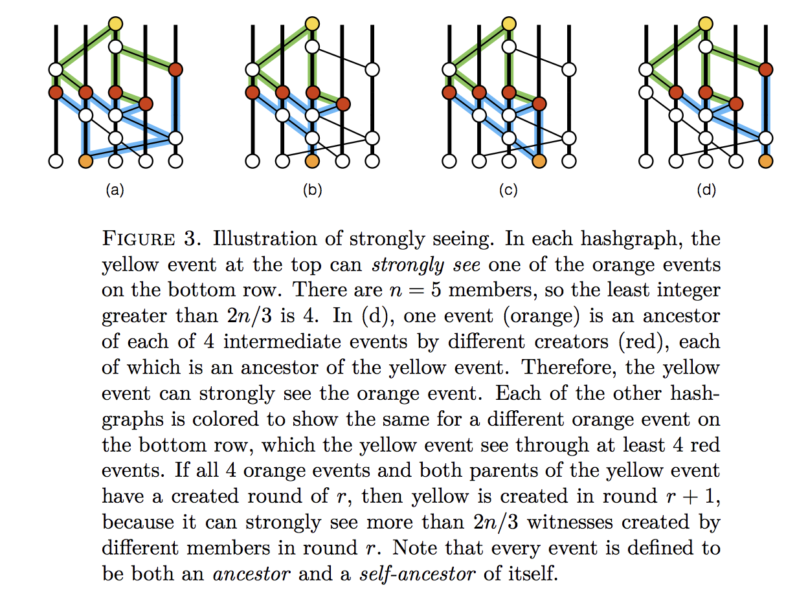
Figure 2: Illustration of Strongly-seeing
Construct of Gossiping
The main consensus algorithm loop consists of every node (Alice), selecting a random peer node (Bob) and sharing their graph history. Now Alice and Bob have the same graph history.
Alice and Bob both create a new event with the new knowledge they have just learnt from their peer. Alice repeats this process continuously.
Internal Consensus
After a sync, a node will determine the order for as many events as possible, using three procedures. The algorithm uses constant n (the number of nodes) and a small constant value c>2.
- Firstly, we have the Swirlds Hashgraph consensus algorithm. Each member runs this in parallel. Each sync brings in new events, which are then added to the Hashgraph. All known events are then divided into rounds. Then the first events in each round are decided on as being famous or not (through purely local Byzantine agreement with virtual voting). Then the total order is found on those events for which enough information is available. If two members independently assign a position in history to an event, they are guaranteed to assign the same position, and guaranteed to never change it, even as more information comes in. Furthermore, each event is eventually assigned such a position, with a probability of one [12].
in parallel:
loop
sync all known events to a random member
end loop
loop
receive a sync
create a new event
call divideRounds
call decideFame
call findOrder
end loop
- Secondly, we have the divideRounds procedure. As soon as an event x is known, it is assigned a round number x.round, and the Boolean value x.witness is calculated, indicating whether it is the first event that a member created in that round [12].
for each event x
r ← max round of parents of x ( or 1 if none exist )
if x can strongly see more than 2/3*n round r witnesses
x.round ← r + 1
else
x.round ← r
x.witness ← ( x has no self parent ) || ( x.round > x.selfParent.round )
- Thirdly, we have the decideFame procedure. For each witness event (i.e. an event x where x.witness is true), decide whether it is famous (i.e. assign a Boolean to x.famous). This decision is done by a Byzantine agreement protocol based on virtual voting. Each member runs it locally, on their own copy of the Hashgraph, with no additional communication. The protocol treats the events in the Hashgraph as if they were sending votes to each other, although the calculation is purely local to a member’s computer. The member assigns votes to the witnesses of each round, for several rounds, until more than two-thirds of the population agrees [12].
for each event x in order from earlier rounds to later
x.famous ← UNDECIDED
for each event y in order from earlier rounds to later
if x.witness and y.witness and y.round > x.round
d ← y.round - x.round
s ← the set of witness events in round y.round-1 that y can strongly see
v ← majority vote in s ( is TRUE for a tie )
t ← number of events in s with a vote of v
if d = 1 // first round of the election
y.vote ← can y see x ?
else if d mod c > 0 // this is a normal round
if t > 2* n /3 // if supermajority, then decide
x.famous ← v
y.vote ← v
break // y loop
else // else, just vote
y.vote ← v
else if t > 2* n /3 // this is a coin round
y.vote ← v
else // else flip a coin
y.vote ← middle bit of y.signature
Criticisms
An attempt to address some of the following criticisms has been presented [14]:
- The Hashgraph protocol is patented and is not open source.
- In addition, the Hashgraph white paper assumes that n, the number of nodes in the network, is constant. In practice, n can increase, but performance likely degrades badly as n becomes large [15].
- Hashgraph is not as "fair" as claimed in their paper, with at least one attack being proposed [16].
SINTRA
SINTRA is a Secure INtrusion-Tolerant Replication Architecture used for the coordination in asynchronous networks subject to Byzantine faults. It consists of a collection of protocols and is implemented in Java, providing secure replication and coordination among a group of servers connected by a wide-area network, such as the Internet. For a group consisting of n servers, it tolerates up to $t<n/3$ servers failing in arbitrary, malicious ways, which is optimal for the given model. The servers are connected only by asynchronous point-to-point communication links. Thus, SINTRA automatically tolerates timing failures as well as attacks that exploit timing. The SINTRA group model is static. This means that failed servers must be recovered by mechanisms outside of SINTRA, and the group must be initialized by a trusted process.
The protocols exploit randomization, which is needed to solve Byzantine agreement in such asynchronous distributed systems. Randomization is provided by a threshold-cryptographic pseudorandom generator, a coin-tossing protocol based on the Diffie-Hellman problem. Threshold cryptography is a fundamental concept in SINTRA, as it allows the group to perform a common cryptographic operation for which the secret key is shared among the servers such that no single server or small coalition of corrupted servers can obtain useful information about the key. SINTRA provides threshold-cryptographic schemes for digital signatures, public-key encryption and unpredictable pseudorandom number generation (coin-tossing). It contains broadcast primitives for reliable and consistent broadcasts, which provide agreement on individual messages sent by distinguished senders. However, these primitives cannot guarantee a total order for a stream of multiple messages delivered by the system, which is needed to build fault-tolerant services using the state machine replication paradigm. This is the problem of atomic broadcast and requires more expensive protocols based on Byzantine agreement. SINTRA provides multiple randomized Byzantine agreement protocols, for binary and multi-valued agreement, and implements an atomic broadcast channel on top of agreement. An atomic broadcast that also maintains a causal order in the presence of Byzantine faults is provided by the secure causal atomic broadcast channel [17].
Figure 3 illustrates SINTRA's modular design. Modularity greatly simplifies the construction and analysis of the complex protocols needed to tolerate Byzantine faults.

Figure 3: Design of SINTRA
HoneyBadgerBFT
HoneyBadgerBFT was released in November 2016 and is seen as the first practical asynchronous BFT consensus algorithm. It was designed with cryptocurrencies in mind, where bandwidth is considered scarce, but an abundance of CPU power is available. Thus, the protocol implements public-private key encryption to increase the efficiency of the establishment of consensus. The protocol works with a fixed set of servers to run the consensus. However, this leads to centralization and allows an attacker to specifically target these servers [3].
In its threshold encryption scheme, any one party can encrypt a message using a master public key, and it requires f+1 correct nodes to compute and reveal decryption shares for a ciphertext before the plaintext can be recovered.
The work of HoneyBadgerBFT is closely related to SINTRA, which, as mentioned earlier, is a system implementation based on the asynchronous atomic broadcast protocol from [18]. This protocol consists of a reduction from Atomic Broadcast Channel (ABC) to Asynchronous Common Subset (ACS), as well as a reduction from ACS to Multi-value Validated Agreement (MVBA).
HoneyBadger offers a novel reduction from ABC to ACS that provides better efficiency (by O(N) factor) through batching, while using threshold encryption to preserve censorship resilience. Better efficiency is also obtained by cherry-picking improved instantiations of subcomponents. For example, the expensive MVBA is circumvented by using an alternative ACS along with an efficient reliable broadcast (RBC) [28].
Stellar Consensus Protocol
Stellar Consensus Protocol (SCP) is an asynchronous protocol proposed. It considered to be a global consensus protocol consisting of nomination protocol and ballot protocol. SCP is said to be BFT, by bringing with it the concept of quorum slices and defeated BFT [5].
Each participant forms a quorum of other users, thus creating a trust hierarchy, which requires complex trust decisions [3]. Initially, the nomination proctor is run. During this, new values called candidate values are proposed for agreement. Each node receiving these values will vote for a single value among these. Eventually, it results in unanimously selected values for that slot.
After successful execution of nomination protocol, the nodes deploy the ballot protocol. This involves the federated voting to either commit or abort the values resulting from nomination protocol. This results in externalizing the ballot for the current slot. The aborted ballots are now declared irrelevant. However, there can be stuck states where nodes cannot reach a conclusion regarding whether to abort or commit a value. This situation is avoided by moving it to a higher-valued ballot, and considering it in a new ballot protocol execution. This aids in case a node believes that this stuck ballot was committed. Thus SCP assures avoidance and management of stuck states and provides liveliness.
The concept of quorum slices in case of SCP provides asymptotic security and flexible trust, making it more acceptable than other earlier consensus algorithms utilizing Federated BFT, such as the Ripple protocol consensus algorithm [29]. Here, the user is provided more independence in deciding whom to trust [30].
SCP protocol claims to be free of blocked states, and provides decentralized control, asymptotic security, flexible trust and low latency. However, it does not guarantee safety all the time. If the user node chooses an inefficient quorum slice, security is not guaranteed. In the event of partition or misbehaving nodes, it halts progress of the network until consensus can be reached.
LinBFT
LinBFT is a BFT protocol for blockchain systems. It allows for the amortized communication volume per block O(n) under reasonable conditions (where n is the number of participants) while satisfying deterministic guarantees on safety and liveness. It satisfies liveness in a partially synchronous network.
LinBFT cuts down its O(n4) complexity by implementing changes by O(n): linear view change, threshold signature and verifiable random functions. This is clearly optimal, in that disseminating a block already takes O(n) transmissions.
LinBFT is designed to be implemented for permissionless, public blockchain systems and takes into account anonymous participants without a public-key infrastructure, PoS, rotating leader and dynamic participant set [31]. For instance, participants can be anonymous, without a centralized public key infrastructure (PKI) public key among themselves, and participate in a distributed key generation (DKG) protocol required to create threshold signatures, both of which are communication-heavy processes.
LinBFT is compatible with PoS, which counters Sybil attacks and deters dishonest behavior through slashing [31].
Algorand
The Algorand white paper was released in May 2017. Algorand is a synchronous BFT consensus mechanism, where the blocks are added at a minimum rate [19]. It allows participants to privately check whether they are chosen for consensus participation and requires only one message per user, thus limiting possible attacks [3].
Alogrand scales up to 500,000 users by employing verifiable random functions, which are pseudorandom functions able to provide verifiable proofs that the output of said function is correct [3]. It introduces the concept of a concrete coin. Most of these BFT algorithms require some type of randomness oracle, but all nodes need to see the same value if the oracle is consulted. This had previously been achieved through a _common _coin idea. The concrete coin uses a much simpler approach, but only returns a binary value [19].
Thunderella
Thunderella implements an asynchronous strategy, where a synchronous strategy is used as a fallback in the event of a malfunction [20], thus it achieves both robustness and speed. It can be applied in permissionless networks using PoW. Network robustness and "instant confirmations" require 75% of the network to be honest, as well as the presence of a leader node.
Snowflake to Avalanche
This consensus protocol was first seen in [39]. The paper outlines four protocols that are building blocks forming a protocol family. These leaderless BFT protocols, published by Team Rocket, are built on a metastable mechanism. They are called Slush, Snowflake, Snowball and Avalanche.
The protocols differ from the traditional consensus protocols and the Nakamoto consensus protocols by not requiring an elected leader. Instead, the protocol simply guides all the nodes to consensus.
These four protocols are described as a new family of protocols due to this concept of metastability: a means to establish consensus by guiding all nodes towards an emerging consensus without requiring leaders, while still maintaining the same level of security and inducing a speed that exceeds current protocols.
This is achieved through the formation of "sub-quorums", which are small, randomized samples from nodes on the network. This allows for greater throughputs and sees parallel consensuses running before they merge to form the overarching consensus, which can be seen as similar in nature to the gossip protocol.
With regard to safety, throughput (the number of transactions per second) and scalability (the number of people supported by the network), Slush, Snowflake, Snowball and Avalanche seem to be able to achieve all three. They impart a probabilistic safety guarantee in the presence of Byzantine adversaries and achieve a high throughput and scalability due to their concurrent nature. A synchronous network is assumed.
The current problem facing the design of BFT protocols is that a system can be very fast when a small number of nodes are active, as there are fewer decisions to make. However, when there are many users and an increase in transactions, the system cannot be maintained.
Unlike the PoW implementation, which requires constant active participation from the miners, Avalanche can function even when nodes are dormant.
While traditional consensus protocols require O(n2) communication, their communication complexity ranges from O(kn log n) to O(kn) for some security parameter k<<n. In a sense, Team Rocket highlight that the communication complexity of their protocols is less intensive than that of O(n2) communications, thus making these protocols faster and more scalable.
To backtrack a bit, Big O notation is used in Computer Science to describe the performance or complexity of an algorithm. It describes the worst-case scenario and can be used to describe the execution time required by an algorithm [21]. In the case of consensus algorithms, O describes a finite expected number of steps or operations [22]. For example, O(1) describes an algorithm that will always execute in the same time, regardless of the size of the input data set. O(n) describes an algorithm whose performance will grow linearly and in direct proportion to the size of the input data set. O(n2) represents an algorithm whose performance is directly proportional to the square of the size of the input data set.
The reason for this is O(n2) suggests that the rate of growth of function is determined by n2, where n is the number of people on the network. Thus, the addition of a person exponentially increases the time taken to disseminate the information on the network, while traditional consensus protocols require everyone to communicate with one another, making it a laborious process [32].
Despite assuming a synchronous network, which is susceptible to the DoS attacks, this new family of protocols "reaches a level of security that is simply good enough while surging forward with other advancements" [32].
PARSEC
PARSEC is a BFT consensus algorithm possessing weak synchrony assumptions (highly asynchronous, assuming random delays with finite expected value). Similar to Hashgraph, it has no leaders, no round robin, no PoW and reaches eventual consensus with probability one. It differs from Hashgraph, in that it provides high speed in the absence and presence of faults. Thus, it avoids the structures of delegated PoS (DPoS), which requires a trusted set of leaders, and does not have a round robin (where a permissioned set of miners sign each block).
PARSEC is fully open, unlike Hashgraph, which is patented and closed sourced. The reference implementation of PARSEC, written in Rust, was released a few weeks after the white paper ([33], [23]).
The general problem in reaching Byzantine agreement on any value is reduced to the simple problem of reaching binary Byzantine agreement on the nodes participating in each decision. This has allowed PARSEC to reuse the binary Byzantine agreement protocol (Signature-free Asynchronous Byzantine Consensus) after adapting it to the gossip protocol [34].
Similar to HoneybadgerBFT, this protocol is composed through the additions of interesting ideas presented in literature. Similar to Hashgraph and Avalanche, a gossip protocol is used to allow efficient communication between nodes [33].
Finally, the need for a trusted leader or a trusted setup phase implied in [27] is removed by porting the key ideas to an asynchronous setting [35].
The network is set to N of N instances of the algorithm communicating via randomly synchronous connections. Due to random synchrony, all users can reach an agreement as to what is going on. There is no guarantee for nodes on the timing that they should be receiving messages, and a possibility of up to t Byzantine (arbitrary) failures are allowed, where 3t<N. The instances where no failures have occurred are deemed correct or honest, while the failed instances are termed faulty or malicious. Since a Byzantine failure model allows for malicious behavior, any set of instances containing more than 2/3N of them is referred to as the supermajority.
When a node receives a gossip request, it creates a new event and sends a response back (in Hashgraph, the response was optional). Each gossip event contains [24]:
- The data being transmitted.
- The self-parent (the hash of another gossip event created by the same node).
- The other-parent (a hash of another gossip event created by a different node).
- The Cause for creation, which can be a Request for information, a Response to another node’s request, or an Observation. An observation is when a node creates a gossip event to record an observation that the node made themselves.
- The creator ID (public key).
- The signature – signing the preceding information.
The self-parent and other-parent prevent tampering because they are signed and related to other gossip events [24].
As with Hashgraph, it is difficult for adversaries to interfere with the consensus algorithm, because all voting is virtual and done without sharing details of votes cast. Each node figures out what other nodes would have voted, based on their copy of the gossip graph.
PARSEC also uses the concept of a concrete coin, from Algorand. This is used to break ties, particularly in cases where an adversary is carefully managing communication between nodes in order to maintain a deadlock on votes.
In step 1, nodes try and converge on a "true" result for a set of results. If this is not achieved, they move on to step 2, which is trying to converge on a "false" result. If consensus still cannot be reached, a coin flip is made and they go back to step 1 in another voting round.
Democratic BFT
This is a deterministic Byzantine consensus algorithm that relies on a new weak coordinator. This protocol is implemented in the Red Belly blockchain and is said to achieve 30,000 transactions per second on Amazon Cloud Trials [25]. Through the coupling with an optimized variant of the reduction of multivalve to binary consensus from [26], the Democratic BFT (DBFT) consensus algorithm was generated. It terminates in four message delays in the good case, when all non-faulty processes propose the same value [36].
The term weak coordinator is used to describe the ability of the algorithm to terminate in the presence of a faulty or slow coordinator, unlike previous algorithms that do not have the ability to terminate. The fundamental idea here is to allow processes to complete asynchronous rounds as soon as they receive a threshold of messages, instead of having to wait for a message from a coordinator that may be slow. The resulting algorithm assumes partial synchrony; is resilience and time optimal; and does not require signatures.
Moving away from the impossibility of solving consensus in asynchronous message systems, where processes can be faulty or Byzantine, the technique of randomization or additional synchrony is adopted.
Randomized algorithms can use per-process "local" coins, or a shared common coin to solve consensus probabilistically among n processes despite $t<n/3$ Byzantine processes. When based on local coins, the existing algorithms converge O(n2.5) expected time.
A recent randomized algorithm that does not contain a signature solves consensus in O(1) expected time under a fair scheduler, where O is the binary.
To solve the consensus problem deterministically and prevent the use of the common coin, researchers have assumed partial or eventual synchrony. Here, these solutions require a unique coordinator process, referred to as the leader, in order to remain non-faulty.
There are advantages and disadvantages to this technique:
-
The advantage is that if the coordinator is non-faulty, and if the messages are delivered in a timely manner in an asynchronous round, then the coordinator broadcasts its proposal to all processes and this value is decided after a constant number of message delays.
-
The disadvantage is that a faulty coordinator can dramatically impact the algorithm performance by leveraging the power it has in a round, and imposing its value on all. Non-faulty processes thus have no other choice but to decide nothing in this round.
This protocol sees the use of a weak coordinator, which allows for the introduction of a new deterministic Byzantine consensus algorithm that is time optimal, resilience optimal and does not require the use of signatures. Unlike the classic, strong coordinator, the weak coordinator does not impose its value. It allows non-faulty processes to decide a value quickly, without the need of the coordinator, while helping the algorithm to terminate if non-faulty processes know that they proposed distinct values that might all be decided. In addition, the presence of a weak coordinator allows rounds to be executed optimistically without waiting for a specific message. This is unlike classic BFT algorithms that have to wait for a particular message from their coordinator, and occasionally have to recover from a slow network or faulty coordinator.
With regard to the problem of a slow of Byzantine coordinator, the weak coordinator helps agreement by contributing a value while still allowing termination in a constant number of message delays. It is thus unlike the classic coordinator or the eventual leader, which cannot be implemented in the Binary Byzantine Consensus Algorithm, BAMPn,t[t<n/3].
The validation of protocol was conducted similarly to that of the HoneyBadger blockchain, where "Coin", the randomization algorithm from [27] was used. Using the 100 Amazon Virtual Machines located in five data centers on different continents, it was shown that the DBFT algorithm outperforms that of "Coin", which is known to terminate in O(1) rounds in expectation. In addition, since Byzantine behaviors have been seen to severely affect the performance of strong coordinator-based consensus, four different Byzantine attacks have been tested in the validation.
Summary of Findings
Table 1 highlights the characteristics of the above-mentioned BFT Protocols. Asymptotic Security, Permissionless Blockchain, Timing Assumptions, Decentralized Control, Low Latency and Flexible Trust form part of the value system.
- Asymptotic Security - this depends only on digital signatures (and hash functions) for security.
- Permissionless Protocol - this allows anybody to create an address and begin interacting with the protocol.
- Timing Assumptions - refer to Forms of Timing Assumptions - Degrees of Synchrony.
- Decentralized Control - consensus is achieved and defended by protecting the identity of that node until its job is done, through a leaderless node.
- Low Latency - this describes a computer network that is optimized to process a very high volume of data messages with minimal delay.
- Flexible Trust - where users have the freedom to trust any combinations of parties they see fit.
Table 1: Characteristics of BFT Protocols
| Protocol | Permissionless Protocol | Timing Assumptions | Decentralized Control | Low Latency | Flexible Trust | Asymptotic Security |
|---|---|---|---|---|---|---|
| Hyperledger Fabric (HLF) | Partially synchronous | ✓ | ✓ | |||
| Tendermint | Partially synchronous | ✓ | ✓ | ✓ | ||
| Paxos | ✓ | Partially synchronous | ✓ | ✓ | ✓ | |
| Chandra-Toureg | ✓ | Partially synchronous | ✓ | ✓ | ||
| Raft | ✓ | Weakly synchronous | ✓ | ✓ | ✓ | |
| HashGraph | ✓ | Asynchronous | ✓ | ✓ | ✓ | |
| SINTRA | ✓ | Asynchronous | ✓ | ✓ | ||
| HoneyBadgerBFT | ✓ | Asynchronous | ✓ | ✓ | ✓ | ✓ |
| Stellar Consensus Protocol | ✓ | Asynchronous | ✓ | ✓ | ✓ | ✓ |
| LinBFT | ✓ | Partially synchronous | ✓ | ✓ | ||
| Algorand | ✓ | Synchronous | ✓ | ✓ | ✓ | |
| Thunderella | ✓ | Synchronous | ✓ | ✓ | ✓ | |
| Avalanche | ✓ | Synchronous | ✓ | ✓ | ✓ | |
| PARSEC | ✓ | Weakly synchronous | ✓ | ✓ | ||
| Democratic BFT | ✓ | Partially synchronous | ✓ | ✓ | ✓ |
BFT consensus protocols have been considered as a means to disseminate and validate information. The question of whether Schnorr multisignatures can perform the same function in validating information through the action of signing will form part of the next review.
References
[1] B. Asolo, "Breaking down the Blockchain Scalability Trilemma" [online]. Available: https://bitcoinist.com/breaking-down-the-scalability-trilemma/. Date accessed: 2018‑10‑01.
[2] Wikipedia: "Consensus Mechanisms" [online]. Available: https://en.wikipedia.org/wiki/Consensus_(computer_science). Date accessed: 2018‑10‑01.
[3] S. Rusch, "High-performance Consensus Mechanisms for Blockchains" [online]. Available: http://conferences.inf.ed.ac.uk/EuroDW2018/papers/eurodw18-Rusch.pdf. Date accessed: 2018‑08‑30.
[4] C. Cachin "Architecture of the Hyperledger Blockchain Fabric" [online]. Available: https://www.zurich.ibm.com/dccl/papers/cachin_dccl.pdf. Date accessed: 2018‑09‑16.
[5] L. S. Sankar, M. Sindhu and M. Sethumadhavan, "Survey of Consensus Protocols on Blockchain Applications" [online]. Available: https://ieeexplore.ieee.org/document/8014672/. Date accessed: 2018‑08‑30.
[6] "Tendermint Explained - Bringing BFT-based PoS to the Public Blockchain Domain" [online]. Available: https://blog.cosmos.network/tendermint-explained-bringing-bft-based-pos-to-the-public-blockchain-domain-f22e274a0fdb. Date accessed: 2018‑09‑30.
[7] "Tendermint Peer Discovery" [online]. Available: https://github.com/tendermint/tendermint/blob/master/docs/spec/p2p/node.md. Date accessed: 2018‑10‑22.
[8] Wikipedia: "Paxos" [online]. Available: https://en.wikipedia.org/wiki/Paxos_(computer_science). Date accessed: 2018‑10‑01.
[9] Wikipedia: "Chandra-Toueg Consensus Algorithm" [online]. Available: https://en.wikipedia.org/wiki/Chandra%E2%80%93Toueg_consensus_algorithm. Date accessed: 2018‑09‑13.
[10] Wikipedia: "Raft" [online]. Available: https://en.wikipedia.org/wiki/Raft_(computer_science). Date accessed: 2018‑09‑13.
[11] A. Clement, E. Wong, L. Alvisi, M. Dahlin and M. Marchetti, "Making Byzantine Fault Tolerant Systems Tolerate Byzantine Faults" [online]. Available: https://www.usenix.org/legacy/event/nsdi09/tech/full_papers/clement/clement.pdf. Date accessed 2018‑10‑22.
[12] L. Baird, "The Swirlds Hashgraph Consensus Algorithm: Fair, Fast, Byzantine Fault Tolerance" [online]. Available: https://www.swirlds.com/downloads/SWIRLDS-TR-2016-01.pdf. Date accessed: 2018‑09‑30.
[13] "Just My Thoughts: Introduction to Gossip" [online]. Available: https://managementfromscratch.wordpress.com/2016/04/01/introduction-to-gossip/. Date accessed 2018‑10‑22.
[14] L. Baird, "Swirlds and Sybil Attacks" [online]. Available: http://www.swirlds.com/downloads/Swirlds-and-Sybil-Attacks.pdf. Date accessed: 2018‑09‑30.
[15] Y. Jia, "Demystifying Hashgraph: Benefits and Challenges" [online]. Available: https://hackernoon.com/demystifying-Hashgraph-benefits-and-challenges-d605e5c0cee5. Date accessed: 2018‑09‑30.
[16] M. Graczyk, "Hashgraph: A Whitepaper Review" [online]. Available: https://medium.com/opentoken/Hashgraph-a-whitepaper-review-f7dfe2b24647. Date accessed: 2018‑09‑30.
[17] C. Cachin and J. A. Poritz, "Secure Intrusion-tolerant Replication on the Internet" [online]. Available: https://cachin.com/cc/papers/sintra.pdf. Date accessed: 2018‑10‑22.
[18] C. Cachin, K. Kursawe, F. Petzold and V. Shoup, "Secure and Efficient Asynchronous Broadcast Protocols" [online]. Available: https://www.shoup.net/papers/ckps.pdf. Date accessed 2018‑10‑22.
[19] J. Chen and S. Micali, "Algorand" White Paper" [online]. Available: https://arxiv.org/pdf/1607.01341.pdf. Date accessed: 2018‑09‑13.
[20] R. Pass and E. Shi, "Thunderella: Blockchains with Optimistic Instant Confirmation" White Paper [online]. Available: https://eprint.iacr.org/2017/913.pdf. Date accessed: 2018‑09‑13.
[21] "A Beginner's Guide to Big O Notation" [online]. Available: https://rob-bell.net/2009/06/a-beginners-guide-to-big-o-notation/. Date accessed: 2018‑10‑22.
[22] J. Aspnes and M. Herlihy, "Fast Randomized Consensus using Shared Memory" [online]. Available: http://www.cs.yale.edu/homes/aspnes/papers/jalg90.pdf. Date accessed: 2018‑10‑22.
[23] "Prototol for Asynchronous, Reliable, Secure and Efficient Consensus" [online]. Available: https://github.com/maidsafe/parsec. Date accessed 2018‑10‑22.
[24] "Project Spotlight: Maidsafe and PARSEC Part 2" [online]. Available: https://flatoutcrypto.com/home/maidsafeparsecexplanationpt2. Date accessed: 2018‑09‑18.
[25] "Red Belly Blockchain" [online]. Available: https://www.ccn.com/tag/red-belly-blockchain/. Date accessed: 2018‑10‑10.
[26] M. Ben-Or, B. Kelmer and T Rabin, "Asynchronous Secure Computations with Optimal Resilience" [online]. Available: https://dl.acm.org/citation.cfm?id=198088. Date accessed 2018‑10‑22.
[27] A. Mostefaoui, M.Hamouna and Michel Raynal, "Signature-free Asynchronous Byzantine Consensus with $t<n/3$ and O(n2) Messages" [online]. Available: https://hal.inria.fr/hal-00944019v2/document. Date accessed 2018‑10‑22.
[28] A. Miller, Y. Xia, K. Crowman, E. Shi and D. Song, "The Honey Badger of BFT Protocols", White Paper [online]. Available: https://eprint.iacr.org/2016/199.pdf. Date accessed: 2018‑08‑30.
[29] D. Schwartz, N. Youngs and A. Britto, "The Ripple Protocol Consensus Algorithm" [online]. Available: https://ripple.com/files/ripple_consensus_whitepaper.pdf. Date accessed: 2018‑09‑13.
[30] J. Kwon, "TenderMint: Consensus without Mining" [online]. Available: http://the-eye.eu/public/Books/campdivision.com/PDF/Computers%20General/Privacy/bitcoin/tendermint_v05.pdf. Date accessed: 2018‑09‑20.
[31] Y. Yang, "LinBFT: Linear-Communication Byzantine Fault Tolerance for Public Blockchains" [online]. Available: https://arxiv.org/pdf/1807.01829.pdf. Date accessed: 2018‑09‑20.
[32] "Protocol Spotlight: Avalanche Part 1" [online]. Available: https://flatoutcrypto.com/home/avalancheprotocol. Date Accessed: 2018‑09‑09.
[33] P. Chevalier, B. Kaminski, F. Hutchison, Q. Ma and S. Sharma, "Protocol for Asynchronous, Reliable, Secure and Efficient Consensus (PARSEC)". White Paper [online]. Available: http://docs.maidsafe.net/Whitepapers/pdf/PARSEC.pdf. Date accessed: 2018‑08‑30.
[34] "Project Spotlight: Maidsafe and PARSEC Part 1" [online]. Available: https://medium.com/@flatoutcrypto/project-spotlight-maidsafe-and-parsec-part-1-4830cec8d9e3. Date accessed: 2018‑08‑30.
[35] S. Micali, "Byzantine Agreement Made Trivial" [online]. Available: https://people.csail.mit.edu/silvio/Selected%20Scientific%20Papers/Distributed%20Computation/BYZANTYNE%20AGREEMENT%20MADE%20TRIVIAL.pdf. Date accessed: 2018‑08‑30.
[36] T. Crain, V. Gramoli, M. Larrea and M. Raynal, "DBFT: Efficient Byzantine Consensus with a Weak Coordinator and its Application to Consortium Blockchains" [online]. Available: http://gramoli.redbellyblockchain.io/web/doc/pubs/DBFT-preprint.pdf. Date accessed: 2018‑09‑30.
[37] Wikipedia: "Byzantine Fault Tolerance" [online]. Available: https://en.wikipedia.org/wiki/Byzantine_fault_tolerance. Date accessed: 2018‑09‑30.
[38] Wikipedia: "Liveness" [online]. Available: https://en.wikipedia.org/wiki/Liveness. Date accessed: 2018‑09‑30.
[39] Team Rocket, "Snowflake to Avalanche: A Novel Metastable Consensus Protocol Family for Cryptocurrencies" [online]. Available: https://ipfs.io/ipfs/QmUy4jh5mGNZvLkjies1RWM4YuvJh5o2FYopNPVYwrRVGV. Date accessed: 2018‑09‑30.
Appendices
Appendix A: Terminology
In order to gain a full understanding of the field of consensus mechanisms, specifically BFT consensus mechanisms, certain terms and concepts need to be defined and fleshed out.
Consensus
Distributed agents (these could be computers, generals coordinating an attack, or sensors in a nuclear plant) that communicate via a network (be it digital, courier or mechanical) need to agree on facts in order to act as a coordinated whole.
When all non-faulty agents agree on a given fact, then we say that the network is in consensus. Consensus is achieved when all non-faulty agents agree on a prescribed fact.
A consensus protocol may adhere to a host of formal requirements, including:
- Agreement - where all correct processes agree on the same fact.
- Weak Validity - where, for all correct processes, the output must be the input for some correct process.
- Strong Validity - where, if all correct processes receive the same input value, they must all output that value.
- Termination - where all processes must eventually decide on an output value [2].
Binary Consensus
There is a unique case of the consensus problem, referred to as the binary consensus, which restricts the input and hence the output domain to a single binary digit {0,1}.
When the input domain is large, relative to the number of processes, e.g. an input set of all the natural numbers, it can be shown that consensus is impossible in a synchronous message passing model [2].
Byzantine Fault Tolerance
Byzantine failures are considered the most general and most difficult class of failures among the failure modes. The so-called fail-stop failure mode occupies the simplest end of the spectrum. Whereas fail-stop failure mode simply means that the only way to fail is a node crash, detected by other nodes, Byzantine failures imply no restrictions, which means that the failed node can generate arbitrary data, pretending to be a correct one. Thus, Byzantine failures can confuse failure detection systems, which makes fault tolerance difficult [37].
Several papers in the literature contextualize the problem using generals at different camps, situated outside the enemy castle, needing to decide whether or not to attack. A consensus algorithm that would fail, would perhaps see one general attack while all the others stay back, resulting in the vulnerability of first general.
One key property of a blockchain system is that the nodes do not trust each other, meaning that some may behave in a Byzantine manner. The consensus protocol must therefore tolerate Byzantine failures.
A network is Byzantine Fault Tolerant (BFT) when it can provide service and reach a consensus despite faults or failures of the system. The processes use a protocol for consensus or atomic broadcast (a broadcast where all correct processes in a system of multiple processes receive the same set of messages in the same order); i.e. the same sequence of messages [[46]]) agree on a common sequence of operations to execute [20].
The literature on distributed consensus is vast, and there are many variants of previously proposed protocols being developed for blockchains. They can be largely classified along a spectrum:
-
One extreme consists of purely computation-based protocols, which use proof of computation to randomly select a node that single-handedly decides the next operation.
-
The other extreme is purely communication-based protocols, in which nodes have equal votes and go through multiple rounds of communication to reach consensus, Practical Byzantine Fault Tolerance (PBFT) being the prime example, which is a replication algorithm designed to be BFT [10].
For systems with n nodes, of which f are Byzantine, it has been shown that no algorithm exists that solves the consensus problem for f > n/3 [21].
So how then does the Bitcoin protocol get away with only needing 51% honest nodes to reach consensus? Well, strictly speaking, Bitcoin is NOT a BFT-CM, because there is never absolute finality in bitcoin ledgers; there is always a chance (however small) that someone can 51% attack the network and rewrite the entire history. Bitcoin is a probabilistic consensus, rather than deterministic.
Practical Byzantine Fault-tolerant Variants
PoW suffers from non-finality, i.e. a block appended to a blockchain is not confirmed until it is extended by many other blocks. Even then, its existence in the blockchain is only probabilistic. For example, eclipse attacks on Bitcoin exploit this probabilistic guarantee to allow double spending. In contrast, the original PBFT protocol is deterministic [10].
Deterministic and Non-deterministic Protocols
Deterministic, bounded Byzantine agreement relies on consensus being finalized for each epoch before moving to the next one, ensuring that there is some safety about a consensus reference point prior to continuing. If, instead, you allow an unbounded number of consensus agreements within the same epoch, then there is no overall consensus reference point with which to declare finality, and thus safety is compromised [8].
For non-deterministic or probabilistic protocols, the probability that an honest node is undecided after r rounds approaches zero as r approaches infinity.
Non-deterministic protocols that solve consensus under the purely asynchronous case potentially rely on random oracles and generally incur high message complexity overhead, as they depend on reliable broadcasting for all communication.
Protocols such as HoneyBadgerBFT fall into this class of nondeterministic protocols under asynchrony. Normally, they require three instances of reliable broadcast for a single round of communication [6].
Scalability-Performance Trade-off
As briefly mentioned in the Introduction, the scalability of BFT protocols considering the number of participants is highly limited and the performance of most protocols deteriorates as the number of involved replicas increases. This effect is especially problematic for BFT deployment in permissionless blockchains [7].
The problem of BFT scalability is twofold: a high throughput, as well as a large consensus group with good reconfigurability that can tolerate a high number of failures are both desirable properties in BFT protocols. However, they are often in direct conflict.
Bitcoin mining, for example, supports thousands of participants, offers good reconfigurability, i.e. nodes can join or leave the network at any time, and can tolerate a high number of failures. However, they are only able to process a severely limited number of transactions per second. Most BFT protocols achieve a significantly higher throughput, but are limited to small groups of participants of less than 20 nodes and the group reconfiguration is not easily achievable.
Several approaches have been employed to remedy these problems, e.g. threshold cryptography, creating new consensus groups for every round and limiting the number of necessary messages to reach consensus [3].
Appendix B: Timing Assumptions
Forms of Timing Assumptions - Degrees of Synchrony
Synchrony
Here, the time for nodes to wait and receive information is predefined. If a node has not received an input within the redefined time structure, there is a problem [5].
In synchronous systems, it is assumed that all communications proceed in rounds. In one round, a process may send all the messages it requires, while receiving all messages from other processes. In this manner, no message from one round may influence any messages sent within the same round [21].
A △T-synchronous network guarantees that every message sent is delivered after, at most, a delay of △T (where △T is a measure of real time) [6]. Synchronous protocols come to a consensus after △T [5].
Partial Synchrony
Here, the network retains some form of a predefined timing structure. However, it can operate without knowing said assumption of how fast nodes can exchange messages over the network. Instead of pushing out a block every x seconds, a partially synchronous blockchain would gauge the limit, with messages always being sent and received within the unknown deadline.
Partially synchronous protocols come to a consensus in an unknown, but finite period [5].
Unknown-△T Model
The protocol is unable to use the delay bound as a parameter [6].
Eventually Synchronous
The message delay bound △ is only guaranteed to hold after some (unknown instant, called the "Global Stabilization Time" [6].
Weak Synchrony
Most existing BFT systems, even those called "robust", assume some variation of weak synchrony, where messages are guaranteed to be delivered after a certain bound △T, but △T may be time-varying or unknown to the protocol designer.
However, the liveness properties of weakly synchronous protocols can fail completely when the expected timing assumptions are violated, e.g. due to a malicious network adversary. In general, liveness refers to a set of properties of concurrent systems, that require a system to make progress despite the fact that its concurrently executing components may have to "take turns" in critical sections. These are parts of the program that cannot be simultaneously run by multiple components [38].
Even when the weak synchrony assumptions are satisfied in practice, weakly synchronous protocols degrade significantly in throughput when the underlying network is unpredictable. Unfortunately, weakly asynchronous protocols require timeout parameters that are difficult to tune, especially in cryptocurrency application settings; and when the chosen timeout values are either too long or too short, throughput can be hampered.
In terms of feasibility, both weak and partially synchronous protocols are equivalent. A protocol that succeeds in one setting can be systematically adapted for another. In terms of concrete performance, however, adjusting for weak synchrony means gradually increasing the timeout parameter over time, e.g. by an exponential back-off policy. This results in delays when recovering from transient network partition. Protocols typically manifest these assumptions in the form of a timeout event. For example, if parties detect that no progress has been made within a certain interval, then they take a corrective action such as electing a new leader. Asynchronous protocols do not rely on timers, and make progress whenever messages are delivered, regardless of actual clock time [6].
Random Synchrony
Messages are delivered with random delays, such that the average delay is finite. There may be periods of arbitrarily long days (this is a weaker assumption than weak synchrony, and only a bit stronger than full asynchrony, where the only guarantee is that messages are eventually delivered). It is impossible to tell whether an instance has failed by completely stopping, or if there is just a delay in message delivery [1].
Asynchrony
Asynchronous Networks and Protocols
In an asynchronous network, the adversary can deliver messages in any order and at any time. However, the message must eventually be delivered between correct nodes. Nodes in an asynchronous network effectively have no use for real-time clocks, and can only take actions based on the ordering of messages they receive [6]. The speed is determined by the speed at which the network communicates, instead of a fixed limit of x seconds.
An asynchronous protocol requires a different means to decide when all nodes are able to come to a consensus.
As will be discussed in FLP Impossibility, FLP result rules out the possibility of the deterministic asynchronous protocols for atomic broadcast and many other tasks. A deterministic protocol must therefore make some stronger timing assumptions [6].
Counting Rounds in Asynchronous Networks
Although the guarantee of eventual delivery is decoupled from notions of "real time", it is nonetheless desirable to characterize the running time of asynchronous protocols. The standard approach is for the adversary to assign each message a virtual round number, subject to the condition that every (r-1) message between correct nodes must be delivered before any (r+1) message is sent.
Problem with Timing Assumptions
General
The problem with both synchronous and partially synchronous assumptions is that "the protocols based on timing assumptions are unsuitable for decentralized, cryptocurrency settings, where network links can be unreliable, network speeds change rapidly, and network delays may even be adversarially induced" [6].
Denial of Service Attack
Basing a protocol on timings, exposes the network to Denial of Service (DoS) attacks. A synchronous protocol will be deemed unsafe if a DoS slows down the network sufficiently. Even though a partially synchronous protocol would be safe, it would be unable to operate, as the messages would be exposed to interference.
An asynchronous protocol would be able to function under a DoS attack. However, it is difficult to reach consensus, as it is impossible to know if the network is under attack, or if a particular message is delayed by the protocol itself.
FLP Impossibility
Reference [22] maps out what it is possible to achieve with distributed processes in an asynchronous environment.
The result, referred to as the FLP result, which raised the problem of consensus, i.e. getting a distributed network of processors to agree on a common value. This problem was known to be solvable in a synchronous setting, where processes could proceed in simultaneous steps. The synchronous solution was seen as resilient to faults, where processors crash and take no further part in the computation. Synchronous models allow failures to be detected by waiting one entire step length for a reply from a processor, and presuming that it has crashed if no reply is received.
This kind of failure detection is not possible in an asynchronous setting, as there are no bounds on the amount of time a processor might take to complete its work and then respond. The FLP result shows that in an asynchronous setting, where only one processor might crash, there is no distributed algorithm that solves the consensus problem [23].
Randomized Agreement
The consensus problem involves an asynchronous system of processes, some of which may be unreliable. The problem is for the reliable processes to agree on a binary value. Every protocol for this problem has the possibility of nontermination [22]. While the vast majority of PBFT protocols steer clear of this impossibility result by making timing assumptions, randomness (and, in particular, cryptography) provides an alternative route. Asynchronous BFT protocols have been used for a variety of tasks such as binary agreement (ABA), reliable broadcast (RBC) and more [6].
Contributors
- https://github.com/kevoulee
- https://github.com/CjS77
- https://github.com/hansieodendaal
- https://github.com/anselld
Scaling
Purpose
The blockchain scalability problem refers to the discussion concerning the limits on the transaction throughput a blockchain network can process. It is related to the fact that records (known as blocks) in the bitcoin blockchain are limited in size and frequency [1].
Definitions
-
From Bitcoin StackExchange: The term "on-chain scaling" is frequently used to exclusively refer to increasing the blockchain capacity by means of bigger blocks. However, in the literal sense of the term, it should refer to any sort of protocol change that improves the network's capacity at the blockchain layer. These approaches tend to provide at most a linear capacity increase, although some are also scalability improvements [2].
Examples:
- blocksize/blockweight increase;
- witness discount of segregated witness;
- smaller size of Schnorr signatures;
- Bellare-Neven signature aggregation;
- key aggregation.
-
From Tari Labs: Analogous to the OSI layers for communication, in blockchain technology decentralized Layer 2 protocols, also commonly referred to as Layer 2 scaling, refers to transaction throughput scaling solutions. Decentralized Layer 2 protocols run on top of the main blockchain (off-chain), while preserving the attributes of the main blockchain (e.g. crypto-economic consensus). Instead of each transaction, only the resultant of a number of transactions is embedded on-chain [3].
References
[1] Wikipedia: "Bitcoin Scalability Problem" [online]. Available: https://en.wikipedia.org/wiki/Bitcoin_scalability_problem. Date accessed: 2019‑06‑11.
[2] Bitcoin StackExchange: "What is the Difference between On-chain Scaling and Off-chain Scaling?" [online]. Available: https://bitcoin.stackexchange.com/questions/63375/what-is-the-difference-between-on-chain-scaling-and-off-chain-scaling. Date accessed: 2019‑06‑10.
[3] Tari Labs: "Layer 2 Scaling Survey - What is Layer 2 Scaling?" [online]. Available: layer2scaling-landscape/layer2scaling-survey.html#what-is-layer-2-scaling. Date accessed: 2019‑06‑10.
Layer 2 Scaling Survey
- What is Layer 2 Scaling?
- How will this be Applicable to Tari?
- Layer 2 Scaling Current Initiatives
- Observations
- References
- Contributors
What is Layer 2 Scaling?
In the blockchain and cryptocurrency world, transaction processing scaling is a tough problem to solve. This is limited by the average block creation time, the block size limit, and the number of newer blocks needed to confirm a transaction (confirmation time). These factors make "over the counter" type transactions similar to Master Card or Visa nearly impossible if done on the main blockchain (on-chain).

Let's postulate that blockchain and cryptocurrency "take over the world" and are responsible for all global non-cash transactions performed, i.e. 433.1 billion in 2014 to 2015 [24]. This means 13,734 transactions per second (tx/s) on average! (To put this into perspective, VisaNet currently processes 160 billion transactions per year [25] and is capable of handling more than 65,000 transaction messages per second [26].) This means that if all of those were simple single-input-single-output non-cash transactions and performed on:
-
SegWit-enabled Bitcoin "like" blockchains that can theoretically handle ~21.31tx/s, we would need ~644 parallel versions, and with a SegWit transaction size of 190 bytes [27], the combined blockchain growth would be ~210GB per day!
-
Ethereum "like" blockchains, and taking current gas prices into account, Ethereum can theoretically process ~25.4tx/s, then ~541 parallel versions would be needed and, with a transaction size of 109 bytes ([28], [29]), the combined blockchain growth would be ~120GB per day!
This is why we need a proper scaling solution that would not bloat the blockchain.
The Open Systems Interconnection (OSI) model defines seven layers for communication functions of a computing system. Layer 1 refers to the physical layer and Layer 2 to the data link layer. Layer 1 is never concerned with functions of Layer 2 and up; it just delivers transmission and reception of raw data. In turn, Layer 2 only knows about Layer 1 and defines the protocols that deliver node-to-node data transfer [1].

Analogous to the OSI layers for communication, in blockchain technology, decentralized Layer 2 protocols, also commonly referred to as Layer 2 scaling, refers to transaction throughput scaling solutions. Decentralized Layer 2 protocols run on top of the main blockchain (off-chain), while preserving the attributes of the main blockchain (e.g. crypto-economic consensus). Instead of each transaction, only the result of a number of transactions is embedded on-chain [2].

Also:
-
Does every transaction need every parent blockchain node in the world to verify it?
-
Would I be willing to have (temporary) lower security guarantees for most of my day-to-day transactions if I could get them validated (whatever we take that to mean) near-instantly?
If you can answer "no" and "yes", then you're looking for a Layer 2 scaling solution.
How will this be Applicable to Tari?
Tari is a high-throughput protocol that will need to handle real-world transaction volumes. For example, Big Neon, the initial business application to be built on top of the Tari blockchain, requires high-volume transactions in a short time, especially when tickets sales open and when tickets will be redeemed at an event. Imagine filling an 85,000 seat stadium with 72 entrance queues on match days. Serialized real-world scanning boils down to approximately 500 tickets in four minutes, or approximately two spectators allowed access per second per queue.
This would be impossible to do with parent blockchain scaling solutions.
Layer 2 Scaling Current Initiatives
Micropayment Channels
What are they?
A micropayment channel is a class of techniques designed to allow users to make multiple Bitcoin transactions without committing all of the transactions to the Bitcoin blockchain. In a typical payment channel, only two transactions are added to the blockchain, but an unlimited or nearly unlimited number of payments can be made between the participants [10].
Several channel designs have been proposed or implemented over the years, including:
- Nakamoto high-frequency transactions;
- Spillman-style payment channels;
- CLTV-style payment channels;
- Poon-Dryja payment channels;
- Decker-Wattenhofer duplex payment channels;
- Decker-Russell-Osuntokun eltoo channels;
- Hashed Time-Locked Contracts (HTLCs).
With specific focus on Hashed Time-Locked Contracts: This technique can allow payments to be securely routed across multiple payment channels. HTLCs are integral to the design of more advanced payment channels such as those used by the Lightning Network.
The Lightning Network is a second-layer payment protocol that operates on top of a blockchain. It enables instant transactions between participating nodes. The Lightning Network features a peer-to-peer system for making micropayments of digital cryptocurrency through a network of bidirectional payment channels without delegating custody of funds and minimizing the trust of third parties [11].
Normal use of the Lightning Network consists of opening a payment channel by committing a funding transaction to the relevant blockchain. This is followed by making any number of Lightning transactions that update the tentative distribution of the channel's funds without broadcasting to the blockchain; and optionally followed by closing the payment channel by broadcasting the final version of the transaction to distribute the channel's funds.

Who uses them?
The Lightning Network is spreading across the cryptocurrency landscape. It was originally designed for Bitcoin. However, Litecoin, Zcash, Ethereum and Ripple are just a few of the many cryptocurrencies planning to implement or test some form of the network [12].
Strengths
- Micropayment channels are one of the leading solutions that have been presented to scale Bitcoin, which do not require a change to the underlying protocol.
- Transactions are processed instantly, the account balances of the nodes are updated, and the money is immediately accessible to the new owner.
- Transaction fees are a fraction of the transaction cost [13].
Weaknesses
- Micropayment channels are not suitable for making bulk payment, as the intermediate nodes in the multichannel payment network may not be loaded with money to move the funds along.
- Recipients cannot receive money unless their node is connected and online at the time of the transaction. At the time of writing (July 2018), channels were only bilateral.
Opportunities
Opportunities are fewer than expected, as Tari's ticketing use case requires many fast transactions with many parties, and not many fast transactions with a single party. Non-fungible assets must be "broadcasted", but state channels are private between two parties.
State Channels
What are they?
State channels are the more general form of micropayment channels. They can be used not only for payments, but for any arbitrary "state update" on a blockchain, such as changes inside a smart contract [16].
State channels allow multiple transactions to be made within off-chain agreements with very fast processing, and the final settlement on-chain. They keep the operation mode of blockchain protocol, but change the way it is used so as to deal with the challenge of scalability.
Any change of state within a state channel requires explicit cryptographic consent from all parties designated as "interested" in that part of the state [19].
Who uses them?
On Ethereum:
-
- Uses state channels to research state channel technology, define protocols and develop reference implementations.
- State channels work with any ERC20-compatible token.
- State updates between two parties are done via digitally signed and hash-locked transfers as the consensus mechanism, called balance proofs, which are also secured by a time-out. These can be settled on the Ethereum blockchain at any time. Raiden Network uses HTLCs in exactly the same manner as the Lightning Network.
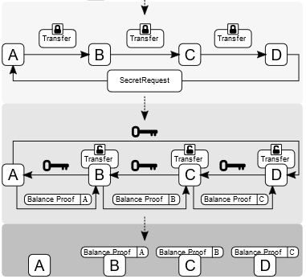
-
Counterfactual ([16], [19], [31])
- Uses state channels as a generalized framework for the integration of native state channels into Ethereum-based decentralized applications.
- A generalized state channel generalized framework is one where state is deposited once, and is then used afterwards by any application or set of applications.
- Counterfactual instantiation means to instantiate a contract without actually deploying it on-chain. It is achieved by making users sign and share commitments to the multisig wallet.
- When a contract is counterfactually instantiated, all parties in the channel act as though it has been deployed, even though it has not.
- A global registry is introduced. This is an on-chain contract that maps unique deterministic addresses for any Counterfactual contract to actual on-chain deployed addresses. The hashing function used to produce the deterministic address can be any function that takes into account the bytecode, its owner (i.e. the multisig wallet address), and a unique identifier.
- A typical Counterfactual state channel is composed of counterfactually instantiated objects.

-
- Uses state channels as a decentralized slot machine gambling platform, but still using centralized server-based random number generation.
- Instantiates a normal "Raiden-like" state channel (called fate channel) between the player and the casino. Final states are submitted to blockchain after the betting game is concluded.
- Investigating the use of threshold cryptography such as Boneh-Lynn-Shacham (BLS) signature schemes to enable truly secure random number generation by a group of participants.
On NEO:
- Trinity is an open-source network protocol based on NEP-5 smart contracts.
- Trinity for NEO is the same as the Raiden Network for Ethereum.
- Trinity uses the same consensus mechanism as the Raiden network.
- A new token, TNC, has been introduced to fund the Trinity network, but NEO, NEP-5 and TNC tokens are supported.
Strengths
- Allows payments and changes to smart contracts.
- State channels have strong privacy properties. Everything is happening "inside" a channel between participants.
- State channels have instant finality. As soon as both parties sign a state update, it can be considered final.
Weaknesses
State channels rely on availability; both parties must be online.
Opportunities
Opportunities are fewer than expected, as Tari's ticketing use case requires many fast transactions with many parties, and not many fast transactions with a single party. Non-fungible assets must be "broadcasted", but state channels are private between two parties.
Off-chain Matching Engines
What are they?
Orders are matched off-chain in a matching engine and fulfilled on-chain. This allows complex orders, supports cross-chain transfers, and maintains a public record of orders as well as a deterministic specification of behavior. Off-chain matching engines make use of a token representation smart contract that converts global assets into smart contract tokens and vice versa [5].
Who uses them?
-
Neon Exchange (NEX) ( [5], [35])
- NEX uses a NEO decentralized application (dApp) with tokens.
- Initial support is planned for NEO, ETH, NEP5 and ERC20 tokens.
- Cross-chain support is planned for trading BTC, LTC and RPX on NEX.
- The NEX off-chain matching engine will be scalable, distributed, fault-tolerant, and function continuously without downtime.
- Consensus is achieved using cryptographically signed requests; publicly specified deterministic off-chain matching engine algorithms; and public ledgers of transactions and reward for foul play. The trade method of the exchange smart contract will only accept orders signed by a private key held by the matching engine.
- The matching engine matches the orders and submits them to the respective blockchain smart contract for execution.
- A single invocation transaction on NEO can contain many smart contract calls. Batch commit of matched orders in one on-chain transaction is possible.

-
- An Ethereum ERC20-based smart contract token (ZRX).
- Provides an open-source protocol to exchange ERC20-compliant tokens on the Ethereum blockchain using off-chain matching engines in the form of dApps (Relayers) that facilitate transactions between Makers and Takers.
- Off-chain order relay + on-chain settlement.
- Maker chooses Relayer, specifies token exchange rate, expiration time, fees to satisfy Relayer's fee schedule, and signs order with a private key.
- Consensus is governed with the publicly available DEX smart contract: addresses, token balances, token exchange, fees, signatures, order status and final transfer.
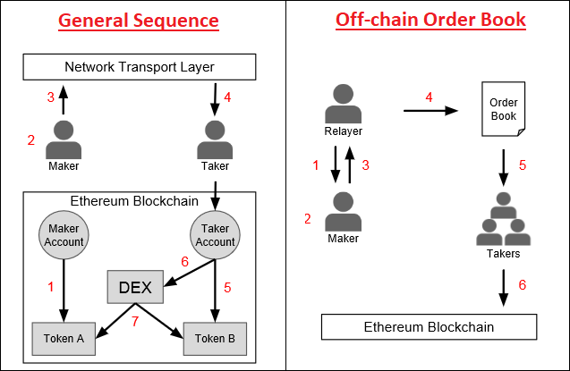
Strengths
-
Performance {NEX, 0x}:
- off-chain request/order;
- off-chain matching.
-
NEX-specific:
- batched on-chain commits;
- cross-chain transfers;
- support of national currencies;
- public JavaScript Object Notation (JSON) Application Programmers Interface (API) and web extension API for third-party applications to trade tokens;
- development environment - Elixir on top of Erlang to enable scalable, distributed, and fault-tolerant matching engine;
- Cure53 full security audit on web extension, NEX tokens will be regulated as registered European securities.
-
0x-specific:
- open-source protocol to enable creation of independent off-chain dApp matching engines (Relayers);
- totally transparent matching of orders with no single point of control
- maker's order only enters a Relayer's order book if fee schedule is adhered to,
- exchange can only happen if a Taker is willing to accept;
- consensus and settlement governed by the publicly available DEX smart contract.
Weaknesses
-
At the time of writing (July 2018), both NEX and 0x were still in development.
-
NEX-specific:
- a certain level of trust is required, similar to a traditional exchange;
- closed liquidity pool.
-
0x-specific:
Opportunities
Matching engines in general have opportunities for Tari; the specific scheme is to be investigated further.
Masternodes
What are they?
A masternode is a server on a decentralized network. It is utilized to complete unique functions in ways ordinary mining nodes cannot, e.g. features such as direct send, instant transactions and private transactions. Because of their increased capabilities, masternodes typically require an investment in order to run. Masternode operators are incentivized and are rewarded by earning portions of block rewards in the cryptocurrency they are facilitating. Masternodes will get the standard return on their stakes, but will also be entitled to a portion of the transaction fees, allowing for a greater return on investment (ROI) ([7], [9]).
- Dash Example [30]. Dash was the first cryptocurrency to implement the masternode model in its protocol. Under what Dash calls its proof of service algorithm, a second-tier network of masternodes exists alongside a first-tier network of miners to achieve distributed consensus on the blockchain. This two-tiered system ensures that proof of service and proof of work perform symbiotic maintenance of Dash's network. Dash masternodes also enable a decentralized governance system that allows node operators to vote on important developments within the blockchain. A masternode for Dash requires a stake of 1,000 DASH. Dash and the miners each have 45% of the block rewards. The other 10% goes to the blockchain's treasury fund. Operators are in charge of voting on proposals for how these funds will be allocated to improve the network.
- Dash Deterministic Ordering. A special deterministic algorithm is used to create a pseudorandom ordering of the masternodes. By using the hash from the proof-of-work for each block, security of this functionality is provided by the mining network.
- Dash Trustless Quorums. The Dash masternode network is trustless, where no single entity can control the outcome. N pseudorandom masternodes (Quorum A) are selected from the total pool to act as an oracle for N pseudorandom masternodes (Quorum B) that are selected to perform the actual task. Quorum A nodes are the nodes that are the closest, mathematically, to the current block hash, while Quorum B nodes are the furthest. This process is repeated for each new block in the blockchain.
- Dash Proof of Service. Bad actors could also run masternodes. To reduce the possibility of bad acting, nodes must ping the rest of the network to ensure they remain active. All masternode verification is done randomly via the Quorum system by the masternode network itself. Approximately 1% of the network is verified each block. This results in the entire masternode network being verified approximately six times per day. Six consecutive violations result in the deactivation of a masternode.
Who uses them?
Block, Bata, Crown, Chaincoin, Dash, Diamond, ION, Monetary Unit, Neutron, PIVX, Vcash and XtraBytes [8].
Strengths
Masternodes:
- help to sustain and take care of the ecosystem and can protect blockchains from network attacks;
- can perform decentralized governance of miners by having the power to reject or orphan blocks if required ([22], [30]);
- can support decentralized exchanges by overseeing transactions and offering fiat currency gateways;
- can be used to facilitate smart contracts such as instant transactions, anonymous transactions and decentralized payment processor;
- can facilitate a decentralized marketplace such as the blockchain equivalent of peer-run commerce sites such as eBay [22];
- compensate for Proof of Work's limitations - they avoid mining centralization and consume less energy [22];
- promise enhanced stability and network loyalty, as larger dividends and high initial investment costs make it less likely that operators will abandon their position in the network [22].
Weaknesses
- Maintaining masternodes can be a long and arduous process.
- ROI is not guaranteed and is inconsistent. In some applications, Masternodes only get rewarded if they mine a block and if they are randomly chosen to get paid.
- In general, a masternode's IP address is publicized and thus open to attacks.
Opportunities
- Masternodes do not have a specific standard or protocol; many different implementations exist. If the Tari protocol employs Masternodes, they can be used to facilitate smart contracts off-chain and to enhance the security of the primary blockchain.
- Masternodes increase the incentives for people to be involved with Tari.
Plasma
What is it?
Plasma blockchains are a chain within a blockchain, with state transitions enforced by bonded (time to exit) fraud proofs (block header hashes) submitted on the root chain. Plasma enables management of a tiered blockchain without a full persistent record of the ledger on the root blockchain, and without giving custodial trust to any third party. The fraud proofs enforce an interactive protocol of rapid fund withdrawals in case of foul play such as block withholding, and in cases where bad actors in a lower-level tier want to commit blocks to the root chain without broadcasting this to the higher-level tiers [4].

Plasma is a framework for incentivized and enforced execution of smart contracts, scalable to a significant amount of state updates per second, enabling the root blockchain to be able to represent a significant amount of dApps, each employing its own blockchain in a tree format [4].
Plasma relies on two key parts, namely reframing all blockchain computations into a set of MapReduce functions, and an optional method to do Proof of Stake (PoS) token bonding on top of existing blockchains (enforced in an on-chain smart contract). Nakamoto Consensus incentives discourage block withholding or other Byzantine behavior. If a chain is Byzantine, it has the option of going to any of its parents (including the root blockchain) to continue operation or exit with the current committed state [4].

MapReduce is a programming model and an associated implementation for processing and generating large data sets. Users specify a map function that processes a key/value pair to generate a set of intermediate key/value pairs, and a reduce function that merges all intermediate values associated with the same intermediate key [38]. The Plasma MapReduce includes commitments on data to computation as input in the map phase, and includes a merkleized proof-of-state transition in the reduce step when returning the result [4].
Who uses it?
- Loom Network, using Delegated Proof of Stake (DPoS) consensus and validation, enabling scalable Application Specific Side Chains (DAppChains), running on top of Ethereum ([4], [15]).
- OMG Network (OmiseGO), using PoS consensus and validation, a Plasma blockchain scaling solution for finance running on top of Ethereum ([6], [14]).
Strengths
- Not all participants need to be online to update state.
- Participants do not need a record of entry on the parent blockchain to enable their participation in a Plasma blockchain.
- Minimal data is needed on the parent blockchain to confirm transactions when constructing Plasma blockchains in a tree format.
- Private blockchain networks can be constructed, enforced by the root blockchain. Transactions may occur on a local private blockchain and have financial activity bonded by a public parent blockchain.
- Rapid exit strategies in case of foul play.
Weaknesses
At the time of writing (July 2018), Plasma still needed to be proven on other networks apart from Ethereum.
Opportunities
- Has opportunities for Tari as a Layer 2 scaling solution.
- Possibility to create a Tari ticketing Plasma dAppChain running of Monero without creating a Tari-specific root blockchain? Note: This will make the Tari blockchain dependent on another blockchain.
- The Loom Network's Software Development Kit (SDK) makes it extremely easy for anyone to create a new Plasma blockchain. In less than a year, a number of successful and diverse dAppChains have launched. The next one could easily be for ticket sales...
TrueBit
What is it?
TrueBit is a protocol that provides security and scalability by enabling trustless smart contracts to perform and offload complex computations. This makes it different from state channels and Plasma, which are more useful for increasing the total transaction throughput of the Ethereum blockchain. TrueBit relies on solvers (akin to miners), who have to stake their deposits in a smart contract, solve computation and, if correct, get their deposit back. If the computation is incorrect, the solver loses their deposit. TrueBit uses an economic mechanism called the "verification game", where an incentive is created for other parties, called challengers, to check the solvers' work ([16], [40], [43]).

Who uses it?
Golem cites TrueBit as a verification mechanism for its forthcoming outsourced computation network LivePeer, a video streaming platform ([39], [41], [42]).
Strengths
- Outsourced computation - anyone in the world can post a computational task, and anyone else can receive a reward for completing it [40].
- Scalable - by decoupling verification for miners into a separate protocol, TrueBit can achieve high transaction throughput without facing a Verifier's Dilemma [40].
Weaknesses
At the time of writing (July 2018), TrueBit had not yet been fully tested.
Opportunities
Nothing at the moment as, Tari would not be doing heavy/complex computation, at least not in the short term.
TumbleBit
What is it?
The TumbleBit protocol was invented at the Boston University. It is a unidirectional, unlinkable payment hub that is fully compatible with the Bitcoin protocol. TumbleBit allows parties to make fast, anonymous, off-chain payments through an untrusted intermediary called the Tumbler. No-one, not even the Tumbler, can tell which payer paid which payee during a TumbleBit epoch, i.e. a time period of significance.
Two modes of operation are supported:
- a classic mixing/tumbling/washing mode; and
- a fully-fledged payment hub mode.
TumbleBit consists of two interleaved fair-exchange protocols that rely on the Rivest–Shamir–Adleman (RSA) cryptosystem's blinding properties to prevent bad acting from either users or Tumblers, and to ensure anonymity. These protocols are:
- RSA-Puzzle-Solver Protocol; and
- Puzzle-Promise Protocol.
TumbleBit also supports anonymizing through Tor to ensure that the Tumbler server can operate as a hidden service ([87], [88], [94], [95], [96]).

TumbleBit combines off-chain cryptographic computations with standard on-chain Bitcoin scripting functionalities to realize smart contracts [97] that are not dependent on Segwit. The most important Bitcoin functionality used here includes hashing conditions, signing conditions, conditional execution, 2‑of‑2 multi-signatures and timelocking [88].
Who does it?
The Boston University provided a proof-of-concept and reference implementation alongside the white paper [90]. NTumbleBit [91] is being developed as a C# production implementation of the TumbleBit protocol that at the time of writing (July 2018) was being deployed by Stratis with its Breeze implementation [92], at alpha/experimental release level in TestNet.
NTumbleBit will be a cross-platform framework, server and client for the TumbleBit payment scheme. TumbleBit is separated into two modes, tumbler mode and payment hub mode. The tumbler mode improves transaction fungibility and offers risk free unlinkable transactions. Payment hub mode is a way of making off-chain payments possible without requiring implementations like Segwit or the lightning network. [89]
Strengths
- Anonymity properties. TumbleBit provides unlinkability without the need to trust the Tumbler service, i.e. untrusted intermediary [88].
- Denial of Service (DoS) and Sybil protection. "TumbleBit uses transaction fees to resist DoS and Sybil attacks." [88]
- Balance. "The system should not be exploited to print new money or steal money, even when parties collude." [88]
- As a classic tumbler. TumbleBit can also be used as a classic Bitcoin tumbler [88].
- Bitcoin compatibility. TumbleBit is fully compatible with the Bitcoin protocol [88].
- Scalability. Each TumbleBit user only needs to interact with the Tumbler and the corresponding transaction party; this lack of coordination between all TumbleBit users makes scalability possible for the tumbler mode [88].
- Batch processing. TumbleBit supports one-to-one, many-to-one, one-to-many and many-to-many transactions in payment hub mode [88].
- Masternode compatibility. The TumbleBit protocol can be fully implemented as a service in a Masternode. "The Breeze Wallet is now fully capable of providing enhanced privacy to bitcoin transactions through a secure connection. Utilizing Breeze Servers that are preregistered on the network using a secure, trustless registration mechanism that is resistant to manipulation and censorship." ([92], [93], [98])
- Nearly production ready. The NTumbleBit and Breeze implementations have gained TestNet status.
Weaknesses
- Privacy is not 100% proven. Payees have better privacy than the payers, and theoretically collusion involving payees and the Tumbler can exist to discover the identity of the payer [99].
- The Tumbler service is not distributed. More work needs to be done to ensure a persistent transaction state in case a Tumbler server goes down.
- Equal denominations are required. The TumbleBit protocol can only support a common denominator unit value [88].
Opportunities
TumbleBit has benefits for Tari as a trustless Masternode matching/batch processing engine with strong privacy features.
Counterparty
What is it?
Counterparty is NOT a blockchain. Counterparty is a token protocol released in January 2014 that operates on Bitcoin.
It has a fully functional Decentralized Exchange (DEX), as well as several hardcoded smart contracts defined that
include contracts for difference and binary options ("bets"). To operate, Counterparty utilizes "embedded consensus",
which means that a Counterparty transaction is created and embedded into a Bitcoin transaction, using encoding such as
1-of-3 multi-signature (multisig), Pay to Script Hash (P2SH) or Pay To Public Key Hash (P2PKH). Counterparty nodes, i.e.
nodes that run both bitcoind and the counterparty-server applications, will receive Bitcoin transactions as normal
(from bitcoind). The counterparty-server will then scan each, and decode and parse any embedded Counterparty
transactions it finds. In effect, Counterparty is a ledger within the larger Bitcoin ledger, and the functioning of
embedded consensus can be thought of as similar to the fitting of one Russian stacking doll inside another ([73],
[74], [75]).
Embedded consensus also means that the nodes maintain identical ledgers without using a separate peer-to-peer network,
solely using the Bitcoin blockchain for all communication (i.e. timestamping, transaction ordering and transaction
propagation). Unlike Bitcoin, which has the concept of both a soft fork and a hard fork, a change to the protocol or
"consensus" code of Counterparty always has the potential to create a hard fork. In practice, this means that each
Counterparty node must run the same version of counterparty-server (or at least the same minor version, e.g. the
"3" in 2.3.0) so that the protocol code matches up across all nodes ([99], [100]).
Unlike Bitcoin's UTXO model, the Counterparty token protocol utilizes an accounts system where each Bitcoin address is an account, and Counterparty credit and debit transactions for a specific token type affect account balances of that token for that given address. The decentralized exchange allows for low-friction exchanging of different tokens between addresses, utilizing the concept of "orders", which are individual transactions made by Counterparty clients, and "order matches", which the Counterparty protocol itself will generate as it parses new orders that overlap existing active orders in the system. It is the Counterparty protocol code itself that manages the escrow of tokens when an order is created, the exchange of tokens between two addresses that have overlapping orders, and the release of those assets from escrow post-exchange.
Counterparty uses its own token, XCP, which was created through a "proof of burn" process during January 2014 [101].
In that month, over 2,000 bitcoins were destroyed by various individuals sending them to an unspendable address on the
Bitcoin network (1CounterpartyXXXXXXXXXXXXXXXUWLpVr), which caused the Counterparty protocol to award the sending
address with a corresponding amount of XCP. XCP is used for payment of asset creation fees, collateral for contracts
for difference/binary options, and often as a base token in decentralized exchange transactions (largely due to the
complexities of using Bitcoin (BTC) in such trades).

Support for the Ethereum Virtual Machine (EVM) was implemented, but never included on the MainNet version [73]. With
the Counterparty EVM implementation, all published Counterparty smart contracts “live” at Bitcoin addresses that start
with a C. Counterparty is used to broadcast an execute transaction to call a specific function or method in the
smart contract code. Once an execution transaction is confirmed by a Bitcoin miner, the Counterparty federated nodes
will receive the request and execute that method. The contract state is modified as the smart contract code executes
and is stored in the Counterparty database [99].
General consensus is that a federated network is a distributed network of centralized networks. The Ripple blockchain implements a Federated Byzantine Agreement (FBA) consensus mechanism. Federated sidechains implements a security protocol using a trusted federation of mutually distrusting functionaries/notaries. Counterparty utilizes a "full stack" packaging system for its components and all dependencies, called the "federated node" system. However, this meaning refers to federated in the general definition, i.e. "set up as a single centralized unit within which each state or division keeps some internal autonomy" ([97], [98], [71]).
Who uses it?
The most notable projects built on top of Counterparty are Age of Chains, Age of Rust, Augmentors, Authparty, Bitcorns, Blockfreight™, Blocksafe, BTCpaymarket.com, CoinDaddy, COVAL, FoldingCoin, FootballCoin, GetGems, IndieBoard, LTBCoin - Letstalkbitcoin.com, Mafia Wars, NVO, Proof of Visit, Rarepepe.party, SaruTobi Island, Spells of Genesis, Takara, The Scarab Experiment, Token.FM, Tokenly, TopCoin and XCP DEX [75]. In the past, projects such as Storj and SWARM also built on Counterparty.
COVAL is being developed with the primary purpose of moving value using “off-chain” methods. It uses its own set of node runners to manage various "off-chain" distributed ledgers and ledger assigned wallets to implement an extended transaction value system, whereby tokens as well as containers of tokens can be securely transacted. Scaling within the COVAL ecosystem is thus achievable, because it is not only reliant on the Counterparty federated nodes to execute smart contracts [76].
Strengths
- Counterparty provides a simple way to add "Layer 2" functionality, i.e. hard-coded smart contracts, to an already existing blockchain implementation that supports basic data embedding.
- Counterparty's embedded consensus model utilizes "permissionless innovation", meaning that even the Bitcoin core developers could not stop the use of the protocol layer without seriously crippling the network.
Weaknesses
- Embedded consensus requires lockstep upgrades from network nodes to avoid forks.
- Embedded consensus imposes limitations on the ability of the secondary layer to interact with the primary layer's token. Counterparty was not able to manipulate BTC balances or otherwise directly utilize BTC.
- With embedded consensus, nodes maintain identical ledgers without using a peer-to-peer network. One could claim that this hampers the flexibility of the protocol. It also limits the speed of the protocol to the speed of the underlying blockchain.
Opportunities
- Nodes can implement improved consensus models such as Federated Byzantine Agreement [98].
- Refer to Scriptless Scripts.
2-way Pegged Secondary Blockchains
What are they?
A 2-way peg (2WP) allows the "transfer" of BTC from the main Bitcoin blockchain to a secondary blockchain and vice versa at a fixed rate by making use of an appropriate security protocol. The "transfer" actually involves BTC being locked on the main Bitcoin blockchain and unlocked/made available on the secondary blockchain. The 2WP promise is concluded when an equivalent number of tokens on the secondary blockchain are locked (in the secondary blockchain) so that the original bitcoins can be unlocked ([65], [71]).
- Sidechain: When the security protocol is implemented using Simplified Payment Verification (SPV) proofs - blockchain transaction verification without downloading the entire blockchain, the secondary blockchain is referred to as a Sidechain [65].
- Drivechain: When the security protocol is implemented by giving custody of the BTC to miners - where miners vote when to unlock BTC and where to send them, the secondary blockchain is referred to as a Drivechain. In this scheme, the miners will sign the block header using a Dynamic Membership Multiparty Signature (DMMS) ([65], [71]).
- Federated Peg/Sidechain: When the security protocol is implemented by having a trusted federation of mutually distrusting functionaries/notaries, the secondary blockchain is referred to as a Federated Peg/Sidechain. In this scheme, the DMMS is replaced with a traditional multi-signature scheme ([65], [71]).
- Hybrid Sidechain-Drivechain-Federated Peg: When the security protocol is implemented by SPV proofs going to the secondary blockchain and dynamic mixture of miner DMMS and functionaries/notaries multi-signatures going back to the main Bitcoin blockchain, the secondary blockchain is referred to as a Hybrid Sidechain-Drivechain-Federated Peg ([65], [71], [72]).
The following figure shows an example of a 2WP Bitcoin secondary blockchain using a Hybrid Sidechain-Drivechain-Federated Peg security protocol [65]:

BTC on the main Bitcoin blockchain are locked by using a P2SH transaction, where BTC can be sent to a script hash instead of a public key hash. To unlock the BTC in the P2SH transaction, the recipient must provide a script matching the script hash and data, which makes the script evaluate to true [66].
Who does them?
- RSK (formerly Rootstock) is a 2WP Bitcoin secondary blockchain using a hybrid sidechain-drivechain security protocol. RSK is scalable up to 100 transactions per second (Tx/s) and provides a second-layer scaling solution for Bitcoin, as it can relieve on-chain Bitcoin transactions ([100], [101], [102]).
- Hivemind (formerly Truthcoin) is implementing a Peer-to-Peer Oracle Protocol that absorbs accurate data into a blockchain so that Bitcoin users can speculate in Prediction Markets [67].
- Blockstream is implementing a Federated Sidechain called Liquid, with the functionaries/notaries being made up of participating exchanges and Bitcoin businesses [72].

Strengths
- Permissionless innovation: Anyone can create a new blockchain project that uses the underlying strengths of the main Bitcoin blockchain, using real BTC as the currency [63].
- New features: Sidechains/Drivechains can be used to test or implement new features without risk to the main Bitcoin blockchain or without having to change its protocol, such as Schnorr signatures and zero-knowledge proofs ([63], [68]).
- Chains-as-a-Service (CaaS): It is possible to create a CaaS with data storage 2WP secondary blockchains [68].
- Smart Contracts: 2WP secondary blockchains make it easier to implement smart contracts [68].
- Scalability: 2WP secondary blockchains can support larger block sizes and more transactions per second, thus scaling the Bitcoin main blockchain [68].
Weaknesses
- Security: Transferring BTC back into the main Bitcoin blockchain is not secure enough and can be manipulated because Bitcoin does not support SPV from 2WP secondary blockchains [64].
- 51% attacks: 2WP secondary blockchains are hugely dependent on merged mining. Mining power centralization and 51% attacks are thus a real threat, as demonstrated for Namecoin and Huntercoin (refer to Merged Mining Introduction).
- The DMMS provided by mining is not very secure for small systems, while the trust of the federation/notaries is riskier for large systems [71].
Opportunities
2WP secondary blockchains may present interesting opportunities to scale multiple payments that would be associated with multiple non-fungible assets living on a secondary layer. However, take care with privacy and security of funds as well as with transferring funds into and out of the 2WP secondary blockchains.
Lumino
What is it?
Lumino Transaction Compression Protocol (LTCP) is a technique for transaction compression that allows the processing of a higher volume of transactions, but the storing of much less information. The Lumino Network is a Lightning-like extension of the RSK platform that uses LTCP. Delta (difference) compression of selected fields of transactions from the same owner is done by using aggregate signing of previous transactions so that previous signatures can be disposed of [103].
Each transaction contains a set of persistent fields called the Persistent Transaction Information (PTI) and a compound record of user transaction data called the SigRec. A Lumino block stores two Merkle trees: one containing all PTIs; and the other containing all transaction IDs (hash of the signed SigRec). This second Merkle tree is conceptually similar to the Segwit witness tree, thus forming the witness part. Docking is the process where SicRec and signature data can be pruned from the blockchain if valid linked PTI information exists [103].

Who does it?
RSK, which was newly launched on MainNet in January 2018. The Lumino Network must still be launched in TestNet ([61], [62]).
Strengths
The Lumino Network promises high efficiency in pruning the RSK blockchain.
Weaknesses
- The Lumino Network has not yet been released.
- Details about how the Lumino Network will handle payment channels were not decisive in the white paper [103].
Opportunities
LTCP pruning may be beneficial to Tari.
Scriptless Scripts
What is it?
Scriptless Scripts was coined and invented by mathematician Andrew Poelstra. It entails offering scripting functionality without actual scripts on the blockchain to implement smart contracts. At the time of writing (July 2018) it can only work on the Mimblewimble blockchain and makes use of a specific Schnorr signature scheme [81] that allows for signature aggregation, mathematically combining several signatures into a single signature, without having to prove Knowledge of Secret Keys (KOSK). This is known as the plain public-key model, where the only requirement is that each potential signer has a public key. The KOSK scheme requires that users prove knowledge (or possession) of the secret key during public key registration with a certification authority, and is one way to generically prevent rogue-key attacks ([78], [79]).
Signature aggregation properties sought here are ([78], [79]):
- must be provably secure in the plain public-key model;
- must satisfy the normal Schnorr equation, whereby the resulting signature can be written as a function of a combination of the public keys;
- must allow for Interactive Aggregate Signatures (IAS), where the signers are required to cooperate;
- must allow for Non-interactive Aggregate Signatures (NAS), where the aggregation can be done by anyone;
- must allow each signer to sign the same message;
- must allow each signer to sign their own message.
This is different to a normal multi-signature scheme where one message is signed by all.
Let's say Alice and Bob each needs to provide half a Schnorr signature for a transaction, whereby Alice promises to reveal a secret to Bob in exchange for one crypto coin. Alice can calculate the difference between her half Schnorr signature and the Schnorr signature of the secret (adaptor signature) and hand it over to Bob. Bob then has the ability to verify the correctness of the adaptor signature without knowing the original signatures. Bob can then provide his half Schnorr signature to Alice so she can broadcast the full Schnorr signature to claim the crypto coin. By broadcasting the full Schnorr signature, Bob has access to Alice's half Schnorr signature and he can then calculate the Schnorr signature of the secret because he already knows the adaptor signature, thereby claiming his prize. This is also known as Zero-Knowledge Contingent payments ([77], [80]).
Who does it?
Mimblewimble is being cited by Andrew Poelstra as being the ultimate Scriptless Script [80].

Strengths
- Data savings. Signature aggregation provides data compression on the blockchain.
- Privacy. Nothing about the Scriptless Script smart contract, other than the settlement transaction, is ever recorded on the blockchain. No one will ever know that an underlying smart contract was executed.
- Multiplicity. Multiple digital assets can be transferred between two parties in a single settlement transaction.
- Implicit scalability. Scalability on the blockchain is achieved by virtue of compressing multiple transactions into a single settlement transaction. Transactions are only broadcast to the blockchain once all preconditions are met.
Weaknesses
Recent work by Maxwell et al. ([78], [79]) showed that a naive implementation of Schnorr multi-signatures that satisfies key aggregation is not secure, and that the Bellare and Neven (BN) Schnorr signature scheme loses the key aggregation property in order to gain security in the plain public-key model. They proposed a new Schnorr-based multi-signature scheme with key aggregation called MuSig, which is provably secure in the plain public-key model. It has the same key and signature size as standard Schnorr signatures. The joint signature can be verified in exactly the same way as a standard Schnorr signature with respect to a single “aggregated” public-key, which can be computed from the individual public keys of the signers. Note that the case of interactive signature aggregation where each signer signs their own message must still be proven by a complete security analysis.
Opportunities
Tari plans to implement the Mimblewimble blockchain and should implement the Scriptless Scripts together with the MuSig Schnorr signature scheme. However, this in itself will not provide the Layer 2 scaling performance that will be required. Big Neon, the initial business application to be built on top of the Tari blockchain, requires to "facilitate 500 tickets in 4 minutes", i.e. approximately two spectators allowed access every second, with negligible latency.
The Mimblewimble Scriptless Scripts could be combined with a federated node (or specialized masternode), similar to that being developed by Counterparty. The secrets that are revealed by virtue of the MuSig Schnorr signatures can instantiate normal smart contracts inside the federated node, with the final consolidated state update being written back to the blockchain after the event.
Directed Acyclic Graph (DAG) Derivative Protocols
What is it?
In mathematics and computer science, a Directed Acyclic Graph (DAG) is a finite directed graph with no directed cycles. A directed graph is acyclic if and only if it has a topological ordering, i.e. for every directed edge uv from vertex u to vertex v, u comes before v in the ordering (age) [85].

DAGs in blockchain were first proposed as the GHOST protocol ([87], [88]), a version of which is implemented in Ethereum as the Ethash PoW algorithm (based on Dagger-Hashimoto ([102], [103])). Then Braiding ([83], [84]), Jute [86], SPECTRE [89] and PHANTOM [95] were presented. The principle of DAG in blockchain is to present a way to include traditional off-chain blocks into the ledger, which is governed by mathematical rules. A parent that is simultaneously an ancestor of another parent is disallowed:

The main problems to be solved by the DAG derivative protocols are:
- inclusion of orphaned blocks (decrease the negative effect of slow propagation); and
- mitigation against selfish mining attacks.
The underlying concept is still in the research and exploration phase [82].
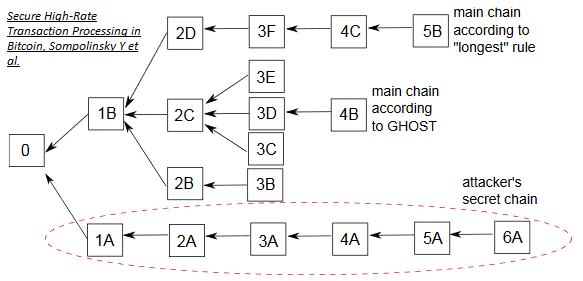
In most DAG derivative protocols, blocks containing conflicting transactions, i.e. conflicting blocks, are not orphaned. A subsequent block is built on top of both of the conflicting blocks, but the conflicting transactions themselves are thrown out while processing the chain. SPECTRE, for one, provides a scheme whereby blocks vote to decide which transactions are robustly accepted, robustly rejected or stay in an indefinite “pending” state in case of conflicts. Both conflicting blocks become part of the shared history, and both conflicting blocks earn their respective miners a block reward ([82], [93], [94]).
Note: Braiding requires that parents and siblings may not contain conflicting transactions.

Inclusive (DAG derivative) protocols that integrate the contents of traditional off-chain blocks into the ledger result in incentives for behavior changes by the nodes, which leads to an increased throughput, and a better payoff for weak miners [88].

DAG derivative protocols are not Layer 2 Scaling solutions, but they offer significant scaling of the primary blockchain.
Who does it?
-
The School of Engineering and Computer Science, The Hebrew University of Jerusalem ([87], [88], [89], [93], [94])
- GHOST, SPECTRE, PHANTOM
-
DAGlabs [96] (Note: This is the commercial development chapter.)
- SPECTRE, PHANTOM
- SPECTRE provides high throughput and fast confirmation times. Its DAG structure represents an abstract vote regarding the order between each pair of blocks, but this pairwise ordering may not be extendable to a full linear ordering due to possible Condorcet cycles.
- PHANTOM provides a linear ordering over the blocks of the DAG and can support consensus regarding any general computation (smart contracts), which SPECTRE cannot. In order for a computation or contract to be processed correctly and consistently, the full order of events in the ledger is required, particularly the order of inputs to the contract. However, PHANTOM’s confirmation times are much slower than those in SPECTRE.
- SPECTRE, PHANTOM
-
Ethereum as the Ethash PoW algorithm that has been adapted from GHOST
-
[Dr. Bob McElrath] ([83], [84])
- Brading
-
David Vorick [86]
- Jute
-
Crypto currencies:
Strengths
- Layer 1 scaling: increased transaction throughput on the main blockchain.
- Fairness: better payoff for weak miners.
- Decentralization mitigation: weaker miners also get profits.
- Transaction confirmation times: confirmation times of several seconds (SPECTRE).
- Smart contracts: support smart contracts (PHANTOM).
Weaknesses
- Still not proven 100%, development continuing.
- The DAG derivative protocols differ on important aspects such as miner payment schemes, security models, support for smart contracts, and confirmation times. Thus, all DAG derivative protocols are not created equal - beware!
Opportunities
Opportunities exist for Tari in applying the basic DAG principles to make a 51% attack harder by virtue of fairness and miner decentralization resistance. Choosing the correct DAG derivative protocol can also significantly improve Layer 1 scaling.
Observations
- Further investigation into the more promising Layer 2 scaling solutions and technologies is required to verify alignment, applicability and usability.
- Although not all technologies covered here are Layer 2 Scaling solutions, the strengths should be considered as building blocks for the Tari protocol.
References
[1] "OSI Mode" [online]. Available: https://en.wikipedia.org/wiki/OSI_model. Date accessed: 2018‑06‑07.
[2] "Decentralized Digital Identities and Block Chain - The Future as We See It" [online]. Available: https://www.microsoft.com/en-us/microsoft-365/blog/2018/02/12/decentralized-digital-identities-and-blockchain-the-future-as-we-see-it/. Date accessed: 2018‑06‑07.
[3] "Trinity Protocol: The Scaling Solution of the Future?" [Online.] Available: https://www.investinblockchain.com/trinity-protocol. Date accessed: 2018‑06‑08.
[4] J. Poon and V. Buterin, "Plasma: Scalable Autonomous Smart Contracts" [online]. Available: http://plasma.io/plasma.pdf. Date accessed: 2018‑06‑14.
[5] "NEX: A High Performance Decentralized Trade and Payment Platform" [online]. Available: https://nash.io/pdfs/whitepaper_v2.pdf. Date accessed: 2018‑06‑11.
[6] J. Poon and OmiseGO Team, "OmiseGO: Decentralized Exchange and Payments Platform" [online]. Available: https://cdn.omise.co/omg/whitepaper.pdf. Date accessed: 2018‑06‑14.
[7] "The Rise of Masternodes Might Soon be Followed by the Creation of Servicenodes" [online]. Available: https://cointelegraph.com/news/the-rise-of-masternodes-might-soon-be-followed-by-the-creation-of-servicenodes. Date accessed: 2018‑06‑13.
[8] "What are Masternodes?- Beginner's Guide" [online]. Available: https://blockonomi.com/masternode-guide/. Date accessed: 2018‑06‑14.
[9] "What the Heck is a DASH Masternode and How Do I get One" [online]. Available: https://medium.com/dash-for-newbies/what-the-heck-is-a-dash-masternode-and-how-do-i-get-one-56e24121417e. Date accessed: 2018‑06‑14.
[10] "Payment Channels" (online). Available: https://en.bitcoin.it/wiki/Payment_channels. Date accessed: 2018‑06‑14.
[11] "Lightning Network" (online). Available: https://en.wikipedia.org/wiki/Lightning_Network. Date accessed: 2018‑06‑14.
[12] "Bitcoin Isn't the Only Crypto Adding Lightning Tech Now" [online]. Available: https://www.coindesk.com/bitcoin-isnt-crypto-adding-lightning-tech-now/. Date accessed: 2018‑06‑14.
[13] "What is Bitcoin Lightning Network? And How Does it Work?" [Online.] Available: https://cryptoverze.com/what-is-bitcoin-lightning-network/. Date accessed: 2018‑06‑14.
[14] "OmiseGO" [online]. Available: https://omisego.network/. Date accessed: 2018‑06‑14.
[15] "Everything You Need to Know About Loom Network, All In One Place (Updated Regularly)" [online]. Available: https://medium.com/loom-network/everything-you-need-to-know-about-loom-network-all-in-one-place-updated-regularly-64742bd839fe. Date accessed: 2018‑06‑14.
[16] "Making Sense of Ethereum's Layer 2 Scaling Solutions: State Channels, Plasma, and Truebit" [online]. Available: https://medium.com/l4-media/making-sense-of-ethereums-layer-2-scaling-solutions-state-channels-plasma-and-truebit-22cb40dcc2f4. Date accessed: 2018‑06‑14.
[17] "Trinity: Universal Off-chain Scaling Solution" [online]. Available: https://trinity.tech. Date accessed: 2018‑06‑14.
[18] "Trinity White Paper: Universal Off-chain Scaling Solution" [online]. Available: https://trinity.tech/#/writepaper. Date accessed: 2018‑06‑14.
[19] J. Coleman, L. Horne, and L. Xuanji, "Counterfactual: Generalized State Channels" [online]. Available at: https://counterfactual.com/statechannels and https://l4.ventures/papers/statechannels.pdf. Date accessed: 2018‑06‑15.
[20] "The Raiden Network" [online]. Available: https://raiden.network/. Date accessed: 2018‑06‑15.
[21] "What is the Raiden Network?" [Online.] Available: https://raiden.network/101.html. Date accessed: 2018‑06‑15.
[22] "What are Masternodes? An Introduction and Guide" [online]. Available: https://coincentral.com/what-are-masternodes-an-introduction-and-guide/. Date accessed: 2018‑06‑15.
[23] "State Channels in Disguise?" [Online.] Available: https://funfair.io/state-channels-in-disguise. Date accessed: 2018‑06‑15.
[24] "World Payments Report 2017, © 2017 Capgemini and BNP Paribas" [online]. Available: https://www.worldpaymentsreport.com. Date accessed: 2018‑06‑20.
[25] "VISA" [online]. Available: https://usa.visa.com/visa-everywhere/innovation/contactless-payments-around-the-globe.html. Date accessed: 2018‑06‑20.
[26] "VisaNet Fact Sheet 2017 Q4" [online]. Available: https://usa.visa.com/dam/VCOM/download/corporate/media/visanet-technology/visa-net-fact-sheet.pdf. Date accessed: 2018‑06‑20.
[27] "With 100% segwit transactions, what would be the max number of transaction confirmation possible on a block?" [Online.] Available: https://bitcoin.stackexchange.com/questions/59408/with-100-segwit-transactions-what-would-be-the-max-number-of-transaction-confi. Date accessed: 2018‑06‑21.
[28]: "A Gentle Introduction to Ethereum" [online]. Available: https://bitsonblocks.net/2016/10/02/a-gentle-introduction-to-ethereum/. Date accessed: 2018‑06‑21.
[29] "What is the size (bytes) of a simple Ethereum transaction versus a Bitcoin transaction?" [Online.] Available: https://ethereum.stackexchange.com/questions/30175/what-is-the-size-bytes-of-a-simple-ethereum-transaction-versus-a-bitcoin-trans?rq=1. Date accessed: 2018‑06‑21.
[30] "What is a Masternode?" [Online.] Available at: http://dashmasternode.org/what-is-a-masternode. Date accessed: 2018‑06‑14.
[31] "Counterfactual: Generalized State Channels on Ethereum" [online]. Available: https://medium.com/statechannels/counterfactual-generalized-state-channels-on-ethereum-d38a36d25fc6. Date accessed: 2018‑06‑26.
[32] J. Longley and O. Hopton, "FunFair Technology Roadmap and Discussion" [online]. Available: https://funfair.io/wp-content/uploads/FunFair-Technical-White-Paper.pdf. Date accessed: 2018‑06‑27.
[33] "0x Protocol Website" [online]. Available: https://0xproject.com/. Date accessed: 2018‑06‑28.
[34] "0x: An open protocol for decentralized exchange on the Ethereum blockchain" [online]. Available: https://0xproject.com/pdfs/0x_white_paper.pdf. Date accessed: 2018‑06‑28.
[35] "NEX/Nash website" [online]. Available: https://nash.io. Date accessed: 2018‑06‑28.
[36] "Front-running, Griefing and the Perils of Virtual Settlement (Part 1)" [online]. Available: https://blog.0xproject.com/front-running-griefing-and-the-perils-of-virtual-settlement-part-1-8554ab283e97. Date accessed: 2018‑06‑29.
[37] "Front-running, Griefing and the Perils of Virtual Settlement (Part 2)" [online]. Available: https://blog.0xproject.com/front-running-griefing-and-the-perils-of-virtual-settlement-part-2-921b00109e21. Date accessed: 2018‑06‑29.
[38] "MapReduce: Simplified Data Processing on Large Clusters" [online]. Available: https://storage.googleapis.com/pub-tools-public-publication-data/pdf/16cb30b4b92fd4989b8619a61752a2387c6dd474.pdf. Date accessed: 2018‑07‑02.
[39] "The Golem WhitePaper (Future Integrations)" [online]. Available: https://golem.network/crowdfunding/Golemwhitepaper.pdf. Date accessed: 2018‑06‑22.
[40] J. Teutsch, and C. Reitwiessner, "A Scalable Verification Solution for Block Chains" [online]. Available: http://people.cs.uchicago.edu/~teutsch/papers/truebit.pdf. Date accessed: 2018‑06‑22.
[41] "Livepeer's Path to Decentralization" [online]. Available: https://medium.com/livepeer-blog/livepeers-path-to-decentralization-a9267fd16532. Date accessed: 2018‑06‑22.
[42] "Golem Website" [online]. Available: https://golem.network. Date accessed: 2018‑06‑22.
[43] "TruBit Website" [online]. Available: https://truebit.io. Date accessed: 2018‑06‑22.
[44] "TumbleBit: An Untrusted Bitcoin-compatible Anonymous Payment Hub" [online]. Available: http://cs-people.bu.edu/heilman/tumblebit. Date accessed: 2018‑07‑12.
[45] E. Heilman, L. AlShenibr, F. Baldimtsi, A. Scafuro and S. Goldberg, "TumbleBit: An Untrusted Bitcoin-compatible Anonymous Payment Hub" [online].Available: https://eprint.iacr.org/2016/575.pdf. Date accessed: 2018‑07‑08.
[46] "Anonymous Transactions Coming to Stratis" [online]. Available: https://medium.com/@Stratisplatform/anonymous-transactions-coming-to-stratis-fced3f5abc2e. Date accessed: 2018‑07‑08.
[47] "TumbleBit Proof of Concept GitHub Repository" [online]. Available: https://github.com/BUSEC/TumbleBit. Date accessed: 2018‑07‑08.
[48] "NTumbleBit GitHub Repository" [online]. Available: https://github.com/nTumbleBit/nTumbleBit. Date accessed: 2018‑07‑12.
[49] "Breeze Tumblebit Server Experimental Release" [online]. Available: https://stratisplatform.com/2017/07/17/breeze-tumblebit-server-experimental-release. Date accessed: 2018‑07‑12.
[50] "Breeze Wallet with Breeze Privacy Protocol (Dev. Update)" [online]. Available: https://stratisplatform.com/2017/09/20/breeze-wallet-with-breeze-privacy-protocol-dev-update. Date accessed: 2018‑07‑12.
[51] E. Heilman, F. Baldimtsi and S. Goldberg, "Blindly Signed Contracts - Anonymous On-chain and Off-chain Bitcoin Transactions" [online]. Available: https://eprint.iacr.org/2016/056.pdf. Date accessed: 2018‑07‑12.
[52] E. Heilman and L. AlShenibr, "TumbleBit: An Untrusted Bitcoin-compatible Anonymous Payment Hub - 08 October 2016", in Conference: Scaling Bitcoin 2016 Milan. Available: https://www.youtube.com/watch?v=8BLWUUPfh2Q&feature=youtu.be&t=1h3m10s. Date accessed: 2018‑07‑13.
[53] "Better Bitcoin Privacy, Scalability: Developers Making TumbleBit a Reality" [online]. Available: https://bitcoinmagazine.com/articles/better-bitcoin-privacy-scalability-developers-are-making-tumblebit-reality. Date accessed: 2018‑07‑13.
[54] Bitcoinwiki: "Contract" [online]. Available: https://en.bitcoin.it/wiki/Contract. Date accessed: 2018‑07‑13.
[55] "Bitcoin Privacy is a Breeze: TumbleBit Successfully Integrated Into Breeze" [online]. Available: https://stratisplatform.com/2017/08/10/bitcoin-privacy-tumblebit-integrated-into-breeze. Date accessed: 2018-07‑13.
[56] "TumbleBit Wallet Reaches One Step Forward" [online]. Available: https://www.bitcoinmarketinsider.com/tumblebit-wallet-reaches-one-step-forward. Date accessed: 2018‑07‑13.
[57] "A Survey of Second Layer Solutions for Blockchain Scaling Part 1" [online]. Available: https://www.ethnews.com/a-survey-of-second-layer-solutions-for-blockchain-scaling-part-1. Date accessed: 2018‑07‑16.
[58] "Second-layer Scaling" [online]. Available: https://lunyr.com/article/Second-Layer_Scaling. Date accessed: 2018‑07‑16.
[59] "RSK Website" [online]. Available: https://www.rsk.co. Date accessed: 2018‑07‑16.
[60] S. D. Lerner, "Lumino Transaction Compression Protocol (LTCP)" [online]. Available: https://uploads.strikinglycdn.com/files/ec5278f8-218c-407a-af3c-ab71a910246d/LuminoTransactionCompressionProtocolLTCP.pdf. Date accessed: 2018‑07‑16.
[61] "Bitcoin-based Ethereum Rival RSK Set to Launch Next Month" [online]. Available: https://cryptonewsmonitor.com/2017/11/11/bitcoin-based-ethereum-rival-rsk-set-to-launch-next-month. Date accessed: 2018‑07‑16.
[62] "RSK Blog Website" [online]. Available: https://media.rsk.co/. Date accessed: 2018‑07‑16.
[63] "Drivechain: Enabling Bitcoin Sidechain" [online]. Available: http://www.drivechain.info. Date accessed: 2018‑07‑17.
[64] "Drivechain - The Simple Two Way Peg" [online]. Available: http://www.truthcoin.info/blog/drivechain. Date accessed: 2018‑07‑17.
[65] "Sidechains, Drivechains, and RSK 2-Way Peg Design" [online]. Available: https://www.rsk.co/blog/sidechains-drivechains-and-rsk-2-way-peg-design or https://uploads.strikinglycdn.com/files/27311e59-0832-49b5-ab0e-2b0a73899561/Drivechains_Sidechains_and_Hybrid_2-way_peg_Designs_R9.pdf. Date accessed: 2018‑07‑18.
[66] "Pay to Script Hash" [online]. Available: https://en.bitcoin.it/wiki/Pay_to_script_hash. Date accessed: 2018‑07‑18.
[67] Hivemind Website [online]. Available: http://bitcoinhivemind.com. Date accessed: 2018‑07‑18.
[68] "Drivechains: What do they Enable? Cloud 3.0 Services Smart Contracts and Scalability" [online]. Available: http://drivechains.org/what-are-drivechains/what-does-it-enable. Date accessed: 2018‑07‑19.
[69] "Bloq’s Paul Sztorc on the 4 Main Benefits of Sidechains" [online]. Available: https://bitcoinmagazine.com/articles/bloq-s-paul-sztorc-on-the-main-benefits-of-sidechains-1463417446. Date accessed: 2018‑07‑19.
[70] Blockstream Website [online]. Available: https://blockstream.com/technology. Date accessed: 2018‑07‑19.
[71] A. Back, M. Corallo, L. Dashjr, M. Friedenbach, G. Maxwell, A. Miller, A. Poelstra, J. Timón and P. Wuille, 2014-10-22. "Enabling Blockchain Innovations with Pegged Sidechains" [online]. Available: https://blockstream.com/sidechains.pdf. Date accessed: 2018‑07‑19.
[72] J. Dilley, A. Poelstra, J. Wilkins, M. Piekarska, B. Gorlick and M. Friedenbachet, "Strong Federations: An Interoperable Blockchain Solution to Centralized Third Party Risks" [online]. Available: https://blockstream.com/strong-federations.pdf. Date accessed: 2018‑07‑19.
[73] "CounterpartyXCP/Documentation/Smart Contracts/EVM FAQ" [online]. Available: https://github.com/CounterpartyXCP/Documentation/blob/master/Basics/FAQ-SmartContracts.md. Date accessed: 2018‑07‑23.
[74] "Counterparty Development 101" [online]. Available: https://medium.com/@droplister/counterparty-development-101-2f4d9b0c8df3. Date accessed: 2018‑07‑23.
[75] "Counterparty Website" [online]. Available: https://counterparty.io. Date accessed: 2018‑07‑24.
[76] "COVAL Website" [online]. Available: https://coval.readme.io/docs. Date accessed: 2018‑07‑24.
[77] "Scriptless Scripts: How Bitcoin Can Support Smart Contracts Without Smart Contracts" [online]. Available: https://bitcoinmagazine.com/articles/scriptless-scripts-how-bitcoin-can-support-smart-contracts-without-smart-contracts. Date accessed: 2018‑07-24.
[78] "Key Aggregation for Schnorr Signatures" [online]. Available: https://blockstream.com/2018/01/23/musig-key-aggregation-schnorr-signatures.html. Date accessed: 2018‑07‑24.
[79] G. Maxwell, A. Poelstra, Y. Seurin and P. Wuille, "Simple Schnorr Multi-signatures with Applications to Bitcoin" [online]. Available: 20 May 2018, https://eprint.iacr.org/2018/068.pdf. Date accessed: 2018‑07‑24.
[80] A. Poelstra, 4 March 2017, "Scriptless Scripts" [online]. Available: https://download.wpsoftware.net/bitcoin/wizardry/mw-slides/2017-03-mit-bitcoin-expo/slides.pdf. Date accessed: 2018‑07‑24.
[81] "bip-schnorr.mediawiki" [online]. Available: https://github.com/sipa/bips/blob/bip-schnorr/bip-schnorr.mediawiki. Date accessed: 2018‑07‑26.
[82] "If There is an Answer to Selfish Mining, Braiding could be It" [online]. Available: https://bitcoinmagazine.com/articles/if-there-is-an-answer-to-selfish-mining-braiding-could-be-it-1482876153. Date accessed: 2018‑07‑27.
[83] B. McElrath, "Braiding the Blockchain", in Conference: Scaling Bitcoin, Hong Kong, 7 Dec 2015 [online]. Available: https://scalingbitcoin.org/hongkong2015/presentations/DAY2/2_breaking_the_chain_1_mcelrath.pdf. Date accessed: 2018‑07‑27.
[84] "Braid Examples" [online]. Available: https://rawgit.com/mcelrath/braidcoin/master/Braid%2BExamples.html. Date accessed: 2018‑07‑27.
[85] "Directed Acyclic Graph" [online]. Available: https://en.wikipedia.org/wiki/Directed_acyclic_graph. Date accessed: 2018‑07‑30.
[86] "Braiding Techniques to Improve Security and Scaling" [online]. Available: https://scalingbitcoin.org/milan2016/presentations/D2%20-%209%20-%20David%20Vorick.pdf. Date accessed: 2018‑07‑30.
[87] Y. Sompolinsky and A. Zohar, "GHOST: Secure High-rate Transaction Processing in Bitcoin" [online]. Available: https://eprint.iacr.org/2013/881.pdf. Date accessed: 2018‑07‑30.
[88] Y. Lewenberg, Y. Sompolinsky and A. Zohar, "Inclusive Blockchain Protocols" [online]. Available: http://fc15.ifca.ai/preproceedings/paper_101.pdf. Date accessed: 2018‑07‑30.
[89] Y. Sompolinsky, Y. Lewenberg and A. Zohar, "SPECTRE: A Fast and Scalable Cryptocurrency Protocol" [online]. Available: http://www.cs.huji.ac.il/~yoni_sompo/pubs/16/SPECTRE_complete.pdf. Date accessed: 2018‑07‑30.
[90] "IOTA Website" [online]. Available: https://www.iota.org/. Date accessed: 2018‑07‑30.
[91] NANO: "Digital Currency for the Real World – the fast and free way to pay for everything in life" [online]. Available: https://nano.org/en. Date accessed: 2018‑07‑30.
[92] "Byteball" [online]. Available: https://byteball.org/. Date accessed: 2018‑07‑30.
[93] "SPECTRE: Serialization of Proof-of-work Events, Confirming Transactions via Recursive Elections" [online]. Available: https://medium.com/@avivzohar/the-spectre-protocol-7dbbebb707b. Date accessed: 2018‑07‑30.
[94] Y. Sompolinsky, Y. Lewenberg and A. Zohar, "SPECTRE: Serialization of Proof-of-work Events: Confirming Transactions via Recursive Elections" [online]. Available: https://eprint.iacr.org/2016/1159.pdf. Date accessed: 2018‑07‑30.
[95] Y. Sompolinsky and A. Zohar, "PHANTOM: A Scalable BlockDAG Protocol" [online]. Available: https://docs.wixstatic.com/ugd/242600_92372943016c47ecb2e94b2fc07876d6.pdf. Date accessed: 2018‑07‑30.
[96] "DAGLabs Website" [online]. Available: https://www.daglabs.com. Date accessed: 2018‑07‑30.
[97] "Beyond Distributed and Decentralized: what is a federated network?" [Online.] Available: http://networkcultures.org/unlikeus/resources/articles/what-is-a-federated-network. Date accessed: 2018‑08‑13.
[98] "Federated Byzantine Agreement" [online]. Available: https://towardsdatascience.com/federated-byzantine-agreement-24ec57bf36e0. Date accessed: 2018‑08‑13.
[99] "Counterparty Documentation: Frequently Asked Questions" [online]. Available: https://counterparty.io/docs/faq. Date accessed: 2018‑09‑14.
[100] "Counterparty Documentation: Protocol Specification" [online]. Available: https://counterparty.io/docs/protocol_specification. Date accessed: 2018‑09‑14.
[101] "Counterparty News: Why Proof-of-Burn, March 23, 2014" [online]. Available: https://counterparty.io/news/why-proof-of-burn. Date accessed: 2018‑09‑14.
[102] V. Buterin, "Dagger: A Memory-Hard to Compute, Memory-Easy to Verify Scrypt Alternative" [online]. Available: http://www.hashcash.org/papers/dagger.html. Date accessed: 2019‑02‑12.
[103] T. Dryja, "Hashimoto: I/O Bound Proof of Work" [online]. Available: https://web.archive.org/web/20170810043640/https://pdfs.semanticscholar.org/3b23/7cc60c1b9650e260318d33bec471b8202d5e.pdf. Date accessed: 2019‑02‑12.
Contributors
- https://github.com/hansieodendaal
- https://github.com/Kevoulee
- https://github.com/ksloven
- https://github.com/robby-dermody
- https://github.com/anselld
Layer 2 Scaling - Executive Summary
Having trouble viewing this presentation?
View it in a separate window.
Directed Acyclic Graphs
Background
The principle of Directed Acyclic Graphs (DAGs) in blockchain is to present a way to include traditional off-chain blocks into the ledger, which is governed by mathematical rules. The main problems to be solved by the DAG derivative protocols are:
- inclusion of orphaned blocks (decrease the negative effect of slow propagation); and
- mitigation against selfish mining attacks.
Braiding the Blockchain
Dr. Bob McElrath
Ph.D. Theoretical Physics
Summary
"Braiding the Blockchain" by Dr. Bob McElrath, Scaling Bitcoin, Hong Kong, December 2015.
This talk discusses the motivation for using Directed Acyclic Graphs (DAGs), which are orphaned blocks, throughput and more inclusive mining. New terms are defined to make DAGs applicable to blockchain, as it needs to be more specific: Braid vs. DAG, Bead vs. block, Sibling and Incest.
The Braid approach:
- incentivizes miners to quickly transmit beads;
- prohibits parents from containing conflicting transactions (unlike GHOST or SPECTRE);
- constructs beads to be valid Bitcoin blocks if they meet the difficulty target.
Video
Note: Transcripts are available here.
Slides
GHOST-DAG
Aviv Zohar
Prof. at The Hebrew University and Chief Scientist @ QED-it
Summary
"The GHOST-DAG Protocol" by Yonatan Sompolinsky, Scaling Bitcoin, Tokyo, October 2018.
This talk discusses the goal going from chain to DAG being to get an ordering of the blocks that does not change when time between blocks approaches block propagation time; and security that does not break at higher throughputs. Terms introduced here are Anticone (the view of the DAG a block sees in the past and the future) and $k$-cluster (a set of blocks with an Anticone at most $k$). The protocol also makes use of a greedy algorithm in order to find the optimal $k$-cluster at each step as it attempts to find the overall optimal $k$-cluster.
Video
Notes:
Slides
SPECTRE
Aviv Zohar
Prof. at The Hebrew University and Chief Scientist @ QED-it
Summary
"Scalability II - GHOST/SPECTRE" by Dr. Aviv Zohar, Technion Summer School on Decentralized Cryptocurrencies and Blockchains, 2017.
This talk discusses the application of DAGs in the SPECTRE protocol. Three insights into the Bitcoin protocol are shared: DAGs are more powerful; Bitcoin is related to voting; and amplification. These are discussed in relation to SPECTRE, while properties sought are consistency, safety and weak liveness. Voting outcomes are strongly rejected, strongly accepted or pending.
Video
PHANTOM
Yonatan Sompolinsky
Founding Scientist, Daglabs
Summary
""BlockDAG Protocols - SPECTRE, PHANTOM"* by Yonatan Sompolinsky, Blockchain Protocol Analysis and Security Engineering, Stanford, 2018.
This talk introduces the BlockDAG protocol PHANTOM, and motivates it by virtue of blockchains not being able to scale and BlockDAGs being a generalization of blockchains. The mining protocol references all tips in the DAG (as opposed to the tip of the longest chain) and also publishes all mined blocks as soon as possible (similar to Bitcoin). Blocks honestly created (i.e. honest blocks) will only be unconnected if they were created at approximately the same time. PHANTOM's goal is to recognize honest $k$-clusters, order the blocks within and disregard the rest.
Video
Laser Beam
- Introduction
- Detail Scheme
- Conclusions, Observations and Recommendations
- Appendices
- References
- Contributors
Introduction
Proof-of-Work (PoW) blockchains are notoriously slow, as transactions need to be a number of blocks in the past to be confirmed, and have poor scalability properties. A payment channel is a class of techniques designed to allow two or more parties to make multiple blockchain transactions, without committing all of the transactions to the blockchain. Resulting funds can be committed back to the blockchain. Payment channels allow multiple transactions to be made within off-chain agreements. They keep the operation mode of the blockchain protocol, but change the way in which it is used in order to deal with the challenge of scalability [1].
The Lightning Network is a second-layer payment protocol that was originally designed for Bitcoin, and which enables instant transactions between participating nodes. It features a peer-to-peer system for making micropayments through a network of bidirectional payment channels. The Lightning Network's dispute mechanism requires all users to constantly watch the blockchain for fraud. Various mainnet implementations that support Bitcoin exist and, with small tweaks, some of them are also able to support Litecoin ([2], [3], [4], [10]).
Laser Beam is an adaptation of the Lightning Network for the Mimblewimble protocol, to be implemented for Beam ([5], [6], [7]). At the time of writing of this report (November 2019), the specifications were far advanced, but still work in progress. Beam has a working demonstration in its mainnet repository, which at this stage demonstrates off-chain transactions in a single channel between two parties [8]. According to the Request for Comment (RFC) documents, Beam plans to implement routing across different payment channels in the Lightning Network style.
Detail Scheme
Beam's version of a multisignature (MultiSig) is actually a $2\text{-of-}2$ multiparty Unspent Transaction Output (UTXO), where each party keeps its share of the blinding factor of the Pedersen commitment, $C(v,k_{1}+k_{2})=\Big(vH+(k_{1}+k_{2})G\Big)$, secret. (Refer to Appendix A for notation used.) The multiparty commitment is accompanied by a single multiparty Bulletproof range proof, similar to that employed by Grin, where the individual shares of the blinding factor are used to create the combined range proof [9].
In the equations that follow Alice's and Bob's contributions are denoted by subscripts $_{a}$ and $_{b}$ respectively; $f$ is the fee and $\mathcal{X}$ is the excess. Note that blinding factors denoted by $\hat{k}$, $k^{\prime}$ and $k^{\prime\prime}$, and values denoted by $v^{\prime}$ and $v^{\prime\prime}$, have a special purpose, discussed later, so that $\hat{k}_{N_{a}} \neq k_{N_{a}} \neq k^{\prime} \neq k^{\prime\prime}_{N_{a}}$ and $v_{N_{a}} \neq v^{\prime}_{N_{a}} \neq v^{\prime\prime}_{N_{a}}$.
Funding Transaction
The parties collaborate to create the multiparty UTXO (i.e. commitment and associated multiparty range proof), combined on‑chain funding transaction (Figure 1) and an initial refund transaction for each party (off‑chain). All refund transactions have a relative time lock in their kernel, referencing the kernel of the original combined funding transaction, which has to be confirmed on the blockchain.
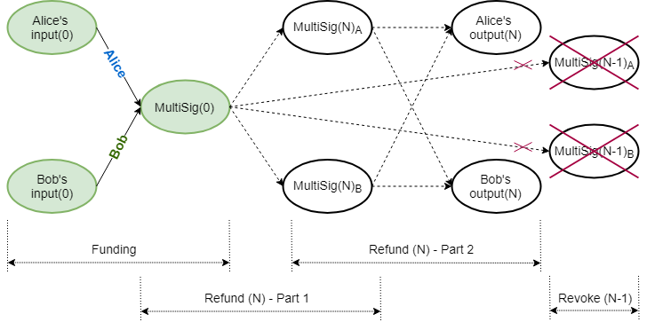
The initial funding transaction between Alice and Bob is depicted in (1). The lock height in the signature challenge corresponds to the current blockchain height. Input commitment values and blinding factors are identified by superscript $^{\prime\prime}$.
$$ \begin{aligned} -\text{Inputs}(0)+\text{MultiSig}(0)+\text{fee} &= \text{Excess}(0) \\ -\Big((v^{\prime\prime}_{0_{a}}H+k^{\prime\prime}_{0_{a}}G)+(v^{\prime\prime}_{0_{b}}H+k^{\prime\prime}_{0_{b}}G)\Big)+\Big(v_{0}H+(k_{0_{a}}+k_{0_{b}})G\Big)+fH &= \mathcal{X}_{0} \end{aligned} \tag{1} $$
Alice and Bob also need to set up their own respective refund transactions so they can be compensated should the channel never be used; this is performed via a refund procedure. A refund procedure (off‑chain) consists of four parts, whereby each user creates two transactions: one kept partially secret (discussed below) and the other shared. Each partially secret transaction creates a different intermediate multiparty UTXO, which is then used as input in two shared transactions, to spending the same set of outputs to each participant.
All consecutive refund procedures work in exactly the same way. In the equations that follow, double subscripts $_{AA}$, $_{AB}$, $_{BA}$ and $_{BB}$ have the following meaning: the first letter and the second letter indicate who controls the transaction and who created the value, respectively. Capitalized use of $R$ and $P$ denotes public nonce and public blinding factor respectively. The $N_{\text{th}}$ refund procedure is as follows:
Refund Procedure
Alice - Part 1

Alice and Bob set up Alice's intermediate MultiSig funding transaction (Figure 2), spending the original funding MultiSig UTXO. The lock height $h_{N}$ corresponds to the current blockchain height.
$$ \begin{aligned} -\text{MultiSig}(0)+\text{MultiSig}(N)_{A}+\text{fee} & =\text{Excess}(N)_{A1} \\ -\Big(v_{0}H+(k_{0_{a}}+k_{0_{b}})G\Big) + \Big((v_{0}-f)H+(\hat{k}_{N_{a}}+k_{N_{b}})G\Big) + fH &= \mathcal{X}_{N_{A1}} \end{aligned} \tag{2} $$
They collaborate to create $\text{MultiSig}(N)_{A}$, its Bulletproof range proof, the signature challenge and Bob's portion of the signature, $s_{N_{AB1}}$. Alice does not share the final kernel and thus keeps her part of the aggregated signature, $s_{N_{AA1}}$, hidden.
$$ \begin{aligned} \mathcal{X}_{N_{A1}} &= (-k_{0_{a}}+\hat{k}_{N_{a}})G+(-k_{0_{b}}+k_{N_{b}})G \\ &= P_{N_{AA1}}+P_{N_{AB1}} \end{aligned} \tag{3} $$
$$ \begin{aligned} \text{Challenge:}\quad\mathcal{H}(R_{N_{AA1}}+R_{N_{AB1}}\parallel P_{N_{AA1}}+P_{N_{AB1}}\parallel f\parallel h_{N}) \end{aligned} \tag{4} $$
$$ \begin{aligned} \text{Final signature tuple, kept secret:}\quad(s_{N_{AA1}}+s_{N_{AB1}},R_{N_{AA1}}+R_{N_{AB1}}) \end{aligned} \tag{5} $$
$$ \begin{aligned} \text{Kernel of this transaction:}\quad\mathcal{K}_{N_{AA1}} \end{aligned} \tag{6} $$
Bob - Part 1
Alice and Bob set up Bob's intermediate MultiSig funding transaction (Figure 2), also spending the original funding MultiSig UTXO. The lock height $h_{N}$ again corresponds to the current blockchain height.
$$ \begin{aligned} -\text{MultiSig}(0)+\text{MultiSig}(N)_{B}+\text{fee} & =\text{Excess}(N)_{B1} \\ -\Big(v_{0}H+(k_{0_{a}}+k_{0_{b}})G\Big) + \Big((v_{0}-f)H+(k_{N_{a}}+\hat{k}_{N_{b}})G\Big) + fH &= \mathcal{X}_{N_{B1}} \end{aligned} \tag{7} $$
They collaborate to create $\text{MultiSig}(N)_{A}$, its Bulletproof range proof, the signature challenge and Alice's portion of the signature. Bob does not share the final kernel and thus keeps his part of the aggregated signature hidden.
$$ \begin{aligned} \mathcal{X}_{N_{B1}} &= (-k_{0_{a}}+k_{N_{a}})G+(-k_{0_{b}}+\hat{k}_{N_{b}})G \\ &= P_{N_{BA1}}+P_{N_{BB1}} \end{aligned} \tag{8} $$
$$ \begin{aligned} \text{Challenge:}\quad\mathcal{H}(R_{N_{BA1}}+R_{N_{BB1}}\parallel P_{N_{BA1}}+P_{N_{BB1}}\parallel f\parallel h_{N}) \end{aligned} \tag{9} $$
$$ \begin{aligned} \text{Final signature tuple, kept secret:}\quad(s_{N_{BA1}}+s_{N_{BB1}},R_{N_{BA1}}+R_{N_{BB1}}) \end{aligned} \tag{10} $$
$$ \begin{aligned} \text{Kernel of this transaction:}\quad\mathcal{K}_{N_{BB1}} \end{aligned} \tag{11} $$
Alice - Part 2

Alice and Bob set up a refund transaction (Figure 3), which Alice controls, with the same relative time lock $h_{rel}$ to the intermediate funding transaction's kernel, $\mathcal{K}_{N_{AA1}}$. Output commitment values and blinding factors are identified by superscript $^{\prime}$.
$$ \begin{aligned} -\text{MultiSig}(N)_{A}+\text{Outputs}(N)+\text{fee} & =\text{Excess}(N)_{A2} \\ -\Big((v_{0}-f)H+(\hat{k}_{N_{a}}+k_{N_{b}})G\Big)+\Big((v_{N_{a}}^{\prime}H+k_{N_{a}}^{\prime}G)+(v_{N_{b}}^ {\prime}H+k_{N_{b}}^{\prime}G)\Big)+fH &=\mathcal{X}_{N_{A2}} \\ \end{aligned} \tag{12} $$
They collaborate to create the challenge and the aggregated signature. Because the final kernel $\mathcal{K}_{N_{AA1}}$ is kept secret, only its hash is shared. Alice shares this transaction's final kernel with Bob. The signature challenge is determined as follows:
$$ \begin{aligned} \mathcal{X}_{N_{A2}} &= (-\hat{k}_{N_{a}}+k_{N_{a}}^{\prime})G + (-k_{N_{b}}+k_{N_{b}}^{\prime})G \\ &= P_{N_{AA2}}+P_{N_{AB2}} \\ \end{aligned} \tag{13} $$
$$ \begin{aligned} \text{Challenge:}\quad\mathcal{H}(R_{N_{AA2}}+R_{N_{AB2}}\parallel P_{N_{AA2}}+P_{N_{AB2}}\parallel f \parallel\mathcal{H}(\mathcal{K}_{N_{AA1}})\parallel h_{rel}) \end{aligned} \tag{14} $$
Bob - Part 2
Alice and Bob set up a refund transaction (Figure 3), which Bob controls, with a relative time lock $h_{rel}$ to the intermediate funding transaction's kernel, $\mathcal{K}_{N_{BB1}}$. Output commitment values and blinding factors are identified by superscript $^{\prime}$.
$$ \begin{aligned} -\text{MultiSig}(N)_{B}+\text{Outputs}(N)+\text{fee} & =\text{Excess}(N)_{B2} \\ -\Big((v_{0}-f)H+(k_{N_{a}}+\hat{k}_{N_{b}})G\Big)+\Big((v_{N_{a}}^{\prime}H+k_{N_{a}}^{\prime}G)+(v_{N_{b}}^ {\prime}H+k_{N_{b}}^{\prime}G)\Big)+fH &=\mathcal{X}_{N_{B2}} \\ \end{aligned} \tag{15} $$
They collaborate to create the challenge and the aggregated signature. Because the final kernel $\mathcal{K}_{N_{BB1}}$ is kept secret, only its hash is shared. Bob shares this transaction's final kernel with Alice. The signature challenge is determined as follows:
$$ \begin{aligned} \mathcal{X}_{N_{B2}} &= (-k_{N_{a}}+k_{N_{a}}^{\prime})G + (-\hat{k}_{N_{b}}+k_{N_{b}}^{\prime})G \\ &= P_{N_{BA2}}+P_{N_{BB2}} \end{aligned} \tag{16} $$
$$ \begin{aligned} \text{Challenge:}\quad\mathcal{H}(R_{N_{BA2}}+R_{N_{BB2}}\parallel P_{N_{BA2}}+P_{N_{BB2}}\parallel f \parallel\mathcal{H}(\mathcal{K}_{N_{BB1}})\parallel h_{rel}) \end{aligned} \tag{17} $$
Revoke Previous Refund
Whenever the individual balances in the channel change, a new refund procedure is negotiated, revoking previous agreements (Figure 4).

Revoking refund transactions involves revealing blinding factor shares for the intermediate multiparty UTXOs, thereby nullifying their further use. After the four parts of the refund procedure have been concluded successfully, the previous round's blinding factor shares $\hat{k}_{(N-1)}$ are revealed to each other, in order to revoke the previous agreement.
Alice:
$$ \begin{aligned} \text{MultiSig}(N-1)_{A}:\quad\Big((v_{0}-f)H+(\hat{k}_{(N-1)_{a}}+k_{(N-1)_{b}})G\Big) & \quad & \lbrace\text{Alice's commitment}\rbrace \\ \hat{k}_{(N-1)_{a}} & \quad & \lbrace\text{Alice shares with Bob}\rbrace \\ \end{aligned} \tag{18} $$
Bob:
$$ \begin{aligned} \text{MultiSig}(N-1)_{B}:\quad\Big((v_{0}-f)H+(k_{(N-1)_{a}}+\hat{k}_{(N-1)_{b}})G\Big) & \quad & \lbrace\text{Bob's commitment}\rbrace \\ \hat{k}_{(N-1)_{b}} & \quad & \lbrace\text{Bob shares with Alice}\rbrace \end{aligned} \tag{19} $$
Note that although the kernels for transactions (2) and (10) were kept secret, when the Bulletproof range proofs for $\text{MultiSig}(N-1)_{A}$ and $\text{MultiSig}(N-1)_{B}$ were constructed, resultant values of those MultiSig Pedersen commitments were revealed to the counterparty. Each of them is thus able to verify the counterparty's blinding factor share by constructing the counterparty's MultiSig Pedersen commitment.
Alice verifies:
$$
\begin{aligned}
\Big((v_{0}-f)H+(k_{(N-1)_{a}}+\hat{k}_{(N-1)_{b}})G\Big) \overset{?}{=} C(v_{0}-f,\ k_{(N-1)_{a}}+
\hat{k}_{(N-1)_{b}})
\end{aligned}
\tag{20}
$$
Bob verifies:
$$ \begin{aligned} \Big((v_{0}-f)H+(\hat{k}_{(N-1)_{a}}+k_{(N-1)_{b}})G\Big) \overset{?}{=} C(v_{0}-f,\ \hat{k}_{(N-1)_{a}}+ k_{(N-1)_{b}}) \end{aligned} \tag{21} $$
Although each party will now have its counterparty's blinding factor share in the counterparty's intermediate multiparty UTXO, they will still not be able to spend it, because the corresponding transaction kernel is still kept secret by the counterparty. The previous round's corresponding transaction (2) or (10), with a fully signed transaction kernel, was never published on the blockchain.
Punishment Transaction
If a counterparty decides to broadcast a revoked set of refund transactions, and if the honest party is actively monitoring the blockchain and able to detect the attempted foul play, a punishment transaction can immediately be constructed before the relative time lock $h_{rel}$ expires. Whenever any of the counterparty's intermediate multiparty UTXOs, $\text{MultiSig}(N-m)\ \text{for}\ 0<m<N$, becomes available in the blockchain, the honest party can spend all the funds to its own output, because it knows the total blinding factor and the counterparty does not.
Channel Closure
Whenever the parties agree to a channel closure, the original on‑chain multiparty UTXO, $\text{MultiSig}(0)$, is spent to their respective outputs in a collaborative transaction. In the event of a single party deciding to close the channel unilaterally for whatever reason, its latest refund transaction is broadcast, effectively closing the channel. In either case, the parties have to wait for the relative time lock $h_{rel}$ to expire before being able to claim their funds.
Opening a channel requires one collaborative funding transaction on the blockchain. Closing a channel involves each party broadcasting its respective portion of the refund transaction to the blockchain, or collaborating to broadcast a single settlement transaction. A round-trip open channel, multiple off‑chain spending and close channel thus involves, at most, three on‑chain transactions.
Conclusions, Observations and Recommendations
-
MultiSig
The Laser Beam MultiSig corresponds to a Mimblewimble $2-of-2$ Multiparty Bulletproof UTXO, as described here. There is more than one method for creating the MultiSig's associated Bulletproof range proof, and utilizing the Bulletproofs MPC Protocol will enable wallet reconstruction. It may also make information sharing, while constructing the Bulletproof range proof, more secure.
-
Linked Transactions
Part 2 of the refund procedure requires a kernel with a relative time lock to the kernel of its corresponding part 1 refund procedure, when those kernels are not yet available in the base layer, as well as a different, non-similar, signature challenge. Metadata about the linked transaction kernel and non-similar signature challenge creation must therefore be embedded within part 2 refund transaction kernels.
-
Refund Procedure
In the event that for round $N$, Alice or Bob decides to stop negotiations after their respective part 1 has been concluded and that transaction has been broadcast, the result would be that funding UTXO, $\text{MultiSig}(0)$, would be replaced by the respective $\text{MultiSig}(N)$. The channel will still be open. However, it also cannot be spent unilaterally, as the blinding factor is shared. Any new updates of the channel will then need to be based on $\text{MultiSig}(N)$ as the funding UTXO. Note that this cannot happen if the counterparties construct transactions for part 1 and part 2, conclude part 2 by signing it, and only then sign part 1.
In the event that for round $N$, Alice or Bob decides to stop negotiations after their respective part 1 and part 2 have been concluded and those transactions have been broadcast, it will effectively be a channel closure.
-
Revoke Attack Vector
When revoking the previous refund $(N-1)$, Alice can get hold of Bob's blinding factor share $\hat{k}_{(N-1)_{b}}$ (19), and after verifying that it is correct (20), refuse to give up her blinding factor share. This will leave Alice with the ability to broadcast any of refund transactions $(N-1)$ and $N$, without fear of Bob broadcasting a punishment transaction. Bob, on the other hand, will only be able to broadcast refund transaction $N$.
Appendices
Appendix A: Notation Used
-
Let $p$ be a large prime number, $\mathbb{Z}_{p}$ denote the ring of integers $\mathrm{mod} \text{ } p$, and $\mathbb{F}_{p}$ be the group of elliptic curve points.
-
Let $G\in\mathbb{F}_{p}$ be a random generator point (base point) and let $H\in\mathbb{F}_{p}$ be specially chosen so that the value $x_{H}$ to satisfy $H=x_{H}G$ cannot be found, except if the Elliptic Curve Discrete Logarithm Problem (ECDLP) is solved.
-
Let commitment to value $v\in\mathbb{Z}_{p}$ be determined by calculating $C(v,k)=(vH+kG)$, which is called the Elliptic Curve Pedersen Commitment (Pedersen Commitment), with $k\in\mathbb{Z}_{p}$ (the blinding factor) a random value.
-
Let scalar multiplication be depicted by $\cdot$, e.g. $e\cdot(vH+kG)=e\cdot vH+e\cdot kG$.
References
[1] J. A. Odendaal, "Layer 2 Scaling Survey - Tari Labs University" [online]. Available: https://tlu.tarilabs.com/scaling/layer2scaling-landscape/layer2scaling-survey.html. Date accessed: 2019‑10‑06.
[2] J. Poon, T. Dryja (2016). "The Bitcoin Lightning Network: Scalable Off-Chain Instant Payments" [online]." Available: http://lightning.network/lightning-network-paper.pdf. Date accessed: 2019‑07‑04.
[3] "GitHub: lightningnetwork/lightning-rfc: Lightning Network Specifications" [online]. Available: https://github.com/lightningnetwork/lightning-rfc. Date accessed: 2019‑07‑04.
[4] X. Wang, "What is the situation of Litecoin's Lightning Network now?" [online]. Available: https://coinut.com/blog/whats-the-situation-of-litecoins-lightning-network-now. Date accessed: 2019‑09‑11.
[5] The Beam Team, "GitHub: Lightning Network - BeamMW/beam Wiki" [online]. Available: https://github.com/BeamMW/beam/wiki/Lightning-Network. Date accessed: 2019‑07‑05.
[6] F. Jahr, "Beam - Lightning Network Position Paper. (v 1.0)" [online]. Available: https://docs.beam.mw/Beam_lightning_network_position_paper.pdf. Date accessed: 2019‑07‑04.
[7] F. Jahr, "GitHub: fjahr/lightning-mw, Lightning Network Specifications" [online]. Available: https://github.com/fjahr/lightning-mw. Date accessed: 2019‑07‑04.
[8] The Beam Team, "GitHub: beam/node/laser_beam_demo at master - BeamMW/beam" [online]. Available: https://github.com/BeamMW/beam/tree/master/node/laser_beam_demo. Date accessed: 2019‑07‑05.
[9] The Beam Team, "GitHub: beam/ecc_bulletproof.cpp at mainnet - BeamMW/beam" [online]. Available: https://github.com/BeamMW/beam/blob/mainnet/core/ecc_bulletproof.cpp. Date accessed: 2019‑07‑05.
[10] D. Smith, N. Kohen, and C. Stewart, “Lightning 101 for Exchanges” [online]. Available: https://suredbits.com/lightning-101-for-exchanges-overview. Date accessed: 2019‑11‑06.
Contributors
- https://github.com/hansieodendaal
- https://github.com/anselld
- https://github.com/SWvheerden
- https://github.com/Empiech007
- https://github.com/mikethetike
Merged Mining
Purpose
The purpose of merged mining is to allow the mining of more than one cryptocurrency without necessitating additional Proof-of-Work effort (PoW) [1].
Definitions
-
From BitcoinWiki: Merged mining is the act of using work done on another block chain (the Parent) on one or more Auxiliary block chains and to accept it as valid on its own chain, using Auxiliary Proof-of-Work (AuxPoW), which is the relationship between two block chains for one to trust the other's work as their own. The Parent block chain does not need to be aware of the AuxPoW logic as blocks submitted to it are still valid blocks [2].
-
From CryptoCompare: Merged mining is the process of allowing two different crypto currencies based on the same algorithm to be mined simultaneously. This allows low hash powered crypto currencies to increase the hashing power behind their network by bootstrapping onto more popular crypto currencies [3].
References
[1] "Merged Mining" [online]. Conference Paper. Available: https://www.researchgate.net/publication/319647721_Merged_Mining_Curse_or_Cure. Date accessed: 2019‑06‑10.
[2] BitcoinWiki: "Merged Mining Specification" [online]. Available: https://en.bitcoin.it/wiki/Merged_mining_specification. Date accessed: 2019‑06‑10.
[3] CryptoCompare: "What is merged mining – Bitcoin & Namecoin – Litecoin & Dogecoin?" [online]. Available: https://www.cryptocompare.com/mining/guides/what-is-merged-mining-bitcoin-namecoin-litecoin-dogecoin/. Date accessed: 2019‑06‑10.
Merged Mining Introduction
- What is Merged Mining?
- Merged Mining with Multiple Auxiliary Chains
- Merged Mining - Interesting Facts and Case Studies
- Attack Vectors
- References
- Contributors
What is Merged Mining?
Merged mining is the act of using work done on another blockchain (the Parent) on one or more than one Auxiliary blockchain and to accept it as valid on its own chain, using Auxiliary Proof-of-Work (AuxPoW), which is the relationship between two blockchains for one to trust the other's work as their own. The Parent blockchain does not need to be aware of the AuxPoW logic, as blocks submitted to it are still valid blocks [1].
As an example, the structure of merged mined blocks in Namecoin and Bitcoin is shown here [25]:
A transaction set is assembled for both blockchains. The hash of the AuxPoW block header is then inserted in the "free" bytes region (coinbase field) of the coinbase transaction and submitted to the Parent blockchain's Proof-of-Work (PoW). If the merge miner solves the block at the difficulty level of either blockchain or both blockchains, the respective block(s) are reassembled with the completed PoW and submitted to the correct blockchain. In the case of the Auxiliary blockchain, the Parent's block hash, Merkle tree branch and coinbase transaction are inserted in the Auxiliary block's AuxPoW header. This is to prove that enough work that meets the difficulty level of the Auxiliary blockchain was done on the Parent blockchain ([1], [2], [25]).
The propagation of Parent and Auxiliary blocks is totally independent and only governed by each chain's difficulty level. As an example, the following diagram shows how this can play out in practice with Namecoin and Bitcoin when the Parent difficulty (DBTC) is more than the Auxiliary difficulty (DNMC). Note that BTC block 2' did not become part of the Parent blockchain propagation.

Merged Mining with Multiple Auxiliary Chains
A miner can use a single Parent to perform merged mining on multiple Auxiliary blockchains. The Merkle tree root of a Merkle tree that contains the block hashes of the Auxiliary blocks as leaves must then be inserted in the Parent's coinbase field as shown in the following diagram. To prevent double spending attacks, each Auxiliary blockchain must specify a unique ID that can be used to derive the leaf of the Merkle tree where the respective block hash must be located [25].

Merged Mining - Interesting Facts and Case Studies
Namecoin (#307) with Bitcoin (#1)
- Namecoin, the first fork of Bitcoin, introduced merged mining with Bitcoin [1] from block 19,200 onwards [3]. At the time of writing (May 2018), the block height of Namecoin was greater than 400,500 [4].
- Over the five-day period from 23 May 2018 to 27 May 2018, only 226 out of 752 blocks posted transaction values over and above the block reward of 25 NMC, with an average transaction value of 159.231 NMC including the block reward. [4]
- Slush Pool merged mining Namecoin with Bitcoin rewards all miners with BTC equivalent to NMC via an external exchange service [5].
- P2pool, Multipool, Slush Pool, Eligius and F2pool are cited as top Namecoin merged mining pools [6].
| @ 2018-05-30 | Bitcoin [16] | Namecoin [16] | Ratio |
|---|---|---|---|
| Block time target (s) | 600 | 600 | 100.00% |
| Hash rate (Ehash/s) | 31.705 | 21.814 | 68.80% |
| Blocks count | 525,064 | 400,794 | 76.33% |
Dogecoin (#37) with Litecoin (#6)
- Dogecoin introduced merged mining with Litecoin [8] from block 371,337 onwards [9]. At the time of writing (May 2018), the block height of Dogecoin was greater than 2,240,000 [10].
- Many in the Dogecoin user community believe merged mining with Litecoin saved Dogecoin from a 51% attack [8].
| @ 2018-05-30 | Litecoin [16] | Dogecoin [16] | Ratio |
|---|---|---|---|
| Block time target (s) | 150 | 60 | 40.00% |
| Hash rate (Thash/s) | 311.188 | 235.552 | 75.69% |
| Blocks count | 1,430,517 | 2,241,120 | 156.67% |
Huntercoin (#779) with Bitcoin (#1) or Litecoin (#6)
- Huntercoin was released as a live experimental test to see how blockchain technology could handle full-on game worlds [22].
- Huntercoin was originally designed to be supported for only one year, but development and support will continue [22].
- Players are awarded coins for gaming, thus the world's first human mineable cryptocurrency.
- Coin distribution: 10 coins per block, nine for the game world and one for the miners [22].
| @ 2018-06-01 | Huntercoin |
|---|---|
| Block time target (s) | 120 |
| blockchain size (GB) | 17 |
| Pruned blockchain size (GB) | 0.5 |
| Blocks count | 2,291,060 |
| PoW algorithm (for merged mining) | SHA256, Scrypt |
Myriad (#510) with Bitcoin (#1) or Litecoin (#6)
- Myriad is the first currency to support five PoW algorithms and claims its multi-PoW algorithm approach offers exceptional 51% resistance [23].
- Myriad introduced merged mining from block 1,402,791 onwards [24].
| @ 2018-06-01 | Myriad |
|---|---|
| Block time target (s) | 60 |
| blockchain size (GB) | 2.095 |
| Blocks count | 2,442,829 |
| PoW algorithm (for merged mining) | SHA256d, Scrypt |
| PoW algorithm (others) | Myr-Groestl, Skein, Yescrypt |
-
Some solved multi-PoW block examples follow:
- 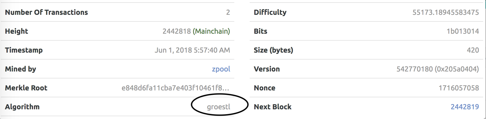

Monero (#12)/DigitalNote (#166) + FantomCoin (#1068)
- FantamCoin was the first CryptoNote-based coin to develop merged mining with Monero, but was abandoned until DigitalNote developers became interested in merged mining with Monero and revived FantamCoin in October 2016 ([17], [18], [19]).
FantamCoin Release notes 2.0.0
- Fantomcoin 2.0 by XDN-project, major FCN update to the latest
cryptonotefoundation codebase
- New FCN+XMR merged merged mining
- Default block size - 100Kb
DigitalNote Release notes 4.0.0-beta
- EmPoWering XDN network security with merged mining with any CryptoNote
cryptocurrency
- Second step to the PoA with the new type of PoW merged mining blocks
- DigitalNote and FantomCoin merged mining with Monero are now stuck with the recent CryptoNight-based Monero forks such as Monero Classic and Monero Original after Monero's recent hard fork to CryptoNight v7. (Refer to Attack Vectors.)
| @ 2018-05-31 | Monero [16] | DigitalNote [16] | Ratio |
|---|---|---|---|
| Block time target (s) | 120 | 240 | 200.00% |
| Hash rate (Mhash/s) | 410.804 | 13.86 | 3.37% |
| Blocks count | 1,583,869 | 660,075 | 41.67% |
| @ 2018-05-31 | Monero [16] | FantomCoin [16] | Ratio |
|---|---|---|---|
| Block time target (s) | 120 | 60 | 50.00% |
| Hash rate (Mhash/s) | 410.804 | 19.29 | 4.70% |
| Blocks count | 1,583,869 | 2,126,079 | 134.23% |
Some Statistics
Merge-mined blocks in some cryptocurrencies on 18 June 2017 [24]:

Observations
- The Auxiliary blockchain's target block times can be smaller than, equal to or larger than the Parent blockchain.
- The Auxiliary blockchain's hash rate is generally smaller than, but of the same order of magnitude as that of, the Parent blockchain.
- A multi-PoW algorithm approach may further enhance 51% resistance.
Attack Vectors
51% Attacks
-
51% attacks are real and relevant today. Bitcoin Gold (rank #28 @ 2018‑05‑29) and Verge (rank #33 @ 2018‑05‑29) suffered recent attacks with double spend transactions following ([11], [12]).
-
In a conservative analysis, successful attacks on PoW cryptocurrencies are more likely when dishonest entities control more than 25% of the total mining power [24].
-
Tari tokens are envisaged to be merged mined with Monero [13]. The Monero blockchain security is therefore important to the Tari blockchain.
-
Monero recently (6 April 2018) introduced a hard fork with upgraded PoW algorithm CryptoNight v7 at block height 1,546,000 to maintain its Application Specific Integrated Circuit (ASIC) resistance and hence guard against 51% attacks. The Monero team proposes changes to their PoW every scheduled fork (i.e. every six months) ([14], [15]).
-
An interesting question arises regarding what needs to happen to the Tari blockchain if the Monero blockchain is hard forked. Since the CryptoNight v7 hard fork, the network hash rate for Monero hovers around approximately 500MH/s, whereas in the two months immediately prior it was approximately 1,000MH/s [20](https://chainradar.com/xmr/chart). Thus 50% of the hash power can be ascribed to ASICS and botnet miners.
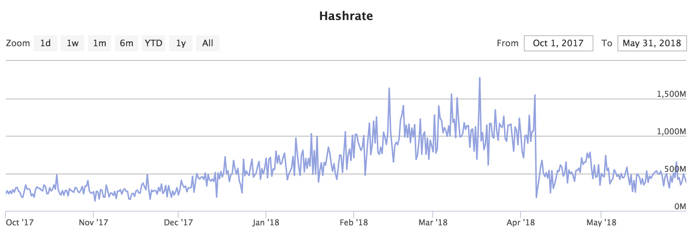
NiceHash statistics for CryptoNight v7 [21] show a lag of two days for approximately 100,600 miners to get up to speed with providing the new hashing power after the Monero hard fork.
The Tari blockchain will have to fork together with or just after a scheduled Monero fork. The Tari blockchain will be vulnerable to ASIC miners until it has been forked.
Double Proof
- A miner could cheat the PoW system by putting more than one Auxiliary block header into one Parent block [7].
- Multiple Auxiliary blocks could be competing for the same PoW, and could subject your Auxiliary blockchain to nothing-at-stake attacks if the chain is forked, maliciously or by accident, with consequent attempts to reverse transactions ([7], [26]).
- More than one Auxiliary blockchain will be merge-mined with Monero.
Analysis of Mining Power Centralization Issues
With reference to [24] and [25]:
- In Namecoin, F2Pool reached and maintained a majority of the mining power for prolonged periods.
- Litecoin has experienced slight centralization since mid-2014, caused by Clevermining and F2Pool, among others.
- In Dogecoin, F2Pool was responsible for generating more than 33% of the blocks per day for significant periods, even exceeding the 50% threshold around the end of 2016.
- Huntercoin was instantly dominated by F2Pool and remained in this state until mid-2016.
- Myriadcoin appears to have experienced only a moderate impact. Multi-merge-mined blockchains allow for more than one parent cryptocurrency and have a greater chance of acquiring a higher difficulty per PoW algorithm than the respective parent blockchain.
- Distribution of overall percentage of days below or above the centralization indicator thresholds on 18 June 2017 was as follows:

Introduction of New Attack Vectors
With reference to [24] and [25]:
- Miners can generate blocks for the merge-mined child blockchains at almost no additional cost, enabling attacks without risking financial losses.
- Merged mining as an attack vector works both ways, as parent cryptocurrencies cannot easily prevent being merge-mined by auxiliary blockchains.
- Merged mining can increase the hash rate of auxiliary blockchains, but it is not conclusively successful as a bootstrapping technique.
- Empirical evidence suggests that only a small number of mining pools are involved in merged mining, and they enjoy block shares beyond the desired security and decentralization goals.
References
[1] "Merged Mining Specification" [online). Available: https://en.bitcoin.it/wiki/Merged_mining_specification. Date accessed: 2018‑05‑28.
[2] "How does Merged Mining Work?" [Online.] Available: https://bitcoin.stackexchange.com/questions/273/how-does-merged-mining-work. Date accessed: 2018‑05‑28.
[3] "Merged-Mining.mediawiki" [online]. Available: https://github.com/namecoin/wiki/blob/master/Merged-Mining.mediawiki. Date accessed: 2018‑05‑28.
[4] "Bchain.info - Blockchain Explorer (NMC)" [online]. Available: https://bchain.info/NMC. Date accessed: 2018‑05‑28.
[5] "SlushPool Merged Mining" [online]. Available: https://slushpool.com/help/first-aid/faq-merged-mining. Date accessed: 2018‑05‑28.
[6] "5 Best Namecoin Mining Pools of 2018 (Comparison)" [online]. Available: https://www.prooworld.com/namecoin/best-namecoin-mining-pools. Date accessed: 2018‑05‑28.
[7] "Alternative Chain" [online]. Available: https://en.bitcoin.it/wiki/Alternative_chain#Protecting_against_double_proof. Date accessed: 2018‑05‑28.
[8] "Merged Mining AMA/FAQ" [online]. Available: https://www.reddit.com/r/dogecoin/comments/22niq9/merged_mining_amafaq. Date accessed: 2018‑05‑29.
[9] "The Forkening is Happening at ~9:00AM EST" [online]. Available: https://www.reddit.com/r/dogecoin/comments/2fyxg1/the_forkening_is_happening_at_900am_est_a_couple. Date accessed: 2018‑05‑29.
[10] "Dogecoin Blockchain Explorer" [online]. Available: https://dogechain.info. Date accessed: 2018‑05‑29.
[11] "Bitcoin Gold Hit by Double Spend Attack, Exchanges Lose Millions" [online]. Available: https://www.ccn.com/bitcoin-gold-hit-by-double-spend-attack-exchanges-lose-millions. Date accessed: 2018‑05‑29.
[12] "Privacy Coin Verge Succumbs to 51% Attack" [Again]. [Online.] Available: https://www.ccn.com/privacy-coin-verge-succumbs-to-51-attack-again. Date accessed: 2018‑05‑29.
[13] "Tari Official Website" [online]. Available: https://www.tari.com. Date accessed: 2018‑05‑29.
[14] "Monero Hard Forks to Maintain ASIC Resistance, but ‘Classic’ Hopes to Spoil the Party" [online]. Available: https://www.ccn.com/monero-hard-forks-to-maintain-asic-resistance-but-classic-hopes-to-spoil-the-party. Date accessed: 2018‑05‑29.
[15] "PoW Change and Key Reuse" [online]. Available: https://getmonero.org/2018/02/11/pow-change-and-key-reuse.html. Date accessed: 2018‑05‑29.
[16] "BitInfoCharts" [online]. Available: https://bitinfocharts.com. Date accessed: 2018‑05‑30.
[17] "Merged Mining with Monero" [online]. Available: https://minergate.com/blog/merged-mining-with-monero. Date accessed: 2018‑05‑30.
[18] "ANN DigitalNote |XDN| - ICCO Announce - NEWS" [online]. Available: https://bitcointalk.org/index.php?topic=1082745.msg16615346#msg16615346. Date accessed: 2018‑05‑31.
[19] "DigitalNote xdn-project" [online]. Available: https://github.com/xdn-project. Date accessed: 2018‑05‑31.
[20] "Monero Charts" [online]. Available: https://chainradar.com/xmr/chart. Date accessed: 2018‑05‑31.
[21] "Nicehash Statistics for CryptoNight v7" [online]. Available: https://www.nicehash.com/algorithm/cryptonightv7. Date accessed: 2018‑05‑31.
[22] "Huntercoin: A Blockchain based Game World" [online]. Available: http://huntercoin.org. Date accessed: 2018‑06‑01.
[23] "Myriad: A Coin for Everyone" [online]. Available: http://myriadcoin.org. Date accessed: 2018‑06‑01.
[24] "Merged Mining: Curse or Cure?" [Online.] Available: https://eprint.iacr.org/2017/791.pdf. Date accessed: 2019‑02‑12.
[25] Merged Mining: Analysis of Effects and Implications [online]. Available: http://repositum.tuwien.ac.at/obvutwhs/download/pdf/2315652. Date accessed: 2019‑02‑12.
[26] "Problems - Consensus - 8. Proof of Stake" [online]. Available: https://github.com/ethereum/wiki/wiki/Problems. Date accessed: 2018‑06‑05.
Contributors
Digital Assets
Purpose
"All digital assets provide value, but not all digital assets are valued equally" [1].
Definitions
Digital Assets
-
From Simplicable: A digital asset is something that has value and can be owned but has no physical presence [2].
-
From The Digital Beyond: A digital asset is content that is stored in digital form or an online account, owned by an individual. The associated digital data are classified as intangible, personal property, as long as they stay digital, otherwise they quickly become tangible personal property [3].
-
From Wikipedia: A digital asset, in essence, is anything that exists in a binary format and comes with the right to use. Data that do not possess that right are not considered assets. Digital assets come in many forms and may be stored on many types of digital appliances which are, or will be in existence once technology progresses to accommodate for the conception of new modalities which would be able to carry digital assets; notwithstanding the proprietorship of the physical device onto which the digital asset is located [4].
Non-fungible Tokens
-
From Wikipedia: A non-fungible token (NFT) is a special type of cryptographic token which represents something unique; non-fungible tokens are thus not interchangeable. This is in contrast to cryptocurrencies like Bitcoin, and many network or utility tokens that are fungible in nature. NFTs are used to create verifiable digital scarcity, for example in several specific applications that require unique digital items like crypto-collectibles and crypto-gaming [5].
-
From BTC Manager: Non-fungible tokens (NFTs) are blockchain tokens that are designed to be distinguishable from each other. Using unique metadata, avatars, individual token IDs, and custody chains, NFTs are created to ensure that no two NFT tokens are identical. This is because they exist to store information rather than value, unlike their fungible counterparts [6].
References
[1] "What Exactly is a Digital Asset & How to Get the Most Value from Them?" [Online.] Available: https://merlinone.com/what-is-a-digital-asset/. Date accessed: 2019‑06‑10.
[2] "11 Examples of Digital Assets" [online]. Available: https://simplicable.com/new/digital-asset. Date accessed: 2019‑06‑10.
[3] J. Romano, "A Working Definition of Digital Assets" [online]. The Digital Beyond. Available: http://www.thedigitalbeyond.com/2011/09/a-working-definition-of-digital-assets/. Date accessed: 2019‑06‑10.
[4] Wikipedia: "Digital Asset" [online]. Available: https://en.wikipedia.org/wiki/Digital_asset. Date accessed: 2019‑06‑10.
[5] Wikipedia: "Non-fungible Token" [online]. Available: https://en.wikipedia.org/wiki/Non-fungible_token. Date accessed: 2019‑06‑10.
[6] BTC Manager: "Non-fungible Tokens: What Are They?" [Online.] Available: https://btcmanager.com/non-fungible-tokens/. Date accessed: 2019‑06‑10.
Application of Howey to Blockchain Network Token Sales
- Introduction
- What is a Security?
- What is an Investment Contract (i.e. Howey Test)?
- Fourth Prong of Howey Test - Efforts of Others
- Decentralization, Consumptive Purpose and Priming Purchasers' Expectations
- Conclusion
- Footnotes
- References
- Contributors
Introduction
Many blockchain networks use, or intend to use, cryptographic tokens ("tokens" or "digital assets") for various purposes. These purposes include an incentive for network participants to contribute computing power to the network; or to gain access to certain goods, services or other network functionality. Some promoters of such a network sell tokens, or the right to receive tokens once the network has launched. They then use the sales proceeds to finance development and maintenance of the networks.
The U.S. Securities and Exchange Commission (SEC) has determined that many of the token offerings and sales over the past few years have been in violation of federal securities laws. In some cases, the SEC has taken action against the promoters of the offerings.
Refer to the following Orders under the Order Instituting Cease-and-Desist Proceedings Pursuant to [1, Section 8A]:
- Making Findings, and Imposing a Cease-and-Desist Order against Munchee Inc. (the Munchee Order);
- Making Findings, and Imposing Penalties and a Cease-and-Desist Order against CarrierEQ, Inc., D/B/A/ Airfox (the Airfox Order);
- Making Findings, and Imposing Penalties and a Cease-and-Desist Order against Paragon Coin, Inc. (the Paragon Order); and
- Making Findings, and Imposing a Cease-and-Desist Order against GladiusNetwork LLC (the Gladius Order).
In each case, the SEC's decision to take action has been underpinned by its determination that the digital assets that were offered and sold were securities pursuant to Section 2(a)(1) of the Securities Act of 1933 - the "Securities Act" or "Act" [1]. Under [1, Section 5], it is generally unlawful for any person, directly or indirectly, to offer or sell a security without complying with the registration requirement of Section 5, unless the securities offering qualifies for an exemption from registration.
The sanctions for a violation of [1, Section 5] can be significant. They include a preliminary and permanent injunction; rescission; disgorgement; prejudgment interest; and civil money penalties. It is important that those seeking to promote token offerings and sales do so only after ensuring that the tokens to be sold are not securities under [1], or that the offering, if it involves securities, complies with [1, Section 5], or otherwise qualifies for an exemption from registration thereunder.
While the Securities Act [1]; relevant case law and administrative proceedings; as well as guidance and statements of the SEC and its officials shed much light on many of the considerations involved in an analysis of whether a given digital asset is a security, the facts and circumstances relating to each token, token offering and sale are typically quite unique. Many who seek to undertake token offerings and sales struggle to achieve clarity regarding whether such offerings and sales must be registered under [1], or have to fit within an exemption from the Act's registration requirements. As a result, there is significant regulatory uncertainty surrounding the offering and sale of tokens.
The Commission recognizes the need for more guidance in this area and continues to assist those seeking to achieve a greater understanding of whether the U.S. federal securities laws apply to the offer or sale of a particular digital asset. This report:
-
Reviews [2] (the "Framework", which was recently published by the SEC's Strategic Hub for Innovation and Financial Technology, along with previous statements by William Hinman, the Director of the SEC's Division of Corporation Finance. Note: "The Framework" represents the views of SEC Staff. It is not a rule, regulation or statement of the SEC, and it is not binding on the Divisions of the SEC or the SEC itself.
-
Explains how [2] is indicative of the SEC's approach to applying the investment contract test laid out in [3] to digital assets. The SEC adopted this test, commonly referred to as the Howey test [4], and has applied the test in subsequent actions involving digital assets.f1 Note: [3, Section 21(a)] authorizes the SEC to investigate violations of the federal securities laws and, in its discretion, to "publish information concerning any such violations". The Report does not constitute an adjudication of any fact or issue, nor does it make any findings of violations by any individual or entity.
In particular, this report examines some of the SEC Staff's statements relating to the fourth prong of the Howey test, i.e. the "efforts of others", and discusses factors for promoters of token offerings to consider when assessing whether a token purchaser may have a reasonable expectation of earning profits from the significant efforts of others. It should be noted that this report is in no way intended to constitute or be relied upon as legal advice, or to substitute for obtaining competent legal advice from an experienced attorney.
What is a Security?
Section 2(a)(1) of the Securities Act [1] defines a security as follows:
The term "security" means any note, stock, treasury stock, security future, security-based swap, bond, debenture, evidence of indebtedness, certificate of interest or participation in any profit-sharing agreement, collateral-trust certificate, preorganization certificate or subscription, transferable share, investment contract, voting-trust certificate, certificate of deposit for a security, fractional undivided interest in oil, gas, or other mineral rights, any put, call, straddle, option, or privilege on any security, certificate of deposit, or group or index of securities (including any interest therein or based on the value thereof), or any put, call, straddle, option, or privilege entered into on a national securities exchange relating to foreign currency, or, in general, any interest or instrument commonly known as a "security", or any certificate of interest or participation in, temporary or interim certificate for, receipt for, guarantee of, or warrant or right to subscribe to or purchase, any of the foregoing.
While blockchain network tokens (as well as a wide variety of other instruments) are not explicitly included in the definition of "security" under the Act, courts have abstracted the common elements of an "investment contract", which is included in the definition of "security" under Section 2(a)(1) (and Section 3(a)(10) of the Exchange Act of 1934, which is contained in [3]), to establish a "flexible rather than a static principle, one that is capable of adaptation to meet the countless and variable schemes devised by those who seek the use of the money of others on the promise of profits" [3, paragraph 299].
Accordingly, a determination of whether an instrument not specifically enumerated under Section 2(a)(1) of the Act may be deemed to be a security that implicates the federal securities laws must include an analysis of whether it is an investment contract under Howey.
What is an Investment Contract (i.e. Howey Test)?
Howey (and its progeny) established the framework of a four-part test to determine whether an instrument is an investment contract and therefore a security subject to the U.S. federal securities laws. Howey provides that an investment contract exists if there is:
- an investment of money;
- into a common enterprise;
- with a reasonable expectation of profits;
- derived from the entrepreneurial or managerial efforts of others.
For an instrument to be an investment contract, each element of the Howey test must be met. If any element of the test is not met, the instrument is not an investment contract.
Fourth Prong of Howey Test - Efforts of Others
While the "efforts of others" prong of the Howey test is, at some level, no more important in an application of Howey than any of the other prongs, it is frequently the prong on which the most uncertainty hangs. The "efforts of others" is often the focus when it comes to public blockchain networks. This is because the decentralization of control that many such projects seek to foster prompts the following question: do the kind and degree of the existing decentralization mean that any expectation of profits token purchasers may have does not come from the efforts of others for purposes of Howey? The determination that token purchasers reasonably expected profits to come from the efforts of a centralized (or at least coordinated) person or group has been central in the SEC's findings that the tokens were securities in each of the recent SEC enforcement actions relating to token offerings and sales.f1
Decentralization, Consumptive Purpose and Priming Purchasers' Expectations
Background
On 14 June 2018, Hinman delivered a speechf2 addressing whether "a digital asset that was originally offered in a securities offering [can] ever later be sold in a manner that does not constitute an offering of a security", and noted two cases where he believed this was indeed possible:
-
"where there is no longer any central enterprise being invested in", e.g. purchases of the digital assets related to a decentralized enterprise or network; and
-
"where the digital asset is sold only to be used to purchase a good or service available through the network on which it was created", e.g. purchases of digital assets for a consumptive purpose.
He posed a set of six questions directly related to the application of the "efforts of others" prong of the Howey test to offerings and sales of digital assets:
Is there a person or group that has sponsored or promoted the creation and sale of the digital asset, the efforts of whom play a significant role in the development and maintenance of the asset and its potential increase in value?
Has this person or group retained a stake or other interest in the digital asset such that it would be motivated to expend efforts to cause an increase in value in the digital asset? Would purchasers reasonably believe such efforts will be undertaken and may result in a return on their investment in the digital asset?
Has the promoter raised an amount of funds in excess of what may be needed to establish a functional network, and, if so, has it indicated how those funds may be used to support the value of the tokens or to increase the value of the enterprise? Does the promoter continue to expend funds from proceeds or operations to enhance the functionality and/or value of the system within which the tokens operate?
Are purchasers 'investing', that is seeking a return? In that regard, is the instrument marketed and sold to the general public instead of to potential users of the network for a price that reasonably correlates with the market value of the good or service in the network?
Does application of the Securities Act protections make sense? Is there a person or entity others are relying on that plays a key role in the profit-making of the enterprise such that disclosure of their activities and plans would be important to investors? Do informational asymmetries exist between the promoters and potential purchasers/investors in the digital asset?
Do persons or entities other than the promoter exercise governance rights or meaningful influence?
(He also posed a separate set of seven questions exploring "contractual or technical ways to structure digital assets so they function more like a consumer item and less like a security").
Hinman noted that these questions are useful to consider when assessing the facts and circumstances surrounding offerings and sales of digital assets to determine "whether a third party - be it a person, entity or coordinated group of actors - drives the expectation of a return". If such a party does drive an expectation of a return on a purchased digital asset, i.e. priming purchasers' expectations, there is a greater likelihood that the asset will be deemed to be an investment contract and therefore a security.
In the Framework [2], the SEC Staff similarly focuses attention on whether a purchaser of a digital asset has a reasonable expectation of profits derived from the efforts of others. These three themes: decentralization, consumptive purpose and priming purchasers' expectations, provide useful context for much of its discussion. The following offers for consideration select implications of the Framework's [2] guidance and Hinman's speech, as industry participants seek a greater understanding of whether or not a digital asset is a security.
Decentralization
The Framework [2] reinforces that the degree and nature of a promoter's involvement will have a bearing on the Howey analysis. The facts and circumstances relating to a promoter are key. If a promoter does not play a significant role in the "development, improvement (or enhancement), operation, or promotion of the network" [2, Section 3] underlying the tokens, it cuts against finding the "efforts of others" prong has been met. A promoter may seek to play a more limited role in these areas. Or, along similar lines, influence over the "essential tasks and responsibilities" of the network may be widely dispersed, i.e. decentralized, among many unaffiliated network stakeholders so that there is no identifiable "person or group" that continues to play a significant role, especially as compared to the role that the dispersed stakeholders play [2, Section 4]f3.
The SEC has placed particular attention on promoter efforts to impact a token's supply and/or demand and has also focused on a promoter's efforts to use the proceeds from a token offering to create an ecosystem that will drive demand for the tokens once the network is functional.f1 Further, the SEC has singled out promoter efforts to maintain a token's price by intervening in the buying and selling of tokens, separate from developing and maintaining the underlying network.
Further, the SEC's Senior Advisor for Digital Assets, Valerie Szczepanik, noted promoter efforts in this area may implicate U.S. securities law, recently stating she has "seen stablecoins that purport to control price through some kind of pricing mechanism… controlled through supply and demand in some way to keep the price within a certain band", and "[W]here there is one central party controlling the price fluctuation over time, [that] might be getting into the land of securities" [6].
In contrast to the kinds of efforts that meet Howey's fourth prong, to the extent that a token's value is driven by market forces (supply and demand conditions), it suggests that the value of the token is attributable to factors other than the promoter's efforts. This is assuming that the promoter does not put some mechanism in place to manage token supply or demand in order to maintain a token's price.
In addition, decentralization of control calls into question whether the application of the Securities Act [1] makes sense to begin with. A main purpose of [1] is to ensure that securities issuers "tell the public the truth about their businesses, the securities they are selling, and the risks involved in investing" [5]. Typically, the issuer of a security plays a key role in the success of the enterprise. Investors rely on the experience, judgment and skill of the enterprise's management team and board of directors to drive profits. The disclosure requirements of [1] focus primarily on issuers of securities. A decentralized network, where no central person or entity plays a key role, however, challenges both identification of a party who should be subject to the disclosure obligations of [1], and the information expected to be disclosed. Indeed, speaking about Bitcoin, Hinman acknowledged as much, stating he "[does] not see a central third party whose efforts are a key determining factor in the enterprise. The network on which Bitcoin functions is operational and appears to have been decentralized for some time. Applying the disclosure regime of the federal securities laws to the offer and resale of Bitcoin would seem to add little value". Decentralization ultimately invokes consideration of whether application of [1] truly serves its purpose. as well as the practical realities of how doing so would even work.
Consumptive Purpose
Token purchasers who plan to use their tokens to access a network's functionality typically are not speculating that the tokens will increase in value. The finding that a token was offered to potential purchasers in a manner inconsistent with a consumptive purpose has been a factor in several of the SEC's recent orders, for example:
-
From paragraph 18 of the Munchee Order [1, Section 8A]: "[The] marketing did not use the Munchee App or otherwise specifically target current users of the Munchee App to promote how purchasing MUN tokens might let them qualify for higher tiers and bigger payments on future reviews... Instead, Munchee and its agents promoted the MUN token offering in forums aimed at people interested in investing in Bitcoin and other digital assets").
-
From paragraph 16 of the Airfox Order [1, Section 8A]: "AirFox primarily aimed its promotional efforts for the initial coin offering at digital token investors rather than anticipated users of AirTokens").
Accordingly, a promoter may seek to limit the offering and sale of tokens to prospective network users. A promoter may also seek to ensure that, in both its content and intended audience, the marketing, and other communication related to the token offering, is consistent with consumption being the reason for purchasing tokens. The SEC Staff has indicated that the argument that purchasers are acquiring tokens for consumption will be stronger once the network is functional and tokens can actually be used to purchase goods or access services through the network.
For example:
-
Reference [2, Section 9] states that it is less likely the Howey test is met if various characteristics are present, including "[h]olders of the digital asset are immediately able to use it for its intended functionality on the network").
-
Paragraph 7 of the Airfox Order [1, Section 8A] states "The terms of AirFox's initial coin offering purported to require purchasers to agree that they were buying AirTokens for their utility as a medium of exchange for mobile airtime, and not as an investment or a security. At the time of the ICO, this functionality was not available… Despite the reference to AirTokens as a medium of exchange, at the time of the ICO, investors purchased AirTokens based upon anticipation that the value of the tokens would rise through AirFox's future managerial and entrepreneurial efforts."
Promoters may also consider whether "restrictions on the transferability of the digital asset are consistent with the asset's use and not facilitating a speculative market" [2, Section 10].
Priming Purchasers' Expectations
The SEC has given much attention to whether token purchasers were led to expect that the promoter would make efforts to increase token value. In this respect, in bringing enforcement actions, the SEC has highlighted statements made by promoters that specifically tout the opportunity to profit from purchasing a token.
For example, from paragraph 17 of the Munchee Order [1, Section 8A]:
Munchee made public statements or endorsed other people's public statements that touted the opportunity to profit. For example… Munchee created a public posting on Facebook, linked to a third-party YouTube video, and wrote '199% GAINS on MUN token at ICO price! Sign up for PRE‑SALE NOW!' The linked video featured a person who said 'Today we are going to talk about Munchee. Munchee is a crazy ICO… Pretty much, if you get into it early enough, you'll probably most likely get a return on it.' This person… 'speculate[d]' that a \$1,000 investment could create a $94,000 return.
Promotional statements explaining that tokens would be listed on digital asset exchanges for secondary trading also draw attention. Refer to the following examples.
-
From paragraph 13 of the Munchee Order [1, Section 8A]: Munchee stated it would work to ensure that MUN holders would be able to sell their MUN tokens on secondary markets, saying that "Munchee will ensure that MUN token is available on a number of exchanges in varying jurisdictions to ensure that this is an option for all token-holders.");
-
From paragraph 22 of the Gladius Order [1, Section 8A]: During and following the offering, Gladius attempted to make GLA Tokens available for trading on major digital asset trading platforms. On Gladius Web Pages, Gladius principals and agents stated that "[w]e've been approached by some of the largest exchanges, they're very interested," and represented that the GLA Token would be available to trade on 'major' trading platforms after the ICO.
-
From [2, page 5], which states that it is more likely that there is a reasonable expectation of profit if various characteristics are present, including if the digital asset is marketed using "[t]he availability of a market for the trading of the digital asset, particularly where the [promoter] implicitly or explicitly promises to create or otherwise support a trading market for the digital asset".
Secondary trading on exchanges provides token holders an alternative to using the token on the network and, especially when facilitated and highlighted by the promoter, can support a finding of investment intent for token purchasers, i.e. buying with an eye on reselling for a profit instead of consuming goods or services through the network.
The Framework [2, Section 6] states that it is more likely there is a reasonable expectation of profit if various characteristics are present, including if "the digital asset is offered broadly to potential purchasers as compared to being targeted to expected users of the goods or services or those who have a need for the functionality of the network", and/or "[t]he digital asset is offered and purchased in quantities indicative of investment intent instead of quantities indicative of a user of the network".
The Framework [2] also notes that purchasers may have an expectation that the promoter will "undertake efforts to promote its own interests and enhance the value of the network or digital assets" [2, Section 5]. Token purchasers who are not aware of the promoter's interest in the network's success, such as through the promoter having retained a stake in the tokens, should not have any reason to expect the promoter to undertake any efforts to drive token value in order to increase its own profits.
Conclusion
Parties seeking to undertake offerings and sales of tokens in compliance with U.S. securities laws may look to the various actions and statements of the SEC for guidance as to whether the token is a security under the Act. As tokens are not specifically enumerated under the definition of "security", the analysis hinges on the application of the Howey test to determine if the token is an "investment contract" under the Act, and therefore a security. The decentralization of control many public blockchain projects seek to foster places Howey's "efforts of others" prong as a key area of focus. Questions regarding the application of this prong generally relate to:
- decentralization of the enterprise underlying the tokens;
- consumptive purpose of token purchasers; and
- whether token purchasers were led to have an expectation that the promoter would take efforts to drive token value.
This report has offered insight into some of the factors that promoters of token offerings may consider in assessing whether the kind and degree of decentralization that exists means that any expectation of profits token purchasers may have does not come from the efforts of others. It is also indicative of the SEC's approach to evaluating the offer and sale of digital assets.
Footnotes
f1: For examples, refer to paragraph 32 of the Munchee Order and
paragraph 21 of the Airfox Order and accompanying text.
Paragraph 32 of Munchee Order: "MUN token
purchasers had a reasonable expectation of profits from their investment in the Munchee enterprise. The proceeds of the
MUN token offering were intended to be used by Munchee to build an "ecosystem" that would create demand for MUN tokens
and make MUN tokens more valuable".
Paragraph 21 of Airfox Order: "AirFox told investors that the company
would improve the AirFox App, add new functionality, enter into agreements with third-party telecommunication companies,
and take other steps to encourage the use of AirTokens and foster the growth of the ecosystem. Investors reasonably
expected they would profit from the success of AirFox's efforts to grow the ecosystem and the concomitant rise in the
value of AirTokens".
f2: William Hinman, Director of the Division of Corp. Fin., SEC, Remarks at the Yahoo Finance All Markets Summit: Crypto: Digital Asset Transactions: When Howey Met Gary (Plastic) (14 June 2018).
f3: Reference [2, Section 4] states that it is more likely that the purchaser of a digital asset is relying on the efforts of others if various characteristics are present. This includes "[t]here are essential tasks or responsibilities performed and expected to be performed by [a promoter], rather than an unaffiliated, dispersed community of network users".
References
[1] "U.S. Congress. United States Code: Securities Act of, 15 U.S.C. §§ 77a-77mm 1934" [online]. Available: https://www.loc.gov/item/uscode1934-001015002a/. Date accessed: 2019‑03‑07.
[2] "Framework for 'Investment Contract' Analysis of Digital Assets" [online]. Available: https://www.sec.gov/corpfin/framework-investment-contract-analysis-digital-assets>. Date accessed: 2019‑03‑10.
[3] "U.S. Congress. United States Code: Securities Exchanges, 15 U.S.C. §§ 78a-78jj, 1964" [online]. Available: https://www.loc.gov/item/uscode1964-003015002b/. Date accessed: 2019‑03‑07.
[4] "SEC v. W. J. Howey Co., 328 U.S. 293 (1946)" [online]. Available: https://en.wikipedia.org/wiki/SEC_v._W._J._Howey_Co.). Date accessed: 2019‑04‑05.
[5] "U.S. Securities and Exchange Commission, What We Do" [online]. Available: https://www.sec.gov/Article/whatwedo.html. Date accessed: 2018‑03‑07.
[6] Guillermo Jimenez, SEC's Crypto Czar: "Stablecoins might be Violating Securities Laws", Decrypt (2019) [online]. Available: https://decryptmedia.com/5940/secs-crypto-czar-stablecoins-might-be-violating-securities-laws. Date accessed: 2019‑03‑19.
Contributors
Non-Fungible Tokens
Having trouble viewing this presentation?
View it in a separate window.
Confidential Assets
- Introduction
- Preliminaries
- Basis of Confidential Assets
- Confidential Asset Implementations
- Conclusions, Observations and Recommendations
- References
- Appendices
- Contributors
Introduction
Confidential assets, in the context of blockchain technology and blockchain-based cryptocurrencies, can have different meanings to different audiences, and can also be something totally different or unique depending on the use case. They are a special type of digital asset and inherit all its properties, except that they are also confidential. Confidential assets therefore have value, can be owned but have no physical presence. The confidentiality aspect implies that the amount of assets owned, as well as the asset type that was transacted in, can be confidential. A further classification can be made with regard to whether they are fungible (interchangeable) or non-fungible (unique, not interchangeable). Confidential assets can only exist in the form of a cryptographic token or derivative thereof that is also cryptographically secure, at least under the Discrete Logarithmic Problemdef (DLP) assumption.
The basis of confidential assets is confidential transactions as proposed by Maxwell [4] and Poelstra et al. [5], where the amounts transferred are kept visible only to participants in the transaction (and those they designate). Confidential transactions succeed in making the transaction amounts private, while still preserving the ability of the public blockchain network to verify that the ledger entries and Unspent Transaction Output (UTXO) set still add up. All amounts in the UTXO set are blinded, while preserving public verifiability. Poelstra et al. [5] showed how the asset types can also be blinded in conjunction with the output amounts. Multiple asset types can be accommodated within single transactions on the same blockchain.
This report investigates confidential assets as a natural progression of confidential transactions.
Preliminaries
This section gives the general notation of mathematical expressions when specifically referenced in the report. This notation is important pre-knowledge for the remainder of the report.
- Let $ p $ be a large prime number.
- Let $ \mathbb G $ denote a cyclic group of prime order $ p $.
- Let $ \mathbb Z_p $ denote the ring of integers $ modulo \mspace{4mu} p $.
- Let $ \mathbb F_p $ be a group of elliptic curve points over a finite (prime) field.
- All references to Pedersen Commitment will imply Elliptic Curve Pedersen Commitment.
Basis of Confidential Assets
Confidential transactions, asset commitments and Asset Surjection Proofs (ASPs) are really the basis of confidential assets. These concepts are discussed in the following sections.
Confidential Transactions
Confidential transactions are made confidential by replacing each explicit UTXO with a homomorphic commitment, such as a Pedersen Commitment, and made robust against overflow and inflation attacks by using efficient zero-knowledge range proofs, such as a Bulletproof [1].
Range proofs provide proof that a secret value, which has been encrypted or committed to, lies in a certain interval. They prevent any numbers coming near the magnitude of a large prime, say $ 2^{256} $, that can cause wraparound when adding a small number, e.g. proof that a number $ x \in [0,2^{64} - 1] $.
Pedersen Commitments are perfectly hiding (an attacker with infinite computing power cannot tell what amount has been committed to) and computationally binding (no efficient algorithm running in a practical amount of time can produce fake commitments, except with small probability). The Elliptic Curve Pedersen Commitment to value $ x \in \mathbb Z_p $ has the following form:
$$ C(x,r) = xH + rG \tag{1} $$
where $ r \in \mathbb Z_p $ is a random blinding factor, $ G \in \mathbb F_p $ is a random generator point and
$ H \in \mathbb F_p $ is specially chosen so that the value $ x_H $ satisfying $ H = x_H G $ cannot be found, except
if the Elliptic Curve DLPdef (ECDLP) is solved. The number $ H $ is what is known as a Nothing Up
My Sleeve (NUMS) number. With secp256k1, the value of $ H $ is the SHA256 hash of a simple encoding of the $ x $-coordinate
of the generator point $ G $. The Pedersen Commitment scheme is implemented with three
algorithms: Setup() to set up the commitment parameters $ G $ and $ H $; Commit() to commit
to the message $ x $ using the commitment parameters $ r $, $ H $ and $ G $; and Open() to open and verify
the commitment ([5], [6], [7], [8]).
Mimblewimble ([9], [10]) is based on and achieves confidentiality using these confidential transaction primitives. If confidentiality is not sought, inputs may be given as explicit amounts, in which case the homomorphic commitment to the given amount will have a blinding factor $ r = 0 $.
Asset Commitments and Surjection Proofs
The different assets need to be identified and transacted with in a confidential manner, and proven to not be inflationary. This is made possible by using asset commitments and ASPs ([1], [14]).
Given some unique asset description $ A $, the associated asset tag $ H_A \in \mathbb G $ is calculated using the
Pedersen Commitment function Setup() using $ A $ as auxiliary input. (Selection of $ A $ is discussed
in Asset Issuance.) Consider a transaction with two inputs and two outputs involving two distinct
asset types $ A $ and $ B $:
$$ \begin{aligned} in_A = x_1H_A + r_{A_1}G \mspace{15mu} \mathrm{,} \mspace{15mu} out_A = x_2H_A + r_{A_2}G \\ in_B = y_1H_B + r_{B_1}G \mspace{15mu} \mathrm{,} \mspace{15mu} out_B = y_2H_B + r_{B_2}G \end{aligned} \tag{2} $$
In the equations that follow, a commitment to the value of $ 0 $ will be denoted by $ (\mathbf{0}) $, i.e. $C(0,r) = 0H + rG = (\mathbf{0})$. For relation (2) to hold, the sum of the outputs minus the sum of the inputs must be a commitment to the value of $ 0 $:
$$ \begin{aligned} (out_A + out_B) - (in_A + in_B) = (\mathbf{0}) \\ (x_2H_A + r_{A_2}G) + (y_2H_B + r_{B_2}G) - (x_1H_A + r_{A_1}G) - (y_1H_B + r_{B_1}G) = (\mathbf{0}) \\ (r_{A_2} + r_{B_2} - r_{A_1} - r_{B_1})G + (x_2 - x_1)H_A + (y_2 - y_1)H_B = (\mathbf{0}) \end{aligned} \tag{3} $$
Since $ H_A $ and $ H_B $ are both NUMS asset tags, the only way relation (3) can hold is if the total input and output amounts of asset $ A $ are equal and if the same is true for asset $ B $. This concept can be extended to an unlimited amount of distinct asset types, as long as each asset tag can be a unique NUMS generator. The problem with relation (3) is that the asset type of each output is publicly visible, thus the assets that were transacted in are not confidential. This can be solved by replacing each asset tag with a blinded version of itself. The asset commitment to asset tag $ H_A $ (blinded asset tag) is then defined as the point
$$ H_{0_A} = H_A + rG \tag{4} $$
Blinding of the asset tag is necessary to make transactions in the asset, i.e. which asset was transacted in, confidential. The blinded asset tag $ H_{0_A} $ will then be used in place of the generator $ H $ in the Pedersen Commitments. Such Pedersen Commitments thus commit to the committed amount as well as to the underlying asset tag. Inspecting the Pedersen Commitment, it is evident that a commitment to the value $ x_1 $ using the blinded asset tag $ H_{0_A} $ is also a commitment to the same value using the asset tag $ H_A $:
$$ x_1H_{0_A} + r_{A_1}G = x_1(H_A + rG) + r_{A_1}G = x_1H_A + (r_{A_1} + x_1r)G \tag{5} $$
Using blinded asset tags, the transaction in relation (2) then becomes:
$$ \begin{aligned} in_A = x_1H_{0_A} + r_{A_1}G \mspace{15mu} \mathrm{,} \mspace{15mu} out_A = x_2H_{0_A} + r_{A_2}G \\ in_B = y_1H_{0_B} + r_{B_1}G \mspace{15mu} \mathrm{,} \mspace{15mu} out_B = y_2H_{0_B} + r_{B_2}G \end{aligned} \tag{6} $$
Correspondingly, the zero sum rule translates to:
$$ \begin{aligned} (out_A + out_B) - (in_A + in_B) = (\mathbf{0}) \\ (x_2H_{0_A} + r_{A_2}G) + (y_2H_{0_B} + r_{B_2}G) - (x_1H_{0_A} + r_{A_1}G) - (y_1H_{0_B} + r_{B_1}G) = (\mathbf{0}) \\ (r_{A_2} + r_{B_2} - r_{A_1} - r_{B_1})G + (x_2 - x_1)H_{0_A} + (y_2 - y_1)H_{0_B} = (\mathbf{0}) \end{aligned} \tag{7} $$
However, using only the sum to zero rule, it is still possible to introduce negative amounts of an asset type. Consider blinded asset tag
$$ H_{0_A} = -H_A + rG \tag{8} $$
Any amount of blinded asset tag $ H_{0_A} $ will correspond to a negative amount of asset $ A $, thereby inflating its supply. To solve this problem, an ASP is introduced, which is a cryptographic proof. In mathematics, a surjection function simply means that for every element $ y $ in the codomain $ Y $ of function $ f $, there is at least one element $ x $ in the domain $ X $ of function $ f $ such that $ f(x) = y$.
An ASP scheme provides a proof $ \pi $ for a set of input asset commitments $ [ H_i ] ^n_{i=1} $, an output commitment $ H = H_{\hat i} + rG $ for $ \hat i = 1 \mspace{3mu} , \mspace{3mu} . . . \mspace{3mu} , \mspace{3mu} n $ and blinding factor $ r $. It proves that every output asset type is the same as some input asset type, while blinding which outputs correspond to which inputs. Such a proof $ \pi $ is secure if it is a zero-knowledge proof of knowledge for the blinding factor $ r $. Let $ H_{0_{A1}} $ and $ H_{0_{A2}} $ be blinded asset tags that commit to the same asset tag $ H_A $:
$$ H_{0_{A1}} = H_A + r_1G \mspace{15mu} \mathrm{and} \mspace{15mu} H_{0_{A2}} = H_A + r_2G \tag{9} $$
Then
$$ H_{0_{A1}} - H_{0_{A2}} = (H_A + r_1G) - (H_A + r_2G) = (r_1 - r_2)G \tag{10} $$
will be a signature key with secret key $ r_1 - r_2 $. Thus for an $ n $ distinct multiple asset type transaction, differences can be calculated between each output and all inputs, e.g. $ (out_A - in_A) , (out_A - in_B) \mspace{3mu} , \mspace{3mu} . . . \mspace{3mu} , \mspace{3mu} (out_A - in_n) $, and so on for all outputs. This has the form of a ring signature, and if $ out_A $ has the same asset tag as one of the inputs, the transaction signer will know the secret key corresponding to one of these differences, and be able to produce the ring signature. The ASP is based on the Back-Maxwell range proof (refer to Definition 9 of [1]), which uses a variation of Borromean ring signatures [18]. The Borromean ring signature, in turn, is a variant of the Abe-Ohkubo-Suzuki (AOS) ring signature [19]. An AOS ASP computes a ring signature that is equal to the proof $ \pi $ as follows:
- Calculate $ n $ differences $ H - H_{\hat i } $ for $ \hat i = 1 \mspace{3mu} , \mspace{3mu} . . . \mspace{3mu} , \mspace{3mu} n $, one of which will be equal to the blinding factor $ r $.
- Calculate a ring signature $ S $ of an empty message using the $ n $ differences.
The resulting ring signature $ S $ is equal to the proof $ \pi $, and the ASP consists of this ring signature $ S $ ([1], [14]).
Confidential Asset Scheme
Using the building blocks discussed in Basis of Confidential Assets, asset issuance, asset transactions and asset re-issuance can be performed in a confidential manner.
Asset Transactions
Confidential assets propose a scheme where multiple non-interchangeable asset types can be supported within a single transaction. This all happens within one blockchain and can theoretically improve the value of the blockchain by offering a service to more users. It can also enable extended functionality such as base layer atomic asset trades. The latter implies Alice can offer Bob $ 100 $ of asset type $ A $ for $ 50 $ of asset type $ B $ in a single transaction, both participants using a single wallet. In this case, no relationship between output asset types can be established or inferred, because all asset tags are blinded. Privacy can be increased, as the blinded asset types bring another dimension that needs to be unraveled in order to obtain user identity and transaction data by not having multiple single-asset transactions. Such a confidential asset scheme simplifies verification and complexity, and reduces on-chain data. It also prohibits censorship of transactions involving specific asset types, and blinds assets with low transaction volume where users could be identified very easily [1].
Assets originate in asset-issuance inputs, which take the place of coinbase transactions in confidential transactions. The asset type to pay fees must be revealed in each transaction, but in practice, all fees could be paid in only one asset type, thus preserving privacy. Payment authorization is achieved by means of the input signatures. A confidential asset transaction consists of the following data:
-
A list of inputs, each of which can have one of the following forms:
- a reference to an output of another transaction, with a signature using that output's verification key; or
- an asset issuance input, which has an explicit amount and asset tag.
-
A list of outputs that contains:
- a signature verification key;
- an asset commitment $ H_0 $ with an ASP from all input asset commitments to $ H_0 $;
- Pedersen commitment to an amount using generator $ H_0 $ in place of $ H $, with the associated Back-Maxwell range proof.
-
A fee, listed explicitly as $ { (f_i , H_i) }_{i=1}^n $, where $ f_i $ is a non-negative scalar amount denominated in the asset with tag $ H_i $.
Every output has a range proof and ASP associated with it, which are proofs of knowledge of the Pedersen commitment opening information and asset commitment blinding factor. Every range proof can be considered as being with respect to the underlying asset tag $ H_A $, rather than the asset commitment $ H_0 $. The confidential transaction is restricted to only inputs and outputs with asset tag $ H_A $, except that output commitments minus input commitments minus fee sum to a commitment to $ 0 $ instead of to the point $ 0 $ itself [1].
However, confidential assets come at an additional data cost. For a transaction with $ m $ outputs and $ n $ inputs, in relation to the units of space used for confidential transactions, the asset commitment has size $ 1$, the ASP has size $ n + 1 $ and the entire transaction therefore has size $ m(n + 2) $ [1].
Asset Issuance
It is important to ensure that any auxiliary input $ A $ used to create asset tag $ H_A \in \mathbb G $ only be used once to prevent inflation by means of many independent issuances. Associating a maximum of one issuance with the spending of a specific UTXO can ensure this uniqueness property. Poelstra et al. [5] suggest the use of a Ricardian contract [11] to be hashed together with the reference to the UTXO being spent. This hash can then be used to generate the auxiliary input $ A $ as follows. Let $I $ be the input being spent (an unambiguous reference to a specific UTXO used to create the asset), let $ \widehat {RC} $ be the issuer-specified Ricardian contract, then the asset entropy $ E $ is defined as
$$ E = \mathrm {Hash} ( \mathrm {Hash} (I) \parallel \mathrm {Hash} (\widehat {RC})) \tag{11} $$
The auxiliary input $ A $ is then defined as
$$ A = \mathrm {Hash} ( E \parallel 0) \tag{12} $$
Note that a Ricardian contract $ \widehat {RC} $ is not crucial for entropy $ E $ generation, as some other unique NUMS value could have been used in its stead, but only suggested. Ricardian contracts warrant a bit more explanation and are discussed in Appendix B.
Every non-coinbase transaction input can have up to one new asset issuance associated with it. An asset issuance (or asset definition) transaction input then consists of the UTXO being spent, the Ricardian contract, either an initial issuance explicit value or a Pedersen commitment, a range proof and a Boolean field indicating whether reissuance is allowed ([1], [13]).
Asset Reissuance
The confidential asset scheme allows the asset owner to later increase or decrease the amount of the asset in circulation, given that an asset reissuance token is generated together with the initial asset issuance. Given an asset entropy $ E $, the asset reissuance capability is the element (asset tag) $ H_{\hat A} \in \mathbb G $ obtained using an alternative auxiliary input $ \hat A $ defined as
$$ \hat A = \mathrm {Hash} ( E \parallel 1) \tag{13} $$
The resulting asset tag $ H_{\hat A} \in \mathbb G $ is linked to its reissuance capability, and the asset owner can assert their reissuance right by revealing the blinding factor $ r $ for the reissuance capability along with the original asset entropy $ E $. An asset reissuance (or asset definition) transaction input then consists of the spend of a UTXO containing an asset reissuance capability, the original asset entropy, the blinding factor for the asset commitment of the UTXO being spent, either an explicit reissuance amount or Pedersen commitment and a range proof [1].
The same mechanism can be used to manage capabilities for other restricted operations, e.g. to decrease issuance, to destroy the asset, or to make the commitment generator the hash of a script that validates the spending transaction. It is also possible to change the name of the default asset that is created upon blockchain initialization and the default asset used to pay fees on the network ([1], [13]).
Flexibility
ASPs prove that the asset commitments associated with outputs commit to legitimately issued asset tags. This feature allows compatible blockchains to support indefinitely many asset types, which may be added after the chain has been defined. There is room to adapt this scheme for optimal trade-off between ASP data size and privacy by introducing a global dynamic list of assets, whereby each transaction selects a subset of asset tags for the corresponding ASPs [1].
If all the asset tags are defined at the instantiation of the blockchain, this will be compatible with the Mimblewimble protocol. The range proofs used for the development of this scheme were based on the Back-Maxwell range proof scheme (refer to Definition 9 of [1]). Poelstra et al. [1] suggest more efficient range proofs, ASPs and use of aggregate range proofs. It is thus an open question whether Bulletproofs could fulfill this requirement.
Confidential Asset Implementations
Three independent implementations of confidential assets are summarized here. The first two implementations closely resemble the theoretical description given in [1], with the last implementation adding Bulletproofs' functionality to confidential assets.
Elements Project
Elements [31] is an open source, sidechain-capable blockchain platform, providing access to
advanced features such as Confidential Transactions and Issued Assets in Github: ElementsProject/elements [16].
It allows digitizable collectables, reward points and attested assets (e.g. gold coins) to be realized on a
blockchain. The main idea behind Elements is to serve as a research platform and testbed for changes to the Bitcoin
protocol. The Elements project's implementation of confidential assets is called Issued Assets ([13], [14], [15])
and is based on its formal publication in [1].
The Elements project hosts a working demonstration (shown in Figure 2) of confidential asset transfers
involving five parties in Github: ElementsProject/confidential-assets-demo [17]. The demonstration depicts a scenario
where a coffee shop owner, Dave, charges a customer, Alice, for coffee in an asset called MELON. Alice does not hold
enough MELON and needs to convert some AIRSKY into MELON, making use of an exchange operated by Charlie. The coffee
shop owner, Dave, has a competitor, Bob, who is trying to gather information about Dave's sales. Due to the
blockchain's confidential transactions and assets features, he will not be able to see anything useful by processing
transactions on the blockchain. Fred is a miner and does not care about the detail of the transactions, but he makes
blocks on the blockchain when transactions enter his miner mempool. The demonstration also includes generating the
different types of assets.
Figure 2: Elements Confidential Assets Transfer Demonstration [17]
Chain Core Confidential Assets
Chain Core [20] is a shared, multi-asset, cryptographic ledger, designed for enterprise financial infrastructure. It
supports the coexistence and interoperability of multiple types of assets on the same network in their Confidential
Assets framework. Chain Core is based on [1], and available as an open source project in Github: chain/chain [21],
which has been archived. It has been succeeded by Sequence, a ledger-as-a-service project, which enables secure
tracking and transfer of balances in a token format ([22], [23]). Sequence offers a free plan for up to
1,000,000 transactions per month.
Chain Core implements all native features as defined in [1]. It was also working towards implementing ElGamal commitments into Chain Core to make its Confidential Assets framework quantum secure, but it is unclear if this effort was concluded at the time the project was archived ([24], [25]).
Cloak
Chain/Interstellar [26] introduced Cloak [29], a redesign of Chain Core's Confidential Assets framework to make use
of Bulletproof range proofs [27]. It is available as an open source project in Github: interstellar/spacesuit [28].
Cloak is all about confidential asset transactions, called cloaked transactions, which exchange values of different
asset types, called flavors. The protocol ensures that values are not transmuted to any other asset types, that
quantities do not overflow, and that both quantities and asset types are kept secret.
A traditional Bulletproofs implementation converts an arithmetic circuit into a Rank-1 Constraint System (R1CS); Cloak bypasses arithmetic circuits and provides an Application Programmers Interface (API) for building a constraint system directly. The R1CS API consists of a hierarchy of task-specific “gadgets”, and is used by the Prover and Verifier alike to allocate variables and define constraints. Cloak uses a collection of gadgets such as “shuffle”, “merge”, “split” and “range proof” to build a constraint system for cloaked transactions. All transactions of the same size are indistinguishable, because the layout of all the gadgets is only determined by the number of inputs and outputs.
At the time of writing this report, the Cloak development was still ongoing.
Conclusions, Observations and Recommendations
-
The idea to embed a Ricardian contract in the asset tag creation as suggested by Poelstra et al. [1] warrants more investigation for a new confidential blockchain protocol such as Tari. Ricardian contracts could be used in asset generation in the probable second layer.
-
Asset commitments and ASPs are important cryptographic primitives for confidential asset transactions.
-
The Elements project implemented a range of useful confidential asset framework features and should be critically assessed for usability in a probable Tari second layer.
-
Cloak has the potential to take confidential assets implementation to the next level in efficiency and should be closely monitored. Interstellar is in the process of fully implementing and extending Bulletproofs for use in confidential assets.
-
If confidential assets are to be implemented in a Mimblewimble blockchain, all asset tags must be defined at their instantiation, otherwise they will not be compatible.
References
[1] A. Poelstra, A. Back, M. Friedenbach, G. Maxwell and P, Wuille, "Confidential Assets", Blockstream [online]. Available: https://blockstream.com/bitcoin17-final41.pdf. Date accessed: 2018‑12‑25.
[2] Wikipedia: "Discrete Logarithm" [online]. Available: https://en.wikipedia.org/wiki/Discrete_logarithm. Date accessed: 2018‑12‑20.
[3] A. Sadeghi and M. Steiner, "Assumptions Related to Discrete Logarithms: Why Subtleties Make a Real Difference" [online]. Available: http://www.semper.org/sirene/publ/SaSt_01.dh-et-al.long.pdf. Date accessed: 2018‑12‑24.
[4] G. Maxwell, "Confidential Transactions Write up" [online]. Available: https://people.xiph.org/~greg/confidential_values.txt. Date accessed: 2018‑12‑10.
[5] A. Gibson, "An Investigation into Confidential Transactions", July 2018 [online]. Available: https://github.com/AdamISZ/ConfidentialTransactionsDoc/blob/master/essayonCT.pdf. Date accessed: 2018‑12‑22.
[6] Pedersen-commitment: An Implementation of Pedersen Commitment Schemes [online]. Available: https://hackage.haskell.org/package/pedersen-commitment. Date accessed: 2018‑12‑25.
[7] B. Franca, "Homomorphic Mini-blockchain Scheme", April 2015 [online]. Available: http://cryptonite.info/files/HMBC.pdf. Date accessed: 2018‑12‑22.
[8] C. Franck and J. Großschädl, "Efficient Implementation of Pedersen Commitments Using Twisted Edwards Curves", University of Luxembourg [online]. Available: http://orbilu.uni.lu/bitstream/10993/33705/1/MSPN2017.pdf. Date accessed: 2018‑12‑22.
[9] A. Poelstra, "Mimblewimble", October 2016 [online]. Available: http://diyhpl.us/~bryan/papers2/bitcoin/mimblewimble-andytoshi-draft-2016-10-20.pdf. Date accessed: 2018‑12‑13.
[10] A. Poelstra, "Mimblewimble Explained", November 2016 [online]. Available: https://www.weusecoins.com/mimble-wimble-andrew-poelstra/. Date accessed: 2018‑12‑10.
[11] I. Grigg, "The Ricardian Contract", First IEEE International Workshop on Electronic Contracting. IEEE (2004) [online]. Available: http://iang.org/papers/ricardian_contract.html. Date accessed: 2018‑12‑13.
[12] D. Koteshov, "Smart vs. Ricardian Contracts: What’s the Difference?" February 2018 [online]. Available: https://www.elinext.com/industries/financial/trends/smart-vs-ricardian-contracts/. Date accessed: 2018‑12‑13.
[13] Elements by Blockstream: "Issued Assets - You can Issue your own Confidential Assets on Elements"
[online]. Available: https://elementsproject.org/features/issued-assets. Date accessed: 2018‑12‑14.
[14] Elements by Blockstream: "Issued Assets - Investigation, Principal Investigator: Andrew Poelstra" [online]. Available: https://elementsproject.org/features/issued-assets/investigation. Date accessed: 2018‑12‑14.
[15] Elements by Blockstream: "Elements Code Tutorial - Issuing your own Assets" [online]. Available: https://elementsproject.org/elements-code-tutorial/issuing-assets. Date accessed: 2018‑12‑14.
[16] Github: ElementsProject/elements [online]. Available: https://github.com/ElementsProject/elements. Date accessed: 2018‑12‑18.
[17] Github: ElementsProject/confidential-assets-demo [online]. Available: https://github.com/ElementsProject/confidential-assets-demo. Date accessed: 2018‑12‑18.
[18] G. Maxwell and A. Poelstra, "Borromean Ring Signatures" (2015) [online]. Available: http://diyhpl.us/~bryan/papers2/bitcoin/Borromean%20ring%20signatures.pdf. Date accessed: 2018‑12‑18.
[19] M. Abe, M. Ohkubo and K. Suzuki, "1-out-of-n Signatures from a Variety of Keys" [online]. Available: https://www.iacr.org/cryptodb/archive/2002/ASIACRYPT/50/50.pdf. Date accessed: 2018‑12‑18.
[20] Chain Core [online]. Available: https://chain.com/docs/1.2/core/get-started/introduction. Date accessed: 2018‑12‑18.
[21] Github: chain/chain [online]. Available: https://github.com/chain/chain. Date accessed: 2018‑12‑18.
[22] Chain: "Sequence" [online]. Available: https://chain.com/sequence. Date accessed: 2018‑12‑18.
[23] Sequence Documentation [online]. Available: https://dashboard.seq.com/docs. Date accessed: 2018‑12‑18.
[24] O Andreev: "Hidden in Plain Sight: Transacting Privately on a Blockchain - Introducing Confidential Assets in the Chain Protocol", Chain [online]. Available: https://blog.chain.com/hidden-in-plain-sight-transacting-privately-on-a-blockchain-835ab75c01cb. Date accessed: 2018‑12‑18.
[25] Blockchains in a Quantum Future - Protecting Against Post-Quantum Attacks on Cryptography [online]. Available: https://blog.chain.com/preparing-for-a-quantum-future-45535b316314. Date accessed: 2018‑12‑18.
[26] Inter/stellar website [online]. Available: https://interstellar.com. Date accessed: 2018‑12‑22.
[27] C. Yun, "Programmable Constraint Systems for Bulletproofs" [online]. Available: https://medium.com/interstellar/programmable-constraint-systems-for-bulletproofs-365b9feb92f7. Date accessed: 2018‑12‑22.
[28] Github: interstellar/spacesuit [online]. Available: https://github.com/interstellar/spacesuit/blob/master/spec.md. Date accessed: 2018‑12‑18.
[29] Github: interstellar/spacesuit/spec.md [online]. Available: https://github.com/interstellar/spacesuit/blob/master/spec.md. Date accessed: 2018‑12‑18.
[30] Wikipedia: "Ricardian Contract" [online]. Available: https://en.wikipedia.org/wiki/Ricardian_contract. Date accessed: 2018‑12‑21.
[31] Wikipedia: "Elements by Blockstream" [online]. Available: https://elementsproject.org. Date accessed: 2018‑12‑21.
Appendices
Appendix A: Definition of Terms
Definitions of terms presented here are high level and general in nature. Full mathematical definitions are available in the cited references.
- Discrete Logarithm/Discrete Logarithm Problem (DLP): In the mathematics of real numbers, the logarithm $ \log_b^a $ is a number $ x $ such that $ b^x=a $, for given numbers $ a $ and $ b $. Analogously, in any group $ G $, powers $ b^k $ can be defined for all integers $ k $, and the discrete logarithm $ \log_ba $ is an integer $ k $ such that $ b^k=a $. Algorithms in public-key cryptography base their security on the assumption that the discrete logarithm problem over carefully chosen cyclic finite groups and cyclic subgroups of elliptic curves over finite fields has no efficient solution ([2], [3]).
Appendix B: Ricardian Contracts vs. Smart Contracts
A Ricardian contract is “a digital contract that defines the terms and conditions of an interaction, between two or more peers, that is cryptographically signed and verified, being both human and machine readable and digitally signed” [12]. With a Ricardian contract, the information from the legal document is placed in a format that can be read and executed by software. The cryptographic identification offers high levels of security. The main properties of a Ricardian contract are (also refer to Figure 1):
- human readable;
- document is printable;
- program parsable;
- all forms (displayed, printed and parsed) are manifestly equivalent;
- signed by issuer;
- can be identified securely, where security means that any attempts to change the linkage between a reference and the contract are impractical.

Figure 1: Bowtie Diagram of a Ricardian Contract [12]
Ricardian contracts are robust (due to identification by cryptographic hash functions), transparent (due to readable text for legal prose) and efficient (due to computer markup language to extract essential information [30].
A smart contract is “a computerized transaction protocol that executes the terms of a contract. The general objectives are to satisfy common contractual conditions” [12]. With smart contracts, digital assets can be exchanged in a transparent and non-conflicting way. They provide trust. The main properties of a smart contract are:
- self-executing (it doesn't run unless someone initiates it);
- immutable;
- self-verifying;
- auto-enforcing;
- cost saving;
- removes third parties or escrow agents.
It is possible to implement a Ricardian contract as a smart contract, but not in all instances. A smart contract is a pre-agreed digital agreement that can be executed automatically. A Ricardian contract records “intentions” and “actions” of a particular contract, no matter if it has been executed or not. Hashes of Ricardian contracts can refer to documents or executable code ([12], [30]).
The Ricardian contract design pattern has been implemented in several projects and is free of any intellectual property restrictions [30].
Contributors
- https://github.com/hansieodendaal
- https://github.com/philipr-za
- https://github.com/neonknight64
- https://github.com/anselld
Blockchain-related Protocols
Purpose
Users often take blockchain protocols for granted when analyzing the potential of a cryptocurrency. The different blockchain protocols used can play a prominent role in the success of a cryptocurrency [1].
Definitions
-
From Wikipedia - 1: A blockchain is a growing list of records, called blocks, which are linked using cryptography. Each block contains a cryptographic hash of the previous block, a time stamp, and transaction data (generally represented as a Merkle tree root hash) [2].
-
From Wikipedia - 2: A security protocol (cryptographic protocol or encryption protocol) is an abstract or concrete protocol that performs a security-related function and applies cryptographic methods, often as sequences of cryptographic primitives. A protocol describes how the algorithms should be used. A sufficiently detailed protocol includes details about data structures and representations, at which point it can be used to implement multiple, interoperable versions of a program [3].
-
From Market Protocol: A protocol can be seen as a methodology agreed upon by two or more parties that establish a common set of rules that
they can agree upon so as to enter into a binding agreement. Protocols are therefore the set of rules that govern the network. Blockchain protocols usually include rules about consensus, transaction validation and network participation [4]. -
From Encyclopaedia Britannica: Protocol, in computer science, is a set of rules or procedures for transmitting data between electronic devices, such as computers. In order for computers to exchange information, there must be a preexisting agreement as to how the information will be structured and how each side will send and receive it. Without a protocol, a transmitting computer, for example, could be sending its data in eight-bit packets while the receiving computer might expect the data in 16-bit packets [5].
References
[1] "A List of Blockchain Protocols - Explained and Compared" [online]. Available: https://cryptomaniaks.com/blockchain-protocols-list-explained. Date accessed: 2019‑06‑11.
[2] Wikipedia: "Blockchain" [online]. Available: https://en.wikipedia.org/wiki/Blockchain. Date accessed: 2019‑06‑10.
[3] Wikipedia: "Cryptographic Protocol" [online]. Available: https://en.wikipedia.org/wiki/Cryptographic_protocol. Date accessed: 2019‑06‑11.
[4] L. Jovanovic, "Blockchain Crash Course: Protocols, dApps, APIs and DEXs" [online]. MARKET Protocol. Available: https://en.wikipedia.org/wiki/Digital_asset. Date accessed: 2019‑06‑11.
[5] "Protocol - Computer Science" [online]. Encyclopaedia Britannica. Available: https://www.britannica.com/technology/protocol-computer-science. Date accessed: 2019‑06‑11.
Mimblewimble
This presentation contains somewhat outdated content. Whilst the description here follows the original Mimblewimble paper pretty closely, it no longer precisely describes how Mimblewimble transactions are implemented in say, Grin or Tari.
The presentation is left here as is since it offers a pretty gentle introduction to the math involved, and it may be instructive to see how things used to be before you head off to read a more detailed and up-to-date account.
Having trouble viewing this presentation?
View it in a separate window.
Mimblewimble Transactions Explained
- High-level Overview
- Transactions Explained
- Transaction Verification and Propagation
- Stopping Fraud
- Transaction Summary
- References
- Contributors
High-level Overview
Mimblewimble is a privacy-oriented, cryptocurrency technology. It differs from Bitcoin in some key areas:
- No addresses. The concept of Mimblewimble addresses does not exist.
- Completely private. Every transaction is confidential.
- Compact blockchain. Mimblewimble uses a different set of security guarantees to Bitcoin, which leads to a far more compact blockchain.
Transactions Explained
Confidential transactions [1] were invented by Dr. Adam Back and are employed in several cryptocurrency projects, including Monero and Tari - by way of Mimblewimble.
Recipients of Tari create the private keys for receiving coins on the fly. Therefore they must be involved in the construction of a Tari transaction.
This doesn't necessarily mean that recipients have to be online. However, they do need to be able to communicate, whether it be by email, Instant Messaging (IM) or carrier pigeon.
Basic Transaction
We'll explain how Alice can send Tari to Bob using a two-party protocol for Mimblewimble. Multiparty transactions are similar, but the flow of information is a bit different and takes place over additional communication rounds.
Let's say Alice has 300 µT and she wants to send 200 µT to Bob.
Here’s the basic transaction:
| Inputs | Outputs | ||
|---|---|---|---|
| 300 | 200 | 90 | 10 |
| Alice's UTXO | To Bob | Change | fee |
If we write this as a mathematical equation, where outputs are positive and inputs are negative, we should be able to balance things out so that there's no creation of coins out of thin air:
$$ -300 + 200 + 90 + 10 = 0 $$
This is basically the information that sits in the Bitcoin blockchain. Anyone can audit anyone else's transactions simply by inspecting the global ledger's transaction history. This isn't great for privacy.
Here is where confidential transactions come in. We can start by multiplying both sides of the preceding equation by some generator point H on the elliptic curve (for an introduction to elliptic curve math, refer to this presentation):
$$ 300.H = 200.H + 90.H + 10.H $$
Since H is a constant, the math above still holds, so we can validate that Alice is not stealing by checking that
$$(3.H) - (2.H) - (1.H) - (f.H) \equiv 0.H = 0 $$
Notice that we only see public keys and thus the values are hidden. Cool!
In short, yes. So we’re not done yet.
"This is called a pre-image attack."
Blinding Factors
To prevent a pre-image attack from unblinding all the values in Tari transactions, we need to add randomness to each input and output. The basic idea is to do this by adding a second public key to each transaction output.
So if we rewrite the inputs and outputs as follows:
$$ C_i = n_i.H + k_i.G $$
where G is another generator on the same curve, this completely blinds the inputs and outputs so that no pre-image attack is possible. This formulation is called a Pedersen commitment [3].
If anyone is able to figure out this k, the whole security of Confidential Transactions falls apart. It's left as an exercise for the reader to figure out why.
For a semi-gentle introduction to these concepts, Adam Gibson's paper on the subject is excellent [5].
Alice Prepares a Transaction
Alice can now start to build a transaction.
| Type | Formula | Name |
|---|---|---|
| Input | $$ -300.H - k_1.G $$ | C1 |
| Change output | $$ 90.H + k_2.G $$ | C2 |
| Fee | $$ 10.H + 0.G $$ | f |
| Total spent | $$ 200.H + 0.G $$ | C* |
| Sum | $$ 0.H + (k_2-k_1).G $$ | X |
The \( k_i \)-values, \(k_1, k_2\) are the spending keys for those outputs.
Therefore for this transaction, Alice's wallet, which tracks all of her Tari unspent outputs, would have provided the blinding factor and the value "300" to complete the commitment C1.
Notice that when all the inputs and outputs are summed (including the fee), all the values cancel to zero, as they should. Notice also that the only term left is multiplied by the point G. All the H terms are gone. We call this sum the public excess for Alice's part of the transaction.
We define the excess of the transaction to be
$$ x_s = k_2 - k_1 $$
A simple way for Alice to calculate her excess (and how the Tari wallet software does it) is to sum her output blinding factors and minus the sum of her input blinding factors.
Let's say Alice was trying to create some money for herself and made the change 100 µT instead of 90. In this instance, the sum of the outputs and inputs would not cancel on H and we would have
$$X^* = 10.H + x_s.G$$
We'll see in a bit how the Mimblewimble protocol catches Alice out if she tries to pull shenanigans like this.
Alice also chooses a random nonce,
$$ r_a $$
and calculates the corresponding public nonce,
$$ R_a = r_a.G $$
Alice then sends the following information to Bob:
| Field | Value |
|---|---|
| Inputs | C1 |
| Outputs | C2 |
| Fee | 10 |
| Amount paid to Bob | 200 |
| Public nonce | $$ R_a $$ |
| Public excess | X |
| Metadata | m |
The message metadata is some extra bits of information that pertains to the transaction (such as when the output can be spent).
Bob Prepares his Response
Bob receives this information and then sets about completing his part of the transaction.
First, he can verify that Alice has sent over the correct information by checking that the public excess, X, is correct by following the same procedure that Alice used to calculate it above. This step isn't strictly necessary, since he doesn't have enough information to detect any fraud at this point.
He then builds a commitment from the amount field that Alice is sending to him:
$$ C_b = 200.H + k_b.G $$
where \(k_b\) is Bob's private spend key. He calculates
$$P_b = k_b.G$$
and generates a range proof for the commitment.
Bob then needs to sign that he's happy that everything is complete to his satisfaction. He creates a partial Schnorr Signature with the challenge,
$$ e = H(R_a + R_b \Vert X + P_b \Vert f \Vert m) $$
and the signature is given by
$$ s_b = r_b + ek_b $$
Bob sends back
| Field | Value |
|---|---|
| Output (commitment and range proof) | $$C_b$$ |
| Public nonce | $$R_b$$ |
| Signature | $$s_b$$ |
| Public key | $$P_b$$ |
Alice Completes and Broadcasts the Transaction
After hearing back from Bob, Alice can wrap things up.
First, she can now use Bob's public nonce and public key to independently calculate the same challenge that Bob signed:
$$ e = H(R_a + R_b \Vert X + P_b \Vert f \Vert m) $$
Alice then creates both her own partial signature,
$$ s_a = r_a + e.x_s $$
and the combined aggregate signature, $$ s = s_a + s_b, R = R_a + R_b $$.
Alice can now broadcast this transaction to the network. The final transaction looks as follows:
| Transaction Kernel | |
|---|---|
| Public excess | $$ X + P_b $$ |
| Signature | $$ (s, R) $$ |
| Fee | 10 |
| Transaction metadata | m |
| Transaction Body | |
|---|---|
| Inputs with range proofs | $$[C_1]$$ |
| Outputs with range proofs | $$[C_2, C_B]$$ |
Transaction Verification and Propagation
When a full node receives Alice's transaction, it needs to verify that it's on the level before sending it on to its peers. The node wants to check the following:
-
All inputs come from the current UTXO set
All full nodes keep track of the set of unspent outputs, so the node will check that C1 is in that list.
-
All outputs have a valid range proof
The range proof is verified against its matching commitment.
-
The values balance
In this check, the node wants to make sure that no coins are created or destroyed in the transaction. But how can it do this if the values are blinded?
Recall that in an honest transaction, all the values (which are multiplied by H) cancel, and you're left with the sum of the public keys of the outputs minus the public keys of the inputs. This non-coincidentally happens to be the same value that is stored in the kernel as the public excess.
The summed public nonces, R are also stored in the kernel, so this allows the node to verify the signature by checking the following, where the challenge e is calculated as before:
$$ s.G \stackrel{?}{=} R + e(X + P_b) $$
-
The signature in the kernel is valid
Therefore by validating the kernel signature, we also prove to ourselves that the transaction accounting is correct.
-
Various other consensus checks
Such as whether the fee is greater than the minimum.
If all these checks pass, then the node will forward the transaction on to its peers and it will eventually be mined and be added to the blockchain.
Stopping Fraud
Now let's say Alice tried to be sneaky and used \( X^* \) as her excess; the one where she gave herself 100 µT change instead of 90 µT. Now the values won't balance. The sum of outputs, inputs and fees will look something like this:
$$ 10.H + (x_s + k_b).G $$
So now when a full node checks the signature:
$$ \begin{align} R + e(X^* + P_b) &\stackrel{?}{=} s.G \\ R + e(10.H + x_s.G + P_b) &\stackrel{?}{=} (r_a + r_b + e(x_s + k_b)).G \\ R + e(10.H + X + P_b) &\stackrel{?}{=} (r_a + r_b).G + e(x_s + k_b).G \\ \mathbf{10e.H} + R + e(X + P_b) &\stackrel{?}{=} R + e(X + P_b) \\ \end{align} $$
The signature doesn't verify! The node can't tell exactly what is wrong with the transaction, but it knows something is up, and so it will just drop the transaction silently and get on with its life.
Transaction Summary
To sum up: a Tari/MimbleWimble transaction includes the following:
- From Alice, a set of inputs that reference and spend a set of previous outputs.
- From Alice and Bob, a set of new outputs, including:
- A value and a blinding factor (which is just a new private key).
- A range proof that shows that the value is non-negative.
- The transaction fee, in cleartext,
- The public excess, which is the sum of all blinding factors used in the transaction.
- Transaction metadata.
- The excess blinding value used as the private key to sign a message attesting to the transaction metadata, and the public excess.
References
[1] "What are Bitcoin Confidential Transactions?" [Online.] Available: https://www.mycryptopedia.com/what-are-confidential-transactions/ Date accessed: 2019‑04‑09.
[2] "Nothing-Up-My_Sleeve Number" [online].
Available:
https://en.wikipedia.org/w/index.php?title=Nothing-up-my-sleeve_number&oldid=889582749. Date accessed: 2019‑04‑09.
[3] Wikipedia: "Commitment Scheme" [online]. Available: https://en.wikipedia.org/wiki/Commitment_scheme. Date accessed: 2019‑04‑09.
[4] "Kernel Offsets, in Introduction to MimbleWimble and Grin" [online]. Available: https://github.com/mimblewimble/grin/blob/master/doc/intro.md#kernel-offsets. Date accessed: 2019‑04‑09.
[5] A. Gibson, "From Zero (Knowledge) to BulletProofs" [online]. Available: https://joinmarket.me/static/FromZK2BPs_v1.pdf. Date accessed: 2019‑04‑10.
Contributors
Mimblewimble-Grin Blockchain Protocol Overview
- Introduction
- Mimblewimble Protocol Overview
- Trustless Transactions
- Contracts
- Atomic Swaps
- References
- Appendices
- Contributors
Introduction
Depending on whom you ask, Mimblewimble is either a tongue-tying curse or a blockchain protocol designed to be private and scalable. The transactions in Mimblewimble are derived from confidential transactions by Greg Maxwell [1], which in turn are based on the Pedersen commitment scheme. On 19 July 2016, Tom Elvis Jedusor left a white paper on the tor network describing how Mimblewimble could work. As the potential for this was realized, work was done to make this a reality. One of these projects is Grin, which is a minimalistic implementation of Mimblewimble. Further information can be found in [2] and [3].
Mimblewimble Protocol Overview
Commitments
Mimblewimble publishes all transactions as confidential transactions. All inputs, outputs and change are expressed in the following form:
$ r \cdot G + v \cdot H $
where $ G $ and $ H $ are elliptic curves, $ r $ a private key used as a blinding factor, $ v $ the value and "$ \cdot $" is Elliptic-curve cryptography (ECC) multiplication.
An example transaction can be expressed as input = output + change.
$ (r_i \cdot G + v_i \cdot H) = (r_o \cdot G + v_o \cdot H) + (r_c \cdot G + v_c + \cdot H) $
But this requires that
$ r_i = r_o + r_c $
A more detailed explanation of how Mimblewimble works can be found in the Grin GitHub documents [4].
Cut-through and Pruning
Cut-through
Grin includes something called "cut-through" in the transaction pool. Cut-through removes outputs from the transaction pool, which have already been spent as new inputs, using the fact that every transaction in a block should sum to zero. This is shown below:
$ output - inputs = kernel_-excess +(part \mspace{3mu} of)kernel_- offset $
The kernel offset is used to hide which kernel belongs to which transaction and we only have a summed kernel offset stored in the header of each block.
We don't have to record these transactions inside the block, although we still have to record the kernel as the kernel proof transfer of ownership to make sure that the whole block sums to zero, as expressed in the following formula:
$ sum(ouputs) - sum(inputs) = sum(kernel_-excess) + kernel_-offset $
An example of cut-through follows:
I1(x1) +---> O1
+---> O2
I2(x2,O2) +---> O3
I3(O3) +---> O4
+---> O5
After cut-through:
I1(x1) +---> O1
I2(x2) +---> O4
+---> O5
In the preceding examples, "I" represents new inputs, "X" represents inputs from previous blocks and "O" represents outputs.
This causes Mimblewimble blocks to be much smaller than normal bitcoin blocks, as the cut-through transactions are no longer listed under inputs and outputs. In practice, after this we can still see there was a transaction, because the kernel excess still remains, but the actual hidden values are not recorded.
Pruning
Pruning takes this same concept but goes into past blocks. Therefore, if an output in a previous block gets spent, it will be removed from that block. Pruning removes the leaves from the Merkle Mountain Range (MMR) as well. Thus, it allows the ledger to be small and scalable. According to the Grin team [3], assuming 10 million transactions with 100,000 unspent outputs, the ledger will be roughly 130GB, which can be divided into the following parts:
- 128GB transaction data (inputs and outputs);
- 1GB transaction proof data;
- 250MB block headers.
The total storage requirements can be reduced if cut-through and pruning are applied. The ledger will shrink to approximately 1.8GB and will result in the following:
- 1GB transaction proof data;
- UTXO size 520MB;
- 250MB block headers.
Grin Blocks
The grin block contains the following data:
- Transaction outputs, which include for each output:
- A Pedersen commitment (33 bytes).
- A range proof (over 5KB at this time).
- Transaction inputs, which are just output references (32 bytes).
- Transaction fees, in clear text.
- Transaction "proofs", which include for each transaction:
- The excess commitment sum for the transaction (33 bytes).
- A signature generated with the excess (71 bytes average).
- A block header that includes Merkle trees and proof of work (approximately 250 bytes).
The Grin header:
| Header Field | Description |
|---|---|
| Hash | Unique hash of block |
| Version | Grin version |
| Previous Block | Unique hash of previous block |
| Age | Time the block was mined |
| Cuckoo Solution | The wining cuckoo solution |
| Difficulty | Difficulty of the solved cuckoo |
| Target Difficulty | Difficulty of this block |
| Total Difficulty | Total difficulty of mined chain up to age |
| Total Kernel Offset | Kernel offset |
| Nonce | Random number for cuckoo |
| Block Reward | Coinbase + fee reward for block |
The rest of the block contains a list of kernels, inputs and outputs. Appendix A contains an example of a grin block.
Trustless Transactions
Schnorr signatures have been done in Tari Labs University (TLU). Please look here for a more detailed explanation [7].
Since Grin transactions are obscured by Pedersen Commitments, there is no proof that money was actually transferred. To solve this problem, we require the receiver to collaborate with the sender in building a transaction and, more specifically, the kernel signature [4].
When Alice wants to pay Bob, the transaction will be performed using the following steps:
- Alice selects her inputs and her change. The sum of all blinding factors (change output minus inputs) is $ r_s $.
- Alice picks a random nonce ks and sends her partial transaction, $ k_s\cdot G $ and $ r_s\cdot G $ to Bob.
- Bob picks his own random nonce $ k_r $ and the blinding factor for his output $ r_r $. Using $ r_r $, Bob adds his output to the transaction.
- Bob computes the following:
- message $ m = fee \Vert lock_-height $;
- Schnorr challenge $ e = SHA256(m \Vert k_r \cdot G + k_s\cdot G \Vert r_r\cdot G + r_s\cdot G) $; and
- his side of the signature, $ s_r = k_r + e\cdot G $.
- Bob sends $ s_r $ and $ k_r\cdot G $ and $ r_r\cdot G $ to Alice.
- Alice computes $ e $, just like Bob did, and can check that $ s_r\cdot G = k_r\cdot G + e\cdot r_r \cdot G $.
- Alice sends her side of the signature, $ s_s = k_s + e\cdot r_s $, to Bob.
- Bob validates $ s_s\cdot G $, just like Alice did for $ s_r\cdot G $ in step 5, and can produce the final signature $ sig = (s_s + s_r , \mspace{6mu} k_s\cdot G + k_s\cdot G) $ as well as the final transaction kernel, including $ sig $ and the public key $ r_r\cdot G + r_s\cdot G$.
Contracts
Time-locked
Absolute
In a normal Grin transaction, the signature [4], just the normal fee, gets signed as the message. But to get an absolute time-locked transaction, the message can be modified taking the block height and appending the fee to that. A block with a kernel that includes a lock height greater than the current block height is then rejected.
$ m = fee \Vert h $
Relative
Taking into account how an absolute time-locked transaction is constructed, the same idea can be extended by taking the relative block height and not the absolute height, but also adding a specific kernel commitment. In this way, the signature references a specific block as height. The same principle counts as with absolute time-locked transactions in that a block with a kernel containing a relative time-locked transaction that has not passed, is rejected.
$ m = fee \Vert h \Vert c $
Multisig
Multi-signatures (multisigs) are also known as N-of-M signatures. This means that N amount out of M amount of peers need to agree before a transaction can be spent.
When Bob and Alice [6] want to do a 2‑of‑2 multisig contract, the contract can be done using the following steps:
- Bob picks a blinding factor $ r_b $ and sends $ r_b\cdot G $ to Alice.
- Alice picks a blinding factor $ r_a $ and builds the commitment $ C= r_a\cdot G + r_b\cdot G + v\cdot H $; she sends the commitment to Bob.
- Bob creates a range proof for $ v $ using $ C $ and $ r_b $, and sends it to Alice.
- Alice generates her own range proof and aggregates it with Bob, finalizing the multiparty output $ O_{ab} $.
- The kernel is built following the same procedure as used with Trustless Transactions.
We observe that the output $ O_{ab} $ is unknown to both parties, because neither knows the whole blinding factor. To be able to build a transaction spending $ O_{ab} $, someone would need to know $ r_a + r_b $ to produce a kernel signature. To produce the original spending kernel, Alice and Bob need to collaborate.
Atomic Swaps
Atomic swaps can be used to exchange coins from different blockchains in a trustless environment. In the Grin documentation, this is handled in the contracts documentation [6] and in the contract ideas documentation [8]. In practice, there has already been an atomic swap between Grin and Ethereum [9], but this only used the Grin testnet with a modified Grin implementation, as the release version of Grin did not yet support the required contracts. TLU has a section about Atomic Swaps [7].
Atomic swaps work with 2‑of‑2 multisig contracts, one public key being Alice's, the other being the hash of a preimage that Bob has to reveal. Consider public key derivation $ x\cdot G $ to be the hash function and by Bob revealing $ x $, Alice can then produce an adequate signature, proving she knows $ x $ (in addition to her own private key).
Alice will swap Grin with Bob for Bitcoin. We assume Bob created an output on the Bitcoin blockchain that allows spending by Alice if she learns a hash preimage $ x $, or by Bob after time $ T_b $. Alice is ready to send her Grin to Bob if he reveals $ x $.
Alice will send her Grin to a multiparty timelock contract with a refund time $ T_a < T_b $. To send the 2‑of‑2 output to Bob and execute the swap, Alice and Bob start as if they were building a normal trustless transaction:
- Alice picks a random nonce $ k_s $ and her blinding sum $ r_s $ and sends $ k_s\cdot G $ and $ r_s\cdot G $ to Bob.
- Bob picks a random blinding factor $ r_r $ and a random nonce $ k_r $. However, this time, instead of simply sending $ s_r = k_r + e\cdot r_r $ with his $ r_r\cdot G $ and $ k_r\cdot G $, Bob sends $ s_r' = k_r + x + e\cdot r_r $ as well as $ x\cdot G $.
- Alice can validate that $ s_r'\cdot G = k_r\cdot G + x\cdot G + r_r\cdot G $. She can also check that Bob has money locked with $ x\cdot G $ on the other chain.
- Alice sends back her $ s_s = k_s + e\cdot x_s $ as she normally would, now that she can also compute $ e = SHA256(m \Vert k_s\cdot G+k_r\cdot G) $.
- To complete the signature, Bob computes $ s_r = k_r + e\cdot r_r $ and the final signature is $ (s_r + s_s, \mspace{6mu} k_r\cdot G + k_s\cdot G) $.
- As soon as Bob broadcasts the final transaction to get his Grin, Alice can compute $ s_r' - s_r $ to get $ x $.
Prior to completing the atomic swap, Bob needs to know Alice's public key. Bob would then create an output on the
Bitcoin blockchain with a 2‑of‑2 multisig similar to alice_pubkey secret_pubkey 2 OP_CHECKMULTISIG. This
should be
wrapped in an OP_IF so Bob can get his money back after an agreed-upon time. All of this can even be wrapped in a
Pays To Script Hash (P2SH). Here, secret_pubkey is $x\cdot G$ from the previous section.
To verify the output, Alice would take $x\cdot G$, recreate the bitcoin script, hash it and check that her hash matches what's in theP2SH (step 2 in the Multisig section). Once she gets $x$ (step 6), she can build the two signatures necessary to spend the 2‑of‑2, having both private keys, and get her bitcoin.
References
[1] G. Maxwell, "Confidential Transactions", 2017 [online]. Available: https://people.xiph.org/~greg/confidential_values.txt. Accessed: 2018‑10‑24.
[2] P. Robinson, H. Odendaal, S. W. van Heerden and A. Zaidelson, "Grin vs. BEAM, a Comparison", 2018 [online]. Available: https://tari‑labs.github.io/tari-university/protocols/grin-beam-comparison/MainReport.html#grin-vs-beam-a-comparison. Accessed: 2018‑10‑08.
[3] Y. Roodt, H. Odendaal, S. W. van Heerden, R. Robinson and A. Kamal, "Grin Design Choice Criticisms - Truth or Fiction", 2018 [online]. Available: https://tari-labs.github.io/tari-university/protocols/grin-design-choice-criticisms/MainReport.html. Accessed: 2018‑10‑08.
[4] B. Simon et al., "Grin Document Structure", 2018 [online]. Available: https://github.com/mimblewimble/grin/blob/master/doc/table_of_contents.md. Accessed: 2018‑10‑24).
[5] I. Peverell et al., "Pruning Blockchain Data", 2016 [online]. Available: https://github.com/mimblewimble/grin/blob/master/doc/pruning.md. Accessed: 2018‑10‑26.
[6] I. Peverell et al., "Contracts", 2018 [online]. Available: https://github.com/mimblewimble/grin/blob/master/doc/contracts.md. Accessed: 2018‑10‑26.
[7] "Tari Labs University". Tari Labs, 2018 [online]. Available: https://tari-labs.github.io/tari-university/. Accessed: 2018‑10‑27.
[8] Q. Le Sceller, "Contract Ideas", 2018 [online]. Available: https://github.com/mimblewimble/grin/blob/master/doc/contract_ideas.md. (Accessed: 2018‑10‑27.)
[9] Jasper, "First Grin Atomic Swap!" (2018) [online]. Available: https://medium.com/grinswap/first-grin-atomic-swap-a16b4cc19196. Accessed: 2018‑10‑27.
Appendices
Appendix A: Example of Grin Block
| Hash | 02cb5e810857266609511699c8d222ed4e02883c6b6d3405c05a3caea9bb0f64 |
|---|---|
| Version | 1 |
| Previous Block | 0343597fe7c69f497177248913e6e485f3f23bb03b07a0b8a5b54f68187dbc1d |
| Age | 2018-10-23, 08:03:46 UTC |
| Cuckoo Solution | Size: |
| Difficulty | 37,652 |
| Target Difficulty | 17,736 |
| Total Difficulty | 290,138,524 |
| Total Kernel Offset | b52ccdf119fe18d7bd12bcdf0642fcb479c6093dca566e0aed33eb538f410fb5 |
| Nonce | 7262225957146290317 |
| Block Reward | 60 grin |
| Fees | 14 mg |
4 x Inputs
| No. | Commit |
|---|---|
| 1 | 0898a4b53964ada66aa16de3d44ff02228c168a23c0bd71b162f4366ce0dae24b0 |
| 2 | 09a173023e9c39c923e626317ffd384c7bce44109fea91a9c142723bfa700fce27 |
| 3 | 086e0d164fe92d837b5365465a6b37af496a4f8520a2c1fccbb9f736521631ba96 |
| 4 | 087a00d61f8ada399f170953c6cc7336c6a0b22518a8b02fd8dd3e28c01ee51fdb |
5 x Outputs
| No. | Output Type | Commit | Spent |
|---|---|---|---|
| 1 | Transaction | 09eac33dfdeb84da698c6c17329e4a06020238d9bb31435a4abd9d2ffc122f6879 | False |
| 2 | Transaction | 0860e9cf37a94668c842738a5acc8abd628c122608f48a50bbb7728f46a3d50673 | False |
| 3 | Coinbase | 08324cdbf7443b6253bb0cdf314fce39117dcafbddda36ed37f2c209fc651802d6 | False |
| 4 | Transaction | 0873f0da4ce164e2597800bf678946aad1cd2d7e2371c4eed471fecf9571942b4f | False |
| 5 | Transaction | 09774ee77edaaa81b3c6ee31f471f014db86c4b3345f739472cb12ecc8f40401df | False |
3 x Kernels
| No. | Features | Fee | Lock Height |
|---|---|---|---|
| 1 | DEFAULT_KERNEL | 6 mg | 7477 |
| 2 | DEFAULT_KERNEL | 8 mg | 7477 |
| 3 | COINBASE_KERNEL | 0 grin | 7482 |
Apart from the header information, we can only see that this block contains two transactions from the two kernels present. Between these two transactions, we only know that there were four inputs and four outputs. Because of the way in which Mimblewimble obfuscates the transaction, we don't know the values or which input and output belong to which transaction.
Contributors
- https://github.com/SWvheerden
- https://github.com/neonknight64
- https://github.com/hansieodendaal
- https://github.com/anselld
Grin vs. BEAM, a Comparison
- Introduction
- Comparison of Features and Implementation in Grin vs. BEAM
- Proof of Work Mining Algorithm
- Governance Models and Monetary Policy
- Conclusions, Observations and Recommendations
- References
- Appendices
- Contributors
Introduction
Grin and BEAM are two open-source cryptocurrency projects based on the Mimblewimble protocol. The Mimblewimble protocol was first proposed by an anonymous user using the pseudonym Tom Elvis Jedusor (the French translation of Voldemort's name from the Harry Potter series of books). This user logged onto a bitcoin research Internet Relay Chat (IRC) channel and posted a link to a text article hosted on a Tor hidden service [1]. This article provided the basis for a new way to construct blockchain-style transactions that provided inherent privacy and the ability to dramatically reduce the size of the blockchain by compressing the transaction history of the chain. The initial article presented the main ideas of the protocol, but left out a number of critical elements required for a practical implementation and even contained a mistake in the cryptographic formulation. Andrew Poelstra published a follow-up paper that addresses many of these issues and refines the core concepts of Mimblewimble [2], which have been applied to the practical implementation of this protocol in both the Grin [3] and BEAM [4] projects.
The Mimblewimble protocol describes how transacting parties will interactively work to build a valid transaction using their public/private key pairs (which are used to prove ownership of transaction outputs) and interactively chosen blinding factors. Blinding factors are used to obfuscate the participants' public keys from everyone, including each other, and to hide the value of the transaction from everyone except the counterparty in that specific transaction. The protocol also performs a process called cut-through, which condenses transactions by eliminating intermediary transactions. This improves privacy and compresses the amount of data that is maintained on the blockchain [3]. This cut-through process precludes general-purpose scripting systems such as those found in Bitcoin. However, Andrew Poelstra proposed the concept of Scriptless scripts, which make use of Schnorr signatures to build adaptor signatures that allow for encoding of many of the behaviors that scripts are traditionally used to achieve. Scriptless scripts enable functionality such as payment channels (e.g. Lightning Network) and atomic swaps [5].
The Grin and BEAM projects both implement the Mimblewimble protocol, but both have been built from scratch. Grin is written in RUST and BEAM in C++. This report describes some of the aspects of each project that set them apart. Both projects are still in their early development cycles and many of these details are changing on a daily basis. Furthermore, the BEAM project documentation is mostly available only in Russian. As of the writing of this report, not all the technical details are available for English readers. Therefore the discussion in this report will most likely become outdated as the projects evolve.
This report is structured as follows:
- Firstly, some implementation details are given and unique features of the projects are discussed.
- Secondly, the differences in the projects' Proof-of-Work (PoW) algorithms are examined.
- Finally, the projects' governance models are discussed.
Comparison of Features and Implementation in Grin vs. BEAM
The two projects are being independently built from scratch by different teams in different languages (Rust [6] and C++ [7]), so there will be many differences in the raw implementations. For example, Grin uses the Lightning Memory-mapped Database (LMDB) for its embedded database and BEAM uses SQLite. Although they have performance differences, they are functionally similar. Grin uses a Directed Acyclic Graph (DAG) to represent its mempool to avoid transaction reference loops [8], while BEAM uses a multiset key-value data structure with logic to enable some of its extended features [7].
From the perspective of features, the two projects exhibit all the features inherent to Mimblewimble. Grin's stated goal is to produce a simple and easy to maintain implementation of the Mimblewimble protocol [3]. BEAM's implementation, however, contains a number of modifications to the Mimblewimble approach, with the aim to provide some unique features for its implementation. Before we get into the features and design elements that set the two projects apart, let's discuss an interesting feature that both projects have implemented.
Both Grin and BEAM have incorporated a version of the Dandelion relay protocol, which supports transaction aggregation. One of the major outstanding challenges for privacy that cryptocurrencies face is that it is possible to track transactions as they are added to the mempool and propagate across the network, and to link those transactions to their originating IP addresses. This information can be used to deanonymize users, even on networks with strong transaction privacy. The Dandelion network propagation scheme was proposed to improve privacy during the propagation of transactions to the network [9]. In this scheme, transactions are propagated in two phases: the Anonymity (or "stem") phase and the Spreading (or "fluff") phase, as illustrated in Figure 1.
-
In the stem (anonymity) phase, a transaction is propagated to only a single randomly selected peer from the current node's peer list. After a random number of hops along the network, each hop propagating to only a single random peer, the propagation process enters the second phase.
-
During the fluff (spreading) phase, the transaction is propagated using a full flood/diffusion method, as found in most networks. This approach means that the transaction has first propagated to a random point in the network before flooding the network, thereby making it much more difficult to track its origin.

Both projects have adapted this approach to work with Mimblewimble transactions. Grin's implementation allows for transaction aggregation and cut-through in the stem phase of propagation, which provides even greater anonymity to the transactions before they spread during the fluff phase [10]. In addition to transaction aggregation and cut-through, BEAM introduces “dummy” transactions that are added in the stem phase to compensate for situations when real transactions are not available [33].
Grin Unique Features
Grin is aiming to be a simple and minimal reference implementation of a Mimblewimble blockchain. It is therefore not aiming to include many features to extend the core Mimblewimble functionality, as discussed. However, the Grin implementation does include some interesting implementation choices that it has documented in depth on its growing Github repository's wiki.
For example, Grin has implemented a method for a node to sync the blockchain very quickly by only downloading a partial history [11]. A new node entering the network will query the current head block of the chain and then request the block header at a horizon. In the example, the horizon is initially set at 5,000 blocks before the current head. The node then checks if there is enough data to confirm consensus. If there isn't consensus, the node will increase its horizon until consensus is reached. At that point, it will download the full Unspent Transaction Output (UTXO) set of the horizon block. This approach does introduce a few security risks, but mitigations are provided and the result is that a node can sync to the network with an order of magnitude less data.
Since the initial writing of this article (October 2018), BEAM has published its solution for fast node synchronization using macroblocks. A macroblock is a complete state of all UTXOs, periodically created by BEAM nodes [12].
BEAM Unique Features
BEAM has set out to extend the feature set of Mimblewimble in a number of ways. BEAM supports setting an explicit incubation period on a UTXO, which limits its ability to be spent to a specific number of blocks after its creation [13]. This is different to a timelock, which prevents a transaction from being added to a block before a certain time. BEAM also supports the traditional timelock feature, but includes the ability to also specify an upper time limit, after which the transaction can no longer be included in a block [13]. This feature means that a party can be sure that if a transaction is not included in a block on the main blockchain after a certain time, it will never appear.
Another unique feature of BEAM is the implementation of an auditable wallet. For a business to operate in a given regulatory environment, it will need to demonstrate its compliance to the relevant authorities. BEAM has proposed a wallet designed for compliant businesses, which generates additional public/private key pairs specifically for audit purposes. These signatures are used to tag transactions so that only the auditing authority that is given the public key can identify those transactions on the blockchain, but cannot create transactions with this tag. This allows a business to provide visibility of its transactions to a given authority without compromising its privacy to the public [14].
BEAM's implementation of Dandelion improves privacy by adding decoy transaction outputs at the stem phase. Each such output has a value of zero, but is indistinguishable from regular outputs. At a later stage (a randomly calculated number of blocks for each output), the UTXOs are added as inputs to new transactions, thus spending them and removing them from the blockchain.
BEAM has also proposed another feature aimed at keeping the blockchain as compact as possible. In Mimblewimble, as transactions are added, cut-through is performed, which eliminates all intermediary transaction commitments [3]. However, the transaction kernels for every transaction are never removed. BEAM has proposed a scheme to reuse these transaction kernels to validate subsequent transactions [13]. In order to consume the existing kernels without compromising the transaction irreversibility principle, BEAM proposes that a multiplier be applied to an old kernel by the same user who has visibility of the old kernel, and that this be used in a new transaction. In order to incentivize transactions to be built in this way, BEAM includes a fee refund model for these types of transactions. This feature will not be part of the initial release.
When constructing a valid Mimblewimble transaction, the parties involved need to collaborate in order to choose blinding factors that balance. This interactive negotiation requires a number of steps and it implies that the parties need to be in communication to finalize the transaction. Grin facilitates this process by the two parties connecting directly to one another using a socket-based channel for a "real-time" session. This means that both parties need to be online simultaneously. BEAM has implemented a Secure Bulletin Board System (SBBS) that is run on BEAM full-nodes to allow for asynchronous negotiation of transactions ([30], [31]).
Requiring the interactive participation of both parties in constructing a transaction can be a point of friction in using a Mimblewimble blockchain. In addition to the secure BBS communication channel, BEAM also plans to support one-sided transactions where the payee in a transaction who expects to be paid a certain amount can construct their half of the transaction and send this half-constructed transaction to the payer. The payer can then finish constructing the transaction and publish it to the blockchain. Under the normal Mimblewimble system this is not possible, because it would involve revealing your blinding factor to the counterparty. BEAM solves this problem by using a process it calls kernel fusion, whereby a kernel can include a reference to another kernel so that it is only valid if both kernels are present in the transaction. In this way, the payee can build their half of the transaction with a secret blinding factor and a kernel that compensates for their blinding factor, which must be included when the payer completes the transaction [13].
Both projects make use of a number of Merkle tree structures to keep track of various aspects of the respective blockchains. Details of the exact trees and what they record are documented for both projects ([16], [17]). BEAM, however, makes use of a Radix-Hash tree structure for some of its trees. This structure is a modified Merkle tree that is also a binary search tree. This provides a number of features that the standard Merkle trees do not have, and which BEAM exploits in its implementation [17].
The features discussed here can all be seen in the code at the time of writing (May 2019), although this is not a guarantee that they are working. A couple of features, which have been mentioned in the literature as planned for the future, have not yet been implemented. These include embedding signed textual content into transactions that can be used to record contract text [13], and issuing confidential assets [18].
Proof-of-Work Mining Algorithm
BEAM has announced that it will employ the Equihash PoW mining algorithm with the parameters set to n=150, k=5 [32]. Equihash was proposed in 2016 as a memory-hard PoW algorithm that relied heavily on memory usage to achieve Application Specific Integrated Circuit (ASIC) resistance [19]. The goal was to produce an algorithm that would be more efficient to run on consumer Graphics Processing Units (GPUs) as opposed to the growing field of ASIC miners, mainly produced by Bitmain at the time. It was hoped this would assist cryptocurrencies that used this algorithm, to decentralize the mining power. The idea behind Equihash's ASIC resistance was that at the time, implementing memory in an ASIC was expensive and GPUs were more efficient at calculating the Equihash PoW. This ASIC resistance lasted for a while, but in early 2018, Bitmain released an ASIC for Equihash that was significantly more efficient than GPUs for the Equihash configurations used by Zcash, Bitcoin Gold and Zencash, to name a few. It is possible to tweak the parameters of the Equihash algorithm to make it more memory intensive and thus make current ASICs and the older GPU mining farms obsolete, but it remains to be seen if BEAM will do this. No block time has been published at the time of writing of this report (May 2019).
Grin initially opted to use the new Cuckoo Cycle PoW algorithm, also purported to be ASIC resistant due to being memory latency bound [20]. This means that the algorithm is bound by memory bandwidth rather than raw processor speed, with the hope that it will make mining possible on commodity hardware.
In August 2018, the Grin team announced at the launch of its mainnet that it had become aware that it was likely that an ASIC would be available for the Cuckoo cycle algorithm [21]. While acknowledging that ASIC mining is inevitable, Grin is concerned that the current ASIC market is very centralized (i.e. Bitmain), and it wants to foster a grassroots GPU mining community for two years, in the early days of Grin. After two years, Grin hopes that ASICs will have become more of a commodity and thus decentralized.
To address this, it was proposed to use two PoW algorithms initially: one that is ASIC Friendly (AF) and one that is ASIC Resistant (AR), and then to select which PoW is used per block to balance the mining rewards between the two algorithms, over a 24‑hour period. The Governance committee resolved on 25 September 2018 to go ahead with this approach, using a modified version of the Cuckoo Cycle algorithm, called the Cuckatoo Cycle. The AF algorithm at launch will be Cuckatoo32+, which will gradually increase its memory requirements to make older single-chip ASICs obsolete over time. The AR algorithm is still not defined [23].
Governance Models and Monetary Policy
Both the Grin and BEAM projects are open-source and available on Github ([6], [7]). The Grin project has 75 contributors, eight of which have contributed the vast majority of the code. BEAM has 10 contributors, four of which have contributed the vast majority of the code (at the time of writing). The two projects have opted for different models of governance. BEAM has opted to set up a foundation that includes the core developers, to manage the project. This is the route taken by most cryptocurrency projects in this space. The Grin community has decided against setting up a central foundation and has compiled an interesting discussion of the pros and cons of a centralized foundation [22]. This document contains a very in-depth discussion that weighs up the various governance functions that a foundation might serve, and evaluates each use case. The Grin community came to the conclusion that while foundations are useful, they do not provide the only solution to governance problems, and have therefore opted to remain a completely decentralized community-driven project. Currently, decisions are made at periodic governance meetings that are convened on Gitter with community members, where an agenda is discussed and decisions are ratified. Agendas and minutes of these meetings can be found in the Grin Forums governance section. An example of the outcomes of such a meeting can be seen in [23].
Neither project will engage in an Initial Coin Offering (ICO) or pre-mine, but the two projects also have different funding models. BEAM set up a Limited Liability Company (LLC) and has attracted investors to it for its initial round of non-profit BEAM Foundation that will take over the management of the protocol during the first year after launch [24]. The goal of the Foundation will be to support maintenance and further development of BEAM; promote relevant cryptographic research; support awareness and education in the areas of financial privacy; and support academic work in adjacent areas. In the industry, this treasury mechanism is called a dev tax. Grin will not levy a dev tax on the mining rewards, and will rely on community participation and community funding. The Grin project does accept financial support, but these funding campaigns are conducted according to their "Community Funding Principles" [25], which will be conducted on a "need-by-need" basis. A campaign will specify a specific need it aims to fulfill (e.g. "Hosting fees for X for the next year") and the funding will be received by the community member who ran the campaign. This will provide 100% visibility regarding who is responsible for the received funds. An example of a funding campaign is the Developer Funding Campaign run by Yeastplume to fund his full-time involvement in the project from October 2018 to February 2019. Refer to [26].
In terms of the monetary policy of the two projects, BEAM has stated that it will be using a deflationary model with periodic halving of its mining reward and a maximum supply of BEAM of 262,800,000 coins. BEAM will start with 100 coins emitted per block. The first halving will occur after one year. Halving will then happen every four years [32]. Grin has opted for an inflationary model where the block reward will remain constant, making its arguments for this approach in [27]. This approach will asymptotically tend towards a zero percent dilution as the supply increases, instead of enforcing a set supply [28]. Grin has not yet specified its mining reward or fees structure, but based on its current documentation, it is planning on a 60 grin per block reward. Neither project has made a final decision regarding how to structure fees, but the Grin project has started to explore how to set a fee baseline by using a metric of "fees per reward per minute" [28].
Conclusions, Observations and Recommendations
In summary, Grin and BEAM are two open-source projects that are implementing the Mimblewimble blockchain scheme. Both projects are building from scratch. Grin uses Rust while BEAM uses C++; therefore there are many technical differences in their design and implementation. However, from a functional perspective, both projects will support all the core Mimblewimble functionality. Each project does contain some unique functionality, but as Grin's goal is to produce a minimalistic implementation of Mimblewimble, most of the unique features that extend Mimblewimble lie in the BEAM project. The following list summarizes the functional similarities and differences between the two projects.
- Similarities:
- Core Mimblewimble feature set.
- Dandelion relay protocol.
- Grin unique features:
- Partial history syncing.
- DAG representation of Mempool to prevent duplicate UTXOs and cyclic transaction references.
- BEAM unique features:
- Secure BBS hosted on the nodes for establishing communication between wallets. Removes the need for sender and receiver to be online at the same time.
- Use of decoy outputs in Dandelion stem phase. Decoy outputs are later spent to avoid clutter on blockchain.
- Explicit UTXO incubation period.
- Timelocks with a minimum and maximum threshold.
- Auditable transactions as part of the roadmap.
- One-sided transaction construction for non-interactive payments.
- Use of Radix-Hash trees.
Both projects are still very young. At the time of writing this report (May 2019), both are still in the testnet phase, and many of their core design choices have not yet been built or tested. Much of the BEAM wiki is still in Russian, so it is likely that there are details to which we are not yet privy. It will be interesting to keep an eye on these projects to see how their various decisions play out, both technically and in terms of their monetary policy and governance models.
References
[1] T. E. Jedusor, "MIMBLEWIMBLE" [online]. Available: https://download.wpsoftware.net/bitcoin/wizardry/mimblewimble.txt. Date accessed: 2018‑09‑30.
[2] A. Poelstra, "Mimblewimble" [online]. Available: https://download.wpsoftware.net/bitcoin/wizardry/mimblewimble.pdf. Date accessed: 2018‑09‑30.
[3] "Introduction to Mimblewimble and Grin" [online]. Available: https://github.com/mimblewimble/grin/blob/master/doc/intro.md. Date accessed: 2018‑09‑30.
[4] "BEAM: The Scalable Confidential Cryptocurrency" [online]. Available: https://docs.wixstatic.com/ugd/87affd_3b032677d12b43ceb53fa38d5948cb08.pdf. Date accessed: 2018‑09‑28.
[5] A. Gibson, "Flipping the Scriptless Script on Schnorr" [online]. Available: https://joinmarket.me/blog/blog/flipping-the-scriptless-script-on-schnorr/. Date accessed: 2018‑09‑30.
[6] "Grin Github Repository" [online]. Available: https://github.com/mimblewimble/grin. Date accessed: 2018‑09‑30.
[7] "BEAM Github Repository" [online]. Available: https://github.com/beam-mw/beam. Date accessed: 2018‑09‑30.
[8] "Grin - Transaction Pool" [online]. Available: https://github.com/mimblewimble/grin/blob/master/doc/internal/pool.md. Date accessed: 2018‑10‑22.
[9] S. B. Venkatakrishnan, G. Fanti and P. Viswanath, "Dandelion: Redesigning the Bitcoin Network for Anonymity" [online]. Available: https://arxiv.org/abs/1701.04439. Proc. ACM Meas. Anal. Comput. Syst. 1, 1, 2017. Date accessed: 2018‑10‑22.
[10] "Dandelion in Grin: Privacy-Preserving Transaction Aggregation and Propagation" [online]. Available: https://github.com/mimblewimble/grin/blob/master/doc/dandelion/dandelion.md. Date accessed: 2018‑09‑30.
[11] "Grin - Blockchain Syncing" [online]. Available: https://github.com/mimblewimble/grin/blob/master/doc/chain/chain_sync.md. Date accessed: 2018‑10‑22.
[12] "BEAM - Node Initialization Synchronization" [online]. Available: https://github.com/beam-mw/beam/wiki/Node-initial-synchronization. Date accessed: 2018‑12‑24.
[13] "BEAM Description. Comparison with Classical MW" [online]. Available: https://www.scribd.com/document/385080303/BEAM-Description-Comparison-With-Classical-MW. Date accessed: 2018‑10‑18.
[14] "BEAM - Wallet Audit" [online]. Available: https://github.com/beam-mw/beam/wiki/Wallet-audit. Date accessed: 2018‑09‑30.
[15] "Beam's Offline Transaction using Secure BBS System" [online]. Available: https://www.reddit.com/r/beamprivacy/comments/9fqbfg/beams_offline_transactions_using_secure_bbs_system. Date accessed: 2018‑10‑22.
[16] "GRIN - Merkle Structures" [online]. Available: https://github.com/mimblewimble/grin/blob/master/doc/merkle.md. Date accessed: 2018‑10‑22.
[17] "BEAM - Merkle Trees" [online]. Available: https://github.com/beam-mw/beam/wiki/Merkle-trees. Date accessed: 2018‑10‑22.
[18] "BEAM - Confidential Assets" [online]. Available: https://github.com/beam-mw/beam/wiki/Confidential-assets. Date accessed: 2018‑10‑22.
[19] A. Biryukov and D. Khovratovich, "Equihash: Asymmetric Proof-of-work based on the Generalized Birthday Problem" [online] Available: https://www.cryptolux.org/images/b/b9/Equihash.pdf. Proceedings of NDSS, 2016. Date accessed: 2018‑09‑30.
[20] "Cuckoo Cycle" [online]. Available: https://github.com/tromp/cuckoo. Date accessed: 2018‑09‑30.
[21] I. Peverell, "Proof of Work Update" [online]. Available: https://www.grin-forum.org/t/proof-of-work-update/713. Date accessed: 2018‑09‑30.
[22] "Regarding Foundations" [online]. Available: https://github.com/mimblewimble/docs/wiki/Regarding-Foundations. Date accessed: 2018‑09‑30.
[23] "Meeting Notes: Governance, Sep 25 2018" [online]. Available: https://www.grin-forum.org/t/meeting-notes-governance-sep-25-2018/874. Date accessed: 2018‑09‑30.
[24] "BEAM Features" [online]. Available: https://www.beam-mw.com/features. Date accessed: 2018‑09‑30.
[25] "Grin's Community Funding Principles" [online]. Available: https://grin-tech.org/funding.html. Date accessed: 2018‑09‑28.
[26] "Oct 2018 - Feb 2019 Developer Funding - Yeastplume" [online]. Available: https://grin-tech.org/yeastplume.html. Date accessed: 2018‑09‑30.
[27] "Monetary Policy" [online]. Available: https://github.com/mimblewimble/docs/wiki/Monetary-Policy. Date accessed: 2018‑09‑30.
[28] "Economic Policy: Fees and Mining Reward" [online]. Available: https://github.com/mimblewimble/grin/wiki/fees-mining. Date accessed: 2018‑09‑30.
[29] "Grin's Proof-of-Work" [online]. Available: https://github.com/mimblewimble/grin/blob/master/doc/pow/pow.md. Date accessed: 2018‑09‑30.
[30]: R Lahat, "The Secure Bulletin Board System (SBBS) Implementation in Beam" [online]. Available: https://medium.com/beam-mw/the-secure-bulletin-board-system-sbbs-implementation-in-beam-a01b91c0e919. Date accessed: 2018‑12‑24.
[31]: "Secure Bulletin Board System (SBBS)" [online]. Available: https://github.com/BeamMW/beam/wiki/Secure-bulletin-board-system-(SBBS). Date accessed: 2018‑12‑24.
[32]: "Beam’s Mining Specification" [online]. Available: https://github.com/BeamMW/beam/wiki/BEAM-Mining. Date accessed: 2018‑12‑24.
[33]: "Beam’s Transaction Graph Obfuscation" [online]. Available: https://github.com/BeamMW/beam/wiki/Transaction-graph-obfuscation. Date accessed: 2018‑12‑24.
Appendices
This section contains some information on topics discussed in the report, details of which are not directly relevant to the Grin vs. BEAM discussion.
Appendix A: Cuckoo/Cuckatoo Cycle Proof-of-Work Algorithm
The Cuckoo Cycle algorithm is based on finding cycles of a certain length of edges in a bipartite graph of N nodes and M edges. The graph is bipartite because it consists of two separate groups of nodes with edges that connect nodes from one set to the other. As an example, let's consider nodes with even indices to be in one group and nodes with odd indices to be in another group. Figure 2 shows eight nodes with four randomly placed edges, N = 8 and M = 4. So if we are looking for cycles of length 4, we can easily confirm that none exist in Figure 2. By adjusting the number of edges present in the graph vs. the number of nodes, we can control the probability that a cycle of a certain length exists in the graph. When looking for cycles of length 4, the difficulty, as illustrated in Figure 2, is that a 4/8 (M/N) graph would mean that the four edges would need to be randomly chosen in an exact cycle for one to exist [29].

If we increase the number of edges in the graph relative to the number of nodes, we adjust the probability of a cycle occurring in the randomly chosen set of edges. Figure 3 shows an example of M = 7 and N = 8, and it can be seen that a four-edged cycle appeared. Thus, we can control the probability of a cycle of a certain length occurring by adjusting the ratio of M/N [29].

Detecting that a cycle of a certain length has occurred in a graph with randomly selected edges becomes significantly more difficult as the number of graphs gets larger. Figure 4 shows a 22‑node graph with 14 random edges in it. Can you determine if a cycle of eight edges is present? [29]

The Cuckoo cycle PoW algorithm is built to solve this problem. The bipartite graph that is analyzed is called a "Cuckoo Hashtable", where a key is inserted into two arrays, each with its own hash function, in a location based on the hash of the key. Each key inserted in this way produces an edge between the locations generated by the two hashing functions. Nonces are enumerated for the hashing functions until a cycle of the desired length is detected. This algorithm has two main control parameters. It is difficult to establish the M/N ratio and the number of nodes in the graph. There are a number of variants of this algorithm that make speed/memory trade-offs [20]. In Grin, a third difficulty parameter was introduced to more finely tune the difficulty of the PoW algorithm to ensure a one-minute block time in the face of changing network hash rates. This was done by taking a Blake2b hash of the set of nonces and ensuring that the result is above a difficulty threshold [29].
Contributors
- https://github.com/philipr-za
- https://github.com/hansieodendaal
- https://github.com/SWvheerden
- https://github.com/anselld
- Some clarification by BEAM CEO Alexander Zaidelson https://github.com/azaidelson
Grin Design Choice Criticisms - Truth or Fiction
- Introduction
- Monetary Policy due to Choice of Static Emission Scheme
- Proof-of-Work Algorithm - from ASIC Resistant to ASIC Friendly
- Choice of Cryptographic Elliptic-curve - secp256k1
- Selection of Key-store Library
- Conclusions, Observations and Recommendations
- References
- Contributors
Introduction
Grin is a cryptocurrency, implemented in Rust, that makes use of Mimblewimble transactions and the Cuckatoo algorithm to perform Proof-of-Work (PoW) calculations. The main design goals of the Grin project are privacy, transaction scaling and design simplicity to promote long-term maintenance of the Grin source code [1].
During the development of the Grin project, the developers have been criticized by the community regarding a number of their design and implementation decisions. This report will look at some of this criticism and determine if there is any truth to these concerns, or if they are unwarranted or invalid. Some suggestions will be made as to how these problems could be mitigated or addressed.
This report will also investigate Grin's selected emission scheme, PoW algorithm, choice of cryptographic curve used for signatures, and selection of key-store library. Each of these topics will be discussed in detail.

Monetary Policy due to Choice of Static Emission Scheme
Bitcoin has a limited and finite supply of coins. It makes use of 10‑minute block times, where the initial reward for solving the first block was 50 BTC. This reward is reduced every four years, by halving it, until a maximum of 21 million coins are in circulation [2]. During this process, the transaction fees and newly minted coins are paid to miners and used as an incentive for miners to maintain the blockchain. Once all 21 million Bitcoins are released, only transaction fees will be paid to miners. Many fear that paying miners only transaction fees in the future will not be sufficient to maintain a large network of miners. This would result in the centralization of the network, as only large mining farms would be able to perform the mining task in a profitable manner. Others believe that in time, mining fees will increase and hardware costs for miners will decrease, making the act of mining lucrative and profitable, and maintaining the bitcoin blockchain [3].
Grin has decided on a different approach, where its number of coins will not be capped at a fixed supply. It will make use of a static emission rate, where a constant 60 Grin is released as a reward for solving every block. This algorithm makes use of a block goal of 60 seconds. This will result in approximately one coin being created every second for as long as the blockchain is being maintained [4].
Grin's primary motivation for selecting a static emission rate is:
- there will be no upper limit on the number of coins that can be created;
- the percentage of newly created coins compared to the total coins in circulation will tend toward zero;
- it will mitigate the effect of orphaned and lost coins; and
- it will encourage spending rather than holding of coins.
The selected emission rate will result in Grin becoming a high inflationary currency with more than 10% inflation for the first 10 years, which is higher than most competing cryptocurrencies or successful fiat systems. This is in comparison to other cryptocurrencies such as Monero, which will have less than 1% inflation after the first eight years in circulation, and a decreasing 0.87% inflation with the start of its tail emissions [5]. Monero will have a better potential of being used as a Store of Value (SoV) in the long run.
The fixed emission rate of Grin, on the other hand, will limit its use as an SoV, as it will experience constant price pressure. This might make it difficult for Grin to maintain a high value initially, while the inflation rate remains high. The high inflation rate may encourage Grin to rather be used as a Medium of Exchange (MoE) [6], as it will take approximately 50 years for the inflation to drop below 2%. The Grin team believes that the inflation rate is not that high, as many coins are lost and become unusable on a blockchain. These lost coins, which the team believes can be as much as 2% per year of the total supply, should be excluded from the inflation rate calculation [7]. The total percentage of lost transactional coins is difficult to estimate [8]. It appears that this value is higher for low‑ value coins than for high-value coins, where users tend to be more careful. The Grin team believes that selecting a high inflation rate will improve the distribution of coins, as holding of coins will be discouraged. It also hopes that a high inflation rate will produce natural pricing and limit price manipulation by large coin holders [7].
Most economists for traditional fiat systems agree that deflation is bad, as it increases debt; and some inflation is good, as it stimulates the economy of a country [9]. With inflation, the purchasing power of savings decreases over time. This encourages the purchasing of goods and services, resulting in the currency being used as an MoE rather than as an SoV. People with debt such as study loans, vehicle loans and home loans also benefit from inflation, as it produces an eroding effect on the total debt for long periods of repayment. Currently, this benefit does not apply to cryptocurrencies, as not much debt exists. This is because it is difficult to maintain successful borrower-lender relationships due to the anonymous nature of cryptocurrencies [10].
On the other hand, over time, deflation in traditional fiat systems produces an increase of purchasing power that encourages saving and discourages debt, resulting in the currency being used as an SoV. Unfortunately, this comes with a negative side effect that people will stop purchasing goods and services. Bitcoin can be considered deflationary, as people would rather buy and hold Bitcoins, as the price per coin might increase over time. This is limiting its use as an MoE. Deflation can also cause a deflationary spiral, as people with debt will have more debt and people with money will start hoarding their money, as it might be worth more at a later stage [11]. Deflation in traditional fiat systems typically tends to only happen in times of economic crisis and recession, and is managed by introducing inflation, using monetary policies [12].
As most inflationary fiat systems are government backed, they are able to control the level of inflation to help alleviate government debt and finance budget deficits [13]. This could result in hyperinflation where the devaluation of currency occurs at an extreme pace, resulting in many people losing their savings and pensions [14]. Cryptocurrencies, on the other hand, provide a transparent algorithmic monetary inflation that is not controlled by a central authority or government. This limits its misuse.
Finding a good balance between being an SoV and MoE is an important issue for developing a successful currency. A balance between deflation and inflation needs to be achieved to motivate saving and at the same time spending of a currency. A low inflationary model where inflation is algorithmically maintained and not controlled by a single authority seems to be the safest choice. However, only time will tell if the high inflation model proposed by Grin will have the desired effect.
Proof-of-Work Algorithm - from ASIC Resistant to ASIC Friendly
Initially, the Grin team proposed using two Application-Specific Integrated Circuit (ASIC) resistant algorithms: Cuckoo cycles and a high memory requirement Equihash algorithm called Equigrin. These algorithms were selected to encourage mining decentralization. ASIC resistance was obtained by having high memory requirements for the PoW algorithms, limiting their calculation to Central Processing Units (CPUs) and High-range Graphics Processing Units (GPUs) [15]. The plan was to adjust the parameters of these PoW algorithms every six months to deter stealth ASIC mining and move over to using only Cuckoo cycles as the primary PoW algorithm.
Recently, the Grin team proposed switching to a new dual PoW system, where one PoW algorithm is ASIC friendly and the other PoW algorithm is not. Grin will now make use of the new Cuckatoo Cycle algorithm, but details of its second PoW algorithm remain vague. The Cuckatoo PoW algorithm is a variation of Cuckoo that aims to be more ASIC friendly [16]. This is achieved by using plain bits for ternary counters and requiring large amounts of Static Random-Access Memory (SRAM) to speed up the memory latency bound access of random node bits. SRAM tends to be limited on GPU and CPU processors, but increasing SRAM on ASIC processors is much easier to implement [17].

ASIC miners tend to be specialized hardware that is very efficient at calculating and solving specific PoW algorithms. Encouraging ASIC miners on a network might not seem like a bad idea, as the mining network will have a higher hash rate. This will make it more difficult to hack and it will use less electrical power compared to using primarily CPU and GPU based miners.
Unfortunately, a negative side effect of running a PoW algorithm that is ASIC friendly is that the network of miners will become more centralized. General consumers do not have access to or a need for this type of hardware. This results in the use of ASIC miners being primarily reserved for enthusiasts and large corporations that are establishing mining farms. Having most of the network's hash rate localized in large mining farms will result in the blockchain becoming more vulnerable to potential 51% attacks [18], especially when specific ASIC manufacturers recommend or enforce their hardware to make use of specific mining pools that are controlled by single bodies.

Using general-purpose and multi-use hardware such as CPUs and GPUs that are primarily used for gaming and large workstations ensures that the network of miners is more widely distributed and that it is not controlled by a single potential bad player. This will make it more difficult for a single entity to control more than 50% of the network's hash rate or total computational power, limiting the potential of double spends.
Selecting to be ASIC resistant or ASIC friendly is an important decision that can affect the security of the blockchain. The Grin team's choice to support the ASIC community and try to balance an ASIC-friendly and an ASIC-resistant PoW algorithm will be interesting, with many potential pitfalls.
Choice of Cryptographic Elliptic-curve - secp256k1
Elliptic curve cryptography is used for generating Private and Public key pairs that can be used for digital signatures as well as authorization for individuals and transactions. It is much more secure and requires smaller keys for similar security compared to other Public-key cryptography techniques such as RSA [19].
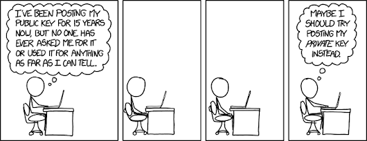
Secp256k1 is an elliptic curve defined in the Standards for Efficient Cryptography [20] and is used for digital signatures in a number of cryptocurrencies such as Bitcoin, Ethereum, EOS and Litecoin [21]. Grin also makes use of this same elliptic curve [22]. Some security experts recommend not using the secp256k1 curve, as some issues have been uncovered, but not necessarily exploited. One of these problems is that the complex-multiplication field discriminant is not high enough to be secure. This could result in potential future exploits, as curves with low complex-multiplication field discriminant tend to be easier to break [23].
Starting a project with a potentially compromised curve does not seem like a good idea, especially when other curves with better security properties and characteristics do exist. A number of alternative curves exist that could be used to improve security. For example, Curve25519, which can be used with the improved Ed25519 public-key signature system. The Ed25519 signature scheme makes use of the Edwards-curve Digital Signature Algorithm (EdDSA) and uses SHA-512 and Curve25519 [24] to build a fast signature scheme without sacrificing security.
Many additional alternatives exist, and platforms such as SafeCurves, maintained by Daniel J. Bernstein and Tanje Lange, can help with the investigation and selection of an alternative security curve. The SafeCurves platform will make it easier to evaluate the security properties and potential vulnerabilities of many cryptographic curves [25].
Selection of Key-store Library
Grin originally made use of RocksDB [26] as an internal key-value store, but received some criticism for this decision. A number of alternatives with other performance and security characteristics exist, such as LevelDB [27], HyperLevelDB [28] and the Lightning Memory-Mapped Database (LMDB) [29]. Selecting between these to find the "best" key-value store library for blockchain applications remains a difficult problem, as many online sources provide conflicting information.
Based on the controversial results from a number of online benchmarks, it seems as if some of these alternatives have better performance, such as producing small database sizes and performing faster queries [30]. As an example, RocksDB and LevelDB seem incorrectly to be better alternatives to LMDB, as they produce the fastest reads and deletes, as well as some of the smallest databases, compared to the other database libraries [31]. This is not entirely true, as some mistakes were made during the testing process. Howard Chu wrote an article entitled "Lies, Damn Lies, Statistics, and Benchmarks", which exposes some of these issues and shows that LMDB is the best key-value store library [32]. Other benchmarks performed by Symas Corp support this claim, where LMDB outperformed all the tested key store libraries [33].
Grin later replaced RocksDB with LMDB to maintain the state of Grin Wallets [34]. This switch appears to be a good idea, as LMDB seem to be the best key-value store library for blockchain-related applications.
Conclusions, Observations and Recommendations
- Selecting the correct emission rate to create a sustainable monetary policy is an important decision. Care should be taken to ensure that the right balance is found between being an SoV and/or an MoE.
- Weighing the benefits and potential issues of being ASIC friendly compared to ASIC resistant needs to be carefully evaluated.
- Tools such as SafeCurves can be used to select a secure elliptic curve for an application. Cryptographic curves with even potential security vulnerabilities should rather be ignored.
- Care should be taken when using online benchmarks to help select libraries for a project, as the results might be misleading.
References
[1] M. Franzoni, "Grin: a Lightweight Implementation of the MimbleWimble Protocol" [online]. Available: https://medium.com/novamining/grin-testnet-is-live-98b0f8cd135d. Date accessed: 2018‑10‑05.
[2] S. Nakamoto, "Bitcoin: A Peer-to-Peer Electronic Cash System" [online]. Available: <https://bitcoin.org/bitcoin.pdf. Date accessed: 2018‑10‑05.
[3] A. Barone, "What Happens to Bitcoin after all 21 Million are Mined?" [Online.] Available: https://www.investopedia.com/tech/what-happens-bitcoin-after-21-million-mined/. Date accessed: 2018‑10‑07.
[4] "Emission Rate of Grin" [online]. Available: https://www.grin-forum.org/t/emmission-rate-of-grin/171. Date accessed: 2018‑10‑15.
[5] "Coin Emission and Block Reward Schedules: Bitcoin vs. Monero" [online]. Available: https://www.reddit.com/r/Monero/comments/512kwh/useful_for_learning_about_monero_coin_emission/d78tpgi. Date accessed: 2018‑10‑15.
[6] "On Grin, MimbleWimble, and Monetary Policy" [online]. Available: https://www.reddit.com/r/grincoin/comments/91g1nx/on_grin_mimblewimble_and_monetary_policy/. Date accessed: 2018‑10‑07.
[7] "Grin - Monetary Policy" [online]. Available: https://github.com/mimblewimble/docs/wiki/Monetary-Policy. Date accessed: 2018‑10‑08.
[8] J. J. Roberts and N. Rapp, "Exclusive: Nearly 4 Million Bitcoin Lost Forever, New Study Says" [online]. Available: http://fortune.com/2017/11/25/lost-bitcoins/. Date accessed: 2018‑10‑08.
[9] Andrew Ancheta, "How Inflationary should Cryptocurrency really be?" [Online.]. Available: https://cryptobriefing.com/how-inflationary-should-cryptocurrency-be/. Date accessed: 2018‑11‑06.
[10] L. Mutch, "Debtcoin: Credit, Debt, and Cryptocurrencies" [online]. Available: https://web.archive.org/web/20180917125549/https://cryptoinsider.21mil.com/debtcoin-credit-debt-and-cryptocurrencies/. Date accessed: 2018‑11‑06.
[11] Brian Curran, "Inflation vs Deflation: A Guide to Bitcoin & Cryptocurrencies Deflationary Nature" [online]. Available: https://blockonomi.com/bitcoin-deflation/. Date accessed: 2018‑11‑06.
[12] A. Hayes, "Why is Deflation Bad for the Economy?" [Online.] Available: https://www.investopedia.com/articles/personal-finance/030915/why-deflation-bad-economy.asp. Date accessed: 2018‑11‑06.
[13] J. H. Cochrane, "Inflation and Debt" [online]. Available: https://www.nationalaffairs.com/publications/detail/inflation-and-debt. Date accessed: 2018‑11‑07.
[14] L. Ziyuan, "Think Piece: Fighting Hyperinflation with Cryptocurrencies" [online]. Available: https://medium.com/@Digix/think-piece-fighting-hyperinflation-with-cryptocurrencies-a08fe86bb66a. Date accessed: 2018‑11‑07.
[15] "Grin - Proof of Work Update" [online]. Available: https://www.grin-forum.org/t/proof-of-work-update/713. Date accessed: 2018‑10‑15.
[16] "Grin - Meeting Notes: Governance, Sep 25 2018" [online]. Available: https://www.grin-forum.org/t/meeting-notes-governance-sep-25-2018/874. Date accessed: 2018‑10‑15.
[17] "Cuck(at)oo Cycle" [online]. Available: https://github.com/tromp/cuckoo. Date accessed: 2018‑10‑15.
[18] "51% Attack" [online]. Available: https://www.investopedia.com/terms/1/51-attack.asp. Date accessed: 2018‑10‑11.
[19] H. Knutson, "What is the Math behind Elliptic Curve Cryptography?" [Online.] Available: https://hackernoon.com/what-is-the-math-behind-elliptic-curve-cryptography-f61b25253da3. Date accessed: 2018‑10‑14.
[20] "Standards for Efficient Cryptography Group" [online]. Available: http://www.secg.org/. Date accessed: 2018‑10‑11.
[21] "Secp256k1" [online]. Available: https://en.bitcoin.it/wiki/Secp256k1. Date accessed: 2018‑10‑15.
[22] "Grin - Schnorr Signatures in Grin & Information" [online]. Available: https://www.grin-forum.org/t/schnorr-signatures-in-grin-information/730. Date accessed: 2018‑10‑08.
[23] "SafeCurves - CM Field Discriminants" [online]. Available: http://safecurves.cr.yp.to/disc.html. Date accessed: 2018‑10‑15.
[24] D. J. Bernstein, "Curve25519: New Diffie-Hellman Speed Records" [online]. Available: https://cr.yp.to/ecdh/curve25519-20060209.pdf. Date accessed: 2018‑10‑15.
[25] "SafeCurves - Choosing Safe Curves for Elliptic-curve Cryptography" [online]. Available: http://safecurves.cr.yp.to/. Date accessed: 2018‑10‑10.
[26] "RocksDB" [online]. Available: https://rocksdb.org/. Date accessed: 2018‑10‑10.
[27] "LevelDB" [online]. Available: https://web.archive.org/web/20180917125549/https://cryptoinsider.21mil.com/debtcoin-credit-debt-and-cryptocurrencies/. Date accessed: 2018‑10‑15.
[28] "HyperLevelDB" [online]. Available: http://hyperdex.org/. Date accessed: 2018‑10‑15.
[29] "LMDB" [online]. Available: https://github.com/LMDB. Date accessed: 2018‑10‑29.
[30] P. Dix, "Benchmarking LevelDB vs. RocksDB vs. HyperLevelDB vs. LMDB Performance for InfluxDB" [online]. Available: https://www.influxdata.com/blog/benchmarking-leveldb-vs-rocksdb-vs-hyperleveldb-vs-lmdb-performance-for-influxdb/ Date accessed: 2018‑10‑15.
[31] B. Alex, "Lmdbjava - Benchmarks" [online]. Available: https://github.com/lmdbjava/benchmarks/blob/master/results/20160630/README.md. Date accessed: 2018‑10‑14.
[32] H. Chu, "Lies, Damn Lies, Statistics, and Benchmarks" [online]. Available: https://www.linkedin.com/pulse/lies-damn-statistics-benchmarks-howard-chu. Date accessed: 2018‑10‑29.
[33] "HyperDex Benchmark, Symas Corp" [online]. Available: http://www.lmdb.tech/bench/hyperdex/. Date accessed: 2018‑10‑29.
[34] Yeastplume, "Progress Update May - Sep 2018" [online]. Available: https://www.grin-forum.org/t/yeastplume-progress-update-thread-may-sept-2018/361/12. Date accessed: 2018‑10‑28.
Contributors
- https://github.com/neonknight64
- https://github.com/hansieodendaal
- https://github.com/SWvheerden
- https://github.com/philipr-za
- https://github.com/kim0
- https://github.com/anselld
Atomic Swaps
- What are Atomic Swaps?
- Hashed Timelock Contracts
- Atomic vs. Etomic Swaps
- Examples of Current Atomic Swaps and Implementations
- References
- Contributors
What are Atomic Swaps?
Atomic swaps or cross-chain atomic swaps [1], in a nutshell, are decentralized exchanges, but only for cryptocurrencies. They allow multiple parties to exchange two different crypto currencies in a trustless environment. If one party defaults or fails the transaction, neither party can "run off" with anyone's money. For this to work, we will require two technologies: a payment channel and hashed timelock contracts. An implementation of a payment channel is the lightning network.
Hashed Timelock Contracts
Hashed Timelock Contracts (HTLC) [2] is one of the most important technologies required for atomic swaps. This is a payment class that uses hashlocks and timelocks to require certain public knowledge before making a payment, otherwise the payment is reversed. HTLCs are also crucial in the lighting network [3].
Here is a quick example of how an HTLC works:
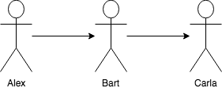
In this example, Alex wants to pay Carla, but he does not have an open payment channel to Carla. However, he does have an open channel to Bart, who does have an open channel to Carla.
- Carla generates a random number and gives the hash of the number to Alex.
- Alex pays Bart, but adds the condition that if Bart wants to claim the payment, he has to provide the random number that generated the hash Carla gave to Alex.
- Bart pays Carla, but he adds the same condition to the payment.
- Carla claims the payment by providing the random number, thus exposing the random number to Bart.
- Bart uses the random number to claim the payment from Alex.
If the payment to Carla does not go through, the timelock in the contract will reverse all transactions.
Atomic vs. Etomic Swaps
For an atomic swap transaction to happen, both cryptocurrencies must use the same hashing function, as this is crucial for HTLC to function. Etomic swaps were created in an attempt to make atomic swaps happen between Bitcoin tokens and Ethereum-based tokens.
Examples of Current Atomic Swaps and Implementations
#1 Manual Method
An article was posted on Hackernoon [4] giving the exact steps that are required for doing an atomic swap using cli. The requirements for this method are:
- Full nodes on both parties.
- Atomic swap package [5].
- Use of supported coins (UXTO-based protocol coins, e.g. Bitcoin, Litecoin and Viacoin).
- Power user.
#2 Atomic Wallet
Atomic Wallet [6] is an atomic swap exchange. It allows two parties to trade with it as a third party. The process is as follows:
- Party A selects an order from the BitTorrent order book.
- Party A enters an amount of coin to swap or coin to receive.
- Party A confirms the swap.
- Party B receives notification.
- Party B confirms the swap.
- Party A and Party B's Atomic Wallets check the contracts.
- Both parties receive their coins.
#3 BarterDEX
BarterDEX is a decentralized exchange created by Komodo [7], but it works with electron servers or native. BarterDEX at its core is more like an auction system than a true decentralized exchange. It also uses a security deposit in the form of Zcredits to do swaps without waiting for confirmation.
BarterDEX also supports Etomic swaps. These work by keeping the payments locked in an etomic blockchain that will act as a third party. Although swaps have been done, it is stated as not yet being production ready [8]. Currently (July 2018), it is only possible to use Barterdex out of the Command Line Interface (CLI) [9]. Barterdex charges a 0.1287% fee for a swap [10].
#4 COMIT
Cryptographically-secure Off-chain Multi-asset Instant Transaction (COMIT) is an open-source protocol for cross-blockchain applications, like peer-to-peer atomic swaps, and does not feature another blockchain nor token. It is powered by simple cryptographic principles such as HTLCs and enables users to trustlessly exchange one digital asset to another. Its specification, reference implementation in Rust, JavaScript Software Development Kit (SDK), CLI and web Graphical User Interface (GUI) are available on GitHub. At the time of writing, October 2019, COMIT supports assets from the Bitcoin blockchain (e.g. BTC) and from the Ethereum blockchain (e.g. ETH and ERC20 tokens) ([11, [12], [13]).
References
[1] S. Khatwani (2018), "What is Atomic Swap and Why it Matters?" Coinsutra. [Online.] Available: https://coinsutra.com/atomic-swap/. Date accessed: 2018‑07‑12.
[2] A. Vohra (2016), "What are Hashed Timelock Contracts (HTLCs)? Application in Lightning Network & Payment Channels", Hackernoon [online] Available: https://hackernoon.com/what-are-hashed-timelock-contracts-htlcs-application-in-lightning-network-payment-channels-14437eeb9345. Date accessed: 2018‑07‑12.
[3] J. Poon and T. Dryja (2016), "The Bitcoin Lightning Network: Scalable Off-chain Instant Payments v0.5.9.2" [online]. Available: https://lightning.network/lightning-network-paper.pdf. Date accessed: 2018‑07‑13.
[4] Hotshot (2018), "So how do I really do an Atomic Swap", Hackernoon [online] Available: https://hackernoon.com/so-how-do-i-really-do-an-atomic-swap-f797852c7639. Date accessed: 2018‑07‑13.
[5] Open Source (ISC) (2018), "viacoin/atomicswap", GitHub [online]. Available: https://github.com/viacoin/atomicswap. Date accessed: 2018‑07‑13.
[6] Atomic (2018), "Atomic Wallet" [online]. Available: https://atomicwallet.io/. Date accessed: 2018‑07‑13.
[7] Komodo (2018), "BarterDEX" [online]. Available: https://komodoplatform.com/decentralized-exchange/. Date accessed: 2018‑07‑13.
[8] Artemii235 (2018), "etomic-swap", GitHub [online]. Available: https://github.com/artemii235/etomic-swap. Date accessed: 2018‑07‑13.
[9] Komodo (2018), "Barterdex", GitHub [online]. Available: https://github.com/KomodoPlatform/KomodoPlatform/wiki/Installing-and-Using-Komodo-Platform-(barterDEX. Date accessed: 2018‑07‑13.
[10] Komodo and S. Hossain (2017), "barterDEX Whitepaper v2" [online]. Available: https://github.com/KomodoPlatform/KomodoPlatform/wiki/barterDEX-Whitepaper-v2. Date accessed: 2018‑07‑13.
[11] GitHub: "comit-network, COMIT is an open protocol facilitating trustless cross-blockchain applications." [online]. Available: https://github.com/comit-network. Date accessed: 2019‑10‑16.
[12] CoBloX (2018), "Connect all the Blockchains!!!" [online] Available: https://blog.coblox.tech/2018/06/23/connect-all-the-blockchains.html/. Date accessed: 2019‑10‑16.
[13] "COMIT is an open protocol facilitating trustless cross-blockchain applications" [online] Available: https://comit.network/. Date accessed: 2019‑10‑16.
Contributors
Lightning Network for Dummies
Having trouble viewing this presentation?
View it in a separate window.
Introduction to SPV, Merkle Trees and Bloom Filters
Having trouble viewing this presentation?
View it in a separate window.
The RGB Protocol - An Introduction
Having trouble viewing this presentation?
View it in a separate window.
Introduction to Tor and I2P
- Introduction
- I2P Network
- Tor Network
- Differences between I2P and Tor
- Conclusion
- References
- Appendices
- Contributors
Introduction
Invisible Internet Project (I2P), Tor and Virtual Private Networks (VPNs) are well-known anonymity networks. They are all designed in different ways and for specific uses, although most people use them with the intent of privately browsing the Internet. These network functions have very similar characteristics, but also have important differentiators in how they work to anonymize and secure users' Internet traffic.
In this report we'll examine what Tor and the I2P networks are, the paradigms of how they work, their security infrastructure and their potential or known use-cases in the blockchain domain.
I2P Network
What is I2P?
I2P (known as the Invisible Internet Project - founded in 2003) is a low-latency network layer that runs on a distributed network of computers across the globe. It is primarily built into applications such as email, Internet Relay Chat (IRC) and file sharing [6]. I2P works by automatically making each client in the network a node, through which data and traffic are routed. These nodes are responsible for providing encrypted, one-way connections to and from other computers within the network.
How does I2P Work?
I2P is an enclosed network that runs within the Internet infrastructure (referred to as the clearnet in this paradigm). Unlike VPNs and Tor, which are inherently "outproxy" networks designed for anonymous and private communication with the Internet, I2P is designed as a peer-to-peer network. This means it has very little to no communication with the Internet. It also means each node in I2P is not identified with an Internet Protocol (IP) address, but with a cryptographic identifier ([1], [2]). A node in the I2P network can be either a server that hosts a darknet service (similar to a website on the Internet), or a client who accesses the servers and services hosted by other nodes [6]. Tor, on the other hand, works by using a group of volunteer-operated relay servers/nodes that allow people to privately and securely access the Internet. This means people can choose to volunteer as a relay node in the network and hence donate bandwidth [13]. Compared to Tor, each client/server in I2P is automatically a relay node. Whether data is routed through a specific node is normally bandwidth dependent.
Since there is no Internet in I2P, the network is made up of its own anonymous and hidden sites, called eepsites. These exist only within the network and are only accessible to people using I2P. Services such as I2PTunnel, which use a standard web server, can be used to create such sites.
I2P Infrastructure
Routing Infrastructure and Anonymity
I2P works by installing an I2P routing service within a client's device. This router creates temporary, encrypted, one-way connections with I2P routers on other devices. Connections are referred to as one way because they are made up of an Outbound Tunnel and an Inbound Tunnel. During any communication, data leaves the client's devices via the outbound tunnels and is received on other devices through their inbound tunnels. This means that messages do not travel in two directions within the same tunnel. Therefore, a single round-trip request message and its response between two parties needs four tunnels [4], as shown in Figure 1. Messages sent from one device do not travel directly to the inbound tunnel of the destination device. Instead, the outbound router queries a distributed network database for the corresponding address of the inbound router. This database is comprised of a custom Kademlia-style Distributed Hash Table (DHT) that contains the router information and destination information. For each application or client, the I2P router keeps a pool of tunnel pairs. Exploratory tunnels for interactions with the network database are shared among all users of a router. If a tunnel in the pool is about to expire or if the tunnel is no longer usable, the router creates a new tunnel and adds it to the pool. It is important to recall later that tunnels periodically expire every 10 minutes, and thus need to be refreshed frequently. This is one of I2P's security measures that are performed to prevent long-lived tunnels from becoming a threat to anonymity [3].

Figure 1: Network Topology [6]
Distributed Network Database
The Network Database (NetDB) is implemented as a DHT and is propagated via nodes known as floodfill routers using the Kademlia protocol. The NetDB is one of the characteristics that make I2P decentralized. To start participating in the network, a router installs a part of the NetDB. Obtaining the partial NetDB is called bootstrapping and happens by 'reseeding’ the router. By default, a router will reseed the first time by querying some bootstrapped domain names. When a router successfully establishes a connection to one of these domains, a Transport Layer Security (TLS) connection is set up through which the router downloads a signed partial copy of the NetDB. Once the router can reach at least one other participant in the network, the router will query for other parts of the NetDB it does not have itself [12].
The NetDB stores two types of data:
-
RouterInfo. When a message is leaving one router, it needs to know some key pieces of data (known as RouterInfo) about the other router. The destination RouterInfo is stored in the NetDB with the router's identity as the key. To request a resource (or RouterInfo), a client requests the desired key from the node considered to be closest to the key. If the piece of data is located at the node, it is returned to the client. Otherwise, the node uses its local knowledge of participating nodes and returns the node it considers to be nearest to the key [3]. The RouterInfo in the NetDB is made up of ([4], [6]):
- The router's identity - an encryption key, a signing key and a certificate.
- The contact addresses at which it can be reached - protocol, IP and port.
- When this was created or published.
- Options - a set of arbitrary text options, e.g. bandwidth of router.
- The signature of the above, generated by the identity's signing key.
-
LeaseSets. The LeaseSet specifies a tunnel entry point to reach an endpoint. This specifies the routers that can directly contact the desired destination. It contains the following data:
- Tunnel gateway router - given by specifying its identity.
- Tunnel ID - tunnel used to send messages.
- Tunnel expiration - when the tunnel will expire.
- Destination itself - similar to router identity.
- Signature - used to verify the LeaseSet.
Floodfill Routers
Special routers, referred to as floodfill routers, are responsible for storing the NetDB. Participation in the floodfill pool can be automatic or manual. Automatic participation occurs whenever the number of floodfill routers drops below a certain threshold, which is currently 6% of all nodes in the network ([6], [7]). When this happens, a node is selected to participate as a floodfill router based on criteria such as uptime and bandwidth. It should be noted that approximately 95% of floodfill routers are automatic [8]. The NetDB is stored in a DHT format within the floodfill routers. A resource is requested from the floodfill router considered to be closest to that key. To have a higher success rate on a lookup, the client is able to iteratively look up the key. This means that the lookup continues with the next-closest peer should the initial lookup request fail.
Garlic Routing
Garlic routing is a way of building paths or tunnels through which messages in the I2P network travel. When a message leaves the application or client, it is encrypted to the recipient's public key. The encrypted message is then encrypted with instructions specifying the next hop. The message travels in this way through each hop until it reaches the recipient. During the transportation of the message, it is bundled with other messages. This means that any message travelling in the network could contain a number of other messages bundled with it. In essence, garlic routing does two things:
- provides layered encryption; and
- bundles multiple messages together.
Figure 2 illustrates the end-to-end message bundling:

I2P Threats, Security and Vulnerability
The I2P project has no specific threat model, but rather talks about common attacks and existing defenses. Overall, the design of I2P is motivated by threats similar to those addressed by Tor: the attacker can observe traffic locally, but not all traffic flowing through the network; and the integrity of all cryptographic primitives is assumed. Furthermore, an attacker is only allowed to control a limited number of peers in the network (the website talks about not more than 20% of nodes participating in the NetDB and a similar percentage of the total number of nodes controlled by the malicious entity). In this section, we'll look at different threat models affecting the network [3].
Sybil Attacks
The Sybil attack, illustrated in Figure 3, is a well-known anonymity system attack in which the malicious user creates multiple identities in an effort to increase control over the network. Running this attack over the I2P network is rather difficult. This is because participants/clients in the network evaluate the performance of peers when selecting peers to interact with, instead of using a random sample. Since running multiple identities on the same host affects the performance of each of those instances, the number of additional identities running in parallel is effectively limited by the need to provide each of them with enough resources to be considered as peers. This means that the malicious user will need substantial resources to create multiple identities.

Figure 3: Sybil Attack [5]
Eclipse Attacks
In eclipse attacks, a set of malicious and colluding nodes arranges that a good node can only communicate with malicious nodes. The union of malicious nodes therefore fools the good node into writing its addresses into neighbouring lists of good nodes. In a Sybil attack, a single malicious node has a large number of identities in the network in order to control some part of the network. If an attacker wants to continue a Sybil attack into an eclipse attack, the attacker will try to place malicious nodes in the strategic routing path in such a way that all traffic will pass through the attacker's node [8].
Brute Force Attacks
Brute force attacks on the I2P network can be mounted by actively watching the network's messages as they pass between all of the nodes and attempting to correlate messages and their routes. Since all peers in the network are frequently sending messages, this attack is trivial. The attacker can send out large amounts of data (more than 2GB), observe all the nodes and narrow down those that routed the message. Transmission of a large chunk of data is necessary because inter-router communication is encrypted and streamed, i.e. 1,024 byte data is indistinguishable from 2,048 byte data. Mounting this attack is, however, very difficult and one would need to be an Internet Service Provider (ISP) or government entity in order to observe a large chunk of the network.
Intersection Attacks
Intersection attacks involve observing the network and node churns over time. In order to narrow down specific targets, when a message is transferred through the network, the peers that are online are intersected. It is theoretically possible to mount this attack if the network is small, but impractical with a larger network.
Denial of Service Attacks
Denial of service attacks include the following:
Greedy User Attack
A greedy user attack occurs when a user is consuming significantly more resources than they are willing to contribute. I2P has strong defenses against these attacks, as users within the network are routers by default and hence contribute to the network by design.
Starvation Attack
A user/node may try to launch a starvation attack by creating a number of bad nodes that do not provide any resources or services to the network, causing existing peers to search through a larger network database, or request more tunnels than should be necessary. An attempt to find useful nodes can be difficult, as there are no differences between them and failing or loaded nodes. However, I2P, by design, maintains a profile of all peers and attempts to identify and ignore poorly performing nodes, making this attack difficult.
Flooding Attack
In a flooding attack, the malicious user sends a large number of messages to the target's inbound tunnels or to the network at large.
The targeted user can, however:
- detect this by the contents of the message and because the tunnel's tests will fail;
- identify the unresponsive tunnels, ignore them and build new ones;
- choose to throttle the number of messages a tunnel can receive.
Although I2P has no defences against a network flooding attack, it is incredibly difficult to flood the network.
Tor Network
What is Tor?
Tor is a free and open-source anonymity/privacy tool, meant to protect a user's location and identity. The name is derived from the acronym for the original software project name, The Onion Router ([17], [18]). This refers to the way in which Tor protects a user's data, by wrapping it in multiple layers of encryption, similar to the layers of an onion.
Tor uses a unique system that was originally developed by the US Navy to protect government intelligence communications. Naval Research Laboratory released the Tor code under a free license and the Tor Project was founded in 2006. With the help of the Electronic Frontier Foundation (EFF), further research and development of Tor have continued as a Free and Open Source Project. The Tor network service is run by a worldwide community of volunteers and are not controlled by any corporate or government agencies.
The Tor network service is the heart of the Tor project. The Tor Browser and other tools, such as OnionShare, run on top of or via the Tor network. These tools are meant to make using the Tor network as simple and secure as possible.
Some tools, such as the Tor Browser Bundle, come as a single downloadable and installable package containing everything needed to use the Tor network and be anonymous.
Almost any network tool or application that can be configured to use a Socket Secure (SOCKS) proxy can be set up to use the Tor network service.
How does Tor Work?
Before Tor data enters the Tor network, it is bundled into nested layers of encrypted packets of the same size. These packets are then routed through a random series of volunteer-operated servers called relay nodes. Each time the Tor data passes through one of these relays, a layer of encryption is removed to reveal the location of the next relay. When the data reaches the final relay on its path, the last layer of encryption is removed and the data is sent to its final destination.
Relay nodes, such as I2P's nodes, are responsible for creating hops through which data is routed before reaching its intended destination on the Internet. They work by incrementally building a circuit of encrypted connections through relays on the network. The circuit is extended one hop at a time. Each relay along the way knows only which relay gave it data and which relay it is giving data to. No individual relay ever knows the complete path that a data packet has taken. Also, no request uses the same path. Later requests are given a new circuit, to keep people from linking a user's earlier actions to new actions. This process is also known as Onion Routing [14], and is illustrated in Figure 4:

Figure 4: How Tor Works [13]
How does Onion Routing Work?
Onion Routing is essentially a distributed overlay network designed to anonymize Transmission Control Protocol (TCP) based applications such as web browsing, secure shell and instant messaging. Clients choose a path through the network and build a circuit in which each node in the path knows its predecessor and successor, but no other nodes in the circuit. Traffic flows down the circuit in fixed-size cells, which are unwrapped by a symmetric key at each node (similar to the layers of an onion) and relayed downstream [14]. Each relay can only decrypt enough data to learn the location of the previous and next relay. Since each path is randomly generated and the relays do not keep records, it is nearly impossible for your activity to be traced back to you through Tor’s complex network [21].
An .onion address points to some resource on the Tor network called a hidden service or an onion service. Onion
services are generally only accessible by using the Tor network. As an example, if the DuckDuckGo Search engine onion
address (https://3g2upl4pq6kufc4m.onion/) is visited, the request is routed through the Tor network without the client
knowing the host IP address of the server. The onion address is practically meaningless without it being routed through
and resolved by the Tor network. Traffic between a Tor client and an .onion site should never leave the Tor network,
thus making the network traffic safer and more anonymous than publicly hosted sites. An .onion address is a domain
name that is not easy to remember or find, as there are no directory services. It generally consists of opaque,
non-mnemonic, 16- or 56-character alpha-semi-numerical strings that are generated on a cryptographically hashed public
key. The Top Level Domain (TLD) .onion is not a true domain and cannot be found or queried on the Internet, but only
inside the Tor network ([19]], [23], [24]).
The designated use of relay nodes in the Tor network gives the network the following important characteristics [13]:
- The stability of the network is proportional to the number of relay nodes in the network. The fewer the number of relay nodes, the less stable the network becomes.
- The security of the network is also proportional to the number of relay nodes. A network with more active relay nodes is less vulnerable to attacks.
- Finally, the speed of the network is proportional to the number of relay nodes. The more nodes there are, the faster the network becomes.
Types of Tor Relays/Nodes Routing
Tor's relay nodes do not all function in the same way. As shown in Figure 5, there are four types of relay nodes: an entry or guard relay node, a middle relay node, an exit relay node and a bridge relay node.
Figure 5: Tor Circuit [14]
Guard or Entry Relay (Non-exit Relay) Nodes
A guard relay node is the first relay node in the Tor circuit. Each client that wants to connect to the Tor network will first connect to a guard relay node. This means that guard relay nodes can see the IP address of the client attempting to connect. It is worth noting that Tor publishes its guard relay nodes and anyone can see them on websites such as the one in [15]. Since it is possible to see the IP address of a client, there have been cases where attackers have filtered out traffic on the network using circuit fingerprinting techniques such as documented in [16].
Middle Relay Nodes
Middle relay nodes cover most parts of the Tor network and act as hops. They consist of relays through which data is passed in encrypted format. No node knows more than its predecessor and descendant. All the available middle relay nodes show themselves to the guard and exit relay nodes so that any may connect to them for transmission. Middle relay nodes can never be exit relay nodes within the network [13].
Exit Relay Nodes
Exit relay nodes act as a bridge between the Tor network and the Internet. They are Internet public-facing relays, where the last layer of Tor encryption is removed from traffic that can then leave the Tor network as normal traffic that merges into the Internet on its way to its desired destinations on the Internet.
The services to which Tor clients are connecting (website, chat service, email provider, etc.) will see the IP address of the exit relay instead of the real IP addresses of Tor users. Because of this, exit relay node owners are often subjected to numerous complaints, legal notices and shutdown threats [13].
Bridge Relay Nodes
The design of the Tor network means that the IP addresses of Tor relays are public, as previously mentioned, and as shown in [15]. Because of this, Tor can be blocked by governments or ISPs blacklisting the IP addresses of these public Tor nodes. In response to blocking tactics, a special kind of relay called a Bridge should be used, which is a node in the network that is not listed in the public Tor directory. Bridge selection is done when installing the Tor Browser bundle, and makes it less likely to have to deal with complaints or have Internet traffic blocked by ISPs and governments.
Bridge relay nodes are meant for people who want to run Tor from their homes, have a static IP address or do not have much bandwidth to donate [13].
Pitfalls of Using Tor Anonymously - is it Broken?
Although traffic between nodes on the Tor network is encrypted, this does not guarantee anonymity for users. There are a number of pitfalls of using Tor anonymously.
Internet browsers and operating systems, what might seem like a simple request to a URL, could deanonymize somebody.
Older Tor setups needed a user to know how to configure their proxy settings in their operating system and/or browser, in order to use Tor services. This was very easy to get wrong or incomplete, and some users' information or details could be leaked.
For example, Domain Name System (DNS) requests intended for the Tor network, i.e. .onion address, might be sent
directly to the public DNS server, if the network.proxy.socks_remote_dns was not set to true in FireFox. These DNS
requests could be used to track where a user might be surfing and thus deanonymize the user.
Tor is not broken if Tor services are correctly set up or if the Tor Browser is used correctly. It is very easy to do something that would deanonymize a user, such as use an older browser or tool that is not configured to proxy all traffic via Tor network services.
Another example is if the user logs into a remote service such as Facebook or Gmail, their anonymity at this site is lost. What many people do not know is that other sites use tracking techniques, such as cookies, which could deanonymize the user on other sites too. Further information about online tracking can be found in [25]
However, recent releases of the Tor Browser notify users of updates and also work toward keeping each site isolated in their own Tab or session, addressing old and possibly insecure releases and user tracking via cookies.
Tor some has weaknesses, e.g. if a user is the only person using Tor on their home, office or school network, they could be deanonymized. Another is that a site knows when it has been accessed using Tor. These shortcomings might not be directly an issue with Tor or its encryption, but an expectation of a novice user, using Tor or one of the Tor tools and services.
For an interesting talk about some of the Tor attacks, refer to [26]. The following are two real instances where people using Tor were discovered:
- On 16 December 2013, Harvard University received a bomb threat that was tracked down to Eldo Kim, who was one of the few people using Tor on the campus network when the email had been sent. After questioning, Kim admitted he had sent the hoax bomb threat, as he wanted to get out of an exam [27].
- Hector Xavier Monsegur (Sabu) normally used Tor for connecting to IRC, but was caught not using it once, and the FBI found his home IP. After being caught, he started to collaborate with the FBI. While Monsegur was chatting to Jeremy Hammond on IRC, Hammond let slip details of where he had been arrested before and other groups with which he had been involved. This helped reduce the number of suspects and the FBI was able to get a court order to monitor Internet access and to correlate when Hammond was using Tor [28].
Advantages and Disadvantages
Advantages of Tor:
- It is free and open source.
- It supports Linux, OSX and Windows.
- It is easy to install for supported operating systems.
- It is not controlled by corporate or government agencies.
Disadvantages of Tor:
- It can be slow.
- It does not necessarily encrypt data leaving
Exit Node. This data can be intercepted. - It does not stop somebody from deanonymizing themselves.
- It does not stop interceptors from knowing you are using Tor.
- Its network is not user-friendly, due to its secure and hidden nature.
- Its nodes (relay/bridge) are run by volunteers, who can sometimes be unreliable.
Differences between I2P and Tor
| I2P | Tor |
|---|---|
| Fully peer to peer: self-organizing nodes | Fully peer to peer: volunteer relay nodes |
| Queries NetDB to find destination’s inbound tunnel gateway | Relays data to the closest relay |
| Limited to no exit nodes; internal communication only | Designed and optimized for exit traffic, with a large number of exit nodes |
| Designed primarily for file sharing | Designed for anonymous Internet access |
| Unidirectional tunnels | Rendezvous point |
| Significantly smaller user base | Generally bigger user base |
Conclusion
In summary, Tor and I2P are two network types that anonymize and encrypt data transferred within them. Each network is uniquely designed for a respective function. The I2P network is designed for moving data in a peer-to-peer format, whereas the Tor network is designed for accessing the Internet privately.
Regarding Tor, the following should be kept in mind:
- Anonymity is not confidentiality; Tor by itself does not guarantee anonymity. Total anonymity has many obstacles, not only technology related, but also the human component.
- Tor is not a Virtual Private Network (VPN).
- Tor data leaving the Tor network can be intercepted.
Extensive research exists and continues to find ways to improve the security of these networks in their respective operational designs. This research becomes especially important when control of a network may mean monetary loss, loss of privacy or denial of service.
References
[1] B. Mann, "What Is I2P & How Does It Compare vs. Tor Browser?" [Online.] Available: https://blokt.com/guides/what-is-i2p-vs-tor-browser#How_does_I2P_work. Date accessed: 2019‑06‑18.
[2]: I2P: "I2PTunnel" [online]. Available: https://geti2p.net/en/docs/api/i2ptunnel. Date accessed: 2019‑06‑18.
[3]: C. Egger, J. Schlumberger, C. Kruegel and G. Vigna, "Practical Attacks Against the I2P Network" - Paper [online]. Available: https://sites.cs.ucsb.edu/~chris/research/doc/raid13_i2p.pdf. Date accessed: 2019‑06‑18.
[4] N. P. Hoang, P. Kintis, M. Antonakakis and M. Polychronakis, "An Empirical Study of the I2P Anonymity Network and its Censorship Resistance" [online]. Available: https://censorbib.nymity.ch/pdf/Hoang2018a.pdf. Date accessed: 2019‑06‑18.
[5] K. Alachkar and D. Gaastra, "Mitigating Sybil Attacks on the I2P Network Using Blockchain" - Presentation [online]. Available: https://www.delaat.net/rp/2017-2018/p97/presentation.pdf. Date accessed: 2019‑06‑20.
[6] K. Alachkar and D. Gaastra, "Blockchain-based Sybil Attack Mitigation: A Case Study of the I2P Network" - Report [online]. Available: https://delaat.net/rp/2017-2018/p97/report.pdf. Date accessed: 2019‑06‑20.
[7] I2P: "The Network Database" [online]. Available: https://geti2p.net/en/docs/how/network-database. Date accessed: 2019‑06‑20.
[8] H. Vhora and G. Khilari, "Defending Eclipse Attack in I2P using Structured Overlay Network" [online]. Available: http://ijsetr.org/wp-content/uploads/2015/05/IJSETR-VOL-4-ISSUE-5-1515-1518.pdf. Date accessed: 2019‑06‑20.
[9] M. Ehlert, "I2P Usability vs. Tor Usability - A Bandwidth and Latency Comparison" [online]. Available: https://pdfs.semanticscholar.org/aa81/79d3da24b643a4d004c44ebe543000295d51.pdf. Date accessed: 2019‑06‑20.
[10] I2P: "I2P Compared to Tor" [online]. Available: https://geti2p.net/en/comparison/tor. Date accessed: 2019‑06‑20.
[11] I2P: "I2P Compared to Tor and Freenet" [online]. Available: http://www.geti2p.org/how_networkcomparisons.html. Date accessed: 2019‑06‑20.
[12] T. de Boer and V. Breider: "Invisible Internet Project - MSc Security and Network Engineering Research Project." [online]. Available: https://www.delaat.net/rp/2018-2019/p63/report.pdf Date accessed: 2019‑07‑10.
[13] Tor, "Tor Project: How it works" [online]. Available: https://2019.www.torproject.org/about/overview.html.en Date accessed: 2019‑08‑05.
[14] R. Dingledine, N Mathewson and P. Syverson, "Tor: The Second-Generation Onion Router" [online] Available: https://svn.torproject.org/svn/projects/design-paper/tor-design.html Date accessed: 2019‑08‑05.
[15] Tor, "Tor Network Status" [online]
Available: https://torstatus.blutmagie.de/ Date accessed: 2019‑08‑05.
[16] A. Kwon, M. AlSabah, D. Lazar, M. Dacier and S. Devadas, "Circuit Fingerprinting Attacks: Passive Deanonymization of Tor Hidden Service" [online] Available: https://people.csail.mit.edu/devadas/pubs/circuit_finger.pdf Date accessed: 2019‑08‑05.
[17] Tor Project: "Download for Tor Browser" [online]. Available: https://www.torproject.org/. Date accessed: 2019‑05‑16.
[18] Wikipedia: "Tor (Anonymity Network)" [online]. Available: https://en.wikipedia.org/wiki/Tor_(anonymity_network). Date accessed: 2019‑05‑16.
[19] DuckDuckGo Search Engine inside Tor [online]. Available: https://3g2upl4pq6kufc4m.onion/. Note: This link will not work unless Tor or the Tor Browser is used. Date accessed: 2019‑05‑16.
[20] Tor Project: "Check" [online]. Available: https://check.torproject.org/. Note: This link will help the user identify if Tor or the Tor Browser is been used. Date accessed: 2019‑05‑16
[21] Tor Project: "Overview" [online]. Available: https://2019.www.torproject.org/about/overview.html.en. Date accessed: 2019‑05‑16.
[22] Tor Project: "The Tor Relay Guide" [online]. Available: https://trac.torproject.org/projects/tor/wiki/TorRelayGuide. Date accessed: 2019‑08‑14.
[23] Wikipedia: ".onion" [online]. Available: https://en.wikipedia.org/wiki/.onion. Date accessed: 2019‑08‑22.
[24] Tor Project: "How do I access onion services?" [online]. Available: https://2019.www.torproject.org/docs/faq#AccessOnionServices. Date accessed: 2019‑08‑22.
[25] R. Heaton: "How Does Online Tracking Actually Work?" [online]. Available: https://robertheaton.com/2017/11/20/how-does-online-tracking-actually-work/. Date accessed: 2019‑07‑25.
[26] YouTube: "DEF CON 22 - Adrian Crenshaw - Dropping Docs on Darknets: How People Got Caught" [online]. Available: https://www.youtube.com/watch?v=eQ2OZKitRwc. Date accessed: 2019‑06‑18.
[27] Ars Technica: "Use of Tor helped FBI ID suspect in bomb hoax case" [online]. Available: https://arstechnica.com/security/2013/12/use-of-tor-helped-fbi-finger-bomb-hoax-suspect/. Date accessed: 2019‑07‑11.
[28] Ars Technica: "Stakeout: How the FBI tracked and busted a Chicago Anon" [online]. Available: https://arstechnica.com/tech-policy/2012/03/stakeout-how-the-fbi-tracked-and-busted-a-chicago-anon/. Date accessed: 2019‑07‑11.
Appendices
Appendix A: Tor Further Investigation
Onion Services - Tor services that don’t leave the Tor network: https://2019.www.torproject.org/docs/onion-services.html.en.
Appendix B: Tor Links of Interest
- What is Tor Browser?
- The Ultimate Guide to Tor Browser (with Important Tips) 2019
- Metrics of the Tor Project
- Sharing files using Tor
- Blog Post about OnionShare2 and its release
- List of Tor Projects
- Isis Lovecruft's PDF covering Privacy and Anonymity
Contributors
- https://github.com/mhlangagc and https://github.com/leet4tari
- https://github.com/neonknight64
- https://github.com/SWvheerden
- https://github.com/sdbondi
- https://github.com/anselld
Distributed Hash Tables
- Introduction
- Characterization of DHT Networks
- DHT Algorithms
- DHT Vulnerabilities and Attacks
- Cuckoo Rule
- Conclusion
- References
- Contributors
Introduction
A hash table is a data structure that maps keys to values. A hashing function is used to compute keys that are inserted into a table from which values can later be retrieved. As the name suggests, a distributed hash table (DHT) is a hash table that is distributed across many linked nodes, which cooperate to form a single cohesive hash table service. Nodes are linked in what is called an overlay network. An overlay network is simply a communication network built on top of another network. The Internet is an example, as it began as an overlay network on the public switched telephone network.
$\langle key, value \rangle$ pairs are stored on a subset of the network, usually by some notion of "closeness" to that key.
A DHT network design allows the network to tolerate nodes coming and going without failure, and allows the network size to increase indefinitely.

Image from XKCD #350 - Network - License
The need for DHTs arose from early file-sharing networks such as Gnutella, Napster, FreeNet and BitTorrent, which were able to make use of distributed resources across the Internet to provide a single cohesive service [1].
These systems employed different methods of locating resources on the network:
- Gnutella searches were inefficient, because queries would result in messages flooding the network.
- Napster used a central index server, which was a single point of failure and left it vulnerable to attacks.
- FreeNet used a key-based routing. However, it was less structured than a DHT and did not guarantee that data could be found.
In 2001, four DHT projects were introduced: CAN, Chord, Pastry and Tapestry. They aimed to have a lookup efficiency ($O(log(n))$) similar to that of a centralized index, while having the benefits of a decentralized network.
DHTs use varying techniques to achieve this, depending on the given algorithm. However, they have a number of aspects in common:
- Each participant has some unique network identifier.
- They perform peer lookup, data storage and retrieval services.
- There is some implicit or explicit joining procedure.
- Communication need only occur between neighbors that are decided on by some algorithm.
In this report we'll go over some of the aspects common to all DHTs and dive deeper into a popular DHT implementation, called Kademlia.
Characterization of DHT Networks
Peer Discovery
Peer discovery is the process of locating nodes in a distributed network for data communication. This is facilitated by every node maintaining a list of peers and sharing that list with other nodes on the network. A new participant would seek to find their peers on the network by first contacting a set of predefined bootstrap nodes. These nodes are normal network participants who happen to be part of some dynamic or static list. It is the job of every node on the network to facilitate peer discovery.
As peers come and go, these lists are repeatedly updated to ensure network integrity.
Scalability and Fault-tolerance
A DHT network efficiently distributes responsibility for the replicated storage and retrieval of routing information and data. This distribution allows nodes to join and leave with minimal or no disruption. The network can have a massive number of nodes (in the case of BitTorrent, millions of nodes) without each node having to know about every other participant in the network. In this way, DHTs are inherently more resilient against hostile attackers than a typical centralized system [1].
BitTorrent is one of the largest decentralized networks in existence, containing in the order of tens of millions of concurrent users and hundreds of millions of active users. It is estimated that there are a quarter of a billion distinct monthly users of the BitTorrent network [10]. As of 2019, Tor has approximately 9,000 relay servers and over 2 million users [11].
Distributed Data Storage
Arbitrary data may be stored and replicated by a subset of nodes for later retrieval. Data is hashed using a consistent hashing function (such as SHA256) to produce a key for the data. That data is propagated and eventually stored on the node or nodes whose node IDs are "closer" to the key for that data for some distance function.
Partitioned data storage has limited usefulness to a typical blockchain, as each full node is required to keep a copy of all transactions and blocks for verification.
DHT Algorithms
Overview
The following graph is replicated and simplified from [8]. Degree is the number of neighbors with which a node must maintain contact.
| Parameter | CAN | CHORD | Kademlia | Koord | Pastry | Tapestry | Viceroy |
|---|---|---|---|---|---|---|---|
| Foundation | d-dimensional torus | Circular space | XOR metric | de Bruijn graph | Plaxton-style mesh | Plaxton-style mesh | Butterfly network |
| Routing function | Map key-value pairs to coordinate space | Matching key to node ID | Matching key to node ID | Matching key to node ID | Matching key and prefix in node ID | Suffix matching | Levels of tree, vicinity search |
| Routing performance (network size $n$) | $O(dn^{(2/d)})$ | $O(log(n))$ | $O(log(n)) + c$ $c$ is small | Between $O(log(log(n)))$ and $O(log(n))$ | $O(log(n))$ | $O(log(n))$ | $O(log(n))$ |
| Degree | $2d$ | $O(log(n))$ | $O(log(n))$ | Between constant to $log(n)$ | $O(2log(n))$ | $O(log(n))$ | Constant |
| Join/Leaves | $2d$ | $log(n)^2$ | $O(log(n)) + c$ $c$ is small | $O(log(n))$ | $O(log(n))$ | $O(log(n))$ | $O(log(n))$ |
| Implementations | -- | OpenChord, OverSIM | Ethereum [3], Mainline DHT (BitTorrent), I2P, Kad Network | -- | FreePastry | OceanStore, Mnemosyne [4] | -- |
The popularity of Kademlia over other DHTs is likely due to its relative simplicity and performance. The rest of this section dives deeper into Kademlia.
Kademlia
Kademlia is designed to be an efficient means for storing and finding content in a distributed peer-to-peer (P2P) network. It has a number of core features that are not simultaneously offered by other DHTs [2], such as:
- The number of messages necessary for nodes to learn about each other, is minimized.
- Nodes have enough information to route traffic through low-latency paths.
- Parallel and asynchronous queries are made to avoid timeout delays from failed nodes.
- The node existence algorithm resists certain basic distributed denial-of-service (DDoS) attacks.
Node ID
A node selects an $n$-bit ID, which is given to other nodes on the network. The network design relies on node IDs being uniformly distributed by some random procedure. A node's position is determined by the shortest unique prefix of its ID, which forms a tree structure with node IDs as leaves [2]. This ID should be reused when the node rejoins the network. The following figure shows a binary tree structure in a three-bit key space:
Bootstrapping a Node
A node wishing to join the network for the first time has no known contacts. In order for the node to establish itself on the network, it must contact one, or more than one, bootstrap node. These nodes are not special in any way other than being listed in some predefined list. They simply serve as a first point of contact for the requesting node to become known to more of the network and to find its closest peers.
There are a number of ways that bootstrap nodes can be obtained, including adding addresses to a configuration and using DNS seeds. The joining process is described as follows [2]:
- A joining node generates a random ID.
- It contacts a few nodes it knows about.
- It sends a
FIND_NODElookup request of its newly generated node ID. - The contacted nodes return the closest nodes they know about. The newly discovered nodes are added to the joining node's routing table.
- The joining node then contacts some of the new nodes it knows about. The process then continues iteratively until the joining node is unable to locate any closer nodes.
This self-lookup has two effects: it allows the node to learn about nodes closer to itself; and it populates other nodes' routing tables with the node's ID [1].
XOR Metric
The Kademlia paper published in 2002 [2] offered the novel idea of using the XOR ($\oplus$) operator to determine the distance and therefore the arrangement of peers within the network. Defined as:
$$ distance(a, b) = a \oplus b$$
This works, because XOR exhibits the same mathematical properties as any distance function.
Specifically, [1]
- Identity: $a \oplus a = 0$
- Non-negativity: $a \oplus b > 0$ for $a \neq b$
- Symmetry: $a \oplus b = b \oplus a$
- Triangle inequality: $a \oplus b + b \oplus c \geq a \oplus c$
The XOR metric implicitly captures a notion of distance in the preceding tree structure [2].
Protocol
Kademlia is a relatively simple protocol consisting of only four remote procedure call (RPC) messages that facilitate two independent concerns: peer discovery and data storage/retrieval.
The following RPC messages are part of the Kademlia protocol:
- Peer discovery
PING/PONG- used to determine liveness of a peer.FIND_NODE- returns a number of nodes which are closer to a given query value.
- Data storage and retrieval
STORE- request to store a $\langle key, value \rangle$ pair.FIND_VALUE- behaves the same asFIND_NODEby returning closer nodes. If a node has the requested $\langle key, value \rangle$ pair, it will instead return the stored value.
Notably, there is no JOIN message. This is because there is no explicit join in Kademlia. Each peer has a chance of
being added to a routing table of another node whenever an RPC message is sent/received between them [2]. In this
way, the node becomes known to the network.
Lookup Procedure
The lookup procedure allows nodes to locate other nodes, given a node ID. The procedure begins by the initiator concurrently querying the closest $\alpha$ (concurrency parameter) nodes to the target node ID it knows about. The queried node returns the $k$ closest nodes it knows about. The querying node then proceeds in rounds, querying closer and closer nodes until it has found the node. In the process, both the querying node and the intermediate nodes have learnt about each other.
Data Storage and Retrieval Procedure
The storage and retrieval procedure ensures that $\langle key, value \rangle$ pairs are reliably stored and able to be retrieved by participants in the network:
-
The storage procedure uses the lookup procedure to locate the closest nodes to the key, at which point it issues a
STORERPC message to those nodes. Each node republishes the $\langle key, value \rangle$ pairs to increase the availability of the data. Depending on the implementation, the data may eventually expire (say 24 hours). Therefore, the original publisher may be required to republish the data before that period expires. -
The retrieval procedure follows the same logic as storage, except a
FIND_VALUERPC is issued and the data received.
Routing Table
Each node organizes contacts into a list called a routing table. A routing table is a binary tree where the leaves are "buckets" that contain a maximum of $k$ nodes. $k$ is a network-wide parameter that should be large enough to ensure that lookups and data will be available with high probability. These buckets are aptly named $k$-buckets, and contain nodes with some common node ID prefix.
It should be noted that this is captured by the XOR metric. For instance, given node $A(1100)$ with peers $B(1110)$, $C(1101)$, $D(0111)$ and $E(0101)$, the distances from node $A$ would be:
- $A \oplus B = 0010 (2)$
- $A \oplus C = 0001 (1)$
- $A \oplus D = 1011 (11)$
- $A \oplus E = 1001 (9)$
$A$, $B$ and $C$ share the same prefix up to the first two most significant bits (MSBs). However, $A$, $C$ and $D$ share no prefixed bits and are therefore further apart. In this example, $A$, $B$ and $C$ would be in the same bucket, and $D$ and $E$ in their own bucket.
Initially, a node's routing table is not populated with $k$-buckets, but may contain a single node in a single $k$-bucket. As more nodes become known, they are added to the $k$-bucket until it is full. At this point, the node splits the bucket in two: one for nodes that share the same prefix as itself and one for all the others.

This guarantees that for bucket $j$, where $0 <= j < k$, there is at least one node $N$ in node $A$'s routing table for which $$ 2^j <= distance(A, N) < 2^{(j+1)} $$
$k$-bucket Ordering
Peers within $k$-buckets are sorted from least to most recently seen. Once a node receives a request or reply from a
peer, it checks to see if the peer is contained in the appropriate $k$-bucket. Depending on whether or not the peer
already exists, the entry is either moved or appended to the tail of the list (most recently seen). If a particular
bucket is already size $k$, the node tries to PING the first peer in the list (least recently seen). If the peer does
not respond, it is evicted and the new peer is appended to the bucket, otherwise the new peer is discarded. In this
way, the algorithm is biased towards peers that are long-lived and highly available.
Kademlia Attacks
Some notable attacks in the Kademlia scheme:
Node Insertion Attack
Since there is no verification of a node's ID, an attacker can select their ID to occupy a particular keyspace in the network. Once an attacker has inserted themselves in this way, they may censor or manipulate content in that keyspace, or eclipse nodes [9].
Eclipse Attack
Kademlia is vulnerable to eclipse attacks. This is discussed in the following section.
DHT Vulnerabilities and Attacks
Eclipse Attack
An eclipse attack is an attack that allows adversarial nodes to isolate the victim from the rest of its peers and filter its view of the rest of the network. If the attacker is able to occupy all peer connections, the victim is eclipsed.
An attacker takes advantage of the fact that in practice, there are relatively few nodes in most parts of a 160-bit keyspace. An attacker injects themselves closer to the target than other peers and eventually could achieve a dominating position. This can be done cheaply if the network rules allow many peers to come from the same IP address.
The cost of executing an eclipse attack is highly dependent on the architecture of the network and can range from a small number of machines (e.g. with hundreds of node instances on a single machine) to requiring a full-fledged botnet. Reference [6] shows that an eclipse attack on Ethereum's Kademlia-based DHT can be executed using as few as two nodes.
Mitigations include:
- Identities must be obtained independently from some random oracle.
- Nodes maintain contact with nodes outside of their current network placement.
Sybil Attack
Sybil attacks are an attempt by colluding nodes to gain disproportionate control of a network and are often used as a vector for other attacks. Many, if not all, DHTs have been designed under the assumption that a low fraction of nodes are malicious. A sybil attack attempts to break this assumption by increasing the number of malicious nodes.
Mitigations include [12]:
- Associating a cost with adding new identifiers to the network.
- Reliably joining real-world identifiers (IP address, MAC address, etc.) to the node identifier, and rejecting a threshold of duplicates.
- Having a trusted central authority or secure decentralized scheme that issues identities.
- Using social information and trust relationships.
Adaptive Join-Leave Attack
An adversary wants to populate a particular keyspace interval $I$ with bad nodes in order to prevent a particular file from being shared. Let's suppose that we have a network with node IDs chosen completely at random through some random oracle. An adversary starts by executing join/leaves until it has nodes in that keyspace. After that they proceed in rounds, keeping the nodes that are in $I$ and rejoining the nodes that aren't, until control is gained over the interval ([5], [7]).
It should be noted that if there is a large enough cost for rejoining the network, there is a disincentive for this attack. In the absence of this disincentive, the cuckoo rule [5] is proposed as a defence.
Cuckoo Rule
Given a network that is partitioned into groups or intervals, and in which nodes are positioned uniformly and randomly. Adversaries may proceed in rounds, continuously rejoin nodes from the least faulty group until control is gained over one or more groups as described in Adaptive Join-Leave Attack.
The cuckoo rule is a join rule that moves (cuckoos) nodes in the same group as the joining node to random locations outside of the group. It is shown that this can prevent adaptive join-leave attacks with high probability, i.e. a probability $1 - 1/N$, where $N$ is the size of the network.
Given:
- $I$ - keyspace group in $[0,1)$;
- $n$ - number of honest nodes;
- $ \epsilon n$ - number adversarial nodes for constant $\epsilon < 1$;
therefore, the network size $N$ is $n + \epsilon n$. Put another way, as $\epsilon$ approaches 1, bad nodes occupy less than half of the total network.
- $k$-region is a region in $[0,1)$ of size $k/n$;
- $R_k(x)$ is a unique $k$-region containing $x$.
And with the following two conditions:
- Balancing Condition - the interval $I$ contains at least $O(log(n))$ nodes.
- Majority Condition - honest nodes are in the majority in $I$.
The cuckoo rule states:
If a new node $v$ wants to join the system, pick a random $x \in [0, 1)$. Place $v$ into $x$ and move all nodes in $R_k(x)$ to points in $[0, 1)$ chosen uniformly and independently at random (without replacing any further nodes) [5].
It is concluded that for a constant fraction of adversarial peers, where $\epsilon < 1 - 1/k$ for any constant, $k > 1$ is sufficient to prevent adaptive join-leave attacks with high probability.
Sen, Freedman [7] modelled and analysed the cuckoo rule and found that, in practice, it tolerates very few adversarial nodes.
 |  | |
| (Cuckoo rule) Minimum group size needed to tolerate different $\epsilon$ for 100,000 rounds. Groups must be large (i.e. 100s to 1,000s of nodes) to guarantee correctness [7] | (Cuckoo rule) Number of rounds the system maintained correctness with an average group size of 64 nodes, varied. Simulation was halted after 100,000 rounds. Failure rates drop dramatically past a certain threshold for different N [7] |
Notably, they show that rounds to failure (i.e. more than one-third of nodes in a given group are adversarial) decreases dramatically with an increasing but small global fraction of adversarial nodes. An amendment rule is proposed, which allows smaller group sizes while maintaining Byzantine correctness. Reference [7] warrants more investigation, but is out of the scope of this report.
Conclusion
DHTs are a proven solution to distributed storage and discovery. Kademlia, in particular, has been successfully implemented and sustained in file-sharing and blockchain networks with participants in the millions. As with every network, it is not without its flaws, and careful network design is required to mitigate attacks.
Novel research exists, which proposes schemes for protecting networks against control from adversaries. This research becomes especially important when control of a network may mean monetary losses, loss of privacy or denial of service.
References
[1] Wikipedia: "Distributed Hash Table" [online]. Available: https://en.wikipedia.org/wiki/Distributed_hash_table. Date accessed: 2019‑03‑08.
[2] "Kademlia: A Peer-to-Peer Information System" [online]. Available: https://pdos.csail.mit.edu/~petar/papers/maymounkov-kademlia-lncs.pdf. Date accessed: 2019‑03‑08.
[3] Ethereum/Wiki: "Kademlia Peer Selection' [online]. Available: https://github.com/ethereum/wiki/wiki/Kademlia-Peer-Selection#lookup. Date accessed: 2019‑03‑12.
[4] Wikipedia: "Tapestry (DHT)" [online]. Available: https://www.wikiwand.com/en/Tapestry_(DHT). Date accessed: 2019‑03‑12.
[5] "Towards a Scalable and Robust DHT" [online]. Available: http://www.cs.jhu.edu/~baruch/RESEARCH/Research_areas/Peer-to-Peer/2006_SPAA/virtual5.pdf. Date accessed: 2019‑03‑12.
[6] "Low-resource Eclipse Attacks on Ethereum’s Peer-to-Peer Network" [online]. Available: https://www.cs.bu.edu/~goldbe/projects/eclipseEth.pdf. Date accessed: 2019‑03‑15.
[7]: "Commensal Cuckoo: Secure Group Partitioning for Large-scale Services" [online]. Available: https://web.archive.org/web/20180729064433/http://sns.cs.princeton.edu/docs/ccuckoo-ladis11.pdf. Date accessed: 2019‑03‑15.
[8]: "Overlay and P2P Networks" [online]. Available: https://www.cs.helsinki.fi/webfm_send/1339. Date accessed: 2019‑04‑04.
[9]: "Poisoning the Kad Network" [online]. Available: https://www.net.t-labs.tu-berlin.de/~stefan/icdcn10.pdf. Date accessed: 2019‑04‑04.
[10]: "BitTorrent" [online]. https://en.wikipedia.org/wiki/BitTorrent. Date accessed: 2019‑04‑04.
[11]: "Servers - Tor Metrics" [online]. https://metrics.torproject.org/networksize.html. Date accessed: 2019‑04‑29.
[12]: "A Survey of DHT Security Techniques" [online]. https://www.researchgate.net/publication/220566526_A_survey_of_DHT_security_techniques. Date accessed: 2019‑04‑29.
Contributors
- https://github.com/sdbondi
- https://github.com/neonknight64
- https://github.com/philipr-za
- https://github.com/anselld
Mimblewimble Multiparty Bulletproof UTXO
- Introduction
- Background
- Mimblewimble $ n\text{-of-}n $ Multiparty Bulletproof UTXO
- Mimblewimble $ m\text{-of-}n $ Multiparty Bulletproof UTXO
- Comparison to Bitcoin
- Conclusions, Observations and Recommendations
- References
- Appendices
- Contributors
Introduction
In Mimblewimble, the concept of a Bitcoin-type multi-signature (multisig) applied to an Unspent Transaction Output (UTXO) does not really exist.
In Bitcoin, multisig payments are usually combined with Pay to Script Hash (P2SH) functionality as a means to send funds to a P2SH payment address, and then to manage its expenditure from there. The redeem script itself sets the conditions that must be fulfilled for the UTXOs linked to the P2SH payment address to be spent ([1], [2]).
Unlike Bitcoin, Mimblewimble transactions do not involve payment addresses, as all transactions are confidential. The only requirement for a Mimblewimble UTXO to be spent is the ability to open (or unlock) the Pedersen Commitment that contains the tokens; it does not require an "owner" signature. A typical Mimblewimble UTXO looks like this [9]:
Another fundamental difference is that for any Mimblewimble transaction, all parties, i.e. all senders and all receivers, must interact to conclude the transaction.
Background
Bitcoin $ m\text{-of-}n $ Multisig in a Nutshell
Multiple use cases of $ m\text{-of-}n $ multisig applications exist, e.g. a $ 1\text{-of-}2 $ petty cash account, a $ 2\text{-of-}2 $ two-factor authentication wallet and a $ 2\text{-of-}3 $ board of directors account [3]. A typical $ 2\text{-of-}3 $ Bitcoin P2SH multisig redeem script (where any two of the three predefined public keys must sign the transaction) has the following form:
redeemScript = <OP_2> <A pubkey> <B pubkey> <C pubkey> <OP_3> OP_CHECKMULTISIG
The P2SH payment address is the result of the redeem script double hashed with SHA-256 and RIPEMD-160 and then
Base58Check encoded with a prefix of 0x05:
redeemScriptHash = RIPEMD160(SHA256(redeemScript))
P2SHAddress = base58check.Encode("05", redeemScriptHash)
Multiple payments can now be sent to the P2SH payment address. A generic funding transaction's output script for the P2SH payment address has the following form, irrespective of the redeem script's contents:
scriptPubKey = OP_HASH160 <redeemScriptHash> OP_EQUAL
with OP_HASH160 being the combination of SHA-256 and RIPEMD-160. The $ 2\text{-of-}3 $ multisig redeem transaction's input script
would have the following form:
scriptSig = OP_0 <A sig> <C sig> <redeemScript>
and the combined spending and funding transaction script (validation script) would be
validationScript = OP_0 <A sig> <C sig> <redeemScript> OP_HASH160 <redeemScriptHash> OP_EQUAL
When validationScript is executed, all values are added to the execution stack in sequence. When opcode OP_HASH160
is encountered, the preceding value <redeemScript> is hashed and added to the stack; and when opcode OP_EQUAL is
encountered, the previous two values, hash of the <redeemScript> and <redeemScriptHash>, are compared and removed
from the stack if equal. The top of the stack then contains <redeemScript>, which is evaluated with the two entries on
top of that, <A sig> and <C sig>. The last value in the stack, OP_0, is needed for a glitch in the OP_CHECKMULTISIG
opcode implementation, which makes it pop one more item than those that are available on the stack ([1], [5]).
What is signed?
Partial signatures are created in the same sequence in which the public keys are defined in redeemScript. A simplified
serialized hexadecimal version of the transaction - consisting of the input transaction ID and UTXO index, amount to be
paid, scriptPubKey and transaction locktime - is signed. Each consecutive partial signature includes a serialization
of the previous partial signature with the simplified transaction data to be signed, creating multiple cross-references
in the signed data. This, combined with the public keys, proves the transaction was created by the real owners of the
bitcoins in question ([4], [5], [6]).
How is change redirected to the multisig P2SH?
Bitcoin transactions can have multiple recipients, and one of the recipients of the funds from a P2SH multisig
transaction can be the original P2SHAddress, thus sending change back to itself. Circular payments to the same
addresses are allowed, but they will suffer from a lack of confidentiality. Another way to do this would be to create a
new redeemScript with a new set of public keys every time a P2SH multisig transaction is done to collect the change,
but this would be more complex to manage [4].
Security of the Mimblewimble Blockchain
A Mimblewimble blockchain relies on two complementary aspects to provide security: Pedersen Commitments and range proofs (in the form of Bulletproof range proofs). Pedersen Commitments, e.g. $ C(v,k) = (vH + kG) $, provide perfectly hiding and computationally binding commitments. (Refer to Appendix A for all notation used.)
In Mimblewimble, this means that an adversary, with infinite computing power, can determine alternate pairs $ v ^\prime , k ^\prime $ such that $ C(v,k) = C(v ^\prime , k ^\prime) $ in a reasonable time, to open the commitment to another value when challenged (computationally binding). However, it will be impossible to determine the specific pair $ v, k $ used to create the commitment, because there are multiple pairs that can produce the same $ C $ (perfectly hiding).
In addition to range proofs assuring that all values are positive and not too large, strictly in the range $ [0,2^{64} - 1] $, it also prohibits third parties locking away one's funds, as demonstrated in the next section. Since Mimblewimble commitments are totally confidential and ownership cannot be proved, anyone can try to spend or mess with unspent coins embedded in those commitments. Fortunately, any new UTXO requires a range proof, and this is impossible to create if the input commitment cannot be opened.
The importance of Range Proofs
The role that Bulletproof range proofs play in securing the blockchain can be demonstrated as follows. Let $ C_a(v_1 , k_1) $ be the "closed" input UTXO commitment from Alice that a bad actor, Bob, is trying to lock away. Bob knows that all commitments in a Mimblewimble blockchain are additionally homomorphic. This means that he can theoretically use Alice's commitment as input and create a new opposing output in a transaction that sums to a commitment of the value $ 0 $, i.e. $ (\mathbf{0}) $. For this opposing output, Bob will attempt to add an additional blinding factor $ k_{x} $ to the commitment in such a way that the miners validating the transactions will not complain.
A valid Mimblewimble transaction would have the following form:
$$ \begin{aligned} C_\mathrm{locked}(v_1 , k_1 + k_x) - C_a(v_1 , k_1) - C_b(v_2 , k_2) + \mathrm{fee} \cdot H &= (\mathbf{0}) \\ \\ (v_1 H + (k_1 + k_x) G) - (v_1 H + k_1 G) - (v_2 H + k_2 G) + \mathrm{fee} \cdot H &= (\mathbf{0}) \end{aligned} \tag{1} $$
where the unspent-hiding-blinding commitment from Alice is $ (v_1 H + k_1 G) $ and the value of $ (v_2 H + k_2 G) $ is equal to $ \mathrm{fee} \cdot H $ to be paid to the miner. The newly created commitment $ (v_1 H + (k_1 + k_x) G) $ would be equally unspendable by Alice and Bob, because neither of them would know the total blinding factor $ k_1 + k_x $. Fortunately, in order to construct a Bulletproof range proof for the new output $ (v_1 H + (k_1 + k_x) G) $ as required by transaction validation rules, the values of $ v_1 $ and $ k_1 + k_x $ must be known, otherwise the prover (i.e. Bob) would not be able to convince an honest verifier (i.e. the miner) that $ v_1 $ is non-negative (i.e. in the range $ [0,2^n - 1] $).
If Bob can convince Alice that she must create a fund over which both of them have signing powers ($ 2\text{-of-}2 $ multisig), it would theoretically be possible to create the required Bulletproof range proof for relation (1) if they work together to create it.
Secure Sharing Protocol
Multiple parties working together to create a single transaction that involves multiple steps, need to share information in such a way that what they shared cannot work against them. Each step requires a proof, and it should not be possible to replay an individual step's proof in a different context. Merlin transcripts [7] is an excellent example of a protocol implementation that achieves this. For the purposes of this report, a simple information sharing protocol is proposed that can be implemented with Merlin transcripts [7].
Mimblewimble $ n\text{-of-}n $ Multiparty Bulletproof UTXO
Simple Sharing Protocol
Alice, Bob and Carol agree to set up a multiparty $ 3\text{-of-}3 $ multisig fund that they can control together. They decide to use a sharing hash function $ val_H = \text{H}_{s}(arg) $ as a handshaking mechanism for all information they need to share. The first step is to calculate the hash $ val_H $ for the value $ arg $ they want to commit to in sharing, and to distribute it to all parties. They then wait until all other parties' commitments have been received. The second step is to send the actual value they committed to all parties, to then verify each value against its commitment. If everything matches up, they proceed; otherwise they stop and discard everything they have done.
This ensures that public values for each step are not exposed until all commitments have been received. They will apply this simple sharing protocol to all information they need to share with each other. This will be denoted by $ \text{share:} $.
Setting up the Multiparty Funding Transaction
In the transaction Alice, Bob and Carol want to set up, $ C_m $ is the multiparty shared commitment that contains the funds, and $ C_a $, $ C_b $ and $ C_c $ are their respective input contributions. This transaction looks as follows:
$$ \begin{aligned} C_m(v_1, \sum _{j=1}^3 k_jG) - C_a(v_a, k_a) - C_b(v_b, k_b) - C_c(v_c, k_c) + \mathrm{fee} \cdot H &= (\mathbf{0}) \\ (v_1H + (k_1 + k_2 + k_3)G) - (v_aH + k_aG) - (v_bH + k_bG) - (v_cH + k_cG) + \mathrm{fee} \cdot H &= (\mathbf{0}) \end{aligned} \tag{2} $$
In order for this scheme to work, they must be able to jointly sign the transaction with a Schnorr signature, while keeping their portion of the shared blinding factor secret. Each of them creates their own private blinding factor $ k_n $ for the multiparty shared commitment and shares the public blinding factor $ k_nG $ with the group:
$$ \text{share:} \mspace{9mu} \lbrace k_1G, k_2G, k_3G \rbrace \tag{3} $$
They proceed to calculate their own total excess blinding factors as $ x_{sn} = \sum k_{n(change)} - \sum k_{n(inputs)} - \phi_n $, with $ \phi_n\ $ being a random offset of their own choosing (in this example there is no change):
$$ \begin{aligned} x_{sa} &= 0 - k_a - \phi_a \\ x_{sb} &= 0 - k_b - \phi_b \\ x_{sc} &= 0 - k_c - \phi_c \end{aligned} \tag{4} $$
The offset $ \phi_n $ is introduced to prevent someone else linking this transaction's inputs and outputs when analyzing the Mimblewimble block, and will be used later on to balance the transaction. They consequently share the public value of the excess $ x_{sn}G $ with each other:
$$ \text{share:} \mspace{9mu} \lbrace x_{sa}G, x_{sb}G, x_{sc}G \rbrace \tag{5} $$
They now have enough information to calculate the aggregated public key for the signature:
$$ \begin{aligned} P_{agg} = (k_1G + x_{sa}G) + (k_2G + x_{sb}G) + (k_3G + x_{sc}G) \\ P_{agg} = (k_1G - (k_a + \phi_a)G) + (k_2G - (k_b + \phi_b)G) + (k_3G - (k_c + \phi_c)G) \end{aligned} \tag{6} $$
Each party also selects a private nonce $ r_n $, shares the public value $ r_nG $ with the group,
$$ \text{share:} \mspace{9mu} \lbrace r_aG, r_bG, r_cG \rbrace \tag{7} $$
and calculates the aggregated public nonce for the signature:
$$ R_{agg} = r_aG + r_bG + r_cG \tag{8} $$
The signature challenge $ e $ can now be calculated:
$$ e = \text{Hash}(R_{agg} || P_{agg} || m) \mspace{18mu} \text{ with } \mspace{18mu} m = \mathrm{fee} \cdot H ||height \tag{9} $$
Each party now uses their private nonce $ r_n $, secret blinding factor $ k_n $ and excess $ x_{sn} $ to calculate a partial Schnorr signature $ s_n $:
$$ \begin{aligned} s_a &= r_a + e \cdot (k_1 + x_{sa}) \\ s_b &= r_b + e \cdot (k_2 + x_{sb}) \\ s_c &= r_c + e \cdot (k_3 + x_{sc}) \end{aligned} \tag{10} $$
These partial signatures are then shared with the group to be aggregated:
$$ \text{share:} \mspace{9mu} \lbrace s_a, s_b, s_c \rbrace \tag{11} $$
The aggregated Schnorr signature for the transaction is then simply calculated as
$$ s_{agg} = s_a + s_b + s_c \tag{12} $$
The resulting signature for the transaction is the tuple $ (s_{agg},R_{agg}) $. To validate the signature, publicly shared aggregated values $ R_{agg} $ and $ P_{agg} $ will be needed:
$$ s_{agg}G \overset{?}{=} R_{agg} + e \cdot P_{agg} \tag{13} $$
To validate that no funds are created, the total offset must also be stored in the transaction kernel, so the parties also share their offset and calculate the total:
$$ \begin{aligned} \text{share:} \mspace{9mu} \lbrace \phi_a, \phi_b, \phi_c \rbrace \\ \phi_{tot} = \phi_a + \phi_b + \phi_c \end{aligned} \tag{14} $$
The transaction balance can then be validated to be equal to a commitment to the value $ 0 $ as follows:
$$ (v_1H + (k_1 + k_2 + k_3)G) - (v_aH + k_aG) - (v_bH + k_bG) - (v_cH + k_cG) + \mathrm{fee} \cdot H \overset{?}{=} (0H + (P_{agg} + \phi_{tot}G)) \tag{15} $$
Creating the Multiparty Bulletproof Range Proof
One crucial aspect in validating the transaction is still missing, i.e. each new UTXO must also include a Bulletproof range proof. Up to now, Alice, Bob and Carol could each keep their portion of the shared blinding factor $ k_n $ secret. The new combined commitment they created $ (v_1H + (k_1 + k_2 + k_3)G) $ cannot be used as is to calculate the Bulletproof range proof, otherwise the three parties would have to give up their portion of the shared blinding factor. Now they need to use a secure method to calculate their combined Bulletproof range proof.
Utilizing Bulletproofs MPC Protocol
This scheme involves coloring the UTXO to enable attachment of additional proof data, a flag to let the miners know that they must employ a different set of validation rules and a hash of the UTXO and all metadata. The Bulletproofs Multiparty Computation (MPC) protocol can be used in a special way to construct a range proof that can be validated by the miners. Aggregating the range proofs using this protocol provides a huge space saving; a single Bulletproof range proof consists of 672 bytes, whereas aggregating 16 only consists of 928 bytes [11]. For this scheme, the simple information sharing protocol will not be adequate; an efficient, robust and secure implementation of the Bulletproof MPC range proof such as that done by Dalek Cryptography [10] is suggested.
This scheme works as follows. Alice, Bob and Carol proceed to calculate an aggregated MPC Bulletproof range proof for the combined multiparty funds, but with each using their own secret blinding factor in the commitment. They therefore construct fake commitments that will be used to calculate fake range proofs as follows:
$$ \begin{aligned} \text{Alice's fake commitment:} \mspace{18mu} C_1(\frac{v_1}3,k_1) &= (\frac{v_1}3H + k_1G) \\ \text{Bob's fake commitment:} \mspace{18mu} C_2(\frac{v_1}3,k_2) &= (\frac{v_1}3H + k_2G) \\ \text{Carol's fake commitment:} \mspace{18mu} C_3(\frac{v_1}3,k_3) &= (\frac{v_1}3H + k_3G) \end{aligned} \tag{16} $$
Notice that
$$ \begin{aligned} C_m(v_1, k_1 + k_2 + k_3) &= C_1(\frac{v_1}3,k_1) + C_2(\frac{v_1}3,k_2) + C_3(\frac{v_1}3,k_3) \\ (v_1H + (k_1 + k_2 + k_3)G) &= (\frac{v_1}3H + k_1G) + (\frac{v_1}3H + k_1G) + (\frac{v_1}3H + k_1G) \end{aligned} \tag{17} $$
and that rounding implementation of $ ^{v_1} / _3 $ can ensure that adding these components for all parties will produce the original value $ v_1 $.
Running the Bulletproof MPC range proof will result in a proof share for each party for their fake commitments, which will be aggregated by the dealer according to the MPC protocol. Any one of the party members can be the dealer, as the objective here is just to create the aggregated range proof. Let the aggregated range proof for the set $ \lbrace C_1, C_2, C_3 \rbrace $ be depicted by $ RP_{agg} $. The UTXO will then consist of the tuple $ (C_m , RP_{agg}) $ and metadata $ \lbrace flag, C_1, C_2, C_3, hash_{C_{m}} \rbrace $. The hash that will secure the metadata is proposed as:
$$ hash_{C_m} = \text{Hash}(C_m || RP_{agg} || flag || C_1 || C_2 || C_3) \tag{18} $$
Range proof validation by miners will involve
$$ \begin{aligned} hash_{C_m} &\overset{?}{=} \text{Hash}(C_m || RP_{agg} || flag || C_1 || C_2 || C_3) \\ C_m &\overset{?}{=} C_1 + C_2 + C_3 \\ \text{verify: } &RP_{agg} \text{ for set } \lbrace C_1, C_2, C_3 \rbrace \end{aligned} \tag{19} $$
instead of
$$ \text{verify: } RP_m \text{ for } C_m \tag{20} $$
Utilizing Grin's Shared Bulletproof Computation
Grin extended the Inner-product Range Proof implementation to allow for multiple parties to jointly construct a single Bulletproof range proof $ RP_m $ for a known value $ v $, where each party can keep their partial blinding factor secret. The parties must share committed values deep within the inner-product range proof protocol ([12], [13], [14]).
{kind=link}
In order to construct the shared Bulletproof range proof $ RP_m $, each party starts to calculate their own range proof for commitment $ C_m(v_1, \sum _{j=1}^3 k_jG) $ as follows:
$$ \begin{aligned} \text{Alice:} \mspace{18mu} C_1(v_1,k_1) &= (v_1H + k_1G) \\ \text{Bob:} \mspace{18mu} C_2(0,k_2) &= (0H + k_2G) \\ \text{Carol:} \mspace{18mu} C_3(0,k_3) &= (0H + k_3G) \end{aligned} \tag{21} $$
With this implementation, Alice needs to act as the dealer. When they get to steps (53) to (61) in Figure 5 of the inner-product range proof protocol, they introduce the following changes:
- Each party shares $ T_{1_j} $ and $ T_{2_j} $ with all other parties.
- Each party calculates $ T_1 = \sum_{j=1}^k T_{1_j} $ and $ T_2 = \sum_{j=1}^k T_{2_j} $.
- Each party calculates $ \tau_{x_j} $ based on $ T_1 $ and $ T_2 $.
- Each party shares $ \tau_{x_j} $ with the dealer.
- The dealer calculates $\tau_x = \sum_{j=1}^k \tau_{x_j} $.
- The dealer completes the protocol, using their own private $ k_1 $, where a further blinding factor is required, and calculates $ RP_m $.
Using this approach, the resulting shared commitment for Alice, Bob and Carol is
$$ C_m(v_1, \sum _{j=1}^3 k_jG) = (v_1H + \sum _{j=1}^3 k_jG) = (v_1H + (k_1 + k_2 + k_3)G) \tag{22} $$
with the UTXO tuple being $ (C_m , RP_m) $. Range proof validation by miners will involve verifying $ RP_m $ for $ C_m $.
Comparison of the Two Bulletproof Methods
| Consideration | Using Dalek's Bulletproofs MPC Protocol | Using Grin's Multiparty Bulletproof |
|---|---|---|
| Rounds of communication | Three | Two |
| Information sharing security | Use of Merlin transcripts, combined with the MPC protocol, makes this method more secure against replay attacks. | No specific sharing protocol suggested, but potentially easy to implement, as described here. |
| Guarantee of honest dealer | With the standard MPC protocol implementation, there is no guarantee that the dealer behaves honestly according to the protocol and generates challenges honestly, but this aspect could be improved as suggested in that report. | Although each party independently computes challenges themselves, it isn't clear what the implications of a dishonest dealer would be in practice. |
| Size of the Bulletproof | Logarithmic Bulletproof range proof size, i.e. 672 bytes up to 928 bytes for 16 range proofs. | Single Bulletproof range proof size of 672 bytes. |
| Colored coin | Coins are colored, i.e. distinguishable from normal commitments in the blockchain due to additional metadata. | Coins do not need to be colored, i.e. it may look exactly like any other commitment. |
| Wallet reconstructability | Each individual range proof's data is accessible within the aggregated range proof. It is possible to identify the colored coin and then to reconstruct the wallet if the initial blinding factor seed is remembered in conjunction with Bulletproof range proof rewinding. | The wallet cannot be reconstructed, as a single party's blinding factor cannot be distinguished from the combined range proof. Even if these coins were colored with a flag to make them identifiable, it would not help. |
| Hiding and binding commitment | The main commitment and additional commitments in the UTXO's metadata retain all hiding and binding security aspects of the Pederson Commitment. | The commitment retains all hiding and binding security aspects of the Pederson Commitment. |
Spending the Multiparty UTXO
Alice, Bob and Carol had a private bet going that Carol won, and they agree to spend the multiparty UTXO to pay Carol her winnings, with the change being used to set up a consecutive multiparty UTXO. This transaction looks as follows:
$$ \begin{aligned} C^{'}_c(v^{'}_c, k^{'}_c) + C^{'}_m(v^{'}_1, \sum _{j=1}^3 k^{'}_{j}G) - C_m(v_1, \sum _{j=1}^3 k_jG) + \mathrm{fee} \cdot H &= (\mathbf{0}) \\ (v^{'}_cH + k^{'}_cG) + (v^{'}_1H + (k^{'}_1 + k^{'}_2 + k^{'}_3)G) - (v_1H + (k_1 + k_2 + k_3)G) + \mathrm{fee} \cdot H &= (\mathbf{0}) \end{aligned} \tag{23} $$
Similar to the initial transaction, they each create their own private blinding factor $ k^{'}_n $ for the new multiparty UTXO and share the public blinding factor $ k^{'}_nG $ with the group. Carol also shares the public blinding factor $ k^{'}_cG $ for her winnings:
$$ \begin{aligned} \text{share:} \mspace{9mu} &\lbrace k^{'}_1G, k^{'}_2G, k^{'}_3G \rbrace \\ \text{share:} \mspace{9mu} &\lbrace k^{'}_cG \rbrace \end{aligned} \tag{24} $$
As before, they calculate their own total excess blinding factors as $ x^{'}_{sn} = \sum k^{'}_{n(change)} - \sum k^{'}_{n(inputs)} - \phi^{'}_n $:
$$ \begin{aligned} x^{'}_{sa} &= 0 - k_1 - \phi^{'}_a \\ x^{'}_{sb} &= 0 - k_2 - \phi^{'}_b \\ x^{'}_{sc} &= 0 - k_3 - \phi^{'}_c \end{aligned} \tag{25} $$
They share the public value of the excess $ x^{'}_{sn}G $ with each other:
$$ \text{share:} \mspace{9mu} \lbrace x^{'}_{sa}G, x^{'}_{sb}G, x^{'}_{sc}G \rbrace \tag{26} $$
The aggregated public key for the signature can then be calculated as:
$$ P^{'}_{agg} = (k^{'}_1G + x^{'}_{sa}G) + (k^{'}_2G + x^{'}_{sb}G) + (k^{'}_3G + x^{'}_{sc}G + k^{'}_cG) \\ P^{'}_{agg} = (k^{'}_1G - (k_1 + \phi^{'}_a)G) + (k^{'}_2G - (k_2 + \phi^{'}_a)G) + (k^{'}_3G - (k_3 + \phi^{'}_a)G + k^{'}_cG) \tag{27} $$
Each party again selects a private nonce $ r^{'}_n $, shares the public value $ r^{'}_nG $ with the group,
$$ \text{share:} \mspace{9mu} \lbrace r^{'}_aG, r^{'}_bG, r^{'}_cG \rbrace \tag{28} $$
and calculates the aggregated public nonce for the signature:
$$ R^{'}_{agg} = r^{'}_aG + r^{'}_bG + r^{'}_cG \tag{29} $$
The new signature challenge $ e^{'} $ is then calculated as:
$$ e^{'} = \text{Hash}(R^{'}_{agg} || P^{'}_{agg} || m) \mspace{18mu} \text{ with } \mspace{18mu} m = \mathrm{fee} \cdot H ||height \tag{30} $$
Each party now calculates their partial Schnorr signature $ s^{'}_n $ as before, except that Carol also adds her winnings' blinding factor $ k^{'}_c $ to her signature:
$$ \begin{aligned} s^{'}_a &= r^{'}_a + e^{'} \cdot (k^{'}_1 + x^{'}_{sa})\\ s^{'}_b &= r^{'}_b + e^{'} \cdot (k^{'}_2 + x^{'}_{sa})\\ s^{'}_c &= r^{'}_c + e^{'} \cdot (k^{'}_3 + x^{'}_{sa} + k^{'}_c) \end{aligned} \tag{31} $$
These partial signatures are then shared with the group
$$ \text{share:} \mspace{9mu} \lbrace s^{'}_a, s^{'}_b, s^{'}_c \rbrace \tag{32} $$
to enable calculation of the aggregated Schnorr signature as
$$ s^{'}_{agg} = s^{'}_a + s^{'}_b + s^{'}_c \tag{33} $$
The resulting signature for the transaction is the tuple $ (s^{'}_{agg},R^{'}_{agg}) $. The signature is again validated as done previously, using the publicly shared aggregated values $ R^{'}_{agg} $ and $ P^{'}_{agg} $:
$$ s^{'}_{agg}G \overset{?}{=} R^{'}_{agg} + e^{'} \cdot P^{'}_{agg} \tag{34} $$
Again the parties also share their own personal offset so that the total offset can be calculated:
$$ \text{share:} \mspace{9mu} \lbrace \phi^{'}_a, \phi^{'}_b, \phi^{'}_c \rbrace \\ \phi^{'}_{tot} = \phi^{'}_a + \phi^{'}_b + \phi^{'}_c \tag{35} $$
Lastly, the transaction balance can be validated to be equal to a commitment to the value $ 0 $:
$$ (v^{'}_cH + k^{'}_cG) + (v^{'}_1H + (k^{'}_1 + k^{'}_2 + k^{'}_3)G) - (v_1H + (k_1 + k_2 + k_3)G) + \mathrm{fee} \cdot H \overset{?}{=} (0H + (P^{'}_{agg} + \phi^{'}_{tot}G)) \tag{36} $$
Mimblewimble $ m\text{-of-}n $ Multiparty Bulletproof UTXO
As mentioned in the Introduction, Mimblewimble transactions cannot utilize a smart/redeem script in the form of a P2SH, but similar functionality can be implemented in the users' wallets. For the $ m\text{-of-}n $ multiparty Bulletproof UTXO, Shamir's Secret Sharing Scheme (SSSS) ([8], [15]) will be used to enable $ m\text{-of-}n $ parties to complete a transaction. The SSSS is a method for $ n $ parties to carry one shard (share) $ f(i) $ for $ i \in \lbrace 1 , \ldots , n \rbrace $ each of a secret $ s $, such that any $ m $ of them can reconstruct the message. The basic idea behind the SSSS is that it is possible to draw an infinite number of polynomials of degree $ m $ through $ m $ points, whereas $ m+1 $ points are required to define a unique polynomial of degree $ m $. A simplified illustration is shown in Figure 1; the SSSS uses polynomials over a finite field, which is not representable on a two-dimensional plane [19].

The shards will be distributed according to Pedersen’s Verifiable Secret Sharing (VSS) scheme, which extends the SSSS, where the dealer commits to the secret $ s $ itself and the coefficients of the sharing polynomial $ f(x) $. This is broadcast to all parties, with each receiving a blinding factor shard $ g(i) $ corresponding to their secret shard $ f(i) $. This will enable each party to verify that their shard is correct.
Secret Sharing
Our friends Alice, Bob and Carol decide to set up a $ 2\text{-of-}3 $ scheme, whereby any two of them can authorize a spend of their multiparty UTXO. They also want to be able to set up the scheme such that they can perform three rounds of spending, with the last round being the closing round. Something they were all thinking about was how to share pieces of their blinding factor with each other in a secure and reconstructable fashion. They have heard of Pedersen's VSS scheme and decide to use that.
Multiple Rounds' Data
The parties will each pre-calculate $ three $ private blinding factors $ k_{n\text{-}i} $ and shard it according to Pedersen's VSS scheme. The scheme requires $ three $ shard tuples $ (k_{n\text{-}party\text{-}i}, b_{n\text{-}party\text{-}i}) $ and $ three $ vectors of commitments $\mathbf{C}_{2}( k_{party\text{-}1})$ for each round. (Appendix C shows an example of Alice's sharing shards for one private blinding factor.) Whenever a set of information for each blinding factor is shared, the parties immediately verify the correctness of the shards they received by following the verification step in Pedersen's VVS protocol. They continue to do this until they have all their information set up, ready and stored in their wallets.
| Round | Blinding Factor | Vectors of Commitments | Alice's Shards | Bob's Shards | Carol's Shards |
|---|---|---|---|---|---|
| 1 | Alice: $ (k_{1\text{-}1}, b_{1\text{-}1}) $ Bob: $ (k_{2\text{-}1}, b_{2\text{-}1}) $ Carol: $ (k_{3\text{-}1}, b_{3\text{-}1})$ | $\mathbf{C_{2}}( k_{1\text{-}1})$ $ \mathbf{C_{2}}( k_{2\text{-}1}) $ $\mathbf{C_{2}}( k_{3\text{-}1}) $ | $ (k_{1\text{-}a1}, b_{1\text{-}a1}) $ $ (k_{2\text{-}a1}, b_{2\text{-}a1}) $ $ (k_{3\text{-}a1}, b_{3\text{-}a1}) $ | $ (k_{1\text{-}b1}, b_{1\text{-}b1}) $ $ (k_{2\text{-}b1}, b_{2\text{-}b1}) $ $ (k_{3\text{-}b1}, b_{3\text{-}b1}) $ | $ (k_{1\text{-}c1}, b_{1\text{-}c1}) $ $ (k_{2\text{-}c1}, b_{2\text{-}c1}) $ $ (k_{3\text{-}c1}, b_{3\text{-}c1}) $ |
| 2 | Alice: $ (k_{1\text{-}2}, b_{1\text{-}2}) $ Bob: $ (k_{2\text{-}2}, b_{2\text{-}2}) $ Carol: $ (k_{3\text{-}2}, b_{3\text{-}2}) $ | $ \mathbf{C_{2}}( k_{1\text{-}2}) $ $ \mathbf{C_{2}}( k_{2\text{-}2}) $ $ \mathbf{C_{2}}( k_{3\text{-}2}) $ | $ (k_{1\text{-}a2}, b_{1\text{-}a2}) $ $ (k_{2\text{-}a2}, b_{2\text{-}a2}) $ $ (k_{3\text{-}a2}, b_{3\text{-}a2}) $ | $ (k_{1\text{-}b2}, b_{1\text{-}b2}) $ $ (k_{2\text{-}}b2, b_{2\text{-}b2}) $ $ (k_{3\text{-}},b2 b_{3\text{-}b2}) $ | $ (k_{1\text{-}c2}, b_{1\text{-}c2}) $ $ (k_{2\text{-}}c2, b_{2\text{-}c2}) $ $ (k_{3\text{-}},c2 b_{3\text{-}c2}) $ |
| 3 | Alice: $ (k_{1\text{-}3}, b_{1\text{-}3}) $ Bob: $ (k_{2\text{-}3}, b_{2\text{-}3}) $ Carol: $ (k_{3\text{-}3}, b_{3\text{-}3}) $ | $ \mathbf{C_{2}}( k_{1\text{-}3}) $ $ \mathbf{C_{2}}( k_{2\text{-}3}) $ $ \mathbf{C_{2}}( k_{3\text{-}3}) $ | $ (k_{1\text{-}a3}, b_{1\text{-}a3}) $ $ (k_{2\text{-}a3}, b_{2\text{-}a3}) $ $ (k_{3\text{-}a3}, b_{3\text{-}a3}) $ | $ (k_{1\text{-}b3}, b_{1\text{-}b3}) $ $ (k_{2\text{-}}b3, b_{2\text{-}b3}) $ $ (k_{3\text{-}},b3 b_{3\text{-}b3}) $ | $ (k_{1\text{-}c3}, b_{1\text{-}c3}) $ $ (k_{2\text{-}}c3, b_{2\text{-}c3}) $ $ (k_{3\text{-}},c3 b_{3\text{-}c3}) $ |
How it Works
The three parties set up the initial multiparty funding transaction and Bulletproof range proof exactly the same as they did for the $ 3\text{-of-}3 $ case. For this, they use the private blinding factors they pre-calculated for round 1. Now, when they decide to spend the multiparty UTXO, only two of them need to be present.
Bob and Carol decide to spend funds, exactly like before, and for this they need to reconstruct Alice's private blinding factor for round 1 and round 2. Because Alice did not win anything, she does not need to be present to set up a private blinding factor for an output UTXO the way Carol needs to do. Bob and Carol consequently share the shards Alice gave them:
$$ \text{share:} \mspace{9mu} \lbrace (k_{1\text{-}b1}, b_{1\text{-}b1}), (k_{1\text{-}c1}, b_{1\text{-}c1}), (k_{1\text{-}b2}, b_{1\text{-}b2}) , (k_{1\text{-}c2}, b_{1\text{-}c2}) \rbrace \tag{37} $$
They are now able to reconstruct the blinding factors and verify the commitments to it. If the verification fails, they stop the protocol and schedule a meeting with Alice to have a word with her. With all three together, they will be able to identify the source of the misinformation.
$$ \begin{aligned} \text{reconstruct:} \mspace{9mu} (k_{1\text{-}1}, b_{1\text{-}1}), (k_{1\text{-}2}, b_{1\text{-}2}) \\ \text{verify:} \mspace{9mu} C(k_{1\text{-}1}, b_{1\text{-}1})_{shared} \overset{?}{=} (k_{1\text{-}1}H + b_{1\text{-}1}G) \\ \text{verify:} \mspace{9mu} C(k_{1\text{-}2}, b_{1\text{-}2})_{shared} \overset{?}{=} (k_{1\text{-}2}H + b_{1\text{-}2}G) \end{aligned} \tag{38} $$
For this round they choose Bob to play Alice's part when they set up and conclude the transaction. Bob is able to do this, because he now has Alice's private blinding factors $ k_{1\text{-}1} $ and $ k_{1\text{-}2} $. When constructing the signature on Alice's behalf, he chooses a private nonce $ r^{'}_n $ she does not know, as it will only be used to construct the signature and then never again. Bob and Carol conclude the transaction, let Alice know this and inform her that a consecutive multi-spend needs to start at round 2.
The next time two of our friends want to spend some or all of the remainder of their multiparty UTXO, they will just repeat these steps, starting at round 2. The only thing that will be different will be the person nominated to play the part of the party that is absent; they have to take turns at this.
Spending Protocol
Alice, Bob and Carol are now seasoned at setting up their $ 2\text{-of-}3 $ scheme and spending the UTXO until all funds are depleted. They have come to an agreement on a simple spending protocol, something to help keep all of them honest:
-
All parties must always know who shared shards and who played the missing party's role for each round. Therefore, all parties must always be included in all sharing communication, even if they are offline. They can then receive those messages when they become available again.
-
The spend is aborted if any verification step does not complete successfully. To recommence, the parties have to cancel all unused shards, calculate new shards for the remainder and start again. For this, all parties need to be present.
-
No party may play the role of an absent party twice in a row. If Alice is absent, which usually happens, Bob and Carol must take turns.
Conclusions, Observations and Recommendations
Comparison to Bitcoin
Given the basic differences between Bitcoin and Mimblewimble as mentioned in the Introduction, and the multiparty payment scheme introduced here, the following observations can be made:
-
Miner Validation
In Bitcoin, the P2SH multisig redeem script is validated by miners whenever a multisig payment is invoked. In addition, they also validate the public keys used in the transaction.
With Mimblewimble multiparty transactions, miners cannot validate who may be part of a multiparty transaction, only that the transaction itself complies with basic Mimblewimble rules and that all Bulletproof range proofs are valid. The onus is on the parties themselves to enforce basic spending protocol validation rules.
-
$ m\text{-of-}n $
In both Bitcoin and Mimblewimble, $ m\text{-of-}n $ transactions are possible. The difference is in where and how validation rules are applied.
-
Security
Bitcoin multiparty transactions are more secure due to the validation rules being enforced by the miners.
-
Complexity
Implementing $ m\text{-of-}n $ multiparty transactions in Mimblewimble will involve wallets to store more data and implement more functionality than when compared to Bitcoin, e.g. Pedersen's VSS scheme.
General
-
Bulletproof Range Proof
The choice between using Dalek's Bulletproofs MPC Protocol or Grin's multiparty Bulletproof to construct a multiparty range proof is important. Although using Dalek's method involves more rounds of communication, with a slightly larger proof size and the requirement to have the coins colored, it has definite advantages. It trumps on wallet reconstructability and information sharing security while executing the protocol, although the latter could easily be enhanced for the Grin implementation.
-
Practicality
The Mimblewimble multiparty Bulletproof UTXO as proposed can be practically implemented for both the $ n\text{-of-}n $ and $ m\text{-of-}n $ cases.
-
Information Sharing Protocol
The Simple Sharing Protocol as suggested here may need some more work to make it optimal.
-
Generalization
Although all examples presented here were for three parties, this could easily be generalized.
References
[1] "The Best Step-by-Step Bitcoin Script Guide Part 2" [online]. Available: https://blockgeeks.com/guides/bitcoin-script-guide-part-2. Date accessed: 2019‑05‑02.
[2] "Script" [online]. Available: https://en.bitcoin.it/wiki/Script. Date accessed: 2019‑05‑06.
[3] "Multisignature" [online]. Available: https://en.bitcoin.it/wiki/Multisignature. Date accessed: 2019‑05‑06.
[4] "Transaction" [online]. Available: https://en.bitcoin.it/wiki/Transaction. Date accessed: 2019‑05‑06.
[5] S. Pour, "Bitcoin Multisig the Hard Way: Understanding Raw P2SH Multisig Transactions" [online]. Available: https://www.soroushjp.com/2014/12/20/bitcoin-multisig-the-hard-way-understanding-raw-multisignature-bitcoin-transactions. Date accessed: 2019‑05‑06.
[6] GitHub: "gavinandresen/TwoOfThree.sh" [online]. Available: https://gist.github.com/gavinandresen/3966071. Date accessed: 2019‑05‑06.
[7] H.de Valence, I. Lovecruft and O. Andreev, "Merlin Transcripts" [online]. Available: https://merlin.cool/index.html and https://doc-internal.dalek.rs/merlin/index.html. Date accessed: 2019‑05‑10.
[8] T. Pedersen, "Non-interactive and Information-theoretic Secure Verifiable Secret Sharing" [online]. Available: https://www.cs.cornell.edu/courses/cs754/2001fa/129.pdf. Date accessed: 2019‑05‑10.
[9] "GrinExplorer, Block 164,690" [online]. Available: https://grinexplorer.net/block/0000016c1ceb1cf588a45d0c167dbfb15d153c4d1d33a0fbfe0c55dbf7635410. Date accessed: 2019‑05‑10.
[10] "Dalek Cryptography - Crate Bulletproofs - Module bulletproofs::range_proof_mpc" [online]. Available: https://doc-internal.dalek.rs/bulletproofs/range_proof_mpc/index.html. Date accessed: 2019‑05‑10.
[11] B. Bünz, J. Bootle, D. Boneh, A. Poelstra, P. Wuille and G. Maxwell, "Bulletproofs: Short Proofs for Confidential Transactions and More" (Slides) [online]. Available: https://cyber.stanford.edu/sites/default/files/bpase18.pptx. Date accessed: 2019‑05‑11.
[12] "Grin Multiparty Bulletproof - jaspervdm" [online]. Available: https://i.imgur.com/s7exNSf.png. Date accessed: 2019‑05‑10.
[13] GitHub: "Multi-party bulletproof PR#24" [online]. Available: https://github.com/mimblewimble/secp256k1-zkp/pull/24. Date accessed: 2019‑05‑10.
[14] GitHub: "secp256k1-zkp/src/modules/bulletproofs/tests_impl.h, test_multi_party_bulletproof" [online]. Available: https://github.com/mimblewimble/secp256k1-zkp/blob/master/src/modules/bulletproofs/tests_impl.h. Date accessed: 2019‑05‑10.
[15] "MATH3024 Elementary Cryptography and Protocols: Lecture 11, Secret Sharing", University of Sydney, School of Mathematics and Statistics [online]. Available: http://iml.univ-mrs.fr/~kohel/tch/MATH3024/Lectures/lectures_11.pdf. Date accessed: 2018‑09‑18.
[16] I. Coleman, "Online Tool: Shamir Secret Sharing Scheme" [online]. Available: https://iancoleman.io/shamir. Date accessed: 2019‑05‑27.
[17] P. Laud, "Cryptographic Protocols (MTAT.07.005): Secret Sharing", Cybernetica [online]. Available: https://research.cyber.ee/~peeter/teaching/krprot07s/ss.pdf. Date accessed: 2019‑05‑29.
[18] T. Pedersen, "Distributed Provers and Verifiable Secret Sharing Based on the Discrete Logarithm Problem", DPB, vol. 21, no. 388, Mar. 1992 [online]. Available: https://doi.org/10.7146/dpb.v21i388.6621. Date accessed: 2019‑06‑03.
[19] Wikipedia: "Shamir's Secret Sharing" [online]. Available: https://en.wikipedia.org/wiki/Shamir%27s_Secret_Sharing. Date accessed: 2019‑05‑06.
Appendices
Appendix A: Notation Used
This section gives the general notation of mathematical expressions used. It provides important pre-knowledge for the remainder of the report.
-
All Pedersen Commitments will be of the elliptic derivative depicted by $ C(v,k) = (vH + kG) $ with $ v $ being the value committed to and $ k $ being the blinding factor.
-
Scalar multiplication will be depicted by "$ \cdot $", e.g. $ e \cdot (vH + kG) = e \cdot vH + e \cdot kG $.
-
A Pedersen Commitment to the value of $ 0 $ will be depicted by $ C(0,k) = (0H + kG) = (kG) = (\mathbf{0}) $.
-
Let $ \text{H}_{s}(arg) $ be a collision-resistant hash function used in an information sharing protocol where $ arg $ is the value being committed to.
-
Let $ RP_n $ be Bulletproof range proof data for commitment $ C_n $.
-
Let $ RP_{agg} $ be aggregated Bulletproof range proof data for a set of commitments $ \lbrace C_1, C_2, ... , C_n \rbrace $.
-
Let $ \mathbf {C_{m}}(v) $ be a vector of commitments $ (C_0 , \ldots , C_{m-1}) $ for value $ v $.
Appendix B: Definition of Terms
Definitions of terms presented here are high level and general in nature. Full mathematical definitions are available in the cited references.
-
Shamir's Secret Sharing Scheme: A $ (m, n) $ threshold secret sharing scheme is a method for $ n $ parties to carry shards/shares of a secret message $ s $ such that any $ m $ of them can reconstruct the message. The threshold scheme is perfect if knowledge of $ m − 1 $ or fewer shards provides no information regarding $ s $. Shamir's Secret Sharing Scheme provides a perfect $ (m, n) $ threshold scheme using Lagrange interpolation ([15], [17, [19]).
- Given $ m $ distinct points $ (x_i, y_i) $ of the form $ (x_i, f(x_i)) $, where $ f(x) $ is a polynomial of degree less than $ m $, then according to the Lagrange interpolation formula $ f(x) $ and $ f(0) $ is determined by
$$ f(x) = \sum _{i=1}^{m} y _{i} \prod _{1 \leq j \leq m \atop i \neq j} \frac{x - x _{j}}{x _{i} - x _{j}} \\ \tag{B1} $$
$$ f(0) = \sum _{i=1}^{m} f(i) \prod _{j \in I \atop j \neq i} \frac{i}{j - i} \tag{B2} $$
- Shamir’s scheme is defined for a secret message $ s \in \mathbb{Z}/p\mathbb{Z} $ with prime $ p $, by setting $ a_0 = f(0) = s$ for a polynomial $ f(x) $, and choosing the other coefficients $ a_1, \ldots , a_{m−1} $ at random in $ \mathbb{Z}/p\mathbb{Z} $. The trusted party computes $ f(i) $ for all $ 1 \leq i \leq n $, where
$$ f(x) = \sum _{k=0}^{m - 1} a _{k} x^{k} = a_0x^0 + a_1x^1 + a_2x^2 + \ldots + a_{m-1}x^{m-1} \tag{B3} $$
- The shards $ (i, f(i)) $ are distributed to the $ n $ distinct parties. Since the secret is the constant term $ s = a_0 = f(0) $, it is recovered from any $ m $ shards $ (i, f(i)) $ for $ I \subset \lbrace 1, \ldots, n \rbrace $ by
$$ s = \sum _{i \in I} f(i) \prod _{j \in I \atop j \neq i} \frac{i}{j - i} \tag{B4} $$
-
Pedersen Verifiable Secret Sharing: The Pedersen Verifiable Secret Sharing scheme is a non-interactive $ (m, n) $ threshold VSS scheme that combines Pedersen Commitments and Shamir's Secret Sharing Scheme ([8], [17], [18). This is to ensure the dealer gives consistent shares to all parties and that any party can know that the recovered secret is correct.
-
The dealer creates a commitment to the secret $ s $ for a randomly chosen blinding factor $ r $ as $ C_0(s,r) = (sH + rG) $.
-
The dealer constructs the SSSS sharing polynomial $ f(x) $ as before by setting $ a_0 = s $, and randomly choosing $ a_1, \ldots , a_{m−1} $.
-
The dealer also constructs a blinding factor polynomial $ g(x) $, similar to the SSSS polynomial, by setting $ b_0 = r $, and randomly choosing $ b_1, \ldots , b_{m−1} $.
-
The dealer constructs commitments to the secret coefficients of $ f(x) $ as $ C_i(a_i,b_i) = (a_iH + b_iG) $ for $ i \in \lbrace 1, \ldots, m-1 \rbrace $.
-
The dealer broadcasts the vector of commitments $ \mathbf {C_{m}} = (C_0 , \ldots , C_{m-1}) $ to all parties.
-
The dealer calculates $ (f(i), g(i)) $ from polynomials $ f(x), g(x) $ for $ i \in \lbrace 1, \ldots, n \rbrace $ and distributes the individual shards $ (i, f(i), g(i)) $ to the $ n $ distinct parties.
-
Upon receipt of their shard $ (i, f(i), g(i)) $, each party calculates their own commitment $ (f(i)H + g(i)G) $ and verifies that:
$$ \begin{aligned} (f(i)H + g(i)G) &\overset{?}{=} \sum _{j=0}^{m-1} C_j \cdot i^j \\ (a_0i^0 + a_1i^1 + \ldots + a_{m-1}i^{m-1})H + (b_0i^0 + b_1i^1 + \ldots + b_{m-1}i^{m-1})G &\overset{?}{=} \\ \quad (a_0H + b_0G) \cdot i^0 + (a_1H + b_1G) \cdot i^1 + &\ldots + (a_{m-1}H + b_{m-1}G) \cdot i^{m-1} \end{aligned} \tag{B5} $$
-
The secret $ s $ is recovered as before as per the SSSS from any $ m $ shards.
-
In addition to reconstructing the secret $ s $, the following can be done:
- Since the blinding factor is the constant term $ r = b_0 = g(0) $, the blinding factor is recovered from any $ m $ shards $ (i, g(i)) $ for $ I \subset \lbrace 1, \ldots, n \rbrace $ by
$$ r = \sum _{i \in I} g(i) \prod _{j \in I \atop j \neq i} \frac{i}{j - i} \tag{B6} $$
- Since $ C_0 $ is the first entry in the vector of commitments $ \mathbf {C_{m}} $, the parties can verify the correctness of the original secret $ s $ that was committed to in the first place when the shards have been shared among the parties as:
$$ C_0(s,r) \overset{?}{=} (sH + rG) \tag{B7} $$
-
Appendix C: Shamir's Secret Sharing Example
One of the private blinding factors Alice calculated and wants to share with Bob and Carol is
Alice's shard:
Bob's shard:
Carol's shard:
Using any two of these shards with the tool provided in [16], Alice's original private blinding factor can be recreated. Try it out!
Note: This example shows blinding factor shards created with the SSSS tool developed by Coleman [16]. It was merely developed for demonstration purposes and does not make any claims to meet cryptographic security rules other than using secure randomness.
Contributors
- https://github.com/hansieodendaal
- https://github.com/anselld
- https://github.com/SWvheerden
- https://github.com/CjS77
Network Analysis
Purpose
As networks with large numbers of geographically distributed nodes evolve, issues such as processing delays and data transfers may arise, potentially creating an environment for adversarial attacks. Network models and methods of analysis of a networked ecosystem need to be developed to capture the evolution and dynamics.
Definitions
- From Lexico: The mathematical analysis of complex working procedures in terms of a network of related activities [1].
- From Wikipedia: Network analysis is the process of investigating social structures through the use of networks and graph theory. It characterizes networked structures in terms of nodes (individual actors, people, or things within the network) and the ties, edges, or links (relationships or interactions) that connect them [2].
References
[1] Lexico: "Network Analysis" [online]. Available: https://www.lexico.com/en/definition/network_analysis. Date accessed: 2019‑10‑09.
[2] Wikipedia: "Social Network Analysis" [online]. Available: https://en.wikipedia.org/wiki/Social_network_analysis. Date accessed: 2019‑10‑09.
Probabilistic Attack Vector Analysis Building Blocks
- Introduction
- Types of Distribution
- Monte Carlo Simulations
- Methodology
- References
- Appendices
- Contributors
Introduction
This report discusses building blocks to aid in answering questions regarding the Tari Network. In order to perform analysis and draw accurate conclusions, a set of skills and programs needs to be built and honed. Among these, is an understanding of statistics. The report focuses on types of distribution and the deriving of their formulae, and discusses the simulations, specifically the Monte Carlo Simulation.
Types of Distribution
There are a few high-level types of distribution, including continuous, discrete, mixed continuous/discrete, joint and non-numeric distribution.
When determining the probability of an attacker controlling the majority of nodes in the network, the various types of probability distribution of the specific circumstances and variables of the problem need to be analyzed. There are two categories of probability distribution: finite and infinite support [1]. All probability distributions can be classified either as discrete or continuous probability distribution, depending on whether they define probabilities associated with discrete or continuous variables [14].
Continuous Distribution
If a variable can take on any value between two specified values, it is called a continuous variable, and its probability distribution is called a discrete probability distribution [14].
Probabilities of continuous random variables (X) are defined as the area under the curve of their Probability Density Functiondef (PDF). Therefore only ranges of values can have a nonzero probability. The probability that a continuous random variable equals some value is always zero [11]. The following plot shows a typical continuous distribution below (although specifically for a normal distribution).

A discrete variable, as opposed to a continuous variable, can only take on a finite number of values. If a random variable is a discrete variable, its probability distribution is called a discrete probability distribution [14]. A discrete distribution thus describes the probability of occurrence of each value of a discrete random variable [11].
With a discrete probability distribution, each possible value of the discrete random variable can be associated with a nonzero probability. Thus, the presentation of a discrete probability distribution is often in tabular form [11], or a bar graph.
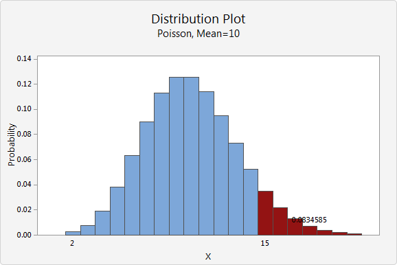
Here's an overview of the various distributions and how they are related [[15]]:
| Type of Finite Discrete Distribution | Description [1] |
|---|---|
| Bernoulli Distribution | Takes value $1$ with probability $p$ and value $0$ with probability $q=1-p$. |
| Rademacher Distribution | Takes value $1$ with probability $\frac{1}{2}$ and value $-1$ with probability $\frac{1}{2}$. |
| Binomial Distribution | The number of successes in a series of independent Yes/No experiments, all with the same probability of success. |
| Beta-Binomial Distribution | The number of successes in a series of independent Yes/No experiments with heterogeneity in the success probability. |
| Degenerate Distribution | At $X0$, where $X$ is certain to take the value $X0$. This does not look random, but it satisfies the definition of a random variable. This is useful because it puts deterministic variables and random variables in the same formalism. |
| Discrete Uniform Distribution | Where all elements of a finite set are equally likely. This is the theoretical distribution model for a balanced coin, an unbiased die, a casino roulette, or the first card of a well-shuffled deck. |
| Hypergeometric Distribution | The number of successes in the first $m$ of a series of $n$ consecutive Yes/No experiments, if the total number of successes is known. This distribution arises where there is no replacement. |
| Poisson Binomial Distribution | The number of successes in a series of independent Yes/No experiments with different success probabilities. |
Examples of discrete distribution with infinite support def include the following:
| Type of Infinite Discrete Distribution | Description [1] |
|---|---|
| Boltzmann Distribution | A discrete distribution important in statistical physics, which describes the probabilities of the various discrete energy levels of a system in thermal equilibrium. It has a continuous analog. |
| Geometric Distribution | A discrete distribution that describes the number of attempts needed to get the first success in a series of independent Bernoulli trials or, alternatively, only the number of losses before the first success (i.e. one less). |
| Negative Binomial/Pascal Distribution | A generalization of the geometric distribution of the $nth$ success. |
| Poisson Distribution | A very large number of individually unlikely events that happen at a specific time interval. Related to this distribution are several other distributions: the displaced Poisson, the hyper-Poisson, the general Poisson binomial and the Poisson-type distributions. |
| Skellam Distribution | The distribution of the difference between two independent Poisson-distributed random variables. |
| Zeta Distribution | Has uses in applied statistics and statistical mechanics, and perhaps may be of interest to number theorists. It is the Zipf distribution for an infinite number of elements. |
| Zipf's Law | A discrete power-law distribution, the most famous example of which is the description of the frequency of words in the English language. |
| Zipf-Mandelbrot Law | A discrete power-law distribution, which is a generalization of the Zipf distribution. |
Hypergeometric Distribution
A hypergeometric distribution is a discrete probability distribution that describes the probability of $T$ successes (random draws for which the object drawn has a specified feature) in $n$ draws, without replacement, from a finite population of size $N$ that contains exactly $m$ objects with that feature, wherein each draw is either a success or a failure [3]:
- A sample of size $n$ is randomly selected without replacement from a population of $N$ items.
- In the population, $T$ items can be classified as successes and $N-T$ items can be classified as failures.
- There are $m$ featuring objects.
Given $m, N, n$ and $T$, the hypergeometric probability can be computed based on the following example:
Example 1: Suppose a population consists of $N$ items, $T$ of which are successes; and a random sample drawn from that population consists of $n$ items. Then the hypergeometric probability is [10]: $$ h(m; N, n, T)= {{T}\choose{m}}{{N-T}\choose{n-m}}{{N}\choose{n}} $$ The hypergeometric distribution has the following properties:
- The mean of the distribution is equal to $n\cdot\frac{T}{N}$
- The variance is $ n\cdot T \cdot(N-T)\cdot\frac{N-n}{N^2\cdot(N-1)}$
Binomial Distribution
The binomial distribution with parameters $n$ and $p$ is the discrete probability distribution of the number of successes in a sequence of $n$ independent experiments, each asking a Yes/No question, and each with its own Boolean-valued outcome: success/yes/true/one (with probability $p$) or failure/no/false/zero (with probability $q=1- p$). A single success/failure experiment is also called a Bernoulli trial or Bernoulli experiment, and a sequence of outcomes is called a Bernoulli process. For a single trial, i.e. $n=1$, the binomial distribution is a Bernoulli distribution. The binomial distribution is the basis for the popular binomial test of statistical significance.
The binomial distribution is frequently used to model the number of successes in a sample of size $n$ drawn with replacement from a population of size $N$. If the sampling is carried out without replacement, the draws are not independent, and so the resulting distribution is hypergeometric, not binomial. However, for $n$ much larger than $n$, the binomial distribution remains a good approximation and is widely used.
Thus, in a binomial distribution, an object is selected with replacement [4]. A binomial experiment requires that the probability of success be constant on every trial.
Example 2: You have an urn containing $10$ marbles: $5$ red and $5$ green. You randomly select $2$ marbles with replacement, and the probability of success would not change. It would be $\frac{5}{10}$ on every trial [10].
Monte Carlo Simulations
The Monte Carlo approach is a computer-based analytical method that was developed in the 1940s as part of the atomic program, by a scientist at the Los Alamos National Laboratory, who used it to model the random diffusion of neutrons. It was named after the city in Monaco, which has many casinos.
Monte Carlo analysis uses statistical tools to model a real-life system or process mathematically. It then estimates the probability of obtaining a successful outcome. The statistical distribution of the process to be modeled must be determined before the Monte Carlo simulation can be applied.
Monte Carlo methods are widely used, heuristic techniques that can solve a variety of common problems, including optimization and numerical integration problems. These algorithms work by cleverly sampling from distributions to simulate the workings of a system. Applications range from solving problems in theoretical physics to predicting trends in financial investments [6].
Monte Carlo Fallacy
The Monte Carlo Fallacy or gambler's fallacy is the inaccurate belief that if something happens more frequently than normal during a given period, it will happen less often in the future. In situations where the outcome being observed is truly random and consists of independent trials of a random process, this belief is false. The fallacy can arise in many situations, but is most strongly associated with gambling, where it is common among players [13].
The gambler's fallacy can be illustrated by considering the repeated toss of a fair coin. The outcomes in different tosses are statistically independent, and the probability of getting heads on a single toss is $\frac{1}{2}$. The probability of getting $2$ heads in $2$ tosses is $\frac{1}{4}$, and the probability of getting $3$ heads in $3$ tosses is $\frac{1}{8}$. If, after tossing four heads in a row, the next coin toss also came up heads, it would complete a run of five successive heads. Since the probability of a sequence of five consecutive heads is $\frac{1}{32}$, a person might believe that the next flip would more likely come up tails rather than heads again. This is incorrect and is an example of the gambler's fallacy. The events "five heads in a row" and "first $4$ heads, then a tails" are equally likely, each having a probability of $\frac{1}{32}$. Since the first four tosses turn up heads, the probability that the next toss is a head is $\frac{1}{2}$ . While a run of five heads has a probability of $\frac{1}{32} = 0.03125$, the misunderstanding lies in not realizing that this is the case only before the first coin is tossed. After the first four tosses, the results are no longer unknown, so the probability at that point is equal to $one$. The reasoning that it is more likely that a fifth toss is more likely to be tails because the previous four tosses were heads, with a run of luck in the past influencing the odds in the future, forms the basis of the fallacy [13].
Crude Monte Carlo
The Monte Carlo technique is built upon this principle: instead of evaluating an indefinite integral, which can sometimes be impossible, the average of the integrand is estimated, and that is used to approximate the integral. If one needs to be more precise, the number of samples can be increased.
It is a widely used heuristic technique that can solve a variety of common problems, including optimization and numerical
integration problems. These algorithms work by cleverly sampling from a distribution to simulate the workings of a system.
Applications range from solving problems in theoretical physics to predicting trends in financial investments.
Law of Large Numbers
The Law of Large Numbers (LLN), in probability and statistics, states that as a sample size grows, its mean gets closer to the average of the whole population. In statistical analysis, the LLN can be applied to a variety of subjects. It may not be feasible to poll every individual within a given population to collect the required amount of data. However, every additional data point gathered has the potential to increase the likelihood that the outcome is an accurate measure of the mean [7].
The LLN is crucial because it guarantees stable, long-term results for the averages of some random event [8].

Methodology
Notation Used
This section gives the general notation of statistical expressions when specifically referenced. This information is important knowledge for the remainder of the report.
- Let $N$ be the total number of nodes in the network.
- Let $n$ be the committee size.
- Let $m$ be the number of bad actors.
- Let $T$ be the Byzantine Fault Tolerance (BFT) threshold.
There is a pool with N nodes. The pool contains m malicious nodes or bad actors. From within the pool, a random selection of nodes, n is drawn. From this selection, the probability of drawing a threshold of bad actors, T, needs to be calculated.
Crude Monte Carlo Simulation
Programming the Simulation
It was initially thought that selecting a committee ($n$) from the total nodes ($N$) without replacing the selected nodes requires the removal of an element from the pool of total nodes when it is drawn. However, as the program is calling for many selections within many experiments, this logic could not be used.
The experiment is extended to ask the overarching question: "What is the probability of selecting the threshold worth of bad nodes or more from a pool of total nodes?" To this end, we perform a variable number of experiments and count how many times the threshold is met, in order to estimate the probability.
Use of Random Numbers
Some problems in science and technology are described by "exact" mathematics, leading to "precise" results, e.g. throwing a ball and oscillating a system. Some problems appear physically uncertain, e.g. rolling a die and molecular motion. Random numbers can be used to mimic the uncertainty of the experiment.
Random numbers make it possible to simulate physical systems with uncertainty, in input data or the process.
Computing Statistics
The mode, median and mean are the arithmetic average of a data set. This is found by adding the numbers in a data set and dividing by how many numbers there are.
Mode Value
The mode is the score or value that occurs most often in a data set.
Median Value
The median is the middle number in a data set with the numbers listed in either ascending or descending order.
If the total number of numbers (n) is an odd number, then the formula is: $$ median =\biggl(\frac{n+1}{2}\biggr)^{th}term $$ If the total number of numbers (n) is an even number, then the formula is: $$ median= \frac{\biggl({\frac{n}{2}\biggr)^{th}term+\biggl({\frac{n}{2}+1\biggr)}^{th}term}}{2} $$
Mean Value
$$
\bar{x} = \frac{{\sum}x}{N}
$$
Where:
- $\sum$ represents the summation
- $x$ represents scores
- $N$ represents number of scores
A single probability from the overarching question was used as a means to derive the formulae, as shown in the following example.
Example 3: What is the probability of selecting a majority of bad nodes from a total of $5$ nodes if the committee size is $3$? There are $3$ bad nodes $(B1, B2, B3)$ and $2$ good nodes $(G1, G2)$.
The first step is to calculate the number of combinations where bad and good nodes can be chosen:
| Draw 1st node | Draw 2nd node | Draw 3rd node | Are bad nodes in the majority? |
|---|---|---|---|
$B1$ | $B2$ | $B3$ | Yes |
$B1$ | $B2$ | $G1$ | Yes |
$B1$ | $B2$ | $G2$ | Yes |
$B1$ | $B3$ | $G1$ | Yes |
$B1$ | $B3$ | $G2$ | Yes |
$B1$ | $G1$ | $G2$ | No |
$B2$ | $B3$ | $G1$ | Yes |
$B2$ | $B3$ | $G2$ | Yes |
$B2$ | $G1$ | $G2$ | No |
$B3$ | $G1$ | $G2$ | No |
| Tally of Yes responses | $7$ |
From this list, the number of combinations where $B$ is the majority can then be tallied. In this case, there are $7$ combinations where $B$ is the majority. Thus, from the $10$ combinations, there are $7$ combinations where there is a majority of bad nodes. Therefore, the quotient of $7$ and $10$ is the probability $0.7$.
This method is limited in calculating the probability where the variables are large. For example, if the same question was posed, but one had to calculate the probability of selecting a majority of bad nodes from a total of $100$ nodes, with a committee size of $60$, $60$ bad nodes and $40$ good nodes, the number of combinations where bad and good nodes can be chosen is $1.27E+28$.
Binomial Distribution Formula
With regard to binomial distribution, a committee of nodes is drawn from the total nodes with replacement, i.e. nodes are drawn, the intention of the node is distinguished and the node is returned to the total nodes. $$ P = {{n}\choose{T}}\cdot\biggl(\frac{m}{n}\biggr)^{T}\cdot\biggl(\frac{N-m}{n}\biggr)^{n-T} $$
Hypergeometric Distribution Formula
With regard to hypergeometric distribution, a committee of nodes is drawn from the total nodes without replacement, i.e. nodes are drawn simultaneously, the intention of the node is distinguished and not returned to the total nodes. This closely mimics the events that would take place within the network. $$ P = \frac{{{m}\choose{T}}\cdot{{N-m}\choose{n-T}}}{{N}\choose{n}} $$
Summation Formula
Referring to Example 3, the tally is the sum of all the combinations where the bad nodes are in a majority.
As a recap to the question, what is the probability of selecting a majority of bad nodes from a total of $100$ nodes if the committee size is $10$? This problem considers solving for the probability where there is a majority of bad nodes in the committee. This entails calculating the probabilities from the BFT threshold to the committee size. Thus, there needs to be a summation of individual probabilities in order to calculate the probability of selecting the majority of bad nodes. $$ P_{tot} = \sum_{i=T}^{n} P(N,m,n,i) $$
The following table provides some visual insight into understanding this:
| Committee Size | BFT Threshold | No. of Steps |
|---|---|---|
| 10 | 7 | 3 |
References
[1] Wikipedia, “List of Probability Distributions” [online]. Available: https://en.wikipedia.org/wiki/List_of_probability_distributions. Date accessed: 2019‑05‑13.
[2] Wikipedia, “Support (Mathematics)" [online]. Available: https://en.wikipedia.org/wiki/Support_(mathematics). Date accessed: 2019‑05‑13.
[3] Wikipedia, “Hypergeometric Distribution” [online]. Available: https://en.wikipedia.org/wiki/Hypergeometric_distribution. Date accessed: 2019‑05‑13.
[4] Wikipedia, “Binomial Distribution" [online]. Available: https://en.wikipedia.org/wiki/Binomial_distribution. Date accessed: 2019‑05‑13.
[5] POA Network Team, "POA Network: Honey Badger BFT and Threshold Cryptography" [online]. Available: https://medium.com/poa-network/poa-network-honey-badger-bft-and-threshold-cryptography-c43e10fadd87. Date accessed: 2019‑06‑28.
[6] P. Hanbury, "Monte Carlo Simulations with Python (Part 1)" [online]. Available: https://towardsdatascience.com/monte-carlo-simulations-with-python-part-1-f5627b7d60b0. Date accessed: 2019‑06‑28.
[7] W. Kenton, "Law of Large Numbers" [online]. Available: https://www.investopedia.com/terms/l/lawoflargenumbers.asp. Date accessed: 2019‑06‑28.
[8] Wikipedia, "Law of Large Numbers" [online]. Available: https://en.wikipedia.org/wiki/Law_of_large_numbers. Date accessed: 2019‑06‑28.
[9] Wikipedia, "Law of Large Numbers - Average Dice Roll by Number of Rolls" [online]. Available: https://commons.wikimedia.org/w/index.php?curid=58536069. Date accessed: 2019‑06‑28.
[10] Stat Trek, "Hypergeometric Distribution" [online]. Available: https://stattrek.com/probability-distributions/hypergeometric.aspx. Date accessed: 2019‑06‑28.
[11] Minitab Express Support, "Continuous and Discrete Probability Distributions" [online]. Available: https://support.minitab.com/en-us/minitab-express/1/help-and-how-to/basic-statistics/probability-distributions/supporting-topics/basics/continuous-and-discrete-probability-distributions/. Date accessed: 2019‑07‑18.
[12] Wikipedia, "Probability Density Function" [online]. Available: https://en.wikipedia.org/wiki/Probability_density_function. Date accessed: 2019‑07‑18.
[13] Wikipedia, "Gambler's Fallacy" [online]. Available: https://en.wikipedia.org/wiki/Gambler%27s_fallacy. Date accessed: 2019‑07‑18.
[14] Stat Trek, "Probability Distributions: Discrete vs. Continuous" [online]. Available: https://stattrek.com/probability-distributions/discrete-continuous.aspx. Date accessed: 2019‒11‑18.
[15] Medium, "Common Probability Distributions: The Data Scientist’s Crib Sheet" [online]. Available: https://medium.com/@srowen/common-probability-distributions-347e6b945ce4. Date accessed: 2019‒11‑18.
Appendices
Appendix A: Definitions of Terms
Definitions of terms presented here are high level and general in nature.
- Probability Density Function (PDF): a statistical expression that defines a probability distribution for a continuous random variable instead of a discrete random variable ([11], [12]).
- Discrete Distribution with finite support: a discrete distribution with finite support can have a finite number of possible realizations.
- Discrete Distribution with infinite support: a discrete distribution with infinite support can have an infinite number of possible realizations.
Contributors
- https://github.com/kevoulee
- https://github.com/anselld
- https://github.com/neonknight64
- https://github.com/hansieodendaal
- https://github.com/Empiech007
Probability of a Byzantine Takeover of the Digital Assets Network
- Introduction
- Tari Digital Assets Network
- Implementation
- Conclusions and Remarks
- References
- Appendices
- Contributors
Introduction
This investigation aims to provide answers to questions posed about the workings of the Tari Digital Assets Network (DAN) environment. It covers probabilistic attack vector with regard to the total nodes, compromised nodes, committee size and Byzantine Fault-tolerance (BFT) threshold.
The investigation attempts to answer the following question: What is the percentage chance of controlling the majority of nodes in a random sample with varying quantities of the total number of nodes, committee size, bad nodes and BFT threshold?
Tari Digital Assets Network
The Tari Digital Assets Network (DAN) forms part of the Tari second layer, where the management of all digital asset interactions takes place.
These interactions are processed and validated by committees of special nodes, called Validator Nodesdef (VNs). Management of Digital Assets (DAs) involves state changes and ensures enforcement of the rules that govern assets contracts. Thus, all actions on this network are due to the interactions of the VNs. The registration of VNs occurs on the base layer. To prevent Sybil attacks, they commit collateral. If proved that the VN engaged in malicious behavior, the VN will lose its collateral.
An Asset Issuer def (AI) would then issue DAs and draw up a contract. The AI will dictate the size of the committee of VNs for a particular DA. The AI will also have the ability to nominate a trusted node to form part of the VN committee for the DA [1].
Kademlia
Kademlia was designed by Petar Maymounkov and David Mazières in 2002 [2]. It is a distributed hash table, used for decentralized, peer-to-peer computer networks.
Node ID
A node selects an $n$-bit ID, given to nodes on the network. Node IDs have uniformly distributed numbers. A node's position is determined by a unique prefix of its ID, which forms a tree structure, with node IDs as leaves.
The bit length of the node ID should be sufficiently large to make collisions unlikely when using a uniformly distributed random number generator [3].
Bootstrapping a Node
A bootstrap node is a node listed on a predetermined list, and serves as the first point of contact for a new node. The node bootstrapping process is as follows:
- To establish itself on the network without any known contacts, a node needs to contact at least one bootstrap node, requesting an introduction to the network.
- A node ID is generated for the joining node.
- The new node contacts other nodes of which it is aware.
- The new node sends a lookup request with its newly generated node ID.
- The contacted nodes return the nodes they know about that are closest.
- The new nodes are added to the routing table, and contacting begins.
- The process continues until the joining node is unable to locate any closer nodes.
This self-lookup has two effects:
- it allows the node to learn about nodes closer to itself; and
- it populates other nodes' routing tables with the node's ID [3].
XOR Metric
The Kademlia paper, published in 2002 [2], contained the novel idea of using the XOR operator to determine the distance and therefore the arrangement of peers within the network.
Through the XOR metric, a distance is captured. The lookup procedure allows nodes to locate other nodes, given a node ID [3].
Implementation
The following calculations were done using the Tari Labs Modelling Repository.
Crude Monte Carlo Simulation
Proving the Law of Large Numbers
With the Crude Monte Carlo technique, to gain precision, the number of samples can be increased. Thus, before calculating the probability and drawing comparisons, the sample size, number of draws within an experiment, and the number of experiments can be varied to find an optimal amount.
Below is the input data inserted into the python programme with dependencies network setup and random distribution, where the number of draws within an experiment is $10$, and the number of experiments is $10$:
What is the total amount of nodes? 100
What is the amount of bad nodes? 60
How many nodes are to be drawn? 3
What is the BFT threshold within the committee? 2
What is the number of draws within an experiment? 10
How many experiments? 10
Do you know the theoretical mean? Y|N: Y
What is the theoretical mean? 0.649474335188621

Below is the input data inserted into the python programme, where the number of draws within an experiment is $1,000$ and the number of experiments is $1,000$:
What is the total amount of nodes? 100
What is the amount of bad nodes? 60
How many nodes are to be drawn? 3
What is the BFT threshold within the committee? 2
What is the number of draws within an experiment? 1,000
How many experiments? 1,000
Do you know the theoretical mean? Y|N: Y
What is the theoretical mean? 0.649474335188621

In each graph, the cumulative probabilities calculated for normal, uniform, Poisson and hypergeometric distribution are plotted against the number of experiments. The bold blue line represents the mean calculated from theoretical data.
In the first graph, where the experiments and draws are equal to $10$, there is weak convergence. In the second graph, where the experiments and draws are equal to $1,000$, the Law of Large Numbers (LLN) is proved; as the sample size grows, convergence with the statistical mean is achieved.
Individual Probabilities
The following graph highlights the varying probabilities of each experiment conducted for the hypergeometric distribution. The mean of this distribution provides us with the average of the probabilities, which can then be compared to the calculated theoretical mean.
From a comparison of the mean probability of each distribution with the theoretical mean, it can be seen that the distribution type that closely mimics the theoretical result is hypergeometric.
Hypergeometric distribution is where there is no replacement, i.e. nodes are drawn simultaneously, distinguished and not returned to the pool of total nodes.
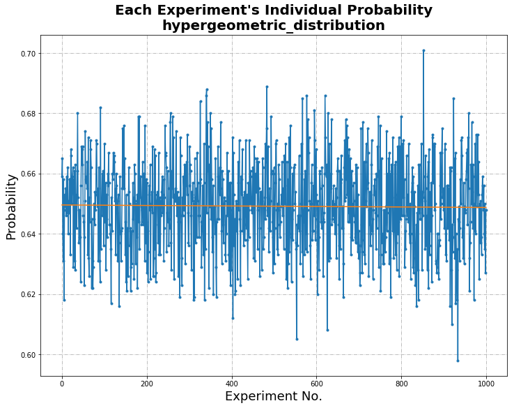
Uniform Distribution
| Statistical Information | Comparison with Theoretical Mean | Difference Calculated | |
|---|---|---|---|
| Intercept | 0.6497887492507493 | 0.649474335188621 | 3.14414E-4 |
| Standard Deviation | 0.015438728229013219 |
Hypergeometric Distribution
| Statistical Information | Comparison with Theoretical Mean | Difference Calculated | |
|---|---|---|---|
| Intercept | 0.6495665834165834 | 0.649474335188621 | 9.22482E-5 |
| Standard Deviation | 0.014812123075035204 |
Poisson Distribution
| Statistical Information | Comparison with Theoretical Mean | Difference Calculated | |
|---|---|---|---|
| Intercept | 0.6501259280719281 | 0.649474335188621 | 6.51592E-4 |
| Standard Deviation | 0.015233575444419514 |
Normal Distribution
| Statistical Information | Comparison with Theoretical Mean | Difference Calculated | |
|---|---|---|---|
| Intercept | 0.6482901778221778 | 0.649474335188621 | 1.18416E-3 |
| Standard Deviation | 0.01507612979811762 |
Histogram and Visualization of Distribution
The histogram of randomness highlights the distribution of good and bad nodes selected in each experiment, highlighting the random nature of the experiment.

| Statistical Information | |
|---|---|
| Mean | 120,000.0 |
| Median | 119,991.0 |
| Mode | - |
| Standard Deviation | 346.4313595341606 |
Statistical Calculation
Literature about BFT threshold advises the number of good nodes to be at least $\frac{2}{3} \cdot n+1$, where $n$ is the number of nodes. In the calculations that follow, BFT threshold of, for example, $67$% of N, is implemented with rounding up to ensure that at least that fraction is obtained. In this sense, $67$% of N simulates $\frac{2}{3} \cdot n+1$.
Variation of Total Nodes
The variables and results are below:
- N (total number of nodes in the network) = $100, 300, 500, 1000$
- m (number of bad actors) = $60$% of N
- T (BFT threshold) = $67$% of N
- n (committee size) = ranging from $1$ to $1,000$
The above graph was calculated using Python (variations of N with dependencies hypergeometric distribution). Below is a sample of the data where there is a total of 100. The highlighted data was previously used in the Crude Monte Carlo Simulation when supplying the theoretical mean.
| Total Nodes | Bad Nodes | Committee Size | BFT Threshold | Probability |
|---|---|---|---|---|
| 100 | 60 | 1 | 1 | 0.6 |
| 100 | 60 | 2 | 2 | 0.3575757575757576 |
100 | 60 | 3 | 2 | 0.649474335188621 |
| 100 | 60 | 4 | 3 | 0.47343240951488375 |
| 100 | 60 | 5 | 4 | 0.33162085827770661 |
| 100 | 60 | 6 | 4 | 0.5443381851334722 |
| 100 | 60 | 7 | 5 | 0.4153500188485931 |
| 100 | 60 | 8 | 6 | 0.30661160770090995 |
| 100 | 60 | 9 | 6 | 0.47996269793634677 |
| 100 | 60 | 10 | 7 | 0.37423758246308586 |
| 100 | 60 | 11 | 8 | 0.28361605491457653 |
| 100 | 60 | 12 | 8 | 0.4320215340178938 |
| 100 | 60 | 13 | 9 | 0.3409545354772218 |
| 100 | 60 | 14 | 10 | 0.2623321970180976 |
| 100 | 60 | 15 | 10 | 0.39288184738975973 |
Variation of Byzantine Fault-tolerance Threshold
The variables and results are below:
- N (total number of nodes in the network) = $100$
- m (number of bad actors) = $60$% of N
- T (BFT threshold) = $50$%, $55$%, $60$%, $67$% of N
- n (committee size) = ranging from $1$ to $100$

The above graph was calculated using Python (variations of BFT with dependencies hypergeometric distribution). From a plot of committee size versus probability where the number of nodes remains at $100$ with a change in $T$, the BFT threshold, ranging from $50$% to $67$%, it can be seen that When the BFT threshold is $50$% and $55$%, the probability is low when the committee size is small; as the committee size increases, the probability increases, and tends to $1$. The probability is higher for the case where the BFT threshold is $50$% than when the probability is $55$%.
When the BFT threshold is $60$%, the probability decreases from $0.63$ to approximately $0.59$, where it remains constant.
When the BFT threshold is $65$% and $67$%, the probability decreases from $0.38$ and tends to zero. This confirms the BFT threshold of $\frac{2}{3} \cdot n+1$ as per literature.
Variation of Total Number of Nodes with Committee Size 10
The variables and results are below:
- N (total number of nodes in the network) = ranging from $10$ to $350$
- m (number of bad actors) = $60$% of N
- T (BFT threshold) = $67$% of N
- n (committee size) = $10$

The above graph was calculated using Excel (variations of N with n fixed). For the graph showing varying probabilities with respect to the total number of network nodes, where the committee size is $10$, the probability dramatically increases when the total nodes is $3$ times more than the committee size and onwards. The probability plateaus at $0.35$.
Variation of Total Number of Nodes with Committee Size 100
The variables and results are below:
- N (total number of nodes in the network) = ranging from $100$ to $1,300$
- m (number of bad actors) = $60$% of N
- T (BFT threshold) = $67$% of N
- n (committee size) = $100$

The above graph was calculated using Excel (variations of N with n fixed). From this and the previous graph, it can be seen that probabilities are significantly lower when the committee size is $100$ compared to when it is $10$. There is an increase in probability up to a network size of $700$, albeit, not as steep as the change when the committee size is $10$. The probability plateaus at $0.08$.
The larger the committee size, the fewer dramatic changes there are in the probability.
Variation of Bad Nodes with Committee Size 10 and 100
The variables and results are below:
- N (total number of nodes in the network) = ranging from $10$ and $100$ to $50,000$
- m (number of bad actors) = $10$%, $20$%, $30$%, $40$%, $50$%, $60$%, $70$%, $80$% and $90$% of N
- T (BFT threshold) = $67$% of N
- n (committee size) = $10$ and $100$


The above graphs were calculated using Excel (bad node variation where n is 100). These graphs show varying probabilities when the percentage of bad nodes is $20$, $40$, $60$ and $90$. The value when the probability plateaus is used to construct the following graph for both committee sizes $10$ and $100$.
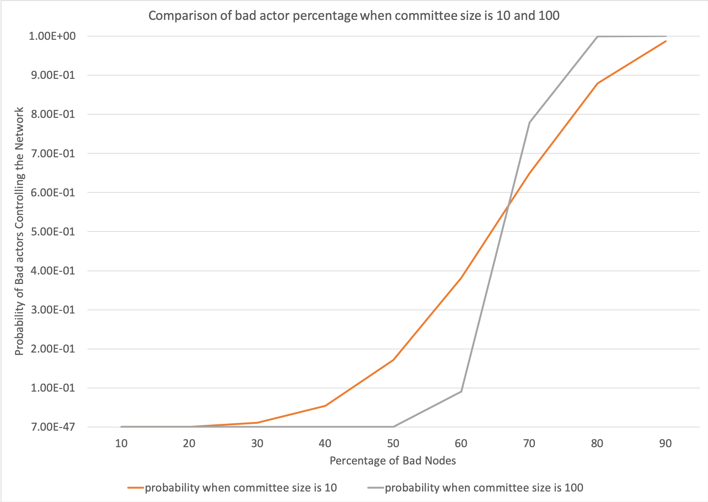
The above graph was calculated using Excel
(bad node percentage at 10 and 100). The
graph shows changes in the probability due to changes in percentage of bad nodes when the committee size is $10$ and $100$. When
the committee size is $10$, there is a change in probability when the bad node percentage is between $30$ and $80$.
When the committee size is $100$, there is a steep increase in the probability when the bad node percentage is between
$50$ and $80$. When the committee size is $100$, the probability remains lower as the bad node percentage increases and
has a steeper gradient when the change in probability occurs. Whereas, when the committee size is $10$, the probability
begins to increase at a lower percentage of bad nodes.
Conclusions and Remarks
With regard to the Crude Monte Carlo Simulation, at this building block stage, probabilities were calculated and distributions of nodes within the network illustrated.
With regard to the statistical calculation, comments can be made for each of the varied parameters.
- Total nodes in the network: The smaller the pool of total nodes in the network, the lower the probability of bad actors controlling the network. However, the probability difference is near negligible if the committee size is large. This parameter will also be difficult to control, and the network will be ever-increasing. This can be seen in the graph in Variation of Total Nodes.
- BFT threshold: This threshold should be at least $\frac{2}{3} \cdot n+1$ as per literature. This can be seen in the graph in Variation of Byzantine Fault-tolerance Threshold.
- Committee size: The larger the committee size, the lower the probability of bad actors controlling the network. This can be seen in the graph in Variation of Total Number of Nodes with Committee Size 10 and Variation of Total Number of Nodes with Committee Size 100.
- Bad nodes: While this variable cannot be controlled, the probability of bad actors controlling the network can remain low, as the percentage of bad nodes increases if the committee size is approximately $100$ or larger. This can be seen in the graphs in Variation of Bad Nodes with Committee Size 10 and 100
References
[1] C. Sharrock [online]. Available: https://rfc.tari.com/RFC-0300_DAN.html. Date accessed: 2019‑07‑18.
[2] P. Maymounkov and D. Mazières, "Kademlia: A Peer-to-peer Information System Based on the XOR Metric" [online]. Available: https://pdos.csail.mit.edu/~petar/papers/maymounkov-kademlia-lncs.pdf. Date accessed: 2019‑07‑18.
[3] S. Bondi, "Distributed Hash Tables" [online]. Available: https://tlu.tarilabs.com/protocols/dht/MainReport.html. Date accessed: 2019‑07‑18.
Appendices
Appendix A: Definitions of Terms
Definitions of terms presented here are high level and general in nature.
- Asset Issuer (AI): An entity that creates digital assets on the Tari Digital Asset Network (DAN). The Asset Issuer will specify the parameters of the contract template that defines the rules that govern the asset and the number and nature of its constituent tokens on issuance. The AI will, generally, be the initial owner of the tokens [1].
- Validator Node (VN): Validator nodes make up the Tari second layer, or Digital Asset Network (DAN). VNs are responsible for creating and updating digital asset living on the Tari network [1].
Contributors
- https://github.com/kevoulee
- https://github.com/anselld
- https://github.com/neonknight64
- https://github.com/hansieodendaal
TLU Labs
Purpose
This chapter contains various new features and demos that we're thinking of adding to make the TLU experience better. Since this is experimental, things might not work 100% here.
Mermaid Demo
TLU can now support mermaid diagrams! Flowcharts, sequence diagrams and more!
How to write mermaid diagrams.
- RTFM.
- Wrap your mermaid code in
<div>tags. Add theclass=mermaidattribute to the tag. So your code will look like
<div class="mermaid">
graph LR
...
</div>
- Note: You can't have blank lines in your diagrams, unfortunately, because the markdown renderer will interpret
this as a new paragraph and break your diagram. However, you can sort of workaround this by putting a
#as a spacer (see first example).
Sequence diagram example
<div class=mermaid>
sequenceDiagram
Alice ->> Bob: Hello Bob, how are you?
Bob-->>John: How about you John?
Bob--x Alice: I am good thanks!
Bob-x John: I am good thanks!
#
Note right of John: Bob thinks a long<br/>long time, so long<br/>that the text does<br/>not fit on a row.
Bob-->Alice: Checking with John...
Alice->John: Yes... John, how are you?
</div>
long time, so long
that the text does
not fit on a row. Bob-->Alice: Checking with John... Alice->John: Yes... John, how are you?
Flowchart example
<div class=mermaid>
graph LR
A[Hard edge] -->|Link text| B(Round edge)
B --> C{Decision}
C -->|One| D[Result one]
C -->|Two| E[Result two]
</div>
Gantt Chart example
<div class="mermaid">
gantt
dateFormat YYYY-MM-DD
title Adding GANTT diagram functionality to mermaid
section A section
Completed task :done, des1, 2014-01-06,2014-01-08
Active task :active, des2, 2014-01-09, 3d
Future task : des3, after des2, 5d
Future task2 : des4, after des3, 5d
section Critical tasks
Completed task in the critical line :crit, done, 2014-01-06,24h
Implement parser and jison :crit, done, after des1, 2d
Create tests for parser :crit, active, 3d
Future task in critical line :crit, 5d
Create tests for renderer :2d
Add to mermaid :1d
section Documentation
Describe gantt syntax :active, a1, after des1, 3d
Add gantt diagram to demo page :after a1 , 20h
Add another diagram to demo page :doc1, after a1 , 48h
section Last section
Describe gantt syntax :after doc1, 3d
Add gantt diagram to demo page :20h
Add another diagram to demo page :48h
</div>
Notes
<div class="note">
Give your reports a bit of pizazz with Notes!
</div>
Info boxes
<div class="note info">
Highlight interesting information and asides in an info box.
</div>
Warnings
<div class="note warning">
A highly visual and high contrast warning box will really get your message out there!
</div>
Style Guide
Purpose
The purpose of this Style Guide is to provide contributors to the Tari Labs University (TLU) reports with standards for content and layout. The intention is to improve communication and provide a high-quality learning resource for users. Use of this Style Guide can assist in ensuring consistency in the content and layout of TLU reports.
TLU content is created in Markdown format and is rendered using mdBook.
Standards for Content
Spelling
As per the United States (US) spelling standard. The applicable dictionary is Merriam-Webster Online [1].
Quotation Marks
As per the American style. Use double quotation marks for a first quotation and single quotation marks for a quotation within a quotation.
Punctuation
As per the United Kingdom (UK) punctuation standard. Place commas and full stops outside the closing quotation marks as advised in [4].
Units of Measure
Use the internationally agreed ISO standards [3] for expressing units of measure.
Example
min = minute, s = second, h = hour, g = gram.
Date and Time
- Date format: yyyy-mm-dd (year-month-date).
- Date format when written in text: "The document was submitted for approval on 10 March 2019".
- Time format (international): 11:00; 15:00.
Abbreviations
-
If it is necessary to use abbreviations in a report, write the abbreviation out in full at its first occurrence in the text, followed by the abbreviation in brackets. Thereafter, use the abbreviation only.
Example
Tari Labs University (TLU), graphical user interface (GUI).
-
Abbreviations of units should be consistent and not changed in the plural.
Example
10h and not 10hrs; 5min and not 5mins.
Spacing
Note: Due to limitations in Markdown, we deviate from the ISO convention, which requires a space between numbers and units of measure, and also as a thousands separator.
-
Use of a non-breaking space (
) can improve readability in the rendered mdbook where required. -
Indicate clearly to which unit a number belongs:
Incorrect
11 x 11 x 11mm
Correct
11mm x 11mm x 11mm
-
Use 'to' rather than a dash to indicate a range of values:
Incorrect 1 - 10cm
Correct
1cm to 10cm
-
Use a comma to indicate thousands.
Example
1,000; 20,000,000; 250,000.
Mathematical operators should usually be wrapped inside equation tags. In plain text, leave a space on either side of signs such as + (plus), - (minus), = (equal to), > (greater than) and < (less than).
Decimals and Numbers
- Use the decimal point and not the decimal comma.
- Write out numbers from one to nine in full in text; use Arabic numerals for 10 onwards.
List Types
TLU uses unordered lists (refer to the first example under List Punctuation) and ordered lists (refer to the second example under List Punctuation.
List Punctuation
Where a list is a continuation of the preceding text, which is followed by a colon, use a semicolon between each bullet point and end the list with a full stop.
Example
Their primary motivations for selecting a static emission rate are:
- there will be no upper limit on the amount of coins that can be created;
- the percentage of newly created coins compared to the total coins in circulation will tend toward zero;
- it will mitigate the effect of orphaned and lost coins;
- it will encourage spending rather than holding of coins.
Where a list contains complete sentences, each item in the list is followed by a full stop.
Example
According to the proposed solution, one of three conditions will be true to the SPV client when using erasure codes:
- The entire extended data is available, the erasure code is constructed correctly and the block is valid.
- The entire extended data is available, the erasure code is constructed correctly, but the block is invalid.
- The entire extended data is available, but the erasure code is constructed incorrectly.
Where a list is not a sentence and does not complete a preceding part of a sentence, use no punctuation.
Example
Refer to the list of contents at the start of this Style Guide.
Cross-referencing
- Insert cross-references between the referenced information in the text and the list of references.
- Text references appear in square brackets in the text and are listed under "References" at the end of each chapter.
- If a text reference appears at the end of a paragraph, it appears after the full stop at the end of the paragraph.
- Please be specific when referring to figures, tables and sections of text. For clarity, if using figure and table numbering, avoid referring to "below" or "above". Rather give a specific figure or table number. In the case of text references, include a link. For more information, please refer to the Markdown Links section in this Style Guide.
Case Formatting
Appendix A contains a list of lower-case words used in title case formatting in headings and captions (if used).
Terminology
With new concepts being formed daily and words changing over time, it is useful to establish terminology conventions. Different conventions (upper-case, lower-case, one word, two words, etc.) are used by different sources. Appendix B contains suggested terminology for use in TLU reports.
Standards for Layout
Proposed Layout
This section gives the proposed layout for TLU reports. The following headings are provided as a guide to heading levels and content:
- Title (as heading level 1)
Contents List (as embedded links).
-
Introduction/Purpose/Background/Overview (as heading level 2)
This section explains the aim of the report and prepares the reader for the content.
-
Other headings as appropriate (as heading level 2 and lower)
Structure the body of your report by using headings and subheadings. Ordering these headings logically helps you to present your information effectively. Headings make it easier for readers to find specific information.
-
Numbered Lists: Use numbered lists when the order of the items in the list is important, such as in procedures.
-
Bulleted Lists: Use bulleted lists when the order of the items in the list is not important.
-
-
Conclusions, Observations, Recommendations (as heading level 2)
The conclusion complements the purpose of the report. It concisely summarizes the findings of the report and gives a future strategy, if required.
-
References (as heading level 2)
References acknowledge the work of others and help readers to find sources. Refer to Referencing of Source Material.
-
Appendices (as heading level 2)
Appendices contain supplementary information that supports the main report.
-
Appendix A: Name (as heading level 3)
Rather than inserting an entire supporting document into an appendix, provide a text reference and list the reference in the references section.
-
Appendix B: Name (as heading level 3)
If figure and table numbers are used in the report, the figure and table numbering in the appendices follows on from the figure and table numbers used in the report.
-
-
Contributors (as heading level 2)
Refer to List of Contributors.
-
Line Widths
Try to keep line widths to a maximum of 120 characters for ease of GitHub reviews. In Markdown, a single line break does not constitute the start of a new paragraph.
Example
This text, which is split over four lines:
Probatum fuit hujusmodi Testamentum apud London decimo Octavo die mensis Septembris Anno Domini Millesimo
Septingentesimo vicesimo tertio Coram venerabili viro Gulielmo Strahan. In cuius rei testimonium sigillum nostrum
presentibus apposuimus ad duos anni terminos videlicet ad festa Sancti Michaelis Archangeli et Annunciationis beate
Marie virginis.
will look like a single paragraph, as follows:
Probatum fuit hujusmodi Testamentum apud London decimo Octavo die mensis Septembris Anno Domini Millesimo Septingentesimo vicesimo tertio Coram venerabili viro Gulielmo Strahan. In cuius rei testimonium sigillum nostrum presentibus apposuimus ad duos anni terminos videlicet ad festa Sancti Michaelis Archangeli et Annunciationis beate Marie virginis.
Bulleted List of Contents
Every chapter in a TLU report should start with a bulleted list of all the headings in that chapter (with embedded links), for quick reference and consistency. This is optional for chapters that have five or fewer lower-level headings.
Example
Refer to the contents listed at the start of this Style Guide. The heading "Contents" is not inserted before this list.
Headings
- Do not include paragraph numbers in headings.
- For consistency, upper and lower-case (title case) letters are used for headings at all levels.
Incorrect
## 2. OVERVIEW
Correct
## Overview
Also refer to Appendix A.
Figures and Tables
The use of captions, as well as figure and table numbering, is optional. If you choose to use numbering and captions, these guidelines will help to promote consistency in TLU layout:
- Number figures and tables in each section sequentially, with the table caption above the table and the figure caption below the figure.
- Type figure and table captions in upper and lower-case (title case).
- Type Figure x: or Table X: before the caption, as applicable.
- Center figures and tables on the page.
- Place figures and tables as soon as possible after they are first referred to in the text. The text reference, if figure and table numbering is not used, would then be "the following figure..." or "the following table...". This helps to avoid confusion.
Equations
mdBook has optional support for math
equations
through MathJax. In addition to the delimiters \[ and \[, TLU also supports delimiters $ and $$.
Examples
-
Example of an inline equation: $ h \in \mathbb G $
-
Example of a display equation:
$$ \mathbb s = \prod _{i=0}^n s(i) $$
Note: MathJax rendering in mdBook has some caveats to take note of:
-
Subscripts
-
When using two or more subscripts in inline or display equations, stipulated by a preceding underscore (
_), the equation rendering does not work as expected. This is due to_being a special character for Markdown indicating text in italics. The way around this is to escape each underscore used in the equation as follows: (\_). An example of this is:-
Rendering correctly
$ \mathbf a _{[:l]} = ( a_1 , ... , a_n ) \in \mathbb F ^ n \mspace{12mu} \text{and} \mspace{12mu} \mathbf a _{[l:]} = ( a_{1+1} , ... , a_n ) \in \mathbb F ^ {n-l} $
as
$ \mathbf a \_{[:l]} = ( a_1 , ... , a_n ) \in \mathbb F ^ n \mspace{12mu} \text{and} \mspace{12mu} \mathbf a _{[l:]} = ( a_{1+1} , ... , a_n ) \in \mathbb F ^ {n-l} $ -
Rendering incorrectly
$ \mathbf a _{[:l]} = ( a_1 , ... , a_n ) \in \mathbb F ^ n \mspace{12mu} \text{and} \mspace{12mu}
\mathbf a {[l:]} = ( a{1+1} , ... , a_n ) \in \mathbb F ^ {n-l} $as
$ \mathbf a _{[:l]} = ( a_1 , ... , a_n ) \in \mathbb F ^ n \mspace{12mu} \text{and} \mspace{12mu} \mathbf a _{[l:]} = ( a_{1+1} , ... , a_n ) \in \mathbb F ^ {n-l} $Notice that this part of the (failed) formula,
_{[l:]} = ( a_, is rendered in italics.
-
-
-
Superscripts and subscripts order
-
Sometimes swapping the order in which an expression's superscript text and subscript text appear may fix rendering issues, for example:
-
$ s_i = \prod ^{\log _2 (n)} _{j=1} x ^{b(i,j)} _j $vs.
$ s_i = \prod _{j=1} ^{\log _2 (n)} x _j ^{b(i,j)} $
-
-
Referencing of Source Material
Referencing Standard
TLU uses the IEEE standard [2] as a guide for referencing publications.
List references in the following order, as applicable:
- Author(s) initials or first name and surname (note punctuation in the following example).
- Title of the report, between double quotation marks. If it is an online report, state this in square brackets, as shown in the following example.
- Title of journal, in italics (if applicable).
- Publication information (volume, number, etc.).
- Page range (if applicable).
- URL address if an online publication. Provide this information as shown in the following example: "Available: ..".
- Date you accessed the article if it is an online publication (yyyy-mm-dd), as shown in the following example.
Example
[1] M. Abe, M. Ohkubo and K. Suzuki, "1-out-of-n Signatures from a Variety of Keys" [online]. Available: https://www.iacr.org/cryptodb/archive/2002/ASIACRYPT/50/50.pdf. Date accessed: 2018-12-18.
Please note the use of punctuation and full stops in the example.
Markdown Links
There are two types of Markdown links: inline links and reference links.
The inline link under the Equations heading was created as follows:
- Insert identifying link text within a set of square brackets (refer to the following example).
- Create an inline link by placing a set of parentheses (round brackets) immediately after the closing square bracket of the link text (refer to the following example).
- Insert the relevant URL link inside the parentheses (round brackets) (refer to the following example).
mdBook has optional support for math equations through MathJax.
Example
A reference link has two parts. The first part of a reference link has two sets of square brackets. Inside the inner (second) set of square brackets, insert a label to identify the link.
Example
Under the heading Spelling, the text reference is "The applicable dictionary is Merriam-Webster Online [1]". In the markdown text, note the double square brackets and the label 1. The rendered text shows 1.
The second part of a reference link is inserted under the heading References, and appears as follows:
[1] Merriam-Webster Online Dictionary [online]. Available: https://www.merriam-webster.com/. Date accessed: 2019-02-01.
The full online reference is inserted after [[1]]; and the pop-up text link (which can be seen by hovering your cursor
over the text reference in Spelling) is inserted after [1]:.
For assistance with the layout of references, refer to Referencing Standard.
List of Contributors
The contributors are listed in a bulleted list via their GitHub account URLs. The author is listed first, followed by any reviewers or people who contributed via pull requests. Refer to Contributors for an example.
References
[1] Merriam-Webster Online Dictionary [online]. Available: https://www.merriam-webster.com/. Date accessed: 2019-02-01.
[2] Citing and Referencing: IEEE [online]. Available: https://guides.lib.monash.edu/citing-referencing/ieee. Date accessed: 2019-02-01.
[3] A. Thompson and B. N. Taylor, " Guide for the Use of the International System of Units (SI)", (1995) – NIST Special Publication 811 - 2008 Edition [online]. Available: https://physics.nist.gov/cuu/pdf/sp811.pdf. Date accessed: 2019-02-04.
[4] The Oxford Guide to Style [online]. Available: http://www.eng-lang.co.uk/ogs.htm. Date accessed: 2019-02-04.
Appendices
Appendix A: Lower-case Words used in Title Case Formatting
| Case Word | Case Word | Case Word | Case Word |
|---|---|---|---|
| a | each | less | therefore |
| about | either | lesser | these |
| above | equal | low | they |
| after | ever | made | this |
| against | every | make | those |
| ahead | exclude | means | through |
| am | excluding | more | throughout |
| an | follow | most | thus |
| and | following | neither | to |
| any | follows | next | top |
| are | for | no | towards |
| as | from | nor | under |
| at | further | not | up |
| be | give | of | upper |
| been | given | on | use |
| before | go | only | use |
| behind | good | or | used |
| below | greater | order | used |
| beside | had | our | using |
| besides | has | out | versus |
| best | have | outer | very |
| better | how | outside | via |
| between | however | over | were |
| bottom | i.e. | provide | what |
| but | in | regard | when |
| by | include | since | where |
| can | including | such | which |
| consist | inner | than | while |
| consistent | inside | that | who |
| consistently | instead | the | with |
| consists | is | their | within |
| does | it | them | without |
| down | its | then | worst |
| e.g. | least | there |
Appendix B: Tari Labs University Terminology Conventions
With new concepts being formed daily and words changing over time, it is useful to establish terminology conventions. Different conventions (upper-case, lower-case, one word, two words, etc.) are used by different sources. This appendix contains suggested terminology for use in TLU reports.
- blockchain
- Mimblewimble